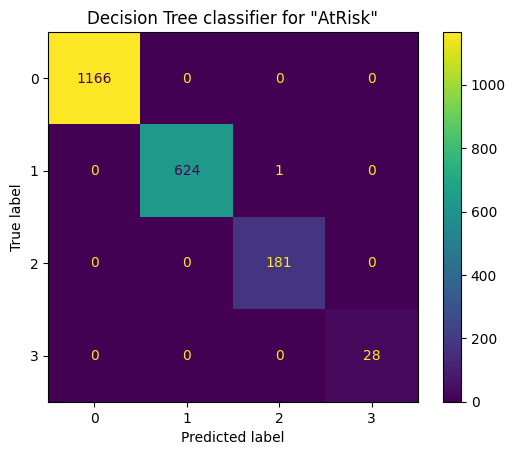
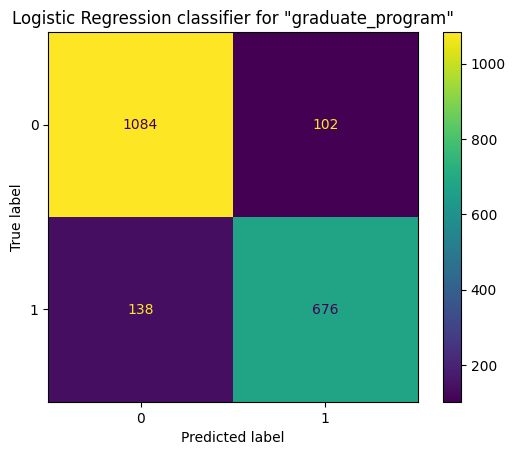
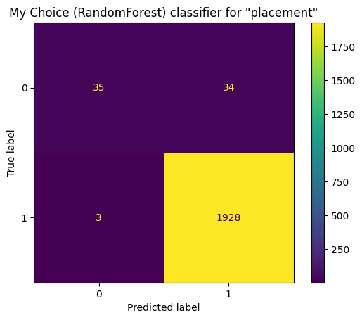
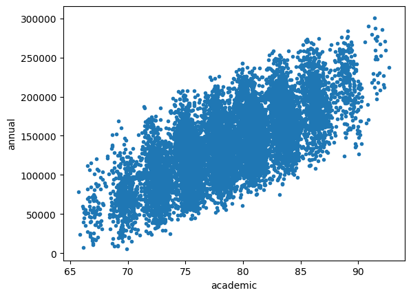
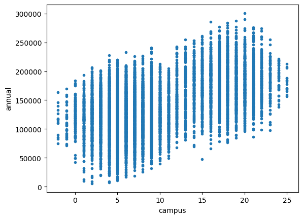
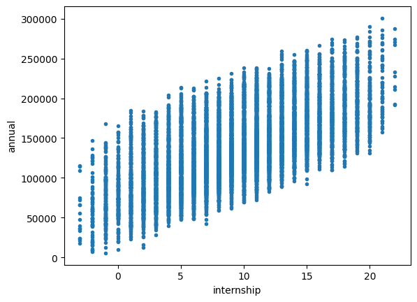
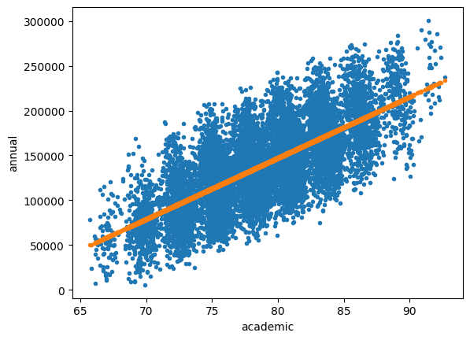

import pandas as pd
import numpy as np
import matplotlib.pyplot as pltExam 2 - Analyze Data for Patterns with Learned Methods
Honor Code Pledge
By submitting your answers to this exam, you acknowledge adherence to the Honor Code Pledge:
On my honor as a University of Colorado Boulder student I have neither given nor received unauthorized assistance
Background
We have learned:
- Frequent Patterns
- Classification
- Regression
- Clustering
We learned how to analyze data for patterns. We have played with many tutorials to learn the tools as well.
In this exam, you will be given a dataset, and you are going to apply the methods and tools to it. To receive full credits, besides showing and explaining the result the methods, you should also explain the rational of why and how you tuned the models (why and how you chose hyperparameters)..
Best results will be published like a data science competition
Read and Understand the data (5 points)
In this part, you should import the data, use stats and visualization tools, to get a basic understanding of it.
df = pd.read_csv('student_record_10k.csv')df.head()| Unnamed: 0 | id | major | gender | c01 | c02 | c03 | c04 | c05 | c06 | ... | AtRisk_academic | AtRisk_campus | AtRisk_internship | AtRisk | graduate_program | goverment | industry | placement | annual | elective | |
|---|---|---|---|---|---|---|---|---|---|---|---|---|---|---|---|---|---|---|---|---|---|
| 0 | 0 | 0 | Computer Science | M | 75.757576 | 82.558140 | 72.674419 | 63.5 | 64.981949 | 77.880184 | ... | 0 | 0 | 0 | 0 | 0.349878 | 0.367152 | 0.321840 | 1.038870 | 107617.807100 | ['Databases' 'Statistical_Inference'\n 'High_P... |
| 1 | 1 | 1 | Electric Engineering | M | 81.818182 | 90.697674 | 86.627907 | 69.5 | 65.342960 | 76.036866 | ... | 0 | 0 | 0 | 0 | 0.480584 | 0.365623 | 0.507846 | 1.354054 | 119352.387963 | ['Databases' 'Data_Mining' 'Big_Data' 'Nature_... |
| 2 | 2 | 2 | Computer Science | M | 81.212121 | 83.139535 | 67.441860 | 61.5 | 67.870036 | 90.783410 | ... | 0 | 1 | 0 | 1 | 0.272257 | 0.091891 | 0.275136 | 0.639283 | 79071.683763 | ['Text_Marketing_Analysis' 'Databases' 'Stats_... |
| 3 | 3 | 3 | Computer Science | F | 82.424242 | 85.465116 | 71.511628 | 64.0 | 67.148014 | 90.322581 | ... | 0 | 0 | 0 | 0 | 0.471933 | 0.341157 | 0.549235 | 1.362325 | 166007.658165 | ['Effective_Communication' 'Data_Structures_an... |
| 4 | 4 | 4 | Computer Science | M | 86.666667 | 88.372093 | 75.581395 | 68.5 | 72.202166 | 88.018433 | ... | 0 | 0 | 0 | 0 | 0.567934 | 0.445324 | 0.666711 | 1.679969 | 163059.071543 | ['R_for_Data_Science' 'Databases' 'Machine_Lea... |
5 rows × 27 columns
df.info()<class 'pandas.core.frame.DataFrame'>
RangeIndex: 10000 entries, 0 to 9999
Data columns (total 27 columns):
# Column Non-Null Count Dtype
--- ------ -------------- -----
0 Unnamed: 0 10000 non-null int64
1 id 10000 non-null int64
2 major 10000 non-null object
3 gender 10000 non-null object
4 c01 10000 non-null float64
5 c02 10000 non-null float64
6 c03 10000 non-null float64
7 c04 10000 non-null float64
8 c05 10000 non-null float64
9 c06 10000 non-null float64
10 c07 10000 non-null float64
11 c08 10000 non-null float64
12 c09 10000 non-null float64
13 c10 10000 non-null float64
14 academic 10000 non-null float64
15 campus 10000 non-null int64
16 internship 10000 non-null int64
17 AtRisk_academic 10000 non-null int64
18 AtRisk_campus 10000 non-null int64
19 AtRisk_internship 10000 non-null int64
20 AtRisk 10000 non-null int64
21 graduate_program 10000 non-null float64
22 goverment 10000 non-null float64
23 industry 10000 non-null float64
24 placement 10000 non-null float64
25 annual 10000 non-null float64
26 elective 10000 non-null object
dtypes: float64(16), int64(8), object(3)
memory usage: 2.1+ MBClassification (30 points)
AtRisk (10 points)
Use columns 'c01', 'c02', …, 'c10','academic', 'campus', and 'internship', and use Decision Tree to classify students who need attention. The column 'AtRisk' measures the level of attention needed, 0 stands for no need, 3 stands for a lot attention needed. As the hypterparameter training, you should set proper argument for the Decision Tree algorithm.
features = ['c0{}'.format(i) for i in range(1,10)] + ['c10','academic','campus','internship']
target = ['AtRisk']
X = df[features]
y = df[target]from sklearn.model_selection import train_test_split
X_train, X_test, y_train, y_test = train_test_split(X, y, test_size=0.20)from sklearn.tree import DecisionTreeClassifier
DTclassifier = DecisionTreeClassifier()
DTclassifier.fit(X_train, y_train)DecisionTreeClassifier()In a Jupyter environment, please rerun this cell to show the HTML representation or trust the notebook.
On GitHub, the HTML representation is unable to render, please try loading this page with nbviewer.org.
DecisionTreeClassifier()
from sklearn.metrics import confusion_matrix,ConfusionMatrixDisplay
def create_cm(model,actual,prediction,plot_title):
cm = confusion_matrix(actual, prediction, labels=model.classes_)
disp = ConfusionMatrixDisplay(confusion_matrix=cm,display_labels=model.classes_)
disp.plot()
# plt.xticks(rotation=45)
plt.title(plot_title)
plt.show()dt_pred = DTclassifier.predict(X_test)create_cm(DTclassifier,y_test,dt_pred,'Decision Tree classifier for "AtRisk"')
graduate program (10 points)
Use columns 'c01', 'c02', …, 'c10','academic', 'campus', and 'internship', and use Logistic Regression to classify students who will continue in a graduate program. The column 'graduate_program' indicates the likihood of the student who will continue in a graduate program. 0 means impossible, and 1 means very possible.
target2 = ['graduate_program']
y2 = round(df[target2]).astype(int)y2.head()| graduate_program | |
|---|---|
| 0 | 0 |
| 1 | 0 |
| 2 | 0 |
| 3 | 0 |
| 4 | 1 |
X_train2, X_test2, y_train2, y_test2 = train_test_split(X, y2, test_size=0.20)from sklearn.linear_model import LogisticRegression
logreg = LogisticRegression()
logreg.fit(X_train2,y_train2)/shared-libs/python3.9/py/lib/python3.9/site-packages/sklearn/utils/validation.py:1111: DataConversionWarning: A column-vector y was passed when a 1d array was expected. Please change the shape of y to (n_samples, ), for example using ravel().
y = column_or_1d(y, warn=True)
/shared-libs/python3.9/py/lib/python3.9/site-packages/sklearn/linear_model/_logistic.py:444: ConvergenceWarning: lbfgs failed to converge (status=1):
STOP: TOTAL NO. of ITERATIONS REACHED LIMIT.
Increase the number of iterations (max_iter) or scale the data as shown in:
https://scikit-learn.org/stable/modules/preprocessing.html
Please also refer to the documentation for alternative solver options:
https://scikit-learn.org/stable/modules/linear_model.html#logistic-regression
n_iter_i = _check_optimize_result(LogisticRegression()In a Jupyter environment, please rerun this cell to show the HTML representation or trust the notebook.
On GitHub, the HTML representation is unable to render, please try loading this page with nbviewer.org.
LogisticRegression()
logreg_pred = logreg.predict(X_test2)create_cm(logreg,y_test2,logreg_pred,'Logistic Regression classifier for "graduate_program"')
placement (10 points)
Use columns 'c01', 'c02', …, 'c10','academic', 'campus', and 'internship', and use A METHOD OF YOUR CHOICE to classify students who will have a placement. The column 'placement' measures the likelihood of students will get placements. 0 stands for no chance, and 3 means the student has high probability to get multiple placements. You should convert the value to binary: [0, 0.5) as False, and [0.5, 3] as True.
conditions = [
(df['placement'] >=0) & (df['placement'] <0.5),
(df['placement'] >= 0.5) & (df['placement'] <= 3.0),
]
values = [False, True]
df['placement'] = np.select(conditions, values)
df.head()| Unnamed: 0 | id | major | gender | c01 | c02 | c03 | c04 | c05 | c06 | ... | AtRisk_academic | AtRisk_campus | AtRisk_internship | AtRisk | graduate_program | goverment | industry | placement | annual | elective | |
|---|---|---|---|---|---|---|---|---|---|---|---|---|---|---|---|---|---|---|---|---|---|
| 0 | 0 | 0 | Computer Science | M | 75.757576 | 82.558140 | 72.674419 | 63.5 | 64.981949 | 77.880184 | ... | 0 | 0 | 0 | 0 | 0.349878 | 0.367152 | 0.321840 | 1 | 107617.807100 | ['Databases' 'Statistical_Inference'\n 'High_P... |
| 1 | 1 | 1 | Electric Engineering | M | 81.818182 | 90.697674 | 86.627907 | 69.5 | 65.342960 | 76.036866 | ... | 0 | 0 | 0 | 0 | 0.480584 | 0.365623 | 0.507846 | 1 | 119352.387963 | ['Databases' 'Data_Mining' 'Big_Data' 'Nature_... |
| 2 | 2 | 2 | Computer Science | M | 81.212121 | 83.139535 | 67.441860 | 61.5 | 67.870036 | 90.783410 | ... | 0 | 1 | 0 | 1 | 0.272257 | 0.091891 | 0.275136 | 1 | 79071.683763 | ['Text_Marketing_Analysis' 'Databases' 'Stats_... |
| 3 | 3 | 3 | Computer Science | F | 82.424242 | 85.465116 | 71.511628 | 64.0 | 67.148014 | 90.322581 | ... | 0 | 0 | 0 | 0 | 0.471933 | 0.341157 | 0.549235 | 1 | 166007.658165 | ['Effective_Communication' 'Data_Structures_an... |
| 4 | 4 | 4 | Computer Science | M | 86.666667 | 88.372093 | 75.581395 | 68.5 | 72.202166 | 88.018433 | ... | 0 | 0 | 0 | 0 | 0.567934 | 0.445324 | 0.666711 | 1 | 163059.071543 | ['R_for_Data_Science' 'Databases' 'Machine_Lea... |
5 rows × 27 columns
X_train3, X_test3, y_train3, y_test3 = train_test_split(X, df['placement'], test_size=0.20)from sklearn.ensemble import RandomForestClassifier
rf_classifier = RandomForestClassifier()
rf_classifier.fit(X_train3,y_train3)RandomForestClassifier()In a Jupyter environment, please rerun this cell to show the HTML representation or trust the notebook.
On GitHub, the HTML representation is unable to render, please try loading this page with nbviewer.org.
RandomForestClassifier()
rf_pred = rf_classifier.predict(X_test3)create_cm(rf_classifier,y_test3,rf_pred,'My Choice (RandomForest) classifier for "placement"')
df.head()| Unnamed: 0 | id | major | gender | c01 | c02 | c03 | c04 | c05 | c06 | ... | AtRisk_academic | AtRisk_campus | AtRisk_internship | AtRisk | graduate_program | goverment | industry | placement | annual | elective | |
|---|---|---|---|---|---|---|---|---|---|---|---|---|---|---|---|---|---|---|---|---|---|
| 0 | 0 | 0 | Computer Science | M | 75.757576 | 82.558140 | 72.674419 | 63.5 | 64.981949 | 77.880184 | ... | 0 | 0 | 0 | 0 | 0.349878 | 0.367152 | 0.321840 | 1 | 107617.807100 | ['Databases' 'Statistical_Inference'\n 'High_P... |
| 1 | 1 | 1 | Electric Engineering | M | 81.818182 | 90.697674 | 86.627907 | 69.5 | 65.342960 | 76.036866 | ... | 0 | 0 | 0 | 0 | 0.480584 | 0.365623 | 0.507846 | 1 | 119352.387963 | ['Databases' 'Data_Mining' 'Big_Data' 'Nature_... |
| 2 | 2 | 2 | Computer Science | M | 81.212121 | 83.139535 | 67.441860 | 61.5 | 67.870036 | 90.783410 | ... | 0 | 1 | 0 | 1 | 0.272257 | 0.091891 | 0.275136 | 1 | 79071.683763 | ['Text_Marketing_Analysis' 'Databases' 'Stats_... |
| 3 | 3 | 3 | Computer Science | F | 82.424242 | 85.465116 | 71.511628 | 64.0 | 67.148014 | 90.322581 | ... | 0 | 0 | 0 | 0 | 0.471933 | 0.341157 | 0.549235 | 1 | 166007.658165 | ['Effective_Communication' 'Data_Structures_an... |
| 4 | 4 | 4 | Computer Science | M | 86.666667 | 88.372093 | 75.581395 | 68.5 | 72.202166 | 88.018433 | ... | 0 | 0 | 0 | 0 | 0.567934 | 0.445324 | 0.666711 | 1 | 163059.071543 | ['R_for_Data_Science' 'Databases' 'Machine_Lea... |
5 rows × 27 columns
Regression (30 points)
placement (10 points)
Choose the best ONE attribute from 'academic', 'campus', and 'internship' for predicting how much the annual income a student may have using simple linear regression.
for i in ['academic','campus','internship']:
plt.figure()
plt.plot(df[i],df['annual'],'.')
plt.xlabel(i)
plt.ylabel('annual')


I’m going to say ‘academic’ is one of the best attributes
from sklearn.linear_model import LinearRegression
# Initialize instance of linear regression
linear_reg_model = LinearRegression()
linear_reg_model.fit(df[['academic']],df[['annual']])LinearRegression()In a Jupyter environment, please rerun this cell to show the HTML representation or trust the notebook.
On GitHub, the HTML representation is unable to render, please try loading this page with nbviewer.org.
LinearRegression()
plt.figure()
plt.plot(df['academic'],df['annual'],'.')
plt.plot(df['academic'],linear_reg_model.predict(df[['academic']]),'.',label='Linear Reg Model')
plt.xlabel('academic')
plt.ylabel('annual')Text(0, 0.5, 'annual')
placement (10 points)
Choose the best ONE attribute from 'academic', 'campus', and 'internship' for predicting how much the annual income a student may have using simple polynomial regression with the regularization terms of your choice.
df2 = df.copy()
df2.head()| Unnamed: 0 | id | major | gender | c01 | c02 | c03 | c04 | c05 | c06 | ... | AtRisk_academic | AtRisk_campus | AtRisk_internship | AtRisk | graduate_program | goverment | industry | placement | annual | elective | |
|---|---|---|---|---|---|---|---|---|---|---|---|---|---|---|---|---|---|---|---|---|---|
| 0 | 0 | 0 | Computer Science | M | 75.757576 | 82.558140 | 72.674419 | 63.5 | 64.981949 | 77.880184 | ... | 0 | 0 | 0 | 0 | 0.349878 | 0.367152 | 0.321840 | 1 | 107617.807100 | ['Databases' 'Statistical_Inference'\n 'High_P... |
| 1 | 1 | 1 | Electric Engineering | M | 81.818182 | 90.697674 | 86.627907 | 69.5 | 65.342960 | 76.036866 | ... | 0 | 0 | 0 | 0 | 0.480584 | 0.365623 | 0.507846 | 1 | 119352.387963 | ['Databases' 'Data_Mining' 'Big_Data' 'Nature_... |
| 2 | 2 | 2 | Computer Science | M | 81.212121 | 83.139535 | 67.441860 | 61.5 | 67.870036 | 90.783410 | ... | 0 | 1 | 0 | 1 | 0.272257 | 0.091891 | 0.275136 | 1 | 79071.683763 | ['Text_Marketing_Analysis' 'Databases' 'Stats_... |
| 3 | 3 | 3 | Computer Science | F | 82.424242 | 85.465116 | 71.511628 | 64.0 | 67.148014 | 90.322581 | ... | 0 | 0 | 0 | 0 | 0.471933 | 0.341157 | 0.549235 | 1 | 166007.658165 | ['Effective_Communication' 'Data_Structures_an... |
| 4 | 4 | 4 | Computer Science | M | 86.666667 | 88.372093 | 75.581395 | 68.5 | 72.202166 | 88.018433 | ... | 0 | 0 | 0 | 0 | 0.567934 | 0.445324 | 0.666711 | 1 | 163059.071543 | ['R_for_Data_Science' 'Databases' 'Machine_Lea... |
5 rows × 27 columns
placement (10 points)
Use 'academic', 'campus', and 'internship' together for predicting how much the annual income a student may have using multiple linear regression.
mult_lin_reg = LinearRegression()
mult_lin_reg.fit(df[['academic','campus','internship']],df[['annual']])LinearRegression()In a Jupyter environment, please rerun this cell to show the HTML representation or trust the notebook.
On GitHub, the HTML representation is unable to render, please try loading this page with nbviewer.org.
LinearRegression()
from sklearn.metrics import mean_absolute_error,mean_squared_error,r2_score
mult_pred = mult_lin_reg.predict(df[['academic','campus','internship']])
print()
print('multiple regression model results:')
print('mse = {}'.format(mean_squared_error(df[['annual']],mult_pred)))
print('mae = {}'.format(mean_absolute_error(df[['annual']],mult_pred)))
print('r2 = {}'.format(r2_score(df[['annual']],mult_pred)))
multiple regression model results:
mse = 296647593.02474385
mae = 14885.08475325327
r2 = 0.8638218677932239I didn’t take the time to produce these metric scores for the other regression models, so I don’t have much to compare. But in general, I would say an R-squared score >0.8 is not too bad.
Clustering (20 points)
K-Means (5 points)
Use 'c01', 'c02', …, 'c10' and K-Means, cluster similar students to k groups. Explain why you choose such a k.
cluster_data = df[['c0{}'.format(i) for i in range(1,10)] + ['c10']]
cluster_data.head()| c01 | c02 | c03 | c04 | c05 | c06 | c07 | c08 | c09 | c10 | |
|---|---|---|---|---|---|---|---|---|---|---|
| 0 | 75.757576 | 82.558140 | 72.674419 | 63.5 | 64.981949 | 77.880184 | 82.236842 | 79.220779 | 77.570093 | 83.050847 |
| 1 | 81.818182 | 90.697674 | 86.627907 | 69.5 | 65.342960 | 76.036866 | 78.947368 | 92.857143 | 85.046729 | 82.627119 |
| 2 | 81.212121 | 83.139535 | 67.441860 | 61.5 | 67.870036 | 90.783410 | 88.815789 | 79.220779 | 72.429907 | 88.135593 |
| 3 | 82.424242 | 85.465116 | 71.511628 | 64.0 | 67.148014 | 90.322581 | 91.447368 | 84.415584 | 76.168224 | 89.406780 |
| 4 | 86.666667 | 88.372093 | 75.581395 | 68.5 | 72.202166 | 88.018433 | 91.447368 | 88.961039 | 74.299065 | 84.745763 |
DBSCAN (5 points)
Use 'c01', 'c02', …, 'c10' and DBSCAN, cluster similar students to groups. Explain why you choose such epsilon and minpoints.
PCA (5 points)
Use PCA methods to reduce columns 'c01', 'c02', …, 'c10','academic', 'campus', and 'internship' to 3 extracted attributes. Print out the % of explained variance with the 3 extracted features.
pca_data = df[['c0{}'.format(i) for i in range(1,10)] + ['c10','academic','campus','internship']]from sklearn.decomposition import PCA
pca = PCA(n_components=3)
X_pca = pca.fit_transform(pca_data)
X_pca.shape(10000, 3)pca.explained_variance_ratio_array([0.46556569, 0.32223478, 0.11389498])PCA (5 points)
Use PCA methods to reduce columns 'c01', 'c02', …, 'c10','academic', 'campus', and 'internship' to 80% explained variance. Print out the number of extracted features we need.
pca2 = PCA(0.80)
X_pca2 = pca2.fit_transform(pca_data)
X_pca2.shape(10000, 3)pca2.n_components_3Frequent Patterns (10 points)
There is an attribute 'elective'. Use apriori algorithm, to find the frequent patterns of the elective courses and find the association rules. As the hypterparameter training, you should set the min_support, min_confidence, and min_lift so that your conclusion is interesting.
fp_data = df['elective']
fp_data.head()0 ['Databases' 'Statistical_Inference'\n 'High_P...
1 ['Databases' 'Data_Mining' 'Big_Data' 'Nature_...
2 ['Text_Marketing_Analysis' 'Databases' 'Stats_...
3 ['Effective_Communication' 'Data_Structures_an...
4 ['R_for_Data_Science' 'Databases' 'Machine_Lea...
Name: elective, dtype: object# !pip install apyori
from apyori import aprioriRequirement already satisfied: apyori in /root/venv/lib/python3.9/site-packages (1.1.2)
WARNING: You are using pip version 22.0.4; however, version 23.1 is available.
You should consider upgrading via the '/root/venv/bin/python -m pip install --upgrade pip' command.rule = apriori(transactions = fp_data, max_length=2)
result = list(rule)
len(result)990result[RelationRecord(items=frozenset({'\n'}), support=1.0, ordered_statistics=[OrderedStatistic(items_base=frozenset(), items_add=frozenset({'\n'}), confidence=1.0, lift=1.0)]),
RelationRecord(items=frozenset({' '}), support=1.0, ordered_statistics=[OrderedStatistic(items_base=frozenset(), items_add=frozenset({' '}), confidence=1.0, lift=1.0)]),
RelationRecord(items=frozenset({"'"}), support=1.0, ordered_statistics=[OrderedStatistic(items_base=frozenset(), items_add=frozenset({"'"}), confidence=1.0, lift=1.0)]),
RelationRecord(items=frozenset({'A'}), support=0.7428, ordered_statistics=[OrderedStatistic(items_base=frozenset(), items_add=frozenset({'A'}), confidence=0.7428, lift=1.0)]),
RelationRecord(items=frozenset({'B'}), support=0.468, ordered_statistics=[OrderedStatistic(items_base=frozenset(), items_add=frozenset({'B'}), confidence=0.468, lift=1.0)]),
RelationRecord(items=frozenset({'C'}), support=0.8687, ordered_statistics=[OrderedStatistic(items_base=frozenset(), items_add=frozenset({'C'}), confidence=0.8687, lift=1.0)]),
RelationRecord(items=frozenset({'D'}), support=1.0, ordered_statistics=[OrderedStatistic(items_base=frozenset(), items_add=frozenset({'D'}), confidence=1.0, lift=1.0)]),
RelationRecord(items=frozenset({'E'}), support=0.4732, ordered_statistics=[OrderedStatistic(items_base=frozenset(), items_add=frozenset({'E'}), confidence=0.4732, lift=1.0)]),
RelationRecord(items=frozenset({'H'}), support=0.464, ordered_statistics=[OrderedStatistic(items_base=frozenset(), items_add=frozenset({'H'}), confidence=0.464, lift=1.0)]),
RelationRecord(items=frozenset({'I'}), support=0.4631, ordered_statistics=[OrderedStatistic(items_base=frozenset(), items_add=frozenset({'I'}), confidence=0.4631, lift=1.0)]),
RelationRecord(items=frozenset({'L'}), support=0.9805, ordered_statistics=[OrderedStatistic(items_base=frozenset(), items_add=frozenset({'L'}), confidence=0.9805, lift=1.0)]),
RelationRecord(items=frozenset({'M'}), support=0.9811, ordered_statistics=[OrderedStatistic(items_base=frozenset(), items_add=frozenset({'M'}), confidence=0.9811, lift=1.0)]),
RelationRecord(items=frozenset({'N'}), support=0.729, ordered_statistics=[OrderedStatistic(items_base=frozenset(), items_add=frozenset({'N'}), confidence=0.729, lift=1.0)]),
RelationRecord(items=frozenset({'P'}), support=0.9463, ordered_statistics=[OrderedStatistic(items_base=frozenset(), items_add=frozenset({'P'}), confidence=0.9463, lift=1.0)]),
RelationRecord(items=frozenset({'R'}), support=0.4684, ordered_statistics=[OrderedStatistic(items_base=frozenset(), items_add=frozenset({'R'}), confidence=0.4684, lift=1.0)]),
RelationRecord(items=frozenset({'S'}), support=0.9999, ordered_statistics=[OrderedStatistic(items_base=frozenset(), items_add=frozenset({'S'}), confidence=0.9999, lift=1.0)]),
RelationRecord(items=frozenset({'T'}), support=0.4786, ordered_statistics=[OrderedStatistic(items_base=frozenset(), items_add=frozenset({'T'}), confidence=0.4786, lift=1.0)]),
RelationRecord(items=frozenset({'V'}), support=0.4757, ordered_statistics=[OrderedStatistic(items_base=frozenset(), items_add=frozenset({'V'}), confidence=0.4757, lift=1.0)]),
RelationRecord(items=frozenset({'['}), support=1.0, ordered_statistics=[OrderedStatistic(items_base=frozenset(), items_add=frozenset({'['}), confidence=1.0, lift=1.0)]),
RelationRecord(items=frozenset({']'}), support=1.0, ordered_statistics=[OrderedStatistic(items_base=frozenset(), items_add=frozenset({']'}), confidence=1.0, lift=1.0)]),
RelationRecord(items=frozenset({'_'}), support=1.0, ordered_statistics=[OrderedStatistic(items_base=frozenset(), items_add=frozenset({'_'}), confidence=1.0, lift=1.0)]),
RelationRecord(items=frozenset({'a'}), support=1.0, ordered_statistics=[OrderedStatistic(items_base=frozenset(), items_add=frozenset({'a'}), confidence=1.0, lift=1.0)]),
RelationRecord(items=frozenset({'b'}), support=0.4748, ordered_statistics=[OrderedStatistic(items_base=frozenset(), items_add=frozenset({'b'}), confidence=0.4748, lift=1.0)]),
RelationRecord(items=frozenset({'c'}), support=1.0, ordered_statistics=[OrderedStatistic(items_base=frozenset(), items_add=frozenset({'c'}), confidence=1.0, lift=1.0)]),
RelationRecord(items=frozenset({'d'}), support=0.9462, ordered_statistics=[OrderedStatistic(items_base=frozenset(), items_add=frozenset({'d'}), confidence=0.9462, lift=1.0)]),
RelationRecord(items=frozenset({'e'}), support=1.0, ordered_statistics=[OrderedStatistic(items_base=frozenset(), items_add=frozenset({'e'}), confidence=1.0, lift=1.0)]),
RelationRecord(items=frozenset({'f'}), support=0.9996, ordered_statistics=[OrderedStatistic(items_base=frozenset(), items_add=frozenset({'f'}), confidence=0.9996, lift=1.0)]),
RelationRecord(items=frozenset({'g'}), support=1.0, ordered_statistics=[OrderedStatistic(items_base=frozenset(), items_add=frozenset({'g'}), confidence=1.0, lift=1.0)]),
RelationRecord(items=frozenset({'h'}), support=0.9943, ordered_statistics=[OrderedStatistic(items_base=frozenset(), items_add=frozenset({'h'}), confidence=0.9943, lift=1.0)]),
RelationRecord(items=frozenset({'i'}), support=1.0, ordered_statistics=[OrderedStatistic(items_base=frozenset(), items_add=frozenset({'i'}), confidence=1.0, lift=1.0)]),
RelationRecord(items=frozenset({'k'}), support=0.8736, ordered_statistics=[OrderedStatistic(items_base=frozenset(), items_add=frozenset({'k'}), confidence=0.8736, lift=1.0)]),
RelationRecord(items=frozenset({'l'}), support=0.9993, ordered_statistics=[OrderedStatistic(items_base=frozenset(), items_add=frozenset({'l'}), confidence=0.9993, lift=1.0)]),
RelationRecord(items=frozenset({'m'}), support=0.9468, ordered_statistics=[OrderedStatistic(items_base=frozenset(), items_add=frozenset({'m'}), confidence=0.9468, lift=1.0)]),
RelationRecord(items=frozenset({'n'}), support=1.0, ordered_statistics=[OrderedStatistic(items_base=frozenset(), items_add=frozenset({'n'}), confidence=1.0, lift=1.0)]),
RelationRecord(items=frozenset({'o'}), support=1.0, ordered_statistics=[OrderedStatistic(items_base=frozenset(), items_add=frozenset({'o'}), confidence=1.0, lift=1.0)]),
RelationRecord(items=frozenset({'p'}), support=0.8688, ordered_statistics=[OrderedStatistic(items_base=frozenset(), items_add=frozenset({'p'}), confidence=0.8688, lift=1.0)]),
RelationRecord(items=frozenset({'r'}), support=1.0, ordered_statistics=[OrderedStatistic(items_base=frozenset(), items_add=frozenset({'r'}), confidence=1.0, lift=1.0)]),
RelationRecord(items=frozenset({'s'}), support=1.0, ordered_statistics=[OrderedStatistic(items_base=frozenset(), items_add=frozenset({'s'}), confidence=1.0, lift=1.0)]),
RelationRecord(items=frozenset({'t'}), support=1.0, ordered_statistics=[OrderedStatistic(items_base=frozenset(), items_add=frozenset({'t'}), confidence=1.0, lift=1.0)]),
RelationRecord(items=frozenset({'u'}), support=0.9924, ordered_statistics=[OrderedStatistic(items_base=frozenset(), items_add=frozenset({'u'}), confidence=0.9924, lift=1.0)]),
RelationRecord(items=frozenset({'v'}), support=0.4732, ordered_statistics=[OrderedStatistic(items_base=frozenset(), items_add=frozenset({'v'}), confidence=0.4732, lift=1.0)]),
RelationRecord(items=frozenset({'w'}), support=0.4702, ordered_statistics=[OrderedStatistic(items_base=frozenset(), items_add=frozenset({'w'}), confidence=0.4702, lift=1.0)]),
RelationRecord(items=frozenset({'x'}), support=0.4786, ordered_statistics=[OrderedStatistic(items_base=frozenset(), items_add=frozenset({'x'}), confidence=0.4786, lift=1.0)]),
RelationRecord(items=frozenset({'y'}), support=0.8906, ordered_statistics=[OrderedStatistic(items_base=frozenset(), items_add=frozenset({'y'}), confidence=0.8906, lift=1.0)]),
RelationRecord(items=frozenset({'\n', ' '}), support=1.0, ordered_statistics=[OrderedStatistic(items_base=frozenset(), items_add=frozenset({'\n', ' '}), confidence=1.0, lift=1.0), OrderedStatistic(items_base=frozenset({'\n'}), items_add=frozenset({' '}), confidence=1.0, lift=1.0), OrderedStatistic(items_base=frozenset({' '}), items_add=frozenset({'\n'}), confidence=1.0, lift=1.0)]),
RelationRecord(items=frozenset({'\n', "'"}), support=1.0, ordered_statistics=[OrderedStatistic(items_base=frozenset(), items_add=frozenset({'\n', "'"}), confidence=1.0, lift=1.0), OrderedStatistic(items_base=frozenset({'\n'}), items_add=frozenset({"'"}), confidence=1.0, lift=1.0), OrderedStatistic(items_base=frozenset({"'"}), items_add=frozenset({'\n'}), confidence=1.0, lift=1.0)]),
RelationRecord(items=frozenset({'A', '\n'}), support=0.7428, ordered_statistics=[OrderedStatistic(items_base=frozenset(), items_add=frozenset({'A', '\n'}), confidence=0.7428, lift=1.0), OrderedStatistic(items_base=frozenset({'\n'}), items_add=frozenset({'A'}), confidence=0.7428, lift=1.0), OrderedStatistic(items_base=frozenset({'A'}), items_add=frozenset({'\n'}), confidence=1.0, lift=1.0)]),
RelationRecord(items=frozenset({'\n', 'B'}), support=0.468, ordered_statistics=[OrderedStatistic(items_base=frozenset(), items_add=frozenset({'\n', 'B'}), confidence=0.468, lift=1.0), OrderedStatistic(items_base=frozenset({'\n'}), items_add=frozenset({'B'}), confidence=0.468, lift=1.0), OrderedStatistic(items_base=frozenset({'B'}), items_add=frozenset({'\n'}), confidence=1.0, lift=1.0)]),
RelationRecord(items=frozenset({'\n', 'C'}), support=0.8687, ordered_statistics=[OrderedStatistic(items_base=frozenset(), items_add=frozenset({'\n', 'C'}), confidence=0.8687, lift=1.0), OrderedStatistic(items_base=frozenset({'\n'}), items_add=frozenset({'C'}), confidence=0.8687, lift=1.0), OrderedStatistic(items_base=frozenset({'C'}), items_add=frozenset({'\n'}), confidence=1.0, lift=1.0)]),
RelationRecord(items=frozenset({'\n', 'D'}), support=1.0, ordered_statistics=[OrderedStatistic(items_base=frozenset(), items_add=frozenset({'\n', 'D'}), confidence=1.0, lift=1.0), OrderedStatistic(items_base=frozenset({'\n'}), items_add=frozenset({'D'}), confidence=1.0, lift=1.0), OrderedStatistic(items_base=frozenset({'D'}), items_add=frozenset({'\n'}), confidence=1.0, lift=1.0)]),
RelationRecord(items=frozenset({'E', '\n'}), support=0.4732, ordered_statistics=[OrderedStatistic(items_base=frozenset(), items_add=frozenset({'E', '\n'}), confidence=0.4732, lift=1.0), OrderedStatistic(items_base=frozenset({'\n'}), items_add=frozenset({'E'}), confidence=0.4732, lift=1.0), OrderedStatistic(items_base=frozenset({'E'}), items_add=frozenset({'\n'}), confidence=1.0, lift=1.0)]),
RelationRecord(items=frozenset({'\n', 'H'}), support=0.464, ordered_statistics=[OrderedStatistic(items_base=frozenset(), items_add=frozenset({'\n', 'H'}), confidence=0.464, lift=1.0), OrderedStatistic(items_base=frozenset({'\n'}), items_add=frozenset({'H'}), confidence=0.464, lift=1.0), OrderedStatistic(items_base=frozenset({'H'}), items_add=frozenset({'\n'}), confidence=1.0, lift=1.0)]),
RelationRecord(items=frozenset({'I', '\n'}), support=0.4631, ordered_statistics=[OrderedStatistic(items_base=frozenset(), items_add=frozenset({'I', '\n'}), confidence=0.4631, lift=1.0), OrderedStatistic(items_base=frozenset({'\n'}), items_add=frozenset({'I'}), confidence=0.4631, lift=1.0), OrderedStatistic(items_base=frozenset({'I'}), items_add=frozenset({'\n'}), confidence=1.0, lift=1.0)]),
RelationRecord(items=frozenset({'\n', 'L'}), support=0.9805, ordered_statistics=[OrderedStatistic(items_base=frozenset(), items_add=frozenset({'\n', 'L'}), confidence=0.9805, lift=1.0), OrderedStatistic(items_base=frozenset({'\n'}), items_add=frozenset({'L'}), confidence=0.9805, lift=1.0), OrderedStatistic(items_base=frozenset({'L'}), items_add=frozenset({'\n'}), confidence=1.0, lift=1.0)]),
RelationRecord(items=frozenset({'M', '\n'}), support=0.9811, ordered_statistics=[OrderedStatistic(items_base=frozenset(), items_add=frozenset({'M', '\n'}), confidence=0.9811, lift=1.0), OrderedStatistic(items_base=frozenset({'\n'}), items_add=frozenset({'M'}), confidence=0.9811, lift=1.0), OrderedStatistic(items_base=frozenset({'M'}), items_add=frozenset({'\n'}), confidence=1.0, lift=1.0)]),
RelationRecord(items=frozenset({'N', '\n'}), support=0.729, ordered_statistics=[OrderedStatistic(items_base=frozenset(), items_add=frozenset({'N', '\n'}), confidence=0.729, lift=1.0), OrderedStatistic(items_base=frozenset({'\n'}), items_add=frozenset({'N'}), confidence=0.729, lift=1.0), OrderedStatistic(items_base=frozenset({'N'}), items_add=frozenset({'\n'}), confidence=1.0, lift=1.0)]),
RelationRecord(items=frozenset({'\n', 'P'}), support=0.9463, ordered_statistics=[OrderedStatistic(items_base=frozenset(), items_add=frozenset({'\n', 'P'}), confidence=0.9463, lift=1.0), OrderedStatistic(items_base=frozenset({'\n'}), items_add=frozenset({'P'}), confidence=0.9463, lift=1.0), OrderedStatistic(items_base=frozenset({'P'}), items_add=frozenset({'\n'}), confidence=1.0, lift=1.0)]),
RelationRecord(items=frozenset({'\n', 'R'}), support=0.4684, ordered_statistics=[OrderedStatistic(items_base=frozenset(), items_add=frozenset({'\n', 'R'}), confidence=0.4684, lift=1.0), OrderedStatistic(items_base=frozenset({'\n'}), items_add=frozenset({'R'}), confidence=0.4684, lift=1.0), OrderedStatistic(items_base=frozenset({'R'}), items_add=frozenset({'\n'}), confidence=1.0, lift=1.0)]),
RelationRecord(items=frozenset({'S', '\n'}), support=0.9999, ordered_statistics=[OrderedStatistic(items_base=frozenset(), items_add=frozenset({'S', '\n'}), confidence=0.9999, lift=1.0), OrderedStatistic(items_base=frozenset({'\n'}), items_add=frozenset({'S'}), confidence=0.9999, lift=1.0), OrderedStatistic(items_base=frozenset({'S'}), items_add=frozenset({'\n'}), confidence=1.0, lift=1.0)]),
RelationRecord(items=frozenset({'\n', 'T'}), support=0.4786, ordered_statistics=[OrderedStatistic(items_base=frozenset(), items_add=frozenset({'\n', 'T'}), confidence=0.4786, lift=1.0), OrderedStatistic(items_base=frozenset({'\n'}), items_add=frozenset({'T'}), confidence=0.4786, lift=1.0), OrderedStatistic(items_base=frozenset({'T'}), items_add=frozenset({'\n'}), confidence=1.0, lift=1.0)]),
RelationRecord(items=frozenset({'\n', 'V'}), support=0.4757, ordered_statistics=[OrderedStatistic(items_base=frozenset(), items_add=frozenset({'\n', 'V'}), confidence=0.4757, lift=1.0), OrderedStatistic(items_base=frozenset({'\n'}), items_add=frozenset({'V'}), confidence=0.4757, lift=1.0), OrderedStatistic(items_base=frozenset({'V'}), items_add=frozenset({'\n'}), confidence=1.0, lift=1.0)]),
RelationRecord(items=frozenset({'\n', '['}), support=1.0, ordered_statistics=[OrderedStatistic(items_base=frozenset(), items_add=frozenset({'\n', '['}), confidence=1.0, lift=1.0), OrderedStatistic(items_base=frozenset({'\n'}), items_add=frozenset({'['}), confidence=1.0, lift=1.0), OrderedStatistic(items_base=frozenset({'['}), items_add=frozenset({'\n'}), confidence=1.0, lift=1.0)]),
RelationRecord(items=frozenset({'\n', ']'}), support=1.0, ordered_statistics=[OrderedStatistic(items_base=frozenset(), items_add=frozenset({'\n', ']'}), confidence=1.0, lift=1.0), OrderedStatistic(items_base=frozenset({'\n'}), items_add=frozenset({']'}), confidence=1.0, lift=1.0), OrderedStatistic(items_base=frozenset({']'}), items_add=frozenset({'\n'}), confidence=1.0, lift=1.0)]),
RelationRecord(items=frozenset({'\n', '_'}), support=1.0, ordered_statistics=[OrderedStatistic(items_base=frozenset(), items_add=frozenset({'\n', '_'}), confidence=1.0, lift=1.0), OrderedStatistic(items_base=frozenset({'\n'}), items_add=frozenset({'_'}), confidence=1.0, lift=1.0), OrderedStatistic(items_base=frozenset({'_'}), items_add=frozenset({'\n'}), confidence=1.0, lift=1.0)]),
RelationRecord(items=frozenset({'a', '\n'}), support=1.0, ordered_statistics=[OrderedStatistic(items_base=frozenset(), items_add=frozenset({'a', '\n'}), confidence=1.0, lift=1.0), OrderedStatistic(items_base=frozenset({'\n'}), items_add=frozenset({'a'}), confidence=1.0, lift=1.0), OrderedStatistic(items_base=frozenset({'a'}), items_add=frozenset({'\n'}), confidence=1.0, lift=1.0)]),
RelationRecord(items=frozenset({'\n', 'b'}), support=0.4748, ordered_statistics=[OrderedStatistic(items_base=frozenset(), items_add=frozenset({'\n', 'b'}), confidence=0.4748, lift=1.0), OrderedStatistic(items_base=frozenset({'\n'}), items_add=frozenset({'b'}), confidence=0.4748, lift=1.0), OrderedStatistic(items_base=frozenset({'b'}), items_add=frozenset({'\n'}), confidence=1.0, lift=1.0)]),
RelationRecord(items=frozenset({'c', '\n'}), support=1.0, ordered_statistics=[OrderedStatistic(items_base=frozenset(), items_add=frozenset({'c', '\n'}), confidence=1.0, lift=1.0), OrderedStatistic(items_base=frozenset({'\n'}), items_add=frozenset({'c'}), confidence=1.0, lift=1.0), OrderedStatistic(items_base=frozenset({'c'}), items_add=frozenset({'\n'}), confidence=1.0, lift=1.0)]),
RelationRecord(items=frozenset({'\n', 'd'}), support=0.9462, ordered_statistics=[OrderedStatistic(items_base=frozenset(), items_add=frozenset({'\n', 'd'}), confidence=0.9462, lift=1.0), OrderedStatistic(items_base=frozenset({'\n'}), items_add=frozenset({'d'}), confidence=0.9462, lift=1.0), OrderedStatistic(items_base=frozenset({'d'}), items_add=frozenset({'\n'}), confidence=1.0, lift=1.0)]),
RelationRecord(items=frozenset({'e', '\n'}), support=1.0, ordered_statistics=[OrderedStatistic(items_base=frozenset(), items_add=frozenset({'e', '\n'}), confidence=1.0, lift=1.0), OrderedStatistic(items_base=frozenset({'\n'}), items_add=frozenset({'e'}), confidence=1.0, lift=1.0), OrderedStatistic(items_base=frozenset({'e'}), items_add=frozenset({'\n'}), confidence=1.0, lift=1.0)]),
RelationRecord(items=frozenset({'\n', 'f'}), support=0.9996, ordered_statistics=[OrderedStatistic(items_base=frozenset(), items_add=frozenset({'\n', 'f'}), confidence=0.9996, lift=1.0), OrderedStatistic(items_base=frozenset({'\n'}), items_add=frozenset({'f'}), confidence=0.9996, lift=1.0), OrderedStatistic(items_base=frozenset({'f'}), items_add=frozenset({'\n'}), confidence=1.0, lift=1.0)]),
RelationRecord(items=frozenset({'g', '\n'}), support=1.0, ordered_statistics=[OrderedStatistic(items_base=frozenset(), items_add=frozenset({'g', '\n'}), confidence=1.0, lift=1.0), OrderedStatistic(items_base=frozenset({'\n'}), items_add=frozenset({'g'}), confidence=1.0, lift=1.0), OrderedStatistic(items_base=frozenset({'g'}), items_add=frozenset({'\n'}), confidence=1.0, lift=1.0)]),
RelationRecord(items=frozenset({'\n', 'h'}), support=0.9943, ordered_statistics=[OrderedStatistic(items_base=frozenset(), items_add=frozenset({'\n', 'h'}), confidence=0.9943, lift=1.0), OrderedStatistic(items_base=frozenset({'\n'}), items_add=frozenset({'h'}), confidence=0.9943, lift=1.0), OrderedStatistic(items_base=frozenset({'h'}), items_add=frozenset({'\n'}), confidence=1.0, lift=1.0)]),
RelationRecord(items=frozenset({'\n', 'i'}), support=1.0, ordered_statistics=[OrderedStatistic(items_base=frozenset(), items_add=frozenset({'\n', 'i'}), confidence=1.0, lift=1.0), OrderedStatistic(items_base=frozenset({'\n'}), items_add=frozenset({'i'}), confidence=1.0, lift=1.0), OrderedStatistic(items_base=frozenset({'i'}), items_add=frozenset({'\n'}), confidence=1.0, lift=1.0)]),
RelationRecord(items=frozenset({'\n', 'k'}), support=0.8736, ordered_statistics=[OrderedStatistic(items_base=frozenset(), items_add=frozenset({'\n', 'k'}), confidence=0.8736, lift=1.0), OrderedStatistic(items_base=frozenset({'\n'}), items_add=frozenset({'k'}), confidence=0.8736, lift=1.0), OrderedStatistic(items_base=frozenset({'k'}), items_add=frozenset({'\n'}), confidence=1.0, lift=1.0)]),
RelationRecord(items=frozenset({'\n', 'l'}), support=0.9993, ordered_statistics=[OrderedStatistic(items_base=frozenset(), items_add=frozenset({'\n', 'l'}), confidence=0.9993, lift=1.0), OrderedStatistic(items_base=frozenset({'\n'}), items_add=frozenset({'l'}), confidence=0.9993, lift=1.0), OrderedStatistic(items_base=frozenset({'l'}), items_add=frozenset({'\n'}), confidence=1.0, lift=1.0)]),
RelationRecord(items=frozenset({'\n', 'm'}), support=0.9468, ordered_statistics=[OrderedStatistic(items_base=frozenset(), items_add=frozenset({'\n', 'm'}), confidence=0.9468, lift=1.0), OrderedStatistic(items_base=frozenset({'\n'}), items_add=frozenset({'m'}), confidence=0.9468, lift=1.0), OrderedStatistic(items_base=frozenset({'m'}), items_add=frozenset({'\n'}), confidence=1.0, lift=1.0)]),
RelationRecord(items=frozenset({'\n', 'n'}), support=1.0, ordered_statistics=[OrderedStatistic(items_base=frozenset(), items_add=frozenset({'\n', 'n'}), confidence=1.0, lift=1.0), OrderedStatistic(items_base=frozenset({'\n'}), items_add=frozenset({'n'}), confidence=1.0, lift=1.0), OrderedStatistic(items_base=frozenset({'n'}), items_add=frozenset({'\n'}), confidence=1.0, lift=1.0)]),
RelationRecord(items=frozenset({'\n', 'o'}), support=1.0, ordered_statistics=[OrderedStatistic(items_base=frozenset(), items_add=frozenset({'\n', 'o'}), confidence=1.0, lift=1.0), OrderedStatistic(items_base=frozenset({'\n'}), items_add=frozenset({'o'}), confidence=1.0, lift=1.0), OrderedStatistic(items_base=frozenset({'o'}), items_add=frozenset({'\n'}), confidence=1.0, lift=1.0)]),
RelationRecord(items=frozenset({'\n', 'p'}), support=0.8688, ordered_statistics=[OrderedStatistic(items_base=frozenset(), items_add=frozenset({'\n', 'p'}), confidence=0.8688, lift=1.0), OrderedStatistic(items_base=frozenset({'\n'}), items_add=frozenset({'p'}), confidence=0.8688, lift=1.0), OrderedStatistic(items_base=frozenset({'p'}), items_add=frozenset({'\n'}), confidence=1.0, lift=1.0)]),
RelationRecord(items=frozenset({'\n', 'r'}), support=1.0, ordered_statistics=[OrderedStatistic(items_base=frozenset(), items_add=frozenset({'\n', 'r'}), confidence=1.0, lift=1.0), OrderedStatistic(items_base=frozenset({'\n'}), items_add=frozenset({'r'}), confidence=1.0, lift=1.0), OrderedStatistic(items_base=frozenset({'r'}), items_add=frozenset({'\n'}), confidence=1.0, lift=1.0)]),
RelationRecord(items=frozenset({'s', '\n'}), support=1.0, ordered_statistics=[OrderedStatistic(items_base=frozenset(), items_add=frozenset({'\n', 's'}), confidence=1.0, lift=1.0), OrderedStatistic(items_base=frozenset({'\n'}), items_add=frozenset({'s'}), confidence=1.0, lift=1.0), OrderedStatistic(items_base=frozenset({'s'}), items_add=frozenset({'\n'}), confidence=1.0, lift=1.0)]),
RelationRecord(items=frozenset({'\n', 't'}), support=1.0, ordered_statistics=[OrderedStatistic(items_base=frozenset(), items_add=frozenset({'\n', 't'}), confidence=1.0, lift=1.0), OrderedStatistic(items_base=frozenset({'\n'}), items_add=frozenset({'t'}), confidence=1.0, lift=1.0), OrderedStatistic(items_base=frozenset({'t'}), items_add=frozenset({'\n'}), confidence=1.0, lift=1.0)]),
RelationRecord(items=frozenset({'\n', 'u'}), support=0.9924, ordered_statistics=[OrderedStatistic(items_base=frozenset(), items_add=frozenset({'\n', 'u'}), confidence=0.9924, lift=1.0), OrderedStatistic(items_base=frozenset({'\n'}), items_add=frozenset({'u'}), confidence=0.9924, lift=1.0), OrderedStatistic(items_base=frozenset({'u'}), items_add=frozenset({'\n'}), confidence=1.0, lift=1.0)]),
RelationRecord(items=frozenset({'\n', 'v'}), support=0.4732, ordered_statistics=[OrderedStatistic(items_base=frozenset(), items_add=frozenset({'\n', 'v'}), confidence=0.4732, lift=1.0), OrderedStatistic(items_base=frozenset({'\n'}), items_add=frozenset({'v'}), confidence=0.4732, lift=1.0), OrderedStatistic(items_base=frozenset({'v'}), items_add=frozenset({'\n'}), confidence=1.0, lift=1.0)]),
RelationRecord(items=frozenset({'\n', 'w'}), support=0.4702, ordered_statistics=[OrderedStatistic(items_base=frozenset(), items_add=frozenset({'\n', 'w'}), confidence=0.4702, lift=1.0), OrderedStatistic(items_base=frozenset({'\n'}), items_add=frozenset({'w'}), confidence=0.4702, lift=1.0), OrderedStatistic(items_base=frozenset({'w'}), items_add=frozenset({'\n'}), confidence=1.0, lift=1.0)]),
RelationRecord(items=frozenset({'\n', 'x'}), support=0.4786, ordered_statistics=[OrderedStatistic(items_base=frozenset(), items_add=frozenset({'\n', 'x'}), confidence=0.4786, lift=1.0), OrderedStatistic(items_base=frozenset({'\n'}), items_add=frozenset({'x'}), confidence=0.4786, lift=1.0), OrderedStatistic(items_base=frozenset({'x'}), items_add=frozenset({'\n'}), confidence=1.0, lift=1.0)]),
RelationRecord(items=frozenset({'\n', 'y'}), support=0.8906, ordered_statistics=[OrderedStatistic(items_base=frozenset(), items_add=frozenset({'\n', 'y'}), confidence=0.8906, lift=1.0), OrderedStatistic(items_base=frozenset({'\n'}), items_add=frozenset({'y'}), confidence=0.8906, lift=1.0), OrderedStatistic(items_base=frozenset({'y'}), items_add=frozenset({'\n'}), confidence=1.0, lift=1.0)]),
RelationRecord(items=frozenset({"'", ' '}), support=1.0, ordered_statistics=[OrderedStatistic(items_base=frozenset(), items_add=frozenset({"'", ' '}), confidence=1.0, lift=1.0), OrderedStatistic(items_base=frozenset({' '}), items_add=frozenset({"'"}), confidence=1.0, lift=1.0), OrderedStatistic(items_base=frozenset({"'"}), items_add=frozenset({' '}), confidence=1.0, lift=1.0)]),
RelationRecord(items=frozenset({'A', ' '}), support=0.7428, ordered_statistics=[OrderedStatistic(items_base=frozenset(), items_add=frozenset({'A', ' '}), confidence=0.7428, lift=1.0), OrderedStatistic(items_base=frozenset({' '}), items_add=frozenset({'A'}), confidence=0.7428, lift=1.0), OrderedStatistic(items_base=frozenset({'A'}), items_add=frozenset({' '}), confidence=1.0, lift=1.0)]),
RelationRecord(items=frozenset({'B', ' '}), support=0.468, ordered_statistics=[OrderedStatistic(items_base=frozenset(), items_add=frozenset({'B', ' '}), confidence=0.468, lift=1.0), OrderedStatistic(items_base=frozenset({' '}), items_add=frozenset({'B'}), confidence=0.468, lift=1.0), OrderedStatistic(items_base=frozenset({'B'}), items_add=frozenset({' '}), confidence=1.0, lift=1.0)]),
RelationRecord(items=frozenset({'C', ' '}), support=0.8687, ordered_statistics=[OrderedStatistic(items_base=frozenset(), items_add=frozenset({'C', ' '}), confidence=0.8687, lift=1.0), OrderedStatistic(items_base=frozenset({' '}), items_add=frozenset({'C'}), confidence=0.8687, lift=1.0), OrderedStatistic(items_base=frozenset({'C'}), items_add=frozenset({' '}), confidence=1.0, lift=1.0)]),
RelationRecord(items=frozenset({'D', ' '}), support=1.0, ordered_statistics=[OrderedStatistic(items_base=frozenset(), items_add=frozenset({' ', 'D'}), confidence=1.0, lift=1.0), OrderedStatistic(items_base=frozenset({' '}), items_add=frozenset({'D'}), confidence=1.0, lift=1.0), OrderedStatistic(items_base=frozenset({'D'}), items_add=frozenset({' '}), confidence=1.0, lift=1.0)]),
RelationRecord(items=frozenset({'E', ' '}), support=0.4732, ordered_statistics=[OrderedStatistic(items_base=frozenset(), items_add=frozenset({'E', ' '}), confidence=0.4732, lift=1.0), OrderedStatistic(items_base=frozenset({' '}), items_add=frozenset({'E'}), confidence=0.4732, lift=1.0), OrderedStatistic(items_base=frozenset({'E'}), items_add=frozenset({' '}), confidence=1.0, lift=1.0)]),
RelationRecord(items=frozenset({'H', ' '}), support=0.464, ordered_statistics=[OrderedStatistic(items_base=frozenset(), items_add=frozenset({'H', ' '}), confidence=0.464, lift=1.0), OrderedStatistic(items_base=frozenset({' '}), items_add=frozenset({'H'}), confidence=0.464, lift=1.0), OrderedStatistic(items_base=frozenset({'H'}), items_add=frozenset({' '}), confidence=1.0, lift=1.0)]),
RelationRecord(items=frozenset({'I', ' '}), support=0.4631, ordered_statistics=[OrderedStatistic(items_base=frozenset(), items_add=frozenset({'I', ' '}), confidence=0.4631, lift=1.0), OrderedStatistic(items_base=frozenset({' '}), items_add=frozenset({'I'}), confidence=0.4631, lift=1.0), OrderedStatistic(items_base=frozenset({'I'}), items_add=frozenset({' '}), confidence=1.0, lift=1.0)]),
RelationRecord(items=frozenset({'L', ' '}), support=0.9805, ordered_statistics=[OrderedStatistic(items_base=frozenset(), items_add=frozenset({'L', ' '}), confidence=0.9805, lift=1.0), OrderedStatistic(items_base=frozenset({' '}), items_add=frozenset({'L'}), confidence=0.9805, lift=1.0), OrderedStatistic(items_base=frozenset({'L'}), items_add=frozenset({' '}), confidence=1.0, lift=1.0)]),
RelationRecord(items=frozenset({'M', ' '}), support=0.9811, ordered_statistics=[OrderedStatistic(items_base=frozenset(), items_add=frozenset({'M', ' '}), confidence=0.9811, lift=1.0), OrderedStatistic(items_base=frozenset({' '}), items_add=frozenset({'M'}), confidence=0.9811, lift=1.0), OrderedStatistic(items_base=frozenset({'M'}), items_add=frozenset({' '}), confidence=1.0, lift=1.0)]),
RelationRecord(items=frozenset({'N', ' '}), support=0.729, ordered_statistics=[OrderedStatistic(items_base=frozenset(), items_add=frozenset({'N', ' '}), confidence=0.729, lift=1.0), OrderedStatistic(items_base=frozenset({' '}), items_add=frozenset({'N'}), confidence=0.729, lift=1.0), OrderedStatistic(items_base=frozenset({'N'}), items_add=frozenset({' '}), confidence=1.0, lift=1.0)]),
RelationRecord(items=frozenset({'P', ' '}), support=0.9463, ordered_statistics=[OrderedStatistic(items_base=frozenset(), items_add=frozenset({'P', ' '}), confidence=0.9463, lift=1.0), OrderedStatistic(items_base=frozenset({' '}), items_add=frozenset({'P'}), confidence=0.9463, lift=1.0), OrderedStatistic(items_base=frozenset({'P'}), items_add=frozenset({' '}), confidence=1.0, lift=1.0)]),
RelationRecord(items=frozenset({'R', ' '}), support=0.4684, ordered_statistics=[OrderedStatistic(items_base=frozenset(), items_add=frozenset({'R', ' '}), confidence=0.4684, lift=1.0), OrderedStatistic(items_base=frozenset({' '}), items_add=frozenset({'R'}), confidence=0.4684, lift=1.0), OrderedStatistic(items_base=frozenset({'R'}), items_add=frozenset({' '}), confidence=1.0, lift=1.0)]),
RelationRecord(items=frozenset({'S', ' '}), support=0.9999, ordered_statistics=[OrderedStatistic(items_base=frozenset(), items_add=frozenset({'S', ' '}), confidence=0.9999, lift=1.0), OrderedStatistic(items_base=frozenset({' '}), items_add=frozenset({'S'}), confidence=0.9999, lift=1.0), OrderedStatistic(items_base=frozenset({'S'}), items_add=frozenset({' '}), confidence=1.0, lift=1.0)]),
RelationRecord(items=frozenset({'T', ' '}), support=0.4786, ordered_statistics=[OrderedStatistic(items_base=frozenset(), items_add=frozenset({'T', ' '}), confidence=0.4786, lift=1.0), OrderedStatistic(items_base=frozenset({' '}), items_add=frozenset({'T'}), confidence=0.4786, lift=1.0), OrderedStatistic(items_base=frozenset({'T'}), items_add=frozenset({' '}), confidence=1.0, lift=1.0)]),
RelationRecord(items=frozenset({'V', ' '}), support=0.4757, ordered_statistics=[OrderedStatistic(items_base=frozenset(), items_add=frozenset({'V', ' '}), confidence=0.4757, lift=1.0), OrderedStatistic(items_base=frozenset({' '}), items_add=frozenset({'V'}), confidence=0.4757, lift=1.0), OrderedStatistic(items_base=frozenset({'V'}), items_add=frozenset({' '}), confidence=1.0, lift=1.0)]),
RelationRecord(items=frozenset({'[', ' '}), support=1.0, ordered_statistics=[OrderedStatistic(items_base=frozenset(), items_add=frozenset({'[', ' '}), confidence=1.0, lift=1.0), OrderedStatistic(items_base=frozenset({' '}), items_add=frozenset({'['}), confidence=1.0, lift=1.0), OrderedStatistic(items_base=frozenset({'['}), items_add=frozenset({' '}), confidence=1.0, lift=1.0)]),
RelationRecord(items=frozenset({']', ' '}), support=1.0, ordered_statistics=[OrderedStatistic(items_base=frozenset(), items_add=frozenset({']', ' '}), confidence=1.0, lift=1.0), OrderedStatistic(items_base=frozenset({' '}), items_add=frozenset({']'}), confidence=1.0, lift=1.0), OrderedStatistic(items_base=frozenset({']'}), items_add=frozenset({' '}), confidence=1.0, lift=1.0)]),
RelationRecord(items=frozenset({'_', ' '}), support=1.0, ordered_statistics=[OrderedStatistic(items_base=frozenset(), items_add=frozenset({'_', ' '}), confidence=1.0, lift=1.0), OrderedStatistic(items_base=frozenset({' '}), items_add=frozenset({'_'}), confidence=1.0, lift=1.0), OrderedStatistic(items_base=frozenset({'_'}), items_add=frozenset({' '}), confidence=1.0, lift=1.0)]),
RelationRecord(items=frozenset({'a', ' '}), support=1.0, ordered_statistics=[OrderedStatistic(items_base=frozenset(), items_add=frozenset({'a', ' '}), confidence=1.0, lift=1.0), OrderedStatistic(items_base=frozenset({' '}), items_add=frozenset({'a'}), confidence=1.0, lift=1.0), OrderedStatistic(items_base=frozenset({'a'}), items_add=frozenset({' '}), confidence=1.0, lift=1.0)]),
RelationRecord(items=frozenset({'b', ' '}), support=0.4748, ordered_statistics=[OrderedStatistic(items_base=frozenset(), items_add=frozenset({'b', ' '}), confidence=0.4748, lift=1.0), OrderedStatistic(items_base=frozenset({' '}), items_add=frozenset({'b'}), confidence=0.4748, lift=1.0), OrderedStatistic(items_base=frozenset({'b'}), items_add=frozenset({' '}), confidence=1.0, lift=1.0)]),
RelationRecord(items=frozenset({'c', ' '}), support=1.0, ordered_statistics=[OrderedStatistic(items_base=frozenset(), items_add=frozenset({'c', ' '}), confidence=1.0, lift=1.0), OrderedStatistic(items_base=frozenset({' '}), items_add=frozenset({'c'}), confidence=1.0, lift=1.0), OrderedStatistic(items_base=frozenset({'c'}), items_add=frozenset({' '}), confidence=1.0, lift=1.0)]),
RelationRecord(items=frozenset({'d', ' '}), support=0.9462, ordered_statistics=[OrderedStatistic(items_base=frozenset(), items_add=frozenset({'d', ' '}), confidence=0.9462, lift=1.0), OrderedStatistic(items_base=frozenset({' '}), items_add=frozenset({'d'}), confidence=0.9462, lift=1.0), OrderedStatistic(items_base=frozenset({'d'}), items_add=frozenset({' '}), confidence=1.0, lift=1.0)]),
RelationRecord(items=frozenset({'e', ' '}), support=1.0, ordered_statistics=[OrderedStatistic(items_base=frozenset(), items_add=frozenset({'e', ' '}), confidence=1.0, lift=1.0), OrderedStatistic(items_base=frozenset({' '}), items_add=frozenset({'e'}), confidence=1.0, lift=1.0), OrderedStatistic(items_base=frozenset({'e'}), items_add=frozenset({' '}), confidence=1.0, lift=1.0)]),
RelationRecord(items=frozenset({'f', ' '}), support=0.9996, ordered_statistics=[OrderedStatistic(items_base=frozenset(), items_add=frozenset({' ', 'f'}), confidence=0.9996, lift=1.0), OrderedStatistic(items_base=frozenset({' '}), items_add=frozenset({'f'}), confidence=0.9996, lift=1.0), OrderedStatistic(items_base=frozenset({'f'}), items_add=frozenset({' '}), confidence=1.0, lift=1.0)]),
RelationRecord(items=frozenset({'g', ' '}), support=1.0, ordered_statistics=[OrderedStatistic(items_base=frozenset(), items_add=frozenset({'g', ' '}), confidence=1.0, lift=1.0), OrderedStatistic(items_base=frozenset({' '}), items_add=frozenset({'g'}), confidence=1.0, lift=1.0), OrderedStatistic(items_base=frozenset({'g'}), items_add=frozenset({' '}), confidence=1.0, lift=1.0)]),
RelationRecord(items=frozenset({'h', ' '}), support=0.9943, ordered_statistics=[OrderedStatistic(items_base=frozenset(), items_add=frozenset({' ', 'h'}), confidence=0.9943, lift=1.0), OrderedStatistic(items_base=frozenset({' '}), items_add=frozenset({'h'}), confidence=0.9943, lift=1.0), OrderedStatistic(items_base=frozenset({'h'}), items_add=frozenset({' '}), confidence=1.0, lift=1.0)]),
RelationRecord(items=frozenset({'i', ' '}), support=1.0, ordered_statistics=[OrderedStatistic(items_base=frozenset(), items_add=frozenset({'i', ' '}), confidence=1.0, lift=1.0), OrderedStatistic(items_base=frozenset({' '}), items_add=frozenset({'i'}), confidence=1.0, lift=1.0), OrderedStatistic(items_base=frozenset({'i'}), items_add=frozenset({' '}), confidence=1.0, lift=1.0)]),
RelationRecord(items=frozenset({'k', ' '}), support=0.8736, ordered_statistics=[OrderedStatistic(items_base=frozenset(), items_add=frozenset({'k', ' '}), confidence=0.8736, lift=1.0), OrderedStatistic(items_base=frozenset({' '}), items_add=frozenset({'k'}), confidence=0.8736, lift=1.0), OrderedStatistic(items_base=frozenset({'k'}), items_add=frozenset({' '}), confidence=1.0, lift=1.0)]),
RelationRecord(items=frozenset({'l', ' '}), support=0.9993, ordered_statistics=[OrderedStatistic(items_base=frozenset(), items_add=frozenset({'l', ' '}), confidence=0.9993, lift=1.0), OrderedStatistic(items_base=frozenset({' '}), items_add=frozenset({'l'}), confidence=0.9993, lift=1.0), OrderedStatistic(items_base=frozenset({'l'}), items_add=frozenset({' '}), confidence=1.0, lift=1.0)]),
RelationRecord(items=frozenset({'m', ' '}), support=0.9468, ordered_statistics=[OrderedStatistic(items_base=frozenset(), items_add=frozenset({'m', ' '}), confidence=0.9468, lift=1.0), OrderedStatistic(items_base=frozenset({' '}), items_add=frozenset({'m'}), confidence=0.9468, lift=1.0), OrderedStatistic(items_base=frozenset({'m'}), items_add=frozenset({' '}), confidence=1.0, lift=1.0)]),
RelationRecord(items=frozenset({'n', ' '}), support=1.0, ordered_statistics=[OrderedStatistic(items_base=frozenset(), items_add=frozenset({'n', ' '}), confidence=1.0, lift=1.0), OrderedStatistic(items_base=frozenset({' '}), items_add=frozenset({'n'}), confidence=1.0, lift=1.0), OrderedStatistic(items_base=frozenset({'n'}), items_add=frozenset({' '}), confidence=1.0, lift=1.0)]),
RelationRecord(items=frozenset({'o', ' '}), support=1.0, ordered_statistics=[OrderedStatistic(items_base=frozenset(), items_add=frozenset({'o', ' '}), confidence=1.0, lift=1.0), OrderedStatistic(items_base=frozenset({' '}), items_add=frozenset({'o'}), confidence=1.0, lift=1.0), OrderedStatistic(items_base=frozenset({'o'}), items_add=frozenset({' '}), confidence=1.0, lift=1.0)]),
RelationRecord(items=frozenset({'p', ' '}), support=0.8688, ordered_statistics=[OrderedStatistic(items_base=frozenset(), items_add=frozenset({'p', ' '}), confidence=0.8688, lift=1.0), OrderedStatistic(items_base=frozenset({' '}), items_add=frozenset({'p'}), confidence=0.8688, lift=1.0), OrderedStatistic(items_base=frozenset({'p'}), items_add=frozenset({' '}), confidence=1.0, lift=1.0)]),
RelationRecord(items=frozenset({'r', ' '}), support=1.0, ordered_statistics=[OrderedStatistic(items_base=frozenset(), items_add=frozenset({' ', 'r'}), confidence=1.0, lift=1.0), OrderedStatistic(items_base=frozenset({' '}), items_add=frozenset({'r'}), confidence=1.0, lift=1.0), OrderedStatistic(items_base=frozenset({'r'}), items_add=frozenset({' '}), confidence=1.0, lift=1.0)]),
RelationRecord(items=frozenset({'s', ' '}), support=1.0, ordered_statistics=[OrderedStatistic(items_base=frozenset(), items_add=frozenset({'s', ' '}), confidence=1.0, lift=1.0), OrderedStatistic(items_base=frozenset({' '}), items_add=frozenset({'s'}), confidence=1.0, lift=1.0), OrderedStatistic(items_base=frozenset({'s'}), items_add=frozenset({' '}), confidence=1.0, lift=1.0)]),
RelationRecord(items=frozenset({'t', ' '}), support=1.0, ordered_statistics=[OrderedStatistic(items_base=frozenset(), items_add=frozenset({'t', ' '}), confidence=1.0, lift=1.0), OrderedStatistic(items_base=frozenset({' '}), items_add=frozenset({'t'}), confidence=1.0, lift=1.0), OrderedStatistic(items_base=frozenset({'t'}), items_add=frozenset({' '}), confidence=1.0, lift=1.0)]),
RelationRecord(items=frozenset({'u', ' '}), support=0.9924, ordered_statistics=[OrderedStatistic(items_base=frozenset(), items_add=frozenset({'u', ' '}), confidence=0.9924, lift=1.0), OrderedStatistic(items_base=frozenset({' '}), items_add=frozenset({'u'}), confidence=0.9924, lift=1.0), OrderedStatistic(items_base=frozenset({'u'}), items_add=frozenset({' '}), confidence=1.0, lift=1.0)]),
RelationRecord(items=frozenset({'v', ' '}), support=0.4732, ordered_statistics=[OrderedStatistic(items_base=frozenset(), items_add=frozenset({'v', ' '}), confidence=0.4732, lift=1.0), OrderedStatistic(items_base=frozenset({' '}), items_add=frozenset({'v'}), confidence=0.4732, lift=1.0), OrderedStatistic(items_base=frozenset({'v'}), items_add=frozenset({' '}), confidence=1.0, lift=1.0)]),
RelationRecord(items=frozenset({'w', ' '}), support=0.4702, ordered_statistics=[OrderedStatistic(items_base=frozenset(), items_add=frozenset({'w', ' '}), confidence=0.4702, lift=1.0), OrderedStatistic(items_base=frozenset({' '}), items_add=frozenset({'w'}), confidence=0.4702, lift=1.0), OrderedStatistic(items_base=frozenset({'w'}), items_add=frozenset({' '}), confidence=1.0, lift=1.0)]),
RelationRecord(items=frozenset({'x', ' '}), support=0.4786, ordered_statistics=[OrderedStatistic(items_base=frozenset(), items_add=frozenset({'x', ' '}), confidence=0.4786, lift=1.0), OrderedStatistic(items_base=frozenset({' '}), items_add=frozenset({'x'}), confidence=0.4786, lift=1.0), OrderedStatistic(items_base=frozenset({'x'}), items_add=frozenset({' '}), confidence=1.0, lift=1.0)]),
RelationRecord(items=frozenset({'y', ' '}), support=0.8906, ordered_statistics=[OrderedStatistic(items_base=frozenset(), items_add=frozenset({'y', ' '}), confidence=0.8906, lift=1.0), OrderedStatistic(items_base=frozenset({' '}), items_add=frozenset({'y'}), confidence=0.8906, lift=1.0), OrderedStatistic(items_base=frozenset({'y'}), items_add=frozenset({' '}), confidence=1.0, lift=1.0)]),
RelationRecord(items=frozenset({'A', "'"}), support=0.7428, ordered_statistics=[OrderedStatistic(items_base=frozenset(), items_add=frozenset({'A', "'"}), confidence=0.7428, lift=1.0), OrderedStatistic(items_base=frozenset({"'"}), items_add=frozenset({'A'}), confidence=0.7428, lift=1.0), OrderedStatistic(items_base=frozenset({'A'}), items_add=frozenset({"'"}), confidence=1.0, lift=1.0)]),
RelationRecord(items=frozenset({'B', "'"}), support=0.468, ordered_statistics=[OrderedStatistic(items_base=frozenset(), items_add=frozenset({'B', "'"}), confidence=0.468, lift=1.0), OrderedStatistic(items_base=frozenset({"'"}), items_add=frozenset({'B'}), confidence=0.468, lift=1.0), OrderedStatistic(items_base=frozenset({'B'}), items_add=frozenset({"'"}), confidence=1.0, lift=1.0)]),
RelationRecord(items=frozenset({'C', "'"}), support=0.8687, ordered_statistics=[OrderedStatistic(items_base=frozenset(), items_add=frozenset({'C', "'"}), confidence=0.8687, lift=1.0), OrderedStatistic(items_base=frozenset({"'"}), items_add=frozenset({'C'}), confidence=0.8687, lift=1.0), OrderedStatistic(items_base=frozenset({'C'}), items_add=frozenset({"'"}), confidence=1.0, lift=1.0)]),
RelationRecord(items=frozenset({"'", 'D'}), support=1.0, ordered_statistics=[OrderedStatistic(items_base=frozenset(), items_add=frozenset({"'", 'D'}), confidence=1.0, lift=1.0), OrderedStatistic(items_base=frozenset({"'"}), items_add=frozenset({'D'}), confidence=1.0, lift=1.0), OrderedStatistic(items_base=frozenset({'D'}), items_add=frozenset({"'"}), confidence=1.0, lift=1.0)]),
RelationRecord(items=frozenset({'E', "'"}), support=0.4732, ordered_statistics=[OrderedStatistic(items_base=frozenset(), items_add=frozenset({'E', "'"}), confidence=0.4732, lift=1.0), OrderedStatistic(items_base=frozenset({"'"}), items_add=frozenset({'E'}), confidence=0.4732, lift=1.0), OrderedStatistic(items_base=frozenset({'E'}), items_add=frozenset({"'"}), confidence=1.0, lift=1.0)]),
RelationRecord(items=frozenset({'H', "'"}), support=0.464, ordered_statistics=[OrderedStatistic(items_base=frozenset(), items_add=frozenset({'H', "'"}), confidence=0.464, lift=1.0), OrderedStatistic(items_base=frozenset({"'"}), items_add=frozenset({'H'}), confidence=0.464, lift=1.0), OrderedStatistic(items_base=frozenset({'H'}), items_add=frozenset({"'"}), confidence=1.0, lift=1.0)]),
RelationRecord(items=frozenset({'I', "'"}), support=0.4631, ordered_statistics=[OrderedStatistic(items_base=frozenset(), items_add=frozenset({'I', "'"}), confidence=0.4631, lift=1.0), OrderedStatistic(items_base=frozenset({"'"}), items_add=frozenset({'I'}), confidence=0.4631, lift=1.0), OrderedStatistic(items_base=frozenset({'I'}), items_add=frozenset({"'"}), confidence=1.0, lift=1.0)]),
RelationRecord(items=frozenset({'L', "'"}), support=0.9805, ordered_statistics=[OrderedStatistic(items_base=frozenset(), items_add=frozenset({'L', "'"}), confidence=0.9805, lift=1.0), OrderedStatistic(items_base=frozenset({"'"}), items_add=frozenset({'L'}), confidence=0.9805, lift=1.0), OrderedStatistic(items_base=frozenset({'L'}), items_add=frozenset({"'"}), confidence=1.0, lift=1.0)]),
RelationRecord(items=frozenset({'M', "'"}), support=0.9811, ordered_statistics=[OrderedStatistic(items_base=frozenset(), items_add=frozenset({'M', "'"}), confidence=0.9811, lift=1.0), OrderedStatistic(items_base=frozenset({"'"}), items_add=frozenset({'M'}), confidence=0.9811, lift=1.0), OrderedStatistic(items_base=frozenset({'M'}), items_add=frozenset({"'"}), confidence=1.0, lift=1.0)]),
RelationRecord(items=frozenset({'N', "'"}), support=0.729, ordered_statistics=[OrderedStatistic(items_base=frozenset(), items_add=frozenset({'N', "'"}), confidence=0.729, lift=1.0), OrderedStatistic(items_base=frozenset({"'"}), items_add=frozenset({'N'}), confidence=0.729, lift=1.0), OrderedStatistic(items_base=frozenset({'N'}), items_add=frozenset({"'"}), confidence=1.0, lift=1.0)]),
RelationRecord(items=frozenset({'P', "'"}), support=0.9463, ordered_statistics=[OrderedStatistic(items_base=frozenset(), items_add=frozenset({'P', "'"}), confidence=0.9463, lift=1.0), OrderedStatistic(items_base=frozenset({"'"}), items_add=frozenset({'P'}), confidence=0.9463, lift=1.0), OrderedStatistic(items_base=frozenset({'P'}), items_add=frozenset({"'"}), confidence=1.0, lift=1.0)]),
RelationRecord(items=frozenset({'R', "'"}), support=0.4684, ordered_statistics=[OrderedStatistic(items_base=frozenset(), items_add=frozenset({'R', "'"}), confidence=0.4684, lift=1.0), OrderedStatistic(items_base=frozenset({"'"}), items_add=frozenset({'R'}), confidence=0.4684, lift=1.0), OrderedStatistic(items_base=frozenset({'R'}), items_add=frozenset({"'"}), confidence=1.0, lift=1.0)]),
RelationRecord(items=frozenset({'S', "'"}), support=0.9999, ordered_statistics=[OrderedStatistic(items_base=frozenset(), items_add=frozenset({'S', "'"}), confidence=0.9999, lift=1.0), OrderedStatistic(items_base=frozenset({"'"}), items_add=frozenset({'S'}), confidence=0.9999, lift=1.0), OrderedStatistic(items_base=frozenset({'S'}), items_add=frozenset({"'"}), confidence=1.0, lift=1.0)]),
RelationRecord(items=frozenset({'T', "'"}), support=0.4786, ordered_statistics=[OrderedStatistic(items_base=frozenset(), items_add=frozenset({"'", 'T'}), confidence=0.4786, lift=1.0), OrderedStatistic(items_base=frozenset({"'"}), items_add=frozenset({'T'}), confidence=0.4786, lift=1.0), OrderedStatistic(items_base=frozenset({'T'}), items_add=frozenset({"'"}), confidence=1.0, lift=1.0)]),
RelationRecord(items=frozenset({'V', "'"}), support=0.4757, ordered_statistics=[OrderedStatistic(items_base=frozenset(), items_add=frozenset({'V', "'"}), confidence=0.4757, lift=1.0), OrderedStatistic(items_base=frozenset({"'"}), items_add=frozenset({'V'}), confidence=0.4757, lift=1.0), OrderedStatistic(items_base=frozenset({'V'}), items_add=frozenset({"'"}), confidence=1.0, lift=1.0)]),
RelationRecord(items=frozenset({'[', "'"}), support=1.0, ordered_statistics=[OrderedStatistic(items_base=frozenset(), items_add=frozenset({'[', "'"}), confidence=1.0, lift=1.0), OrderedStatistic(items_base=frozenset({"'"}), items_add=frozenset({'['}), confidence=1.0, lift=1.0), OrderedStatistic(items_base=frozenset({'['}), items_add=frozenset({"'"}), confidence=1.0, lift=1.0)]),
RelationRecord(items=frozenset({']', "'"}), support=1.0, ordered_statistics=[OrderedStatistic(items_base=frozenset(), items_add=frozenset({"'", ']'}), confidence=1.0, lift=1.0), OrderedStatistic(items_base=frozenset({"'"}), items_add=frozenset({']'}), confidence=1.0, lift=1.0), OrderedStatistic(items_base=frozenset({']'}), items_add=frozenset({"'"}), confidence=1.0, lift=1.0)]),
RelationRecord(items=frozenset({'_', "'"}), support=1.0, ordered_statistics=[OrderedStatistic(items_base=frozenset(), items_add=frozenset({'_', "'"}), confidence=1.0, lift=1.0), OrderedStatistic(items_base=frozenset({"'"}), items_add=frozenset({'_'}), confidence=1.0, lift=1.0), OrderedStatistic(items_base=frozenset({'_'}), items_add=frozenset({"'"}), confidence=1.0, lift=1.0)]),
RelationRecord(items=frozenset({'a', "'"}), support=1.0, ordered_statistics=[OrderedStatistic(items_base=frozenset(), items_add=frozenset({'a', "'"}), confidence=1.0, lift=1.0), OrderedStatistic(items_base=frozenset({"'"}), items_add=frozenset({'a'}), confidence=1.0, lift=1.0), OrderedStatistic(items_base=frozenset({'a'}), items_add=frozenset({"'"}), confidence=1.0, lift=1.0)]),
RelationRecord(items=frozenset({'b', "'"}), support=0.4748, ordered_statistics=[OrderedStatistic(items_base=frozenset(), items_add=frozenset({'b', "'"}), confidence=0.4748, lift=1.0), OrderedStatistic(items_base=frozenset({"'"}), items_add=frozenset({'b'}), confidence=0.4748, lift=1.0), OrderedStatistic(items_base=frozenset({'b'}), items_add=frozenset({"'"}), confidence=1.0, lift=1.0)]),
RelationRecord(items=frozenset({'c', "'"}), support=1.0, ordered_statistics=[OrderedStatistic(items_base=frozenset(), items_add=frozenset({'c', "'"}), confidence=1.0, lift=1.0), OrderedStatistic(items_base=frozenset({"'"}), items_add=frozenset({'c'}), confidence=1.0, lift=1.0), OrderedStatistic(items_base=frozenset({'c'}), items_add=frozenset({"'"}), confidence=1.0, lift=1.0)]),
RelationRecord(items=frozenset({'d', "'"}), support=0.9462, ordered_statistics=[OrderedStatistic(items_base=frozenset(), items_add=frozenset({"'", 'd'}), confidence=0.9462, lift=1.0), OrderedStatistic(items_base=frozenset({"'"}), items_add=frozenset({'d'}), confidence=0.9462, lift=1.0), OrderedStatistic(items_base=frozenset({'d'}), items_add=frozenset({"'"}), confidence=1.0, lift=1.0)]),
RelationRecord(items=frozenset({'e', "'"}), support=1.0, ordered_statistics=[OrderedStatistic(items_base=frozenset(), items_add=frozenset({'e', "'"}), confidence=1.0, lift=1.0), OrderedStatistic(items_base=frozenset({"'"}), items_add=frozenset({'e'}), confidence=1.0, lift=1.0), OrderedStatistic(items_base=frozenset({'e'}), items_add=frozenset({"'"}), confidence=1.0, lift=1.0)]),
RelationRecord(items=frozenset({"'", 'f'}), support=0.9996, ordered_statistics=[OrderedStatistic(items_base=frozenset(), items_add=frozenset({"'", 'f'}), confidence=0.9996, lift=1.0), OrderedStatistic(items_base=frozenset({"'"}), items_add=frozenset({'f'}), confidence=0.9996, lift=1.0), OrderedStatistic(items_base=frozenset({'f'}), items_add=frozenset({"'"}), confidence=1.0, lift=1.0)]),
RelationRecord(items=frozenset({'g', "'"}), support=1.0, ordered_statistics=[OrderedStatistic(items_base=frozenset(), items_add=frozenset({'g', "'"}), confidence=1.0, lift=1.0), OrderedStatistic(items_base=frozenset({"'"}), items_add=frozenset({'g'}), confidence=1.0, lift=1.0), OrderedStatistic(items_base=frozenset({'g'}), items_add=frozenset({"'"}), confidence=1.0, lift=1.0)]),
RelationRecord(items=frozenset({"'", 'h'}), support=0.9943, ordered_statistics=[OrderedStatistic(items_base=frozenset(), items_add=frozenset({"'", 'h'}), confidence=0.9943, lift=1.0), OrderedStatistic(items_base=frozenset({"'"}), items_add=frozenset({'h'}), confidence=0.9943, lift=1.0), OrderedStatistic(items_base=frozenset({'h'}), items_add=frozenset({"'"}), confidence=1.0, lift=1.0)]),
RelationRecord(items=frozenset({'i', "'"}), support=1.0, ordered_statistics=[OrderedStatistic(items_base=frozenset(), items_add=frozenset({'i', "'"}), confidence=1.0, lift=1.0), OrderedStatistic(items_base=frozenset({"'"}), items_add=frozenset({'i'}), confidence=1.0, lift=1.0), OrderedStatistic(items_base=frozenset({'i'}), items_add=frozenset({"'"}), confidence=1.0, lift=1.0)]),
RelationRecord(items=frozenset({'k', "'"}), support=0.8736, ordered_statistics=[OrderedStatistic(items_base=frozenset(), items_add=frozenset({'k', "'"}), confidence=0.8736, lift=1.0), OrderedStatistic(items_base=frozenset({"'"}), items_add=frozenset({'k'}), confidence=0.8736, lift=1.0), OrderedStatistic(items_base=frozenset({'k'}), items_add=frozenset({"'"}), confidence=1.0, lift=1.0)]),
RelationRecord(items=frozenset({'l', "'"}), support=0.9993, ordered_statistics=[OrderedStatistic(items_base=frozenset(), items_add=frozenset({'l', "'"}), confidence=0.9993, lift=1.0), OrderedStatistic(items_base=frozenset({"'"}), items_add=frozenset({'l'}), confidence=0.9993, lift=1.0), OrderedStatistic(items_base=frozenset({'l'}), items_add=frozenset({"'"}), confidence=1.0, lift=1.0)]),
RelationRecord(items=frozenset({'m', "'"}), support=0.9468, ordered_statistics=[OrderedStatistic(items_base=frozenset(), items_add=frozenset({'m', "'"}), confidence=0.9468, lift=1.0), OrderedStatistic(items_base=frozenset({"'"}), items_add=frozenset({'m'}), confidence=0.9468, lift=1.0), OrderedStatistic(items_base=frozenset({'m'}), items_add=frozenset({"'"}), confidence=1.0, lift=1.0)]),
RelationRecord(items=frozenset({'n', "'"}), support=1.0, ordered_statistics=[OrderedStatistic(items_base=frozenset(), items_add=frozenset({'n', "'"}), confidence=1.0, lift=1.0), OrderedStatistic(items_base=frozenset({"'"}), items_add=frozenset({'n'}), confidence=1.0, lift=1.0), OrderedStatistic(items_base=frozenset({'n'}), items_add=frozenset({"'"}), confidence=1.0, lift=1.0)]),
RelationRecord(items=frozenset({'o', "'"}), support=1.0, ordered_statistics=[OrderedStatistic(items_base=frozenset(), items_add=frozenset({'o', "'"}), confidence=1.0, lift=1.0), OrderedStatistic(items_base=frozenset({"'"}), items_add=frozenset({'o'}), confidence=1.0, lift=1.0), OrderedStatistic(items_base=frozenset({'o'}), items_add=frozenset({"'"}), confidence=1.0, lift=1.0)]),
RelationRecord(items=frozenset({'p', "'"}), support=0.8688, ordered_statistics=[OrderedStatistic(items_base=frozenset(), items_add=frozenset({'p', "'"}), confidence=0.8688, lift=1.0), OrderedStatistic(items_base=frozenset({"'"}), items_add=frozenset({'p'}), confidence=0.8688, lift=1.0), OrderedStatistic(items_base=frozenset({'p'}), items_add=frozenset({"'"}), confidence=1.0, lift=1.0)]),
RelationRecord(items=frozenset({"'", 'r'}), support=1.0, ordered_statistics=[OrderedStatistic(items_base=frozenset(), items_add=frozenset({"'", 'r'}), confidence=1.0, lift=1.0), OrderedStatistic(items_base=frozenset({"'"}), items_add=frozenset({'r'}), confidence=1.0, lift=1.0), OrderedStatistic(items_base=frozenset({'r'}), items_add=frozenset({"'"}), confidence=1.0, lift=1.0)]),
RelationRecord(items=frozenset({'s', "'"}), support=1.0, ordered_statistics=[OrderedStatistic(items_base=frozenset(), items_add=frozenset({'s', "'"}), confidence=1.0, lift=1.0), OrderedStatistic(items_base=frozenset({"'"}), items_add=frozenset({'s'}), confidence=1.0, lift=1.0), OrderedStatistic(items_base=frozenset({'s'}), items_add=frozenset({"'"}), confidence=1.0, lift=1.0)]),
RelationRecord(items=frozenset({'t', "'"}), support=1.0, ordered_statistics=[OrderedStatistic(items_base=frozenset(), items_add=frozenset({"'", 't'}), confidence=1.0, lift=1.0), OrderedStatistic(items_base=frozenset({"'"}), items_add=frozenset({'t'}), confidence=1.0, lift=1.0), OrderedStatistic(items_base=frozenset({'t'}), items_add=frozenset({"'"}), confidence=1.0, lift=1.0)]),
RelationRecord(items=frozenset({'u', "'"}), support=0.9924, ordered_statistics=[OrderedStatistic(items_base=frozenset(), items_add=frozenset({'u', "'"}), confidence=0.9924, lift=1.0), OrderedStatistic(items_base=frozenset({"'"}), items_add=frozenset({'u'}), confidence=0.9924, lift=1.0), OrderedStatistic(items_base=frozenset({'u'}), items_add=frozenset({"'"}), confidence=1.0, lift=1.0)]),
RelationRecord(items=frozenset({'v', "'"}), support=0.4732, ordered_statistics=[OrderedStatistic(items_base=frozenset(), items_add=frozenset({'v', "'"}), confidence=0.4732, lift=1.0), OrderedStatistic(items_base=frozenset({"'"}), items_add=frozenset({'v'}), confidence=0.4732, lift=1.0), OrderedStatistic(items_base=frozenset({'v'}), items_add=frozenset({"'"}), confidence=1.0, lift=1.0)]),
RelationRecord(items=frozenset({'w', "'"}), support=0.4702, ordered_statistics=[OrderedStatistic(items_base=frozenset(), items_add=frozenset({'w', "'"}), confidence=0.4702, lift=1.0), OrderedStatistic(items_base=frozenset({"'"}), items_add=frozenset({'w'}), confidence=0.4702, lift=1.0), OrderedStatistic(items_base=frozenset({'w'}), items_add=frozenset({"'"}), confidence=1.0, lift=1.0)]),
RelationRecord(items=frozenset({'x', "'"}), support=0.4786, ordered_statistics=[OrderedStatistic(items_base=frozenset(), items_add=frozenset({'x', "'"}), confidence=0.4786, lift=1.0), OrderedStatistic(items_base=frozenset({"'"}), items_add=frozenset({'x'}), confidence=0.4786, lift=1.0), OrderedStatistic(items_base=frozenset({'x'}), items_add=frozenset({"'"}), confidence=1.0, lift=1.0)]),
RelationRecord(items=frozenset({'y', "'"}), support=0.8906, ordered_statistics=[OrderedStatistic(items_base=frozenset(), items_add=frozenset({'y', "'"}), confidence=0.8906, lift=1.0), OrderedStatistic(items_base=frozenset({"'"}), items_add=frozenset({'y'}), confidence=0.8906, lift=1.0), OrderedStatistic(items_base=frozenset({'y'}), items_add=frozenset({"'"}), confidence=1.0, lift=1.0)]),
RelationRecord(items=frozenset({'A', 'B'}), support=0.334, ordered_statistics=[OrderedStatistic(items_base=frozenset(), items_add=frozenset({'A', 'B'}), confidence=0.334, lift=1.0), OrderedStatistic(items_base=frozenset({'A'}), items_add=frozenset({'B'}), confidence=0.44964997307485194, lift=0.9607905407582306), OrderedStatistic(items_base=frozenset({'B'}), items_add=frozenset({'A'}), confidence=0.7136752136752137, lift=0.9607905407582306)]),
RelationRecord(items=frozenset({'A', 'C'}), support=0.6299, ordered_statistics=[OrderedStatistic(items_base=frozenset(), items_add=frozenset({'A', 'C'}), confidence=0.6299, lift=1.0), OrderedStatistic(items_base=frozenset({'A'}), items_add=frozenset({'C'}), confidence=0.8480075390414648, lift=0.9761799689668064), OrderedStatistic(items_base=frozenset({'C'}), items_add=frozenset({'A'}), confidence=0.7251064809485438, lift=0.9761799689668064)]),
RelationRecord(items=frozenset({'A', 'D'}), support=0.7428, ordered_statistics=[OrderedStatistic(items_base=frozenset(), items_add=frozenset({'A', 'D'}), confidence=0.7428, lift=1.0), OrderedStatistic(items_base=frozenset({'A'}), items_add=frozenset({'D'}), confidence=1.0, lift=1.0), OrderedStatistic(items_base=frozenset({'D'}), items_add=frozenset({'A'}), confidence=0.7428, lift=1.0)]),
RelationRecord(items=frozenset({'E', 'A'}), support=0.3323, ordered_statistics=[OrderedStatistic(items_base=frozenset(), items_add=frozenset({'E', 'A'}), confidence=0.3323, lift=1.0), OrderedStatistic(items_base=frozenset({'A'}), items_add=frozenset({'E'}), confidence=0.44736133548734514, lift=0.9453958907171284), OrderedStatistic(items_base=frozenset({'E'}), items_add=frozenset({'A'}), confidence=0.7022400676246829, lift=0.9453958907171284)]),
RelationRecord(items=frozenset({'A', 'H'}), support=0.3294, ordered_statistics=[OrderedStatistic(items_base=frozenset(), items_add=frozenset({'A', 'H'}), confidence=0.3294, lift=1.0), OrderedStatistic(items_base=frozenset({'A'}), items_add=frozenset({'H'}), confidence=0.4434571890145396, lift=0.9557267004623698), OrderedStatistic(items_base=frozenset({'H'}), items_add=frozenset({'A'}), confidence=0.7099137931034483, lift=0.9557267004623697)]),
RelationRecord(items=frozenset({'A', 'I'}), support=0.3278, ordered_statistics=[OrderedStatistic(items_base=frozenset(), items_add=frozenset({'A', 'I'}), confidence=0.3278, lift=1.0), OrderedStatistic(items_base=frozenset({'A'}), items_add=frozenset({'I'}), confidence=0.44130317716747436, lift=0.9529327945745505), OrderedStatistic(items_base=frozenset({'I'}), items_add=frozenset({'A'}), confidence=0.7078384798099762, lift=0.9529327945745506)]),
RelationRecord(items=frozenset({'A', 'L'}), support=0.725, ordered_statistics=[OrderedStatistic(items_base=frozenset(), items_add=frozenset({'A', 'L'}), confidence=0.725, lift=1.0), OrderedStatistic(items_base=frozenset({'A'}), items_add=frozenset({'L'}), confidence=0.9760366182014001, lift=0.9954478513017848), OrderedStatistic(items_base=frozenset({'L'}), items_add=frozenset({'A'}), confidence=0.7394186639469658, lift=0.9954478513017848)]),
RelationRecord(items=frozenset({'M', 'A'}), support=0.7289, ordered_statistics=[OrderedStatistic(items_base=frozenset(), items_add=frozenset({'M', 'A'}), confidence=0.7289, lift=1.0), OrderedStatistic(items_base=frozenset({'A'}), items_add=frozenset({'M'}), confidence=0.9812870220786214, lift=1.000190624889024), OrderedStatistic(items_base=frozenset({'M'}), items_add=frozenset({'A'}), confidence=0.742941596167567, lift=1.000190624889024)]),
RelationRecord(items=frozenset({'N', 'A'}), support=0.5269, ordered_statistics=[OrderedStatistic(items_base=frozenset(), items_add=frozenset({'N', 'A'}), confidence=0.5269, lift=1.0), OrderedStatistic(items_base=frozenset({'A'}), items_add=frozenset({'N'}), confidence=0.7093430263866451, lift=0.9730357014905969), OrderedStatistic(items_base=frozenset({'N'}), items_add=frozenset({'A'}), confidence=0.7227709190672155, lift=0.973035701490597)]),
RelationRecord(items=frozenset({'A', 'P'}), support=0.7094, ordered_statistics=[OrderedStatistic(items_base=frozenset(), items_add=frozenset({'A', 'P'}), confidence=0.7094, lift=1.0), OrderedStatistic(items_base=frozenset({'A'}), items_add=frozenset({'P'}), confidence=0.9550350026925148, lift=1.0092306907878208), OrderedStatistic(items_base=frozenset({'P'}), items_add=frozenset({'A'}), confidence=0.7496565571171933, lift=1.0092306907878208)]),
RelationRecord(items=frozenset({'A', 'R'}), support=0.3296, ordered_statistics=[OrderedStatistic(items_base=frozenset(), items_add=frozenset({'A', 'R'}), confidence=0.3296, lift=1.0), OrderedStatistic(items_base=frozenset({'A'}), items_add=frozenset({'R'}), confidence=0.4437264404954227, lift=0.9473237414505182), OrderedStatistic(items_base=frozenset({'R'}), items_add=frozenset({'A'}), confidence=0.703672075149445, lift=0.9473237414505182)]),
RelationRecord(items=frozenset({'S', 'A'}), support=0.7427, ordered_statistics=[OrderedStatistic(items_base=frozenset(), items_add=frozenset({'S', 'A'}), confidence=0.7427, lift=1.0), OrderedStatistic(items_base=frozenset({'A'}), items_add=frozenset({'S'}), confidence=0.9998653742595585, lift=0.9999653707966382), OrderedStatistic(items_base=frozenset({'S'}), items_add=frozenset({'A'}), confidence=0.7427742774277428, lift=0.9999653707966382)]),
RelationRecord(items=frozenset({'A', 'T'}), support=0.4786, ordered_statistics=[OrderedStatistic(items_base=frozenset(), items_add=frozenset({'A', 'T'}), confidence=0.4786, lift=1.0), OrderedStatistic(items_base=frozenset({'A'}), items_add=frozenset({'T'}), confidence=0.6443187937533656, lift=1.3462574044157243), OrderedStatistic(items_base=frozenset({'T'}), items_add=frozenset({'A'}), confidence=1.0, lift=1.3462574044157243)]),
RelationRecord(items=frozenset({'A', 'V'}), support=0.3378, ordered_statistics=[OrderedStatistic(items_base=frozenset(), items_add=frozenset({'A', 'V'}), confidence=0.3378, lift=1.0), OrderedStatistic(items_base=frozenset({'A'}), items_add=frozenset({'V'}), confidence=0.45476575121163165, lift=0.9559927500770058), OrderedStatistic(items_base=frozenset({'V'}), items_add=frozenset({'A'}), confidence=0.7101114147571999, lift=0.9559927500770057)]),
RelationRecord(items=frozenset({'A', '['}), support=0.7428, ordered_statistics=[OrderedStatistic(items_base=frozenset(), items_add=frozenset({'A', '['}), confidence=0.7428, lift=1.0), OrderedStatistic(items_base=frozenset({'A'}), items_add=frozenset({'['}), confidence=1.0, lift=1.0), OrderedStatistic(items_base=frozenset({'['}), items_add=frozenset({'A'}), confidence=0.7428, lift=1.0)]),
RelationRecord(items=frozenset({'A', ']'}), support=0.7428, ordered_statistics=[OrderedStatistic(items_base=frozenset(), items_add=frozenset({'A', ']'}), confidence=0.7428, lift=1.0), OrderedStatistic(items_base=frozenset({'A'}), items_add=frozenset({']'}), confidence=1.0, lift=1.0), OrderedStatistic(items_base=frozenset({']'}), items_add=frozenset({'A'}), confidence=0.7428, lift=1.0)]),
RelationRecord(items=frozenset({'A', '_'}), support=0.7428, ordered_statistics=[OrderedStatistic(items_base=frozenset(), items_add=frozenset({'A', '_'}), confidence=0.7428, lift=1.0), OrderedStatistic(items_base=frozenset({'A'}), items_add=frozenset({'_'}), confidence=1.0, lift=1.0), OrderedStatistic(items_base=frozenset({'_'}), items_add=frozenset({'A'}), confidence=0.7428, lift=1.0)]),
RelationRecord(items=frozenset({'A', 'a'}), support=0.7428, ordered_statistics=[OrderedStatistic(items_base=frozenset(), items_add=frozenset({'A', 'a'}), confidence=0.7428, lift=1.0), OrderedStatistic(items_base=frozenset({'A'}), items_add=frozenset({'a'}), confidence=1.0, lift=1.0), OrderedStatistic(items_base=frozenset({'a'}), items_add=frozenset({'A'}), confidence=0.7428, lift=1.0)]),
RelationRecord(items=frozenset({'A', 'b'}), support=0.3356, ordered_statistics=[OrderedStatistic(items_base=frozenset(), items_add=frozenset({'A', 'b'}), confidence=0.3356, lift=1.0), OrderedStatistic(items_base=frozenset({'A'}), items_add=frozenset({'b'}), confidence=0.4518039849219171, lift=0.9515669438119568), OrderedStatistic(items_base=frozenset({'b'}), items_add=frozenset({'A'}), confidence=0.7068239258635215, lift=0.9515669438119567)]),
RelationRecord(items=frozenset({'c', 'A'}), support=0.7428, ordered_statistics=[OrderedStatistic(items_base=frozenset(), items_add=frozenset({'c', 'A'}), confidence=0.7428, lift=1.0), OrderedStatistic(items_base=frozenset({'A'}), items_add=frozenset({'c'}), confidence=1.0, lift=1.0), OrderedStatistic(items_base=frozenset({'c'}), items_add=frozenset({'A'}), confidence=0.7428, lift=1.0)]),
RelationRecord(items=frozenset({'A', 'd'}), support=0.7108, ordered_statistics=[OrderedStatistic(items_base=frozenset(), items_add=frozenset({'A', 'd'}), confidence=0.7108, lift=1.0), OrderedStatistic(items_base=frozenset({'A'}), items_add=frozenset({'d'}), confidence=0.9569197630586967, lift=1.0113292782273269), OrderedStatistic(items_base=frozenset({'d'}), items_add=frozenset({'A'}), confidence=0.7512153878672585, lift=1.0113292782273269)]),
RelationRecord(items=frozenset({'A', 'e'}), support=0.7428, ordered_statistics=[OrderedStatistic(items_base=frozenset(), items_add=frozenset({'A', 'e'}), confidence=0.7428, lift=1.0), OrderedStatistic(items_base=frozenset({'A'}), items_add=frozenset({'e'}), confidence=1.0, lift=1.0), OrderedStatistic(items_base=frozenset({'e'}), items_add=frozenset({'A'}), confidence=0.7428, lift=1.0)]),
RelationRecord(items=frozenset({'A', 'f'}), support=0.7425, ordered_statistics=[OrderedStatistic(items_base=frozenset(), items_add=frozenset({'A', 'f'}), confidence=0.7425, lift=1.0), OrderedStatistic(items_base=frozenset({'A'}), items_add=frozenset({'f'}), confidence=0.9995961227786754, lift=0.9999961212271662), OrderedStatistic(items_base=frozenset({'f'}), items_add=frozenset({'A'}), confidence=0.7427971188475391, lift=0.9999961212271662)]),
RelationRecord(items=frozenset({'A', 'g'}), support=0.7428, ordered_statistics=[OrderedStatistic(items_base=frozenset(), items_add=frozenset({'A', 'g'}), confidence=0.7428, lift=1.0), OrderedStatistic(items_base=frozenset({'A'}), items_add=frozenset({'g'}), confidence=1.0, lift=1.0), OrderedStatistic(items_base=frozenset({'g'}), items_add=frozenset({'A'}), confidence=0.7428, lift=1.0)]),
RelationRecord(items=frozenset({'A', 'h'}), support=0.7386, ordered_statistics=[OrderedStatistic(items_base=frozenset(), items_add=frozenset({'A', 'h'}), confidence=0.7386, lift=1.0), OrderedStatistic(items_base=frozenset({'A'}), items_add=frozenset({'h'}), confidence=0.994345718901454, lift=1.0000459809931148), OrderedStatistic(items_base=frozenset({'h'}), items_add=frozenset({'A'}), confidence=0.7428341546816857, lift=1.0000459809931148)]),
RelationRecord(items=frozenset({'A', 'i'}), support=0.7428, ordered_statistics=[OrderedStatistic(items_base=frozenset(), items_add=frozenset({'A', 'i'}), confidence=0.7428, lift=1.0), OrderedStatistic(items_base=frozenset({'A'}), items_add=frozenset({'i'}), confidence=1.0, lift=1.0), OrderedStatistic(items_base=frozenset({'i'}), items_add=frozenset({'A'}), confidence=0.7428, lift=1.0)]),
RelationRecord(items=frozenset({'A', 'k'}), support=0.6699, ordered_statistics=[OrderedStatistic(items_base=frozenset(), items_add=frozenset({'A', 'k'}), confidence=0.6699, lift=1.0), OrderedStatistic(items_base=frozenset({'A'}), items_add=frozenset({'k'}), confidence=0.9018578352180937, lift=1.0323464230976347), OrderedStatistic(items_base=frozenset({'k'}), items_add=frozenset({'A'}), confidence=0.7668269230769231, lift=1.0323464230976347)]),
RelationRecord(items=frozenset({'A', 'l'}), support=0.7428, ordered_statistics=[OrderedStatistic(items_base=frozenset(), items_add=frozenset({'A', 'l'}), confidence=0.7428, lift=1.0), OrderedStatistic(items_base=frozenset({'A'}), items_add=frozenset({'l'}), confidence=1.0, lift=1.0007004903432404), OrderedStatistic(items_base=frozenset({'l'}), items_add=frozenset({'A'}), confidence=0.7433203242269589, lift=1.0007004903432404)]),
RelationRecord(items=frozenset({'A', 'm'}), support=0.708, ordered_statistics=[OrderedStatistic(items_base=frozenset(), items_add=frozenset({'A', 'm'}), confidence=0.708, lift=1.0), OrderedStatistic(items_base=frozenset({'A'}), items_add=frozenset({'m'}), confidence=0.9531502423263327, lift=1.0067070578013655), OrderedStatistic(items_base=frozenset({'m'}), items_add=frozenset({'A'}), confidence=0.7477820025348543, lift=1.0067070578013655)]),
RelationRecord(items=frozenset({'A', 'n'}), support=0.7428, ordered_statistics=[OrderedStatistic(items_base=frozenset(), items_add=frozenset({'A', 'n'}), confidence=0.7428, lift=1.0), OrderedStatistic(items_base=frozenset({'A'}), items_add=frozenset({'n'}), confidence=1.0, lift=1.0), OrderedStatistic(items_base=frozenset({'n'}), items_add=frozenset({'A'}), confidence=0.7428, lift=1.0)]),
RelationRecord(items=frozenset({'A', 'o'}), support=0.7428, ordered_statistics=[OrderedStatistic(items_base=frozenset(), items_add=frozenset({'A', 'o'}), confidence=0.7428, lift=1.0), OrderedStatistic(items_base=frozenset({'A'}), items_add=frozenset({'o'}), confidence=1.0, lift=1.0), OrderedStatistic(items_base=frozenset({'o'}), items_add=frozenset({'A'}), confidence=0.7428, lift=1.0)]),
RelationRecord(items=frozenset({'A', 'p'}), support=0.6324, ordered_statistics=[OrderedStatistic(items_base=frozenset(), items_add=frozenset({'A', 'p'}), confidence=0.6324, lift=1.0), OrderedStatistic(items_base=frozenset({'A'}), items_add=frozenset({'p'}), confidence=0.8513731825525039, lift=0.9799415084628268), OrderedStatistic(items_base=frozenset({'p'}), items_add=frozenset({'A'}), confidence=0.7279005524861878, lift=0.9799415084628268)]),
RelationRecord(items=frozenset({'A', 'r'}), support=0.7428, ordered_statistics=[OrderedStatistic(items_base=frozenset(), items_add=frozenset({'A', 'r'}), confidence=0.7428, lift=1.0), OrderedStatistic(items_base=frozenset({'A'}), items_add=frozenset({'r'}), confidence=1.0, lift=1.0), OrderedStatistic(items_base=frozenset({'r'}), items_add=frozenset({'A'}), confidence=0.7428, lift=1.0)]),
RelationRecord(items=frozenset({'A', 's'}), support=0.7428, ordered_statistics=[OrderedStatistic(items_base=frozenset(), items_add=frozenset({'A', 's'}), confidence=0.7428, lift=1.0), OrderedStatistic(items_base=frozenset({'A'}), items_add=frozenset({'s'}), confidence=1.0, lift=1.0), OrderedStatistic(items_base=frozenset({'s'}), items_add=frozenset({'A'}), confidence=0.7428, lift=1.0)]),
RelationRecord(items=frozenset({'A', 't'}), support=0.7428, ordered_statistics=[OrderedStatistic(items_base=frozenset(), items_add=frozenset({'A', 't'}), confidence=0.7428, lift=1.0), OrderedStatistic(items_base=frozenset({'A'}), items_add=frozenset({'t'}), confidence=1.0, lift=1.0), OrderedStatistic(items_base=frozenset({'t'}), items_add=frozenset({'A'}), confidence=0.7428, lift=1.0)]),
RelationRecord(items=frozenset({'A', 'u'}), support=0.7368, ordered_statistics=[OrderedStatistic(items_base=frozenset(), items_add=frozenset({'A', 'u'}), confidence=0.7368, lift=1.0), OrderedStatistic(items_base=frozenset({'A'}), items_add=frozenset({'u'}), confidence=0.9919224555735057, lift=0.9995187984416624), OrderedStatistic(items_base=frozenset({'u'}), items_add=frozenset({'A'}), confidence=0.7424425634824668, lift=0.9995187984416624)]),
RelationRecord(items=frozenset({'A', 'v'}), support=0.3323, ordered_statistics=[OrderedStatistic(items_base=frozenset(), items_add=frozenset({'A', 'v'}), confidence=0.3323, lift=1.0), OrderedStatistic(items_base=frozenset({'A'}), items_add=frozenset({'v'}), confidence=0.44736133548734514, lift=0.9453958907171284), OrderedStatistic(items_base=frozenset({'v'}), items_add=frozenset({'A'}), confidence=0.7022400676246829, lift=0.9453958907171284)]),
RelationRecord(items=frozenset({'A', 'w'}), support=0.335, ordered_statistics=[OrderedStatistic(items_base=frozenset(), items_add=frozenset({'A', 'w'}), confidence=0.335, lift=1.0), OrderedStatistic(items_base=frozenset({'A'}), items_add=frozenset({'w'}), confidence=0.4509962304792677, lift=0.9591582953621175), OrderedStatistic(items_base=frozenset({'w'}), items_add=frozenset({'A'}), confidence=0.7124627817949809, lift=0.9591582953621175)]),
RelationRecord(items=frozenset({'A', 'x'}), support=0.4786, ordered_statistics=[OrderedStatistic(items_base=frozenset(), items_add=frozenset({'A', 'x'}), confidence=0.4786, lift=1.0), OrderedStatistic(items_base=frozenset({'A'}), items_add=frozenset({'x'}), confidence=0.6443187937533656, lift=1.3462574044157243), OrderedStatistic(items_base=frozenset({'x'}), items_add=frozenset({'A'}), confidence=1.0, lift=1.3462574044157243)]),
RelationRecord(items=frozenset({'A', 'y'}), support=0.7428, ordered_statistics=[OrderedStatistic(items_base=frozenset(), items_add=frozenset({'A', 'y'}), confidence=0.7428, lift=1.0), OrderedStatistic(items_base=frozenset({'A'}), items_add=frozenset({'y'}), confidence=1.0, lift=1.1228385358185493), OrderedStatistic(items_base=frozenset({'y'}), items_add=frozenset({'A'}), confidence=0.8340444644060184, lift=1.1228385358185493)]),
RelationRecord(items=frozenset({'C', 'B'}), support=0.3958, ordered_statistics=[OrderedStatistic(items_base=frozenset(), items_add=frozenset({'C', 'B'}), confidence=0.3958, lift=1.0), OrderedStatistic(items_base=frozenset({'B'}), items_add=frozenset({'C'}), confidence=0.8457264957264956, lift=0.9735541564711587), OrderedStatistic(items_base=frozenset({'C'}), items_add=frozenset({'B'}), confidence=0.45562334522850234, lift=0.9735541564711588)]),
RelationRecord(items=frozenset({'B', 'D'}), support=0.468, ordered_statistics=[OrderedStatistic(items_base=frozenset(), items_add=frozenset({'B', 'D'}), confidence=0.468, lift=1.0), OrderedStatistic(items_base=frozenset({'B'}), items_add=frozenset({'D'}), confidence=1.0, lift=1.0), OrderedStatistic(items_base=frozenset({'D'}), items_add=frozenset({'B'}), confidence=0.468, lift=1.0)]),
RelationRecord(items=frozenset({'E', 'B'}), support=0.2103, ordered_statistics=[OrderedStatistic(items_base=frozenset(), items_add=frozenset({'E', 'B'}), confidence=0.2103, lift=1.0), OrderedStatistic(items_base=frozenset({'B'}), items_add=frozenset({'E'}), confidence=0.4493589743589743, lift=0.9496174437002838), OrderedStatistic(items_base=frozenset({'E'}), items_add=frozenset({'B'}), confidence=0.44442096365173284, lift=0.9496174437002838)]),
RelationRecord(items=frozenset({'H', 'B'}), support=0.2023, ordered_statistics=[OrderedStatistic(items_base=frozenset(), items_add=frozenset({'B', 'H'}), confidence=0.2023, lift=1.0), OrderedStatistic(items_base=frozenset({'B'}), items_add=frozenset({'H'}), confidence=0.4322649572649573, lift=0.9316055113468906), OrderedStatistic(items_base=frozenset({'H'}), items_add=frozenset({'B'}), confidence=0.4359913793103448, lift=0.9316055113468906)]),
RelationRecord(items=frozenset({'I', 'B'}), support=0.2043, ordered_statistics=[OrderedStatistic(items_base=frozenset(), items_add=frozenset({'I', 'B'}), confidence=0.2043, lift=1.0), OrderedStatistic(items_base=frozenset({'B'}), items_add=frozenset({'I'}), confidence=0.43653846153846154, lift=0.9426440542830091), OrderedStatistic(items_base=frozenset({'I'}), items_add=frozenset({'B'}), confidence=0.4411574174044483, lift=0.9426440542830091)]),
RelationRecord(items=frozenset({'L', 'B'}), support=0.4559, ordered_statistics=[OrderedStatistic(items_base=frozenset(), items_add=frozenset({'L', 'B'}), confidence=0.4559, lift=1.0), OrderedStatistic(items_base=frozenset({'B'}), items_add=frozenset({'L'}), confidence=0.9741452991452991, lift=0.9935189180472199), OrderedStatistic(items_base=frozenset({'L'}), items_add=frozenset({'B'}), confidence=0.46496685364609897, lift=0.9935189180472199)]),
RelationRecord(items=frozenset({'M', 'B'}), support=0.4564, ordered_statistics=[OrderedStatistic(items_base=frozenset(), items_add=frozenset({'M', 'B'}), confidence=0.4564, lift=1.0), OrderedStatistic(items_base=frozenset({'B'}), items_add=frozenset({'M'}), confidence=0.9752136752136751, lift=0.9940002805154164), OrderedStatistic(items_base=frozenset({'M'}), items_add=frozenset({'B'}), confidence=0.46519213128121495, lift=0.9940002805154164)]),
RelationRecord(items=frozenset({'N', 'B'}), support=0.331, ordered_statistics=[OrderedStatistic(items_base=frozenset(), items_add=frozenset({'N', 'B'}), confidence=0.331, lift=1.0), OrderedStatistic(items_base=frozenset({'B'}), items_add=frozenset({'N'}), confidence=0.7072649572649573, lift=0.9701851265637275), OrderedStatistic(items_base=frozenset({'N'}), items_add=frozenset({'B'}), confidence=0.4540466392318245, lift=0.9701851265637275)]),
RelationRecord(items=frozenset({'P', 'B'}), support=0.4356, ordered_statistics=[OrderedStatistic(items_base=frozenset(), items_add=frozenset({'P', 'B'}), confidence=0.4356, lift=1.0), OrderedStatistic(items_base=frozenset({'B'}), items_add=frozenset({'P'}), confidence=0.9307692307692307, lift=0.9835879010559343), OrderedStatistic(items_base=frozenset({'P'}), items_add=frozenset({'B'}), confidence=0.4603191376941773, lift=0.9835879010559344)]),
RelationRecord(items=frozenset({'R', 'B'}), support=0.2144, ordered_statistics=[OrderedStatistic(items_base=frozenset(), items_add=frozenset({'R', 'B'}), confidence=0.2144, lift=1.0), OrderedStatistic(items_base=frozenset({'B'}), items_add=frozenset({'R'}), confidence=0.4581196581196581, lift=0.9780522163101155), OrderedStatistic(items_base=frozenset({'R'}), items_add=frozenset({'B'}), confidence=0.4577284372331341, lift=0.9780522163101155)]),
RelationRecord(items=frozenset({'S', 'B'}), support=0.468, ordered_statistics=[OrderedStatistic(items_base=frozenset(), items_add=frozenset({'S', 'B'}), confidence=0.468, lift=1.0), OrderedStatistic(items_base=frozenset({'B'}), items_add=frozenset({'S'}), confidence=1.0, lift=1.000100010001), OrderedStatistic(items_base=frozenset({'S'}), items_add=frozenset({'B'}), confidence=0.46804680468046805, lift=1.000100010001)]),
RelationRecord(items=frozenset({'B', 'T'}), support=0.2152, ordered_statistics=[OrderedStatistic(items_base=frozenset(), items_add=frozenset({'B', 'T'}), confidence=0.2152, lift=1.0), OrderedStatistic(items_base=frozenset({'B'}), items_add=frozenset({'T'}), confidence=0.4598290598290598, lift=0.9607794814648136), OrderedStatistic(items_base=frozenset({'T'}), items_add=frozenset({'B'}), confidence=0.4496447973255328, lift=0.9607794814648136)]),
RelationRecord(items=frozenset({'V', 'B'}), support=0.2073, ordered_statistics=[OrderedStatistic(items_base=frozenset(), items_add=frozenset({'B', 'V'}), confidence=0.2073, lift=1.0), OrderedStatistic(items_base=frozenset({'B'}), items_add=frozenset({'V'}), confidence=0.44294871794871793, lift=0.9311513936277442), OrderedStatistic(items_base=frozenset({'V'}), items_add=frozenset({'B'}), confidence=0.43577885221778434, lift=0.9311513936277442)]),
RelationRecord(items=frozenset({'[', 'B'}), support=0.468, ordered_statistics=[OrderedStatistic(items_base=frozenset(), items_add=frozenset({'B', '['}), confidence=0.468, lift=1.0), OrderedStatistic(items_base=frozenset({'B'}), items_add=frozenset({'['}), confidence=1.0, lift=1.0), OrderedStatistic(items_base=frozenset({'['}), items_add=frozenset({'B'}), confidence=0.468, lift=1.0)]),
RelationRecord(items=frozenset({'B', ']'}), support=0.468, ordered_statistics=[OrderedStatistic(items_base=frozenset(), items_add=frozenset({'B', ']'}), confidence=0.468, lift=1.0), OrderedStatistic(items_base=frozenset({'B'}), items_add=frozenset({']'}), confidence=1.0, lift=1.0), OrderedStatistic(items_base=frozenset({']'}), items_add=frozenset({'B'}), confidence=0.468, lift=1.0)]),
RelationRecord(items=frozenset({'_', 'B'}), support=0.468, ordered_statistics=[OrderedStatistic(items_base=frozenset(), items_add=frozenset({'_', 'B'}), confidence=0.468, lift=1.0), OrderedStatistic(items_base=frozenset({'B'}), items_add=frozenset({'_'}), confidence=1.0, lift=1.0), OrderedStatistic(items_base=frozenset({'_'}), items_add=frozenset({'B'}), confidence=0.468, lift=1.0)]),
RelationRecord(items=frozenset({'a', 'B'}), support=0.468, ordered_statistics=[OrderedStatistic(items_base=frozenset(), items_add=frozenset({'a', 'B'}), confidence=0.468, lift=1.0), OrderedStatistic(items_base=frozenset({'B'}), items_add=frozenset({'a'}), confidence=1.0, lift=1.0), OrderedStatistic(items_base=frozenset({'a'}), items_add=frozenset({'B'}), confidence=0.468, lift=1.0)]),
RelationRecord(items=frozenset({'b', 'B'}), support=0.2074, ordered_statistics=[OrderedStatistic(items_base=frozenset(), items_add=frozenset({'B', 'b'}), confidence=0.2074, lift=1.0), OrderedStatistic(items_base=frozenset({'B'}), items_add=frozenset({'b'}), confidence=0.44316239316239314, lift=0.9333664556916452), OrderedStatistic(items_base=frozenset({'b'}), items_add=frozenset({'B'}), confidence=0.43681550126368995, lift=0.9333664556916451)]),
RelationRecord(items=frozenset({'c', 'B'}), support=0.468, ordered_statistics=[OrderedStatistic(items_base=frozenset(), items_add=frozenset({'c', 'B'}), confidence=0.468, lift=1.0), OrderedStatistic(items_base=frozenset({'B'}), items_add=frozenset({'c'}), confidence=1.0, lift=1.0), OrderedStatistic(items_base=frozenset({'c'}), items_add=frozenset({'B'}), confidence=0.468, lift=1.0)]),
RelationRecord(items=frozenset({'B', 'd'}), support=0.4356, ordered_statistics=[OrderedStatistic(items_base=frozenset(), items_add=frozenset({'B', 'd'}), confidence=0.4356, lift=1.0), OrderedStatistic(items_base=frozenset({'B'}), items_add=frozenset({'d'}), confidence=0.9307692307692307, lift=0.9836918524299626), OrderedStatistic(items_base=frozenset({'d'}), items_add=frozenset({'B'}), confidence=0.4603677869372225, lift=0.9836918524299626)]),
RelationRecord(items=frozenset({'e', 'B'}), support=0.468, ordered_statistics=[OrderedStatistic(items_base=frozenset(), items_add=frozenset({'e', 'B'}), confidence=0.468, lift=1.0), OrderedStatistic(items_base=frozenset({'B'}), items_add=frozenset({'e'}), confidence=1.0, lift=1.0), OrderedStatistic(items_base=frozenset({'e'}), items_add=frozenset({'B'}), confidence=0.468, lift=1.0)]),
RelationRecord(items=frozenset({'B', 'f'}), support=0.468, ordered_statistics=[OrderedStatistic(items_base=frozenset(), items_add=frozenset({'B', 'f'}), confidence=0.468, lift=1.0), OrderedStatistic(items_base=frozenset({'B'}), items_add=frozenset({'f'}), confidence=1.0, lift=1.0004001600640255), OrderedStatistic(items_base=frozenset({'f'}), items_add=frozenset({'B'}), confidence=0.468187274909964, lift=1.0004001600640255)]),
RelationRecord(items=frozenset({'g', 'B'}), support=0.468, ordered_statistics=[OrderedStatistic(items_base=frozenset(), items_add=frozenset({'g', 'B'}), confidence=0.468, lift=1.0), OrderedStatistic(items_base=frozenset({'B'}), items_add=frozenset({'g'}), confidence=1.0, lift=1.0), OrderedStatistic(items_base=frozenset({'g'}), items_add=frozenset({'B'}), confidence=0.468, lift=1.0)]),
RelationRecord(items=frozenset({'B', 'h'}), support=0.4637, ordered_statistics=[OrderedStatistic(items_base=frozenset(), items_add=frozenset({'B', 'h'}), confidence=0.4637, lift=1.0), OrderedStatistic(items_base=frozenset({'B'}), items_add=frozenset({'h'}), confidence=0.9908119658119657, lift=0.9964919700412006), OrderedStatistic(items_base=frozenset({'h'}), items_add=frozenset({'B'}), confidence=0.46635824197928194, lift=0.9964919700412007)]),
RelationRecord(items=frozenset({'i', 'B'}), support=0.468, ordered_statistics=[OrderedStatistic(items_base=frozenset(), items_add=frozenset({'B', 'i'}), confidence=0.468, lift=1.0), OrderedStatistic(items_base=frozenset({'B'}), items_add=frozenset({'i'}), confidence=1.0, lift=1.0), OrderedStatistic(items_base=frozenset({'i'}), items_add=frozenset({'B'}), confidence=0.468, lift=1.0)]),
RelationRecord(items=frozenset({'B', 'k'}), support=0.4003, ordered_statistics=[OrderedStatistic(items_base=frozenset(), items_add=frozenset({'B', 'k'}), confidence=0.4003, lift=1.0), OrderedStatistic(items_base=frozenset({'B'}), items_add=frozenset({'k'}), confidence=0.8553418803418803, lift=0.9791001377539839), OrderedStatistic(items_base=frozenset({'k'}), items_add=frozenset({'B'}), confidence=0.45821886446886445, lift=0.9791001377539839)]),
RelationRecord(items=frozenset({'l', 'B'}), support=0.4675, ordered_statistics=[OrderedStatistic(items_base=frozenset(), items_add=frozenset({'l', 'B'}), confidence=0.4675, lift=1.0), OrderedStatistic(items_base=frozenset({'B'}), items_add=frozenset({'l'}), confidence=0.9989316239316239, lift=0.9996313658877454), OrderedStatistic(items_base=frozenset({'l'}), items_add=frozenset({'B'}), confidence=0.46782747923546486, lift=0.9996313658877454)]),
RelationRecord(items=frozenset({'m', 'B'}), support=0.436, ordered_statistics=[OrderedStatistic(items_base=frozenset(), items_add=frozenset({'m', 'B'}), confidence=0.436, lift=1.0), OrderedStatistic(items_base=frozenset({'B'}), items_add=frozenset({'m'}), confidence=0.9316239316239315, lift=0.9839711994338103), OrderedStatistic(items_base=frozenset({'m'}), items_add=frozenset({'B'}), confidence=0.4604985213350232, lift=0.9839711994338103)]),
RelationRecord(items=frozenset({'n', 'B'}), support=0.468, ordered_statistics=[OrderedStatistic(items_base=frozenset(), items_add=frozenset({'B', 'n'}), confidence=0.468, lift=1.0), OrderedStatistic(items_base=frozenset({'B'}), items_add=frozenset({'n'}), confidence=1.0, lift=1.0), OrderedStatistic(items_base=frozenset({'n'}), items_add=frozenset({'B'}), confidence=0.468, lift=1.0)]),
RelationRecord(items=frozenset({'o', 'B'}), support=0.468, ordered_statistics=[OrderedStatistic(items_base=frozenset(), items_add=frozenset({'o', 'B'}), confidence=0.468, lift=1.0), OrderedStatistic(items_base=frozenset({'B'}), items_add=frozenset({'o'}), confidence=1.0, lift=1.0), OrderedStatistic(items_base=frozenset({'o'}), items_add=frozenset({'B'}), confidence=0.468, lift=1.0)]),
RelationRecord(items=frozenset({'p', 'B'}), support=0.395, ordered_statistics=[OrderedStatistic(items_base=frozenset(), items_add=frozenset({'B', 'p'}), confidence=0.395, lift=1.0), OrderedStatistic(items_base=frozenset({'B'}), items_add=frozenset({'p'}), confidence=0.844017094017094, lift=0.9714745557286993), OrderedStatistic(items_base=frozenset({'p'}), items_add=frozenset({'B'}), confidence=0.4546500920810313, lift=0.9714745557286993)]),
RelationRecord(items=frozenset({'B', 'r'}), support=0.468, ordered_statistics=[OrderedStatistic(items_base=frozenset(), items_add=frozenset({'B', 'r'}), confidence=0.468, lift=1.0), OrderedStatistic(items_base=frozenset({'B'}), items_add=frozenset({'r'}), confidence=1.0, lift=1.0), OrderedStatistic(items_base=frozenset({'r'}), items_add=frozenset({'B'}), confidence=0.468, lift=1.0)]),
RelationRecord(items=frozenset({'s', 'B'}), support=0.468, ordered_statistics=[OrderedStatistic(items_base=frozenset(), items_add=frozenset({'s', 'B'}), confidence=0.468, lift=1.0), OrderedStatistic(items_base=frozenset({'B'}), items_add=frozenset({'s'}), confidence=1.0, lift=1.0), OrderedStatistic(items_base=frozenset({'s'}), items_add=frozenset({'B'}), confidence=0.468, lift=1.0)]),
RelationRecord(items=frozenset({'B', 't'}), support=0.468, ordered_statistics=[OrderedStatistic(items_base=frozenset(), items_add=frozenset({'B', 't'}), confidence=0.468, lift=1.0), OrderedStatistic(items_base=frozenset({'B'}), items_add=frozenset({'t'}), confidence=1.0, lift=1.0), OrderedStatistic(items_base=frozenset({'t'}), items_add=frozenset({'B'}), confidence=0.468, lift=1.0)]),
RelationRecord(items=frozenset({'u', 'B'}), support=0.4627, ordered_statistics=[OrderedStatistic(items_base=frozenset(), items_add=frozenset({'u', 'B'}), confidence=0.4627, lift=1.0), OrderedStatistic(items_base=frozenset({'B'}), items_add=frozenset({'u'}), confidence=0.9886752136752136, lift=0.9962466885078735), OrderedStatistic(items_base=frozenset({'u'}), items_add=frozenset({'B'}), confidence=0.46624345022168484, lift=0.9962466885078736)]),
RelationRecord(items=frozenset({'v', 'B'}), support=0.2103, ordered_statistics=[OrderedStatistic(items_base=frozenset(), items_add=frozenset({'v', 'B'}), confidence=0.2103, lift=1.0), OrderedStatistic(items_base=frozenset({'B'}), items_add=frozenset({'v'}), confidence=0.4493589743589743, lift=0.9496174437002838), OrderedStatistic(items_base=frozenset({'v'}), items_add=frozenset({'B'}), confidence=0.44442096365173284, lift=0.9496174437002838)]),
RelationRecord(items=frozenset({'w', 'B'}), support=0.2119, ordered_statistics=[OrderedStatistic(items_base=frozenset(), items_add=frozenset({'w', 'B'}), confidence=0.2119, lift=1.0), OrderedStatistic(items_base=frozenset({'B'}), items_add=frozenset({'w'}), confidence=0.4527777777777778, lift=0.9629472092253887), OrderedStatistic(items_base=frozenset({'w'}), items_add=frozenset({'B'}), confidence=0.45065929391748194, lift=0.9629472092253887)]),
RelationRecord(items=frozenset({'x', 'B'}), support=0.2152, ordered_statistics=[OrderedStatistic(items_base=frozenset(), items_add=frozenset({'x', 'B'}), confidence=0.2152, lift=1.0), OrderedStatistic(items_base=frozenset({'B'}), items_add=frozenset({'x'}), confidence=0.4598290598290598, lift=0.9607794814648136), OrderedStatistic(items_base=frozenset({'x'}), items_add=frozenset({'B'}), confidence=0.4496447973255328, lift=0.9607794814648136)]),
RelationRecord(items=frozenset({'y', 'B'}), support=0.4064, ordered_statistics=[OrderedStatistic(items_base=frozenset(), items_add=frozenset({'y', 'B'}), confidence=0.4064, lift=1.0), OrderedStatistic(items_base=frozenset({'B'}), items_add=frozenset({'y'}), confidence=0.8683760683760683, lift=0.975046113155253), OrderedStatistic(items_base=frozenset({'y'}), items_add=frozenset({'B'}), confidence=0.4563215809566584, lift=0.975046113155253)]),
RelationRecord(items=frozenset({'C', 'D'}), support=0.8687, ordered_statistics=[OrderedStatistic(items_base=frozenset(), items_add=frozenset({'C', 'D'}), confidence=0.8687, lift=1.0), OrderedStatistic(items_base=frozenset({'C'}), items_add=frozenset({'D'}), confidence=1.0, lift=1.0), OrderedStatistic(items_base=frozenset({'D'}), items_add=frozenset({'C'}), confidence=0.8687, lift=1.0)]),
RelationRecord(items=frozenset({'E', 'C'}), support=0.4732, ordered_statistics=[OrderedStatistic(items_base=frozenset(), items_add=frozenset({'E', 'C'}), confidence=0.4732, lift=1.0), OrderedStatistic(items_base=frozenset({'C'}), items_add=frozenset({'E'}), confidence=0.5447219983883964, lift=1.1511453896627142), OrderedStatistic(items_base=frozenset({'E'}), items_add=frozenset({'C'}), confidence=1.0, lift=1.1511453896627144)]),
RelationRecord(items=frozenset({'C', 'H'}), support=0.464, ordered_statistics=[OrderedStatistic(items_base=frozenset(), items_add=frozenset({'C', 'H'}), confidence=0.464, lift=1.0), OrderedStatistic(items_base=frozenset({'C'}), items_add=frozenset({'H'}), confidence=0.5341314608034995, lift=1.1511453896627144), OrderedStatistic(items_base=frozenset({'H'}), items_add=frozenset({'C'}), confidence=1.0, lift=1.1511453896627144)]),
RelationRecord(items=frozenset({'I', 'C'}), support=0.3926, ordered_statistics=[OrderedStatistic(items_base=frozenset(), items_add=frozenset({'I', 'C'}), confidence=0.3926, lift=1.0), OrderedStatistic(items_base=frozenset({'C'}), items_add=frozenset({'I'}), confidence=0.4519396799815817, lift=0.9759008421109516), OrderedStatistic(items_base=frozenset({'I'}), items_add=frozenset({'C'}), confidence=0.8477650615417837, lift=0.9759008421109516)]),
RelationRecord(items=frozenset({'C', 'L'}), support=0.85, ordered_statistics=[OrderedStatistic(items_base=frozenset(), items_add=frozenset({'C', 'L'}), confidence=0.85, lift=1.0), OrderedStatistic(items_base=frozenset({'C'}), items_add=frozenset({'L'}), confidence=0.9784735812133072, lift=0.9979332801767539), OrderedStatistic(items_base=frozenset({'L'}), items_add=frozenset({'C'}), confidence=0.8669046404895461, lift=0.9979332801767539)]),
RelationRecord(items=frozenset({'M', 'C'}), support=0.8504, ordered_statistics=[OrderedStatistic(items_base=frozenset(), items_add=frozenset({'M', 'C'}), confidence=0.8504, lift=1.0), OrderedStatistic(items_base=frozenset({'C'}), items_add=frozenset({'M'}), confidence=0.9789340393691723, lift=0.9977923141057714), OrderedStatistic(items_base=frozenset({'M'}), items_add=frozenset({'C'}), confidence=0.8667821832636837, lift=0.9977923141057715)]),
RelationRecord(items=frozenset({'N', 'C'}), support=0.6249, ordered_statistics=[OrderedStatistic(items_base=frozenset(), items_add=frozenset({'N', 'C'}), confidence=0.6249, lift=1.0), OrderedStatistic(items_base=frozenset({'C'}), items_add=frozenset({'N'}), confidence=0.7193507540002302, lift=0.9867637229084091), OrderedStatistic(items_base=frozenset({'N'}), items_add=frozenset({'C'}), confidence=0.8572016460905351, lift=0.9867637229084092)]),
RelationRecord(items=frozenset({'P', 'C'}), support=0.8235, ordered_statistics=[OrderedStatistic(items_base=frozenset(), items_add=frozenset({'P', 'C'}), confidence=0.8235, lift=1.0), OrderedStatistic(items_base=frozenset({'C'}), items_add=frozenset({'P'}), confidence=0.9479682283872453, lift=1.0017628958969094), OrderedStatistic(items_base=frozenset({'P'}), items_add=frozenset({'C'}), confidence=0.8702314276656451, lift=1.0017628958969091)]),
RelationRecord(items=frozenset({'R', 'C'}), support=0.3979, ordered_statistics=[OrderedStatistic(items_base=frozenset(), items_add=frozenset({'R', 'C'}), confidence=0.3979, lift=1.0), OrderedStatistic(items_base=frozenset({'C'}), items_add=frozenset({'R'}), confidence=0.458040750546794, lift=0.9778837543697566), OrderedStatistic(items_base=frozenset({'R'}), items_add=frozenset({'C'}), confidence=0.8494876174210076, lift=0.9778837543697567)]),
RelationRecord(items=frozenset({'S', 'C'}), support=0.8686, ordered_statistics=[OrderedStatistic(items_base=frozenset(), items_add=frozenset({'S', 'C'}), confidence=0.8686, lift=1.0), OrderedStatistic(items_base=frozenset({'C'}), items_add=frozenset({'S'}), confidence=0.9998848854610337, lift=0.9999848839494286), OrderedStatistic(items_base=frozenset({'S'}), items_add=frozenset({'C'}), confidence=0.8686868686868687, lift=0.9999848839494286)]),
RelationRecord(items=frozenset({'C', 'T'}), support=0.4034, ordered_statistics=[OrderedStatistic(items_base=frozenset(), items_add=frozenset({'C', 'T'}), confidence=0.4034, lift=1.0), OrderedStatistic(items_base=frozenset({'C'}), items_add=frozenset({'T'}), confidence=0.46437205018993893, lift=0.970271730442831), OrderedStatistic(items_base=frozenset({'T'}), items_add=frozenset({'C'}), confidence=0.8428750522356874, lift=0.9702717304428311)]),
RelationRecord(items=frozenset({'C', 'V'}), support=0.4033, ordered_statistics=[OrderedStatistic(items_base=frozenset(), items_add=frozenset({'C', 'V'}), confidence=0.4033, lift=1.0), OrderedStatistic(items_base=frozenset({'C'}), items_add=frozenset({'V'}), confidence=0.4642569356509727, lift=0.9759447879986813), OrderedStatistic(items_base=frozenset({'V'}), items_add=frozenset({'C'}), confidence=0.8478032373344544, lift=0.9759447879986812)]),
RelationRecord(items=frozenset({'C', '['}), support=0.8687, ordered_statistics=[OrderedStatistic(items_base=frozenset(), items_add=frozenset({'C', '['}), confidence=0.8687, lift=1.0), OrderedStatistic(items_base=frozenset({'C'}), items_add=frozenset({'['}), confidence=1.0, lift=1.0), OrderedStatistic(items_base=frozenset({'['}), items_add=frozenset({'C'}), confidence=0.8687, lift=1.0)]),
RelationRecord(items=frozenset({'C', ']'}), support=0.8687, ordered_statistics=[OrderedStatistic(items_base=frozenset(), items_add=frozenset({'C', ']'}), confidence=0.8687, lift=1.0), OrderedStatistic(items_base=frozenset({'C'}), items_add=frozenset({']'}), confidence=1.0, lift=1.0), OrderedStatistic(items_base=frozenset({']'}), items_add=frozenset({'C'}), confidence=0.8687, lift=1.0)]),
RelationRecord(items=frozenset({'_', 'C'}), support=0.8687, ordered_statistics=[OrderedStatistic(items_base=frozenset(), items_add=frozenset({'_', 'C'}), confidence=0.8687, lift=1.0), OrderedStatistic(items_base=frozenset({'C'}), items_add=frozenset({'_'}), confidence=1.0, lift=1.0), OrderedStatistic(items_base=frozenset({'_'}), items_add=frozenset({'C'}), confidence=0.8687, lift=1.0)]),
RelationRecord(items=frozenset({'a', 'C'}), support=0.8687, ordered_statistics=[OrderedStatistic(items_base=frozenset(), items_add=frozenset({'a', 'C'}), confidence=0.8687, lift=1.0), OrderedStatistic(items_base=frozenset({'C'}), items_add=frozenset({'a'}), confidence=1.0, lift=1.0), OrderedStatistic(items_base=frozenset({'a'}), items_add=frozenset({'C'}), confidence=0.8687, lift=1.0)]),
RelationRecord(items=frozenset({'C', 'b'}), support=0.4006, ordered_statistics=[OrderedStatistic(items_base=frozenset(), items_add=frozenset({'C', 'b'}), confidence=0.4006, lift=1.0), OrderedStatistic(items_base=frozenset({'C'}), items_add=frozenset({'b'}), confidence=0.4611488430988834, lift=0.9712486164677409), OrderedStatistic(items_base=frozenset({'b'}), items_add=frozenset({'C'}), confidence=0.8437236731255265, lift=0.9712486164677409)]),
RelationRecord(items=frozenset({'c', 'C'}), support=0.8687, ordered_statistics=[OrderedStatistic(items_base=frozenset(), items_add=frozenset({'c', 'C'}), confidence=0.8687, lift=1.0), OrderedStatistic(items_base=frozenset({'C'}), items_add=frozenset({'c'}), confidence=1.0, lift=1.0), OrderedStatistic(items_base=frozenset({'c'}), items_add=frozenset({'C'}), confidence=0.8687, lift=1.0)]),
RelationRecord(items=frozenset({'C', 'd'}), support=0.8238, ordered_statistics=[OrderedStatistic(items_base=frozenset(), items_add=frozenset({'C', 'd'}), confidence=0.8238, lift=1.0), OrderedStatistic(items_base=frozenset({'C'}), items_add=frozenset({'d'}), confidence=0.948313572004144, lift=1.002233747626447), OrderedStatistic(items_base=frozenset({'d'}), items_add=frozenset({'C'}), confidence=0.8706404565630944, lift=1.002233747626447)]),
RelationRecord(items=frozenset({'e', 'C'}), support=0.8687, ordered_statistics=[OrderedStatistic(items_base=frozenset(), items_add=frozenset({'e', 'C'}), confidence=0.8687, lift=1.0), OrderedStatistic(items_base=frozenset({'C'}), items_add=frozenset({'e'}), confidence=1.0, lift=1.0), OrderedStatistic(items_base=frozenset({'e'}), items_add=frozenset({'C'}), confidence=0.8687, lift=1.0)]),
RelationRecord(items=frozenset({'C', 'f'}), support=0.8684, ordered_statistics=[OrderedStatistic(items_base=frozenset(), items_add=frozenset({'C', 'f'}), confidence=0.8684, lift=1.0), OrderedStatistic(items_base=frozenset({'C'}), items_add=frozenset({'f'}), confidence=0.9996546563831011, lift=1.0000546782544029), OrderedStatistic(items_base=frozenset({'f'}), items_add=frozenset({'C'}), confidence=0.8687474989995998, lift=1.0000546782544029)]),
RelationRecord(items=frozenset({'g', 'C'}), support=0.8687, ordered_statistics=[OrderedStatistic(items_base=frozenset(), items_add=frozenset({'g', 'C'}), confidence=0.8687, lift=1.0), OrderedStatistic(items_base=frozenset({'C'}), items_add=frozenset({'g'}), confidence=1.0, lift=1.0), OrderedStatistic(items_base=frozenset({'g'}), items_add=frozenset({'C'}), confidence=0.8687, lift=1.0)]),
RelationRecord(items=frozenset({'C', 'h'}), support=0.8632, ordered_statistics=[OrderedStatistic(items_base=frozenset(), items_add=frozenset({'C', 'h'}), confidence=0.8632, lift=1.0), OrderedStatistic(items_base=frozenset({'C'}), items_add=frozenset({'h'}), confidence=0.993668700356855, lift=0.9993650813203812), OrderedStatistic(items_base=frozenset({'h'}), items_add=frozenset({'C'}), confidence=0.8681484461430152, lift=0.9993650813203813)]),
RelationRecord(items=frozenset({'C', 'i'}), support=0.8687, ordered_statistics=[OrderedStatistic(items_base=frozenset(), items_add=frozenset({'C', 'i'}), confidence=0.8687, lift=1.0), OrderedStatistic(items_base=frozenset({'C'}), items_add=frozenset({'i'}), confidence=1.0, lift=1.0), OrderedStatistic(items_base=frozenset({'i'}), items_add=frozenset({'C'}), confidence=0.8687, lift=1.0)]),
RelationRecord(items=frozenset({'C', 'k'}), support=0.7518, ordered_statistics=[OrderedStatistic(items_base=frozenset(), items_add=frozenset({'C', 'k'}), confidence=0.7518, lift=1.0), OrderedStatistic(items_base=frozenset({'C'}), items_add=frozenset({'k'}), confidence=0.8654311039484287, lift=0.9906491574501244), OrderedStatistic(items_base=frozenset({'k'}), items_add=frozenset({'C'}), confidence=0.860576923076923, lift=0.9906491574501243)]),
RelationRecord(items=frozenset({'l', 'C'}), support=0.868, ordered_statistics=[OrderedStatistic(items_base=frozenset(), items_add=frozenset({'l', 'C'}), confidence=0.868, lift=1.0), OrderedStatistic(items_base=frozenset({'C'}), items_add=frozenset({'l'}), confidence=0.9991941982272361, lift=0.999894124114116), OrderedStatistic(items_base=frozenset({'l'}), items_add=frozenset({'C'}), confidence=0.8686080256179326, lift=0.999894124114116)]),
RelationRecord(items=frozenset({'m', 'C'}), support=0.8687, ordered_statistics=[OrderedStatistic(items_base=frozenset(), items_add=frozenset({'m', 'C'}), confidence=0.8687, lift=1.0), OrderedStatistic(items_base=frozenset({'C'}), items_add=frozenset({'m'}), confidence=1.0, lift=1.0561892691170258), OrderedStatistic(items_base=frozenset({'m'}), items_add=frozenset({'C'}), confidence=0.9175116180819604, lift=1.0561892691170258)]),
RelationRecord(items=frozenset({'C', 'n'}), support=0.8687, ordered_statistics=[OrderedStatistic(items_base=frozenset(), items_add=frozenset({'C', 'n'}), confidence=0.8687, lift=1.0), OrderedStatistic(items_base=frozenset({'C'}), items_add=frozenset({'n'}), confidence=1.0, lift=1.0), OrderedStatistic(items_base=frozenset({'n'}), items_add=frozenset({'C'}), confidence=0.8687, lift=1.0)]),
RelationRecord(items=frozenset({'o', 'C'}), support=0.8687, ordered_statistics=[OrderedStatistic(items_base=frozenset(), items_add=frozenset({'o', 'C'}), confidence=0.8687, lift=1.0), OrderedStatistic(items_base=frozenset({'C'}), items_add=frozenset({'o'}), confidence=1.0, lift=1.0), OrderedStatistic(items_base=frozenset({'o'}), items_add=frozenset({'C'}), confidence=0.8687, lift=1.0)]),
RelationRecord(items=frozenset({'C', 'p'}), support=0.7966, ordered_statistics=[OrderedStatistic(items_base=frozenset(), items_add=frozenset({'C', 'p'}), confidence=0.7966, lift=1.0), OrderedStatistic(items_base=frozenset({'C'}), items_add=frozenset({'p'}), confidence=0.9170024174053182, lift=1.0554816038274841), OrderedStatistic(items_base=frozenset({'p'}), items_add=frozenset({'C'}), confidence=0.9168968692449355, lift=1.0554816038274841)]),
RelationRecord(items=frozenset({'C', 'r'}), support=0.8687, ordered_statistics=[OrderedStatistic(items_base=frozenset(), items_add=frozenset({'C', 'r'}), confidence=0.8687, lift=1.0), OrderedStatistic(items_base=frozenset({'C'}), items_add=frozenset({'r'}), confidence=1.0, lift=1.0), OrderedStatistic(items_base=frozenset({'r'}), items_add=frozenset({'C'}), confidence=0.8687, lift=1.0)]),
RelationRecord(items=frozenset({'s', 'C'}), support=0.8687, ordered_statistics=[OrderedStatistic(items_base=frozenset(), items_add=frozenset({'s', 'C'}), confidence=0.8687, lift=1.0), OrderedStatistic(items_base=frozenset({'C'}), items_add=frozenset({'s'}), confidence=1.0, lift=1.0), OrderedStatistic(items_base=frozenset({'s'}), items_add=frozenset({'C'}), confidence=0.8687, lift=1.0)]),
RelationRecord(items=frozenset({'C', 't'}), support=0.8687, ordered_statistics=[OrderedStatistic(items_base=frozenset(), items_add=frozenset({'C', 't'}), confidence=0.8687, lift=1.0), OrderedStatistic(items_base=frozenset({'C'}), items_add=frozenset({'t'}), confidence=1.0, lift=1.0), OrderedStatistic(items_base=frozenset({'t'}), items_add=frozenset({'C'}), confidence=0.8687, lift=1.0)]),
RelationRecord(items=frozenset({'u', 'C'}), support=0.8687, ordered_statistics=[OrderedStatistic(items_base=frozenset(), items_add=frozenset({'C', 'u'}), confidence=0.8687, lift=1.0), OrderedStatistic(items_base=frozenset({'C'}), items_add=frozenset({'u'}), confidence=1.0, lift=1.0076582023377672), OrderedStatistic(items_base=frozenset({'u'}), items_add=frozenset({'C'}), confidence=0.8753526803708183, lift=1.0076582023377672)]),
RelationRecord(items=frozenset({'C', 'v'}), support=0.4732, ordered_statistics=[OrderedStatistic(items_base=frozenset(), items_add=frozenset({'C', 'v'}), confidence=0.4732, lift=1.0), OrderedStatistic(items_base=frozenset({'C'}), items_add=frozenset({'v'}), confidence=0.5447219983883964, lift=1.1511453896627142), OrderedStatistic(items_base=frozenset({'v'}), items_add=frozenset({'C'}), confidence=1.0, lift=1.1511453896627144)]),
RelationRecord(items=frozenset({'w', 'C'}), support=0.3993, ordered_statistics=[OrderedStatistic(items_base=frozenset(), items_add=frozenset({'w', 'C'}), confidence=0.3993, lift=1.0), OrderedStatistic(items_base=frozenset({'C'}), items_add=frozenset({'w'}), confidence=0.45965235409232186, lift=0.9775677458364991), OrderedStatistic(items_base=frozenset({'w'}), items_add=frozenset({'C'}), confidence=0.8492131008081667, lift=0.977567745836499)]),
RelationRecord(items=frozenset({'x', 'C'}), support=0.4034, ordered_statistics=[OrderedStatistic(items_base=frozenset(), items_add=frozenset({'C', 'x'}), confidence=0.4034, lift=1.0), OrderedStatistic(items_base=frozenset({'C'}), items_add=frozenset({'x'}), confidence=0.46437205018993893, lift=0.970271730442831), OrderedStatistic(items_base=frozenset({'x'}), items_add=frozenset({'C'}), confidence=0.8428750522356874, lift=0.9702717304428311)]),
RelationRecord(items=frozenset({'y', 'C'}), support=0.7643, ordered_statistics=[OrderedStatistic(items_base=frozenset(), items_add=frozenset({'y', 'C'}), confidence=0.7643, lift=1.0), OrderedStatistic(items_base=frozenset({'C'}), items_add=frozenset({'y'}), confidence=0.8798204213192126, lift=0.9878962736573238), OrderedStatistic(items_base=frozenset({'y'}), items_add=frozenset({'C'}), confidence=0.8581854929261172, lift=0.9878962736573238)]),
RelationRecord(items=frozenset({'E', 'D'}), support=0.4732, ordered_statistics=[OrderedStatistic(items_base=frozenset(), items_add=frozenset({'E', 'D'}), confidence=0.4732, lift=1.0), OrderedStatistic(items_base=frozenset({'D'}), items_add=frozenset({'E'}), confidence=0.4732, lift=1.0), OrderedStatistic(items_base=frozenset({'E'}), items_add=frozenset({'D'}), confidence=1.0, lift=1.0)]),
RelationRecord(items=frozenset({'H', 'D'}), support=0.464, ordered_statistics=[OrderedStatistic(items_base=frozenset(), items_add=frozenset({'H', 'D'}), confidence=0.464, lift=1.0), OrderedStatistic(items_base=frozenset({'D'}), items_add=frozenset({'H'}), confidence=0.464, lift=1.0), OrderedStatistic(items_base=frozenset({'H'}), items_add=frozenset({'D'}), confidence=1.0, lift=1.0)]),
RelationRecord(items=frozenset({'I', 'D'}), support=0.4631, ordered_statistics=[OrderedStatistic(items_base=frozenset(), items_add=frozenset({'I', 'D'}), confidence=0.4631, lift=1.0), OrderedStatistic(items_base=frozenset({'D'}), items_add=frozenset({'I'}), confidence=0.4631, lift=1.0), OrderedStatistic(items_base=frozenset({'I'}), items_add=frozenset({'D'}), confidence=1.0, lift=1.0)]),
RelationRecord(items=frozenset({'L', 'D'}), support=0.9805, ordered_statistics=[OrderedStatistic(items_base=frozenset(), items_add=frozenset({'L', 'D'}), confidence=0.9805, lift=1.0), OrderedStatistic(items_base=frozenset({'D'}), items_add=frozenset({'L'}), confidence=0.9805, lift=1.0), OrderedStatistic(items_base=frozenset({'L'}), items_add=frozenset({'D'}), confidence=1.0, lift=1.0)]),
RelationRecord(items=frozenset({'M', 'D'}), support=0.9811, ordered_statistics=[OrderedStatistic(items_base=frozenset(), items_add=frozenset({'M', 'D'}), confidence=0.9811, lift=1.0), OrderedStatistic(items_base=frozenset({'D'}), items_add=frozenset({'M'}), confidence=0.9811, lift=1.0), OrderedStatistic(items_base=frozenset({'M'}), items_add=frozenset({'D'}), confidence=1.0, lift=1.0)]),
RelationRecord(items=frozenset({'N', 'D'}), support=0.729, ordered_statistics=[OrderedStatistic(items_base=frozenset(), items_add=frozenset({'N', 'D'}), confidence=0.729, lift=1.0), OrderedStatistic(items_base=frozenset({'D'}), items_add=frozenset({'N'}), confidence=0.729, lift=1.0), OrderedStatistic(items_base=frozenset({'N'}), items_add=frozenset({'D'}), confidence=1.0, lift=1.0)]),
RelationRecord(items=frozenset({'P', 'D'}), support=0.9463, ordered_statistics=[OrderedStatistic(items_base=frozenset(), items_add=frozenset({'P', 'D'}), confidence=0.9463, lift=1.0), OrderedStatistic(items_base=frozenset({'D'}), items_add=frozenset({'P'}), confidence=0.9463, lift=1.0), OrderedStatistic(items_base=frozenset({'P'}), items_add=frozenset({'D'}), confidence=1.0, lift=1.0)]),
RelationRecord(items=frozenset({'R', 'D'}), support=0.4684, ordered_statistics=[OrderedStatistic(items_base=frozenset(), items_add=frozenset({'R', 'D'}), confidence=0.4684, lift=1.0), OrderedStatistic(items_base=frozenset({'D'}), items_add=frozenset({'R'}), confidence=0.4684, lift=1.0), OrderedStatistic(items_base=frozenset({'R'}), items_add=frozenset({'D'}), confidence=1.0, lift=1.0)]),
RelationRecord(items=frozenset({'S', 'D'}), support=0.9999, ordered_statistics=[OrderedStatistic(items_base=frozenset(), items_add=frozenset({'S', 'D'}), confidence=0.9999, lift=1.0), OrderedStatistic(items_base=frozenset({'D'}), items_add=frozenset({'S'}), confidence=0.9999, lift=1.0), OrderedStatistic(items_base=frozenset({'S'}), items_add=frozenset({'D'}), confidence=1.0, lift=1.0)]),
RelationRecord(items=frozenset({'T', 'D'}), support=0.4786, ordered_statistics=[OrderedStatistic(items_base=frozenset(), items_add=frozenset({'T', 'D'}), confidence=0.4786, lift=1.0), OrderedStatistic(items_base=frozenset({'D'}), items_add=frozenset({'T'}), confidence=0.4786, lift=1.0), OrderedStatistic(items_base=frozenset({'T'}), items_add=frozenset({'D'}), confidence=1.0, lift=1.0)]),
RelationRecord(items=frozenset({'V', 'D'}), support=0.4757, ordered_statistics=[OrderedStatistic(items_base=frozenset(), items_add=frozenset({'V', 'D'}), confidence=0.4757, lift=1.0), OrderedStatistic(items_base=frozenset({'D'}), items_add=frozenset({'V'}), confidence=0.4757, lift=1.0), OrderedStatistic(items_base=frozenset({'V'}), items_add=frozenset({'D'}), confidence=1.0, lift=1.0)]),
RelationRecord(items=frozenset({'[', 'D'}), support=1.0, ordered_statistics=[OrderedStatistic(items_base=frozenset(), items_add=frozenset({'[', 'D'}), confidence=1.0, lift=1.0), OrderedStatistic(items_base=frozenset({'D'}), items_add=frozenset({'['}), confidence=1.0, lift=1.0), OrderedStatistic(items_base=frozenset({'['}), items_add=frozenset({'D'}), confidence=1.0, lift=1.0)]),
RelationRecord(items=frozenset({']', 'D'}), support=1.0, ordered_statistics=[OrderedStatistic(items_base=frozenset(), items_add=frozenset({']', 'D'}), confidence=1.0, lift=1.0), OrderedStatistic(items_base=frozenset({'D'}), items_add=frozenset({']'}), confidence=1.0, lift=1.0), OrderedStatistic(items_base=frozenset({']'}), items_add=frozenset({'D'}), confidence=1.0, lift=1.0)]),
RelationRecord(items=frozenset({'_', 'D'}), support=1.0, ordered_statistics=[OrderedStatistic(items_base=frozenset(), items_add=frozenset({'_', 'D'}), confidence=1.0, lift=1.0), OrderedStatistic(items_base=frozenset({'D'}), items_add=frozenset({'_'}), confidence=1.0, lift=1.0), OrderedStatistic(items_base=frozenset({'_'}), items_add=frozenset({'D'}), confidence=1.0, lift=1.0)]),
RelationRecord(items=frozenset({'a', 'D'}), support=1.0, ordered_statistics=[OrderedStatistic(items_base=frozenset(), items_add=frozenset({'a', 'D'}), confidence=1.0, lift=1.0), OrderedStatistic(items_base=frozenset({'D'}), items_add=frozenset({'a'}), confidence=1.0, lift=1.0), OrderedStatistic(items_base=frozenset({'a'}), items_add=frozenset({'D'}), confidence=1.0, lift=1.0)]),
RelationRecord(items=frozenset({'b', 'D'}), support=0.4748, ordered_statistics=[OrderedStatistic(items_base=frozenset(), items_add=frozenset({'b', 'D'}), confidence=0.4748, lift=1.0), OrderedStatistic(items_base=frozenset({'D'}), items_add=frozenset({'b'}), confidence=0.4748, lift=1.0), OrderedStatistic(items_base=frozenset({'b'}), items_add=frozenset({'D'}), confidence=1.0, lift=1.0)]),
RelationRecord(items=frozenset({'c', 'D'}), support=1.0, ordered_statistics=[OrderedStatistic(items_base=frozenset(), items_add=frozenset({'c', 'D'}), confidence=1.0, lift=1.0), OrderedStatistic(items_base=frozenset({'D'}), items_add=frozenset({'c'}), confidence=1.0, lift=1.0), OrderedStatistic(items_base=frozenset({'c'}), items_add=frozenset({'D'}), confidence=1.0, lift=1.0)]),
RelationRecord(items=frozenset({'d', 'D'}), support=0.9462, ordered_statistics=[OrderedStatistic(items_base=frozenset(), items_add=frozenset({'d', 'D'}), confidence=0.9462, lift=1.0), OrderedStatistic(items_base=frozenset({'D'}), items_add=frozenset({'d'}), confidence=0.9462, lift=1.0), OrderedStatistic(items_base=frozenset({'d'}), items_add=frozenset({'D'}), confidence=1.0, lift=1.0)]),
RelationRecord(items=frozenset({'e', 'D'}), support=1.0, ordered_statistics=[OrderedStatistic(items_base=frozenset(), items_add=frozenset({'e', 'D'}), confidence=1.0, lift=1.0), OrderedStatistic(items_base=frozenset({'D'}), items_add=frozenset({'e'}), confidence=1.0, lift=1.0), OrderedStatistic(items_base=frozenset({'e'}), items_add=frozenset({'D'}), confidence=1.0, lift=1.0)]),
RelationRecord(items=frozenset({'f', 'D'}), support=0.9996, ordered_statistics=[OrderedStatistic(items_base=frozenset(), items_add=frozenset({'D', 'f'}), confidence=0.9996, lift=1.0), OrderedStatistic(items_base=frozenset({'D'}), items_add=frozenset({'f'}), confidence=0.9996, lift=1.0), OrderedStatistic(items_base=frozenset({'f'}), items_add=frozenset({'D'}), confidence=1.0, lift=1.0)]),
RelationRecord(items=frozenset({'g', 'D'}), support=1.0, ordered_statistics=[OrderedStatistic(items_base=frozenset(), items_add=frozenset({'g', 'D'}), confidence=1.0, lift=1.0), OrderedStatistic(items_base=frozenset({'D'}), items_add=frozenset({'g'}), confidence=1.0, lift=1.0), OrderedStatistic(items_base=frozenset({'g'}), items_add=frozenset({'D'}), confidence=1.0, lift=1.0)]),
RelationRecord(items=frozenset({'h', 'D'}), support=0.9943, ordered_statistics=[OrderedStatistic(items_base=frozenset(), items_add=frozenset({'D', 'h'}), confidence=0.9943, lift=1.0), OrderedStatistic(items_base=frozenset({'D'}), items_add=frozenset({'h'}), confidence=0.9943, lift=1.0), OrderedStatistic(items_base=frozenset({'h'}), items_add=frozenset({'D'}), confidence=1.0, lift=1.0)]),
RelationRecord(items=frozenset({'i', 'D'}), support=1.0, ordered_statistics=[OrderedStatistic(items_base=frozenset(), items_add=frozenset({'i', 'D'}), confidence=1.0, lift=1.0), OrderedStatistic(items_base=frozenset({'D'}), items_add=frozenset({'i'}), confidence=1.0, lift=1.0), OrderedStatistic(items_base=frozenset({'i'}), items_add=frozenset({'D'}), confidence=1.0, lift=1.0)]),
RelationRecord(items=frozenset({'k', 'D'}), support=0.8736, ordered_statistics=[OrderedStatistic(items_base=frozenset(), items_add=frozenset({'k', 'D'}), confidence=0.8736, lift=1.0), OrderedStatistic(items_base=frozenset({'D'}), items_add=frozenset({'k'}), confidence=0.8736, lift=1.0), OrderedStatistic(items_base=frozenset({'k'}), items_add=frozenset({'D'}), confidence=1.0, lift=1.0)]),
RelationRecord(items=frozenset({'l', 'D'}), support=0.9993, ordered_statistics=[OrderedStatistic(items_base=frozenset(), items_add=frozenset({'l', 'D'}), confidence=0.9993, lift=1.0), OrderedStatistic(items_base=frozenset({'D'}), items_add=frozenset({'l'}), confidence=0.9993, lift=1.0), OrderedStatistic(items_base=frozenset({'l'}), items_add=frozenset({'D'}), confidence=1.0, lift=1.0)]),
RelationRecord(items=frozenset({'m', 'D'}), support=0.9468, ordered_statistics=[OrderedStatistic(items_base=frozenset(), items_add=frozenset({'m', 'D'}), confidence=0.9468, lift=1.0), OrderedStatistic(items_base=frozenset({'D'}), items_add=frozenset({'m'}), confidence=0.9468, lift=1.0), OrderedStatistic(items_base=frozenset({'m'}), items_add=frozenset({'D'}), confidence=1.0, lift=1.0)]),
RelationRecord(items=frozenset({'n', 'D'}), support=1.0, ordered_statistics=[OrderedStatistic(items_base=frozenset(), items_add=frozenset({'n', 'D'}), confidence=1.0, lift=1.0), OrderedStatistic(items_base=frozenset({'D'}), items_add=frozenset({'n'}), confidence=1.0, lift=1.0), OrderedStatistic(items_base=frozenset({'n'}), items_add=frozenset({'D'}), confidence=1.0, lift=1.0)]),
RelationRecord(items=frozenset({'o', 'D'}), support=1.0, ordered_statistics=[OrderedStatistic(items_base=frozenset(), items_add=frozenset({'o', 'D'}), confidence=1.0, lift=1.0), OrderedStatistic(items_base=frozenset({'D'}), items_add=frozenset({'o'}), confidence=1.0, lift=1.0), OrderedStatistic(items_base=frozenset({'o'}), items_add=frozenset({'D'}), confidence=1.0, lift=1.0)]),
RelationRecord(items=frozenset({'p', 'D'}), support=0.8688, ordered_statistics=[OrderedStatistic(items_base=frozenset(), items_add=frozenset({'p', 'D'}), confidence=0.8688, lift=1.0), OrderedStatistic(items_base=frozenset({'D'}), items_add=frozenset({'p'}), confidence=0.8688, lift=1.0), OrderedStatistic(items_base=frozenset({'p'}), items_add=frozenset({'D'}), confidence=1.0, lift=1.0)]),
RelationRecord(items=frozenset({'r', 'D'}), support=1.0, ordered_statistics=[OrderedStatistic(items_base=frozenset(), items_add=frozenset({'D', 'r'}), confidence=1.0, lift=1.0), OrderedStatistic(items_base=frozenset({'D'}), items_add=frozenset({'r'}), confidence=1.0, lift=1.0), OrderedStatistic(items_base=frozenset({'r'}), items_add=frozenset({'D'}), confidence=1.0, lift=1.0)]),
RelationRecord(items=frozenset({'s', 'D'}), support=1.0, ordered_statistics=[OrderedStatistic(items_base=frozenset(), items_add=frozenset({'s', 'D'}), confidence=1.0, lift=1.0), OrderedStatistic(items_base=frozenset({'D'}), items_add=frozenset({'s'}), confidence=1.0, lift=1.0), OrderedStatistic(items_base=frozenset({'s'}), items_add=frozenset({'D'}), confidence=1.0, lift=1.0)]),
RelationRecord(items=frozenset({'t', 'D'}), support=1.0, ordered_statistics=[OrderedStatistic(items_base=frozenset(), items_add=frozenset({'t', 'D'}), confidence=1.0, lift=1.0), OrderedStatistic(items_base=frozenset({'D'}), items_add=frozenset({'t'}), confidence=1.0, lift=1.0), OrderedStatistic(items_base=frozenset({'t'}), items_add=frozenset({'D'}), confidence=1.0, lift=1.0)]),
RelationRecord(items=frozenset({'u', 'D'}), support=0.9924, ordered_statistics=[OrderedStatistic(items_base=frozenset(), items_add=frozenset({'u', 'D'}), confidence=0.9924, lift=1.0), OrderedStatistic(items_base=frozenset({'D'}), items_add=frozenset({'u'}), confidence=0.9924, lift=1.0), OrderedStatistic(items_base=frozenset({'u'}), items_add=frozenset({'D'}), confidence=1.0, lift=1.0)]),
RelationRecord(items=frozenset({'v', 'D'}), support=0.4732, ordered_statistics=[OrderedStatistic(items_base=frozenset(), items_add=frozenset({'v', 'D'}), confidence=0.4732, lift=1.0), OrderedStatistic(items_base=frozenset({'D'}), items_add=frozenset({'v'}), confidence=0.4732, lift=1.0), OrderedStatistic(items_base=frozenset({'v'}), items_add=frozenset({'D'}), confidence=1.0, lift=1.0)]),
RelationRecord(items=frozenset({'w', 'D'}), support=0.4702, ordered_statistics=[OrderedStatistic(items_base=frozenset(), items_add=frozenset({'w', 'D'}), confidence=0.4702, lift=1.0), OrderedStatistic(items_base=frozenset({'D'}), items_add=frozenset({'w'}), confidence=0.4702, lift=1.0), OrderedStatistic(items_base=frozenset({'w'}), items_add=frozenset({'D'}), confidence=1.0, lift=1.0)]),
RelationRecord(items=frozenset({'x', 'D'}), support=0.4786, ordered_statistics=[OrderedStatistic(items_base=frozenset(), items_add=frozenset({'x', 'D'}), confidence=0.4786, lift=1.0), OrderedStatistic(items_base=frozenset({'D'}), items_add=frozenset({'x'}), confidence=0.4786, lift=1.0), OrderedStatistic(items_base=frozenset({'x'}), items_add=frozenset({'D'}), confidence=1.0, lift=1.0)]),
RelationRecord(items=frozenset({'y', 'D'}), support=0.8906, ordered_statistics=[OrderedStatistic(items_base=frozenset(), items_add=frozenset({'y', 'D'}), confidence=0.8906, lift=1.0), OrderedStatistic(items_base=frozenset({'D'}), items_add=frozenset({'y'}), confidence=0.8906, lift=1.0), OrderedStatistic(items_base=frozenset({'y'}), items_add=frozenset({'D'}), confidence=1.0, lift=1.0)]),
RelationRecord(items=frozenset({'E', 'H'}), support=0.2093, ordered_statistics=[OrderedStatistic(items_base=frozenset(), items_add=frozenset({'E', 'H'}), confidence=0.2093, lift=1.0), OrderedStatistic(items_base=frozenset({'E'}), items_add=frozenset({'H'}), confidence=0.44230769230769235, lift=0.9532493368700266), OrderedStatistic(items_base=frozenset({'H'}), items_add=frozenset({'E'}), confidence=0.4510775862068966, lift=0.9532493368700266)]),
RelationRecord(items=frozenset({'E', 'I'}), support=0.2049, ordered_statistics=[OrderedStatistic(items_base=frozenset(), items_add=frozenset({'E', 'I'}), confidence=0.2049, lift=1.0), OrderedStatistic(items_base=frozenset({'E'}), items_add=frozenset({'I'}), confidence=0.4330092983939138, lift=0.9350233176288356), OrderedStatistic(items_base=frozenset({'I'}), items_add=frozenset({'E'}), confidence=0.442453033901965, lift=0.9350233176288356)]),
RelationRecord(items=frozenset({'E', 'L'}), support=0.4615, ordered_statistics=[OrderedStatistic(items_base=frozenset(), items_add=frozenset({'E', 'L'}), confidence=0.4615, lift=1.0), OrderedStatistic(items_base=frozenset({'E'}), items_add=frozenset({'L'}), confidence=0.9752747252747253, lift=0.9946708059915607), OrderedStatistic(items_base=frozenset({'L'}), items_add=frozenset({'E'}), confidence=0.47067822539520654, lift=0.9946708059915608)]),
RelationRecord(items=frozenset({'E', 'M'}), support=0.4602, ordered_statistics=[OrderedStatistic(items_base=frozenset(), items_add=frozenset({'E', 'M'}), confidence=0.4602, lift=1.0), OrderedStatistic(items_base=frozenset({'E'}), items_add=frozenset({'M'}), confidence=0.9725274725274725, lift=0.9912623305753466), OrderedStatistic(items_base=frozenset({'M'}), items_add=frozenset({'E'}), confidence=0.469065334828254, lift=0.9912623305753466)]),
RelationRecord(items=frozenset({'E', 'N'}), support=0.3314, ordered_statistics=[OrderedStatistic(items_base=frozenset(), items_add=frozenset({'E', 'N'}), confidence=0.3314, lift=1.0), OrderedStatistic(items_base=frozenset({'E'}), items_add=frozenset({'N'}), confidence=0.7003381234150464, lift=0.960683296865633), OrderedStatistic(items_base=frozenset({'N'}), items_add=frozenset({'E'}), confidence=0.4545953360768175, lift=0.9606832968656329)]),
RelationRecord(items=frozenset({'E', 'P'}), support=0.4433, ordered_statistics=[OrderedStatistic(items_base=frozenset(), items_add=frozenset({'E', 'P'}), confidence=0.4433, lift=1.0), OrderedStatistic(items_base=frozenset({'E'}), items_add=frozenset({'P'}), confidence=0.9368131868131868, lift=0.9899748354783755), OrderedStatistic(items_base=frozenset({'P'}), items_add=frozenset({'E'}), confidence=0.46845609214836736, lift=0.9899748354783756)]),
RelationRecord(items=frozenset({'E', 'R'}), support=0.2102, ordered_statistics=[OrderedStatistic(items_base=frozenset(), items_add=frozenset({'E', 'R'}), confidence=0.2102, lift=1.0), OrderedStatistic(items_base=frozenset({'E'}), items_add=frozenset({'R'}), confidence=0.4442096365173288, lift=0.948355329883281), OrderedStatistic(items_base=frozenset({'R'}), items_add=frozenset({'E'}), confidence=0.4487617421007686, lift=0.948355329883281)]),
RelationRecord(items=frozenset({'E', 'S'}), support=0.4731, ordered_statistics=[OrderedStatistic(items_base=frozenset(), items_add=frozenset({'E', 'S'}), confidence=0.4731, lift=1.0), OrderedStatistic(items_base=frozenset({'E'}), items_add=frozenset({'S'}), confidence=0.9997886728655959, lift=0.999888661731769), OrderedStatistic(items_base=frozenset({'S'}), items_add=frozenset({'E'}), confidence=0.47314731473147315, lift=0.999888661731769)]),
RelationRecord(items=frozenset({'E', 'T'}), support=0.2119, ordered_statistics=[OrderedStatistic(items_base=frozenset(), items_add=frozenset({'E', 'T'}), confidence=0.2119, lift=1.0), OrderedStatistic(items_base=frozenset({'E'}), items_add=frozenset({'T'}), confidence=0.4478021978021978, lift=0.9356502252448763), OrderedStatistic(items_base=frozenset({'T'}), items_add=frozenset({'E'}), confidence=0.44274968658587543, lift=0.9356502252448762)]),
RelationRecord(items=frozenset({'E', 'V'}), support=0.2147, ordered_statistics=[OrderedStatistic(items_base=frozenset(), items_add=frozenset({'E', 'V'}), confidence=0.2147, lift=1.0), OrderedStatistic(items_base=frozenset({'E'}), items_add=frozenset({'V'}), confidence=0.4537193575655114, lift=0.953793057737043), OrderedStatistic(items_base=frozenset({'V'}), items_add=frozenset({'E'}), confidence=0.4513348749211688, lift=0.9537930577370431)]),
RelationRecord(items=frozenset({'E', '['}), support=0.4732, ordered_statistics=[OrderedStatistic(items_base=frozenset(), items_add=frozenset({'E', '['}), confidence=0.4732, lift=1.0), OrderedStatistic(items_base=frozenset({'E'}), items_add=frozenset({'['}), confidence=1.0, lift=1.0), OrderedStatistic(items_base=frozenset({'['}), items_add=frozenset({'E'}), confidence=0.4732, lift=1.0)]),
RelationRecord(items=frozenset({'E', ']'}), support=0.4732, ordered_statistics=[OrderedStatistic(items_base=frozenset(), items_add=frozenset({'E', ']'}), confidence=0.4732, lift=1.0), OrderedStatistic(items_base=frozenset({'E'}), items_add=frozenset({']'}), confidence=1.0, lift=1.0), OrderedStatistic(items_base=frozenset({']'}), items_add=frozenset({'E'}), confidence=0.4732, lift=1.0)]),
RelationRecord(items=frozenset({'E', '_'}), support=0.4732, ordered_statistics=[OrderedStatistic(items_base=frozenset(), items_add=frozenset({'E', '_'}), confidence=0.4732, lift=1.0), OrderedStatistic(items_base=frozenset({'E'}), items_add=frozenset({'_'}), confidence=1.0, lift=1.0), OrderedStatistic(items_base=frozenset({'_'}), items_add=frozenset({'E'}), confidence=0.4732, lift=1.0)]),
RelationRecord(items=frozenset({'E', 'a'}), support=0.4732, ordered_statistics=[OrderedStatistic(items_base=frozenset(), items_add=frozenset({'E', 'a'}), confidence=0.4732, lift=1.0), OrderedStatistic(items_base=frozenset({'E'}), items_add=frozenset({'a'}), confidence=1.0, lift=1.0), OrderedStatistic(items_base=frozenset({'a'}), items_add=frozenset({'E'}), confidence=0.4732, lift=1.0)]),
RelationRecord(items=frozenset({'E', 'b'}), support=0.2118, ordered_statistics=[OrderedStatistic(items_base=frozenset(), items_add=frozenset({'E', 'b'}), confidence=0.2118, lift=1.0), OrderedStatistic(items_base=frozenset({'E'}), items_add=frozenset({'b'}), confidence=0.4475908706677937, lift=0.9426934934031038), OrderedStatistic(items_base=frozenset({'b'}), items_add=frozenset({'E'}), confidence=0.44608256107834876, lift=0.9426934934031038)]),
RelationRecord(items=frozenset({'E', 'c'}), support=0.4732, ordered_statistics=[OrderedStatistic(items_base=frozenset(), items_add=frozenset({'E', 'c'}), confidence=0.4732, lift=1.0), OrderedStatistic(items_base=frozenset({'E'}), items_add=frozenset({'c'}), confidence=1.0, lift=1.0), OrderedStatistic(items_base=frozenset({'c'}), items_add=frozenset({'E'}), confidence=0.4732, lift=1.0)]),
RelationRecord(items=frozenset({'E', 'd'}), support=0.4423, ordered_statistics=[OrderedStatistic(items_base=frozenset(), items_add=frozenset({'E', 'd'}), confidence=0.4423, lift=1.0), OrderedStatistic(items_base=frozenset({'E'}), items_add=frozenset({'d'}), confidence=0.9346999154691463, lift=0.9878460319902201), OrderedStatistic(items_base=frozenset({'d'}), items_add=frozenset({'E'}), confidence=0.46744874233777217, lift=0.9878460319902201)]),
RelationRecord(items=frozenset({'E', 'e'}), support=0.4732, ordered_statistics=[OrderedStatistic(items_base=frozenset(), items_add=frozenset({'E', 'e'}), confidence=0.4732, lift=1.0), OrderedStatistic(items_base=frozenset({'E'}), items_add=frozenset({'e'}), confidence=1.0, lift=1.0), OrderedStatistic(items_base=frozenset({'e'}), items_add=frozenset({'E'}), confidence=0.4732, lift=1.0)]),
RelationRecord(items=frozenset({'E', 'f'}), support=0.4732, ordered_statistics=[OrderedStatistic(items_base=frozenset(), items_add=frozenset({'E', 'f'}), confidence=0.4732, lift=1.0), OrderedStatistic(items_base=frozenset({'E'}), items_add=frozenset({'f'}), confidence=1.0, lift=1.0004001600640255), OrderedStatistic(items_base=frozenset({'f'}), items_add=frozenset({'E'}), confidence=0.4733893557422969, lift=1.0004001600640255)]),
RelationRecord(items=frozenset({'E', 'g'}), support=0.4732, ordered_statistics=[OrderedStatistic(items_base=frozenset(), items_add=frozenset({'E', 'g'}), confidence=0.4732, lift=1.0), OrderedStatistic(items_base=frozenset({'E'}), items_add=frozenset({'g'}), confidence=1.0, lift=1.0), OrderedStatistic(items_base=frozenset({'g'}), items_add=frozenset({'E'}), confidence=0.4732, lift=1.0)]),
RelationRecord(items=frozenset({'E', 'h'}), support=0.4694, ordered_statistics=[OrderedStatistic(items_base=frozenset(), items_add=frozenset({'E', 'h'}), confidence=0.4694, lift=1.0), OrderedStatistic(items_base=frozenset({'E'}), items_add=frozenset({'h'}), confidence=0.9919695688926458, lift=0.9976562092855735), OrderedStatistic(items_base=frozenset({'h'}), items_add=frozenset({'E'}), confidence=0.4720909182339334, lift=0.9976562092855735)]),
RelationRecord(items=frozenset({'E', 'i'}), support=0.4732, ordered_statistics=[OrderedStatistic(items_base=frozenset(), items_add=frozenset({'E', 'i'}), confidence=0.4732, lift=1.0), OrderedStatistic(items_base=frozenset({'E'}), items_add=frozenset({'i'}), confidence=1.0, lift=1.0), OrderedStatistic(items_base=frozenset({'i'}), items_add=frozenset({'E'}), confidence=0.4732, lift=1.0)]),
RelationRecord(items=frozenset({'E', 'k'}), support=0.4024, ordered_statistics=[OrderedStatistic(items_base=frozenset(), items_add=frozenset({'E', 'k'}), confidence=0.4024, lift=1.0), OrderedStatistic(items_base=frozenset({'E'}), items_add=frozenset({'k'}), confidence=0.8503803888419272, lift=0.9734207747732683), OrderedStatistic(items_base=frozenset({'k'}), items_add=frozenset({'E'}), confidence=0.4606227106227106, lift=0.9734207747732684)]),
RelationRecord(items=frozenset({'E', 'l'}), support=0.4726, ordered_statistics=[OrderedStatistic(items_base=frozenset(), items_add=frozenset({'E', 'l'}), confidence=0.4726, lift=1.0), OrderedStatistic(items_base=frozenset({'E'}), items_add=frozenset({'l'}), confidence=0.9987320371935757, lift=0.9994316393411146), OrderedStatistic(items_base=frozenset({'l'}), items_add=frozenset({'E'}), confidence=0.4729310517362154, lift=0.9994316393411146)]),
RelationRecord(items=frozenset({'E', 'm'}), support=0.4732, ordered_statistics=[OrderedStatistic(items_base=frozenset(), items_add=frozenset({'E', 'm'}), confidence=0.4732, lift=1.0), OrderedStatistic(items_base=frozenset({'E'}), items_add=frozenset({'m'}), confidence=1.0, lift=1.0561892691170258), OrderedStatistic(items_base=frozenset({'m'}), items_add=frozenset({'E'}), confidence=0.4997887621461766, lift=1.0561892691170258)]),
RelationRecord(items=frozenset({'E', 'n'}), support=0.4732, ordered_statistics=[OrderedStatistic(items_base=frozenset(), items_add=frozenset({'E', 'n'}), confidence=0.4732, lift=1.0), OrderedStatistic(items_base=frozenset({'E'}), items_add=frozenset({'n'}), confidence=1.0, lift=1.0), OrderedStatistic(items_base=frozenset({'n'}), items_add=frozenset({'E'}), confidence=0.4732, lift=1.0)]),
RelationRecord(items=frozenset({'E', 'o'}), support=0.4732, ordered_statistics=[OrderedStatistic(items_base=frozenset(), items_add=frozenset({'E', 'o'}), confidence=0.4732, lift=1.0), OrderedStatistic(items_base=frozenset({'E'}), items_add=frozenset({'o'}), confidence=1.0, lift=1.0), OrderedStatistic(items_base=frozenset({'o'}), items_add=frozenset({'E'}), confidence=0.4732, lift=1.0)]),
RelationRecord(items=frozenset({'E', 'p'}), support=0.4011, ordered_statistics=[OrderedStatistic(items_base=frozenset(), items_add=frozenset({'E', 'p'}), confidence=0.4011, lift=1.0), OrderedStatistic(items_base=frozenset({'E'}), items_add=frozenset({'p'}), confidence=0.8476331360946746, lift=0.9756366667756383), OrderedStatistic(items_base=frozenset({'p'}), items_add=frozenset({'E'}), confidence=0.46167127071823205, lift=0.9756366667756383)]),
RelationRecord(items=frozenset({'E', 'r'}), support=0.4732, ordered_statistics=[OrderedStatistic(items_base=frozenset(), items_add=frozenset({'E', 'r'}), confidence=0.4732, lift=1.0), OrderedStatistic(items_base=frozenset({'E'}), items_add=frozenset({'r'}), confidence=1.0, lift=1.0), OrderedStatistic(items_base=frozenset({'r'}), items_add=frozenset({'E'}), confidence=0.4732, lift=1.0)]),
RelationRecord(items=frozenset({'E', 's'}), support=0.4732, ordered_statistics=[OrderedStatistic(items_base=frozenset(), items_add=frozenset({'E', 's'}), confidence=0.4732, lift=1.0), OrderedStatistic(items_base=frozenset({'E'}), items_add=frozenset({'s'}), confidence=1.0, lift=1.0), OrderedStatistic(items_base=frozenset({'s'}), items_add=frozenset({'E'}), confidence=0.4732, lift=1.0)]),
RelationRecord(items=frozenset({'E', 't'}), support=0.4732, ordered_statistics=[OrderedStatistic(items_base=frozenset(), items_add=frozenset({'E', 't'}), confidence=0.4732, lift=1.0), OrderedStatistic(items_base=frozenset({'E'}), items_add=frozenset({'t'}), confidence=1.0, lift=1.0), OrderedStatistic(items_base=frozenset({'t'}), items_add=frozenset({'E'}), confidence=0.4732, lift=1.0)]),
RelationRecord(items=frozenset({'E', 'u'}), support=0.4732, ordered_statistics=[OrderedStatistic(items_base=frozenset(), items_add=frozenset({'E', 'u'}), confidence=0.4732, lift=1.0), OrderedStatistic(items_base=frozenset({'E'}), items_add=frozenset({'u'}), confidence=1.0, lift=1.0076582023377672), OrderedStatistic(items_base=frozenset({'u'}), items_add=frozenset({'E'}), confidence=0.4768238613462314, lift=1.0076582023377672)]),
RelationRecord(items=frozenset({'E', 'v'}), support=0.4732, ordered_statistics=[OrderedStatistic(items_base=frozenset(), items_add=frozenset({'E', 'v'}), confidence=0.4732, lift=1.0), OrderedStatistic(items_base=frozenset({'E'}), items_add=frozenset({'v'}), confidence=1.0, lift=2.113271344040575), OrderedStatistic(items_base=frozenset({'v'}), items_add=frozenset({'E'}), confidence=1.0, lift=2.113271344040575)]),
RelationRecord(items=frozenset({'E', 'w'}), support=0.2084, ordered_statistics=[OrderedStatistic(items_base=frozenset(), items_add=frozenset({'E', 'w'}), confidence=0.2084, lift=1.0), OrderedStatistic(items_base=frozenset({'E'}), items_add=frozenset({'w'}), confidence=0.44040574809805577, lift=0.9366349385326579), OrderedStatistic(items_base=frozenset({'w'}), items_add=frozenset({'E'}), confidence=0.4432156529136538, lift=0.936634938532658)]),
RelationRecord(items=frozenset({'E', 'x'}), support=0.2119, ordered_statistics=[OrderedStatistic(items_base=frozenset(), items_add=frozenset({'E', 'x'}), confidence=0.2119, lift=1.0), OrderedStatistic(items_base=frozenset({'E'}), items_add=frozenset({'x'}), confidence=0.4478021978021978, lift=0.9356502252448763), OrderedStatistic(items_base=frozenset({'x'}), items_add=frozenset({'E'}), confidence=0.44274968658587543, lift=0.9356502252448762)]),
RelationRecord(items=frozenset({'E', 'y'}), support=0.4108, ordered_statistics=[OrderedStatistic(items_base=frozenset(), items_add=frozenset({'E', 'y'}), confidence=0.4108, lift=1.0), OrderedStatistic(items_base=frozenset({'E'}), items_add=frozenset({'y'}), confidence=0.8681318681318682, lift=0.9747719157106088), OrderedStatistic(items_base=frozenset({'y'}), items_add=frozenset({'E'}), confidence=0.46126207051426005, lift=0.9747719157106087)]),
RelationRecord(items=frozenset({'I', 'H'}), support=0.2009, ordered_statistics=[OrderedStatistic(items_base=frozenset(), items_add=frozenset({'I', 'H'}), confidence=0.2009, lift=1.0), OrderedStatistic(items_base=frozenset({'H'}), items_add=frozenset({'I'}), confidence=0.43297413793103445, lift=0.9349473935025576), OrderedStatistic(items_base=frozenset({'I'}), items_add=frozenset({'H'}), confidence=0.43381559058518676, lift=0.9349473935025576)]),
RelationRecord(items=frozenset({'L', 'H'}), support=0.4518, ordered_statistics=[OrderedStatistic(items_base=frozenset(), items_add=frozenset({'L', 'H'}), confidence=0.4518, lift=1.0), OrderedStatistic(items_base=frozenset({'H'}), items_add=frozenset({'L'}), confidence=0.973706896551724, lift=0.9930717965851341), OrderedStatistic(items_base=frozenset({'L'}), items_add=frozenset({'H'}), confidence=0.46078531361550223, lift=0.9930717965851341)]),
RelationRecord(items=frozenset({'M', 'H'}), support=0.4511, ordered_statistics=[OrderedStatistic(items_base=frozenset(), items_add=frozenset({'M', 'H'}), confidence=0.4511, lift=1.0), OrderedStatistic(items_base=frozenset({'H'}), items_add=frozenset({'M'}), confidence=0.972198275862069, lift=0.9909267922353164), OrderedStatistic(items_base=frozenset({'M'}), items_add=frozenset({'H'}), confidence=0.45979003159718684, lift=0.9909267922353164)]),
RelationRecord(items=frozenset({'N', 'H'}), support=0.3258, ordered_statistics=[OrderedStatistic(items_base=frozenset(), items_add=frozenset({'N', 'H'}), confidence=0.3258, lift=1.0), OrderedStatistic(items_base=frozenset({'H'}), items_add=frozenset({'N'}), confidence=0.702155172413793, lift=0.9631758194976584), OrderedStatistic(items_base=frozenset({'N'}), items_add=frozenset({'H'}), confidence=0.4469135802469136, lift=0.9631758194976585)]),
RelationRecord(items=frozenset({'P', 'H'}), support=0.464, ordered_statistics=[OrderedStatistic(items_base=frozenset(), items_add=frozenset({'P', 'H'}), confidence=0.464, lift=1.0), OrderedStatistic(items_base=frozenset({'H'}), items_add=frozenset({'P'}), confidence=1.0, lift=1.0567473317129874), OrderedStatistic(items_base=frozenset({'P'}), items_add=frozenset({'H'}), confidence=0.49033076191482616, lift=1.0567473317129874)]),
RelationRecord(items=frozenset({'R', 'H'}), support=0.2072, ordered_statistics=[OrderedStatistic(items_base=frozenset(), items_add=frozenset({'R', 'H'}), confidence=0.2072, lift=1.0), OrderedStatistic(items_base=frozenset({'H'}), items_add=frozenset({'R'}), confidence=0.446551724137931, lift=0.9533555169469065), OrderedStatistic(items_base=frozenset({'R'}), items_add=frozenset({'H'}), confidence=0.44235695986336465, lift=0.9533555169469066)]),
RelationRecord(items=frozenset({'S', 'H'}), support=0.4639, ordered_statistics=[OrderedStatistic(items_base=frozenset(), items_add=frozenset({'S', 'H'}), confidence=0.4639, lift=1.0), OrderedStatistic(items_base=frozenset({'H'}), items_add=frozenset({'S'}), confidence=0.9997844827586206, lift=0.9998844712057412), OrderedStatistic(items_base=frozenset({'S'}), items_add=frozenset({'H'}), confidence=0.4639463946394639, lift=0.9998844712057411)]),
RelationRecord(items=frozenset({'H', 'T'}), support=0.2119, ordered_statistics=[OrderedStatistic(items_base=frozenset(), items_add=frozenset({'H', 'T'}), confidence=0.2119, lift=1.0), OrderedStatistic(items_base=frozenset({'H'}), items_add=frozenset({'T'}), confidence=0.4566810344827586, lift=0.9542019107454212), OrderedStatistic(items_base=frozenset({'T'}), items_add=frozenset({'H'}), confidence=0.44274968658587543, lift=0.9542019107454212)]),
RelationRecord(items=frozenset({'V', 'H'}), support=0.2077, ordered_statistics=[OrderedStatistic(items_base=frozenset(), items_add=frozenset({'H', 'V'}), confidence=0.2077, lift=1.0), OrderedStatistic(items_base=frozenset({'H'}), items_add=frozenset({'V'}), confidence=0.44762931034482756, lift=0.940990772219524), OrderedStatistic(items_base=frozenset({'V'}), items_add=frozenset({'H'}), confidence=0.43661971830985913, lift=0.940990772219524)]),
RelationRecord(items=frozenset({'[', 'H'}), support=0.464, ordered_statistics=[OrderedStatistic(items_base=frozenset(), items_add=frozenset({'H', '['}), confidence=0.464, lift=1.0), OrderedStatistic(items_base=frozenset({'H'}), items_add=frozenset({'['}), confidence=1.0, lift=1.0), OrderedStatistic(items_base=frozenset({'['}), items_add=frozenset({'H'}), confidence=0.464, lift=1.0)]),
RelationRecord(items=frozenset({'H', ']'}), support=0.464, ordered_statistics=[OrderedStatistic(items_base=frozenset(), items_add=frozenset({'H', ']'}), confidence=0.464, lift=1.0), OrderedStatistic(items_base=frozenset({'H'}), items_add=frozenset({']'}), confidence=1.0, lift=1.0), OrderedStatistic(items_base=frozenset({']'}), items_add=frozenset({'H'}), confidence=0.464, lift=1.0)]),
RelationRecord(items=frozenset({'_', 'H'}), support=0.464, ordered_statistics=[OrderedStatistic(items_base=frozenset(), items_add=frozenset({'_', 'H'}), confidence=0.464, lift=1.0), OrderedStatistic(items_base=frozenset({'H'}), items_add=frozenset({'_'}), confidence=1.0, lift=1.0), OrderedStatistic(items_base=frozenset({'_'}), items_add=frozenset({'H'}), confidence=0.464, lift=1.0)]),
RelationRecord(items=frozenset({'a', 'H'}), support=0.464, ordered_statistics=[OrderedStatistic(items_base=frozenset(), items_add=frozenset({'a', 'H'}), confidence=0.464, lift=1.0), OrderedStatistic(items_base=frozenset({'H'}), items_add=frozenset({'a'}), confidence=1.0, lift=1.0), OrderedStatistic(items_base=frozenset({'a'}), items_add=frozenset({'H'}), confidence=0.464, lift=1.0)]),
RelationRecord(items=frozenset({'b', 'H'}), support=0.2081, ordered_statistics=[OrderedStatistic(items_base=frozenset(), items_add=frozenset({'H', 'b'}), confidence=0.2081, lift=1.0), OrderedStatistic(items_base=frozenset({'H'}), items_add=frozenset({'b'}), confidence=0.44849137931034483, lift=0.9445900996426808), OrderedStatistic(items_base=frozenset({'b'}), items_add=frozenset({'H'}), confidence=0.4382898062342039, lift=0.9445900996426807)]),
RelationRecord(items=frozenset({'c', 'H'}), support=0.464, ordered_statistics=[OrderedStatistic(items_base=frozenset(), items_add=frozenset({'c', 'H'}), confidence=0.464, lift=1.0), OrderedStatistic(items_base=frozenset({'H'}), items_add=frozenset({'c'}), confidence=1.0, lift=1.0), OrderedStatistic(items_base=frozenset({'c'}), items_add=frozenset({'H'}), confidence=0.464, lift=1.0)]),
RelationRecord(items=frozenset({'H', 'd'}), support=0.464, ordered_statistics=[OrderedStatistic(items_base=frozenset(), items_add=frozenset({'H', 'd'}), confidence=0.464, lift=1.0), OrderedStatistic(items_base=frozenset({'H'}), items_add=frozenset({'d'}), confidence=1.0, lift=1.056859015007398), OrderedStatistic(items_base=frozenset({'d'}), items_add=frozenset({'H'}), confidence=0.4903825829634327, lift=1.056859015007398)]),
RelationRecord(items=frozenset({'e', 'H'}), support=0.464, ordered_statistics=[OrderedStatistic(items_base=frozenset(), items_add=frozenset({'e', 'H'}), confidence=0.464, lift=1.0), OrderedStatistic(items_base=frozenset({'H'}), items_add=frozenset({'e'}), confidence=1.0, lift=1.0), OrderedStatistic(items_base=frozenset({'e'}), items_add=frozenset({'H'}), confidence=0.464, lift=1.0)]),
RelationRecord(items=frozenset({'H', 'f'}), support=0.464, ordered_statistics=[OrderedStatistic(items_base=frozenset(), items_add=frozenset({'H', 'f'}), confidence=0.464, lift=1.0), OrderedStatistic(items_base=frozenset({'H'}), items_add=frozenset({'f'}), confidence=1.0, lift=1.0004001600640255), OrderedStatistic(items_base=frozenset({'f'}), items_add=frozenset({'H'}), confidence=0.46418567426970786, lift=1.0004001600640255)]),
RelationRecord(items=frozenset({'g', 'H'}), support=0.464, ordered_statistics=[OrderedStatistic(items_base=frozenset(), items_add=frozenset({'g', 'H'}), confidence=0.464, lift=1.0), OrderedStatistic(items_base=frozenset({'H'}), items_add=frozenset({'g'}), confidence=1.0, lift=1.0), OrderedStatistic(items_base=frozenset({'g'}), items_add=frozenset({'H'}), confidence=0.464, lift=1.0)]),
RelationRecord(items=frozenset({'H', 'h'}), support=0.464, ordered_statistics=[OrderedStatistic(items_base=frozenset(), items_add=frozenset({'H', 'h'}), confidence=0.464, lift=1.0), OrderedStatistic(items_base=frozenset({'H'}), items_add=frozenset({'h'}), confidence=1.0, lift=1.0057326762546515), OrderedStatistic(items_base=frozenset({'h'}), items_add=frozenset({'H'}), confidence=0.46665996178215835, lift=1.0057326762546515)]),
RelationRecord(items=frozenset({'i', 'H'}), support=0.464, ordered_statistics=[OrderedStatistic(items_base=frozenset(), items_add=frozenset({'H', 'i'}), confidence=0.464, lift=1.0), OrderedStatistic(items_base=frozenset({'H'}), items_add=frozenset({'i'}), confidence=1.0, lift=1.0), OrderedStatistic(items_base=frozenset({'i'}), items_add=frozenset({'H'}), confidence=0.464, lift=1.0)]),
RelationRecord(items=frozenset({'H', 'k'}), support=0.3951, ordered_statistics=[OrderedStatistic(items_base=frozenset(), items_add=frozenset({'H', 'k'}), confidence=0.3951, lift=1.0), OrderedStatistic(items_base=frozenset({'H'}), items_add=frozenset({'k'}), confidence=0.8515086206896552, lift=0.9747122489579385), OrderedStatistic(items_base=frozenset({'k'}), items_add=frozenset({'H'}), confidence=0.4522664835164835, lift=0.9747122489579386)]),
RelationRecord(items=frozenset({'l', 'H'}), support=0.464, ordered_statistics=[OrderedStatistic(items_base=frozenset(), items_add=frozenset({'l', 'H'}), confidence=0.464, lift=1.0), OrderedStatistic(items_base=frozenset({'H'}), items_add=frozenset({'l'}), confidence=1.0, lift=1.0007004903432404), OrderedStatistic(items_base=frozenset({'l'}), items_add=frozenset({'H'}), confidence=0.4643250275192635, lift=1.0007004903432404)]),
RelationRecord(items=frozenset({'m', 'H'}), support=0.464, ordered_statistics=[OrderedStatistic(items_base=frozenset(), items_add=frozenset({'m', 'H'}), confidence=0.464, lift=1.0), OrderedStatistic(items_base=frozenset({'H'}), items_add=frozenset({'m'}), confidence=1.0, lift=1.0561892691170258), OrderedStatistic(items_base=frozenset({'m'}), items_add=frozenset({'H'}), confidence=0.4900718208703, lift=1.0561892691170258)]),
RelationRecord(items=frozenset({'n', 'H'}), support=0.464, ordered_statistics=[OrderedStatistic(items_base=frozenset(), items_add=frozenset({'H', 'n'}), confidence=0.464, lift=1.0), OrderedStatistic(items_base=frozenset({'H'}), items_add=frozenset({'n'}), confidence=1.0, lift=1.0), OrderedStatistic(items_base=frozenset({'n'}), items_add=frozenset({'H'}), confidence=0.464, lift=1.0)]),
RelationRecord(items=frozenset({'o', 'H'}), support=0.464, ordered_statistics=[OrderedStatistic(items_base=frozenset(), items_add=frozenset({'o', 'H'}), confidence=0.464, lift=1.0), OrderedStatistic(items_base=frozenset({'H'}), items_add=frozenset({'o'}), confidence=1.0, lift=1.0), OrderedStatistic(items_base=frozenset({'o'}), items_add=frozenset({'H'}), confidence=0.464, lift=1.0)]),
RelationRecord(items=frozenset({'p', 'H'}), support=0.464, ordered_statistics=[OrderedStatistic(items_base=frozenset(), items_add=frozenset({'H', 'p'}), confidence=0.464, lift=1.0), OrderedStatistic(items_base=frozenset({'H'}), items_add=frozenset({'p'}), confidence=1.0, lift=1.1510128913443831), OrderedStatistic(items_base=frozenset({'p'}), items_add=frozenset({'H'}), confidence=0.5340699815837937, lift=1.151012891344383)]),
RelationRecord(items=frozenset({'H', 'r'}), support=0.464, ordered_statistics=[OrderedStatistic(items_base=frozenset(), items_add=frozenset({'H', 'r'}), confidence=0.464, lift=1.0), OrderedStatistic(items_base=frozenset({'H'}), items_add=frozenset({'r'}), confidence=1.0, lift=1.0), OrderedStatistic(items_base=frozenset({'r'}), items_add=frozenset({'H'}), confidence=0.464, lift=1.0)]),
RelationRecord(items=frozenset({'s', 'H'}), support=0.464, ordered_statistics=[OrderedStatistic(items_base=frozenset(), items_add=frozenset({'s', 'H'}), confidence=0.464, lift=1.0), OrderedStatistic(items_base=frozenset({'H'}), items_add=frozenset({'s'}), confidence=1.0, lift=1.0), OrderedStatistic(items_base=frozenset({'s'}), items_add=frozenset({'H'}), confidence=0.464, lift=1.0)]),
RelationRecord(items=frozenset({'H', 't'}), support=0.464, ordered_statistics=[OrderedStatistic(items_base=frozenset(), items_add=frozenset({'H', 't'}), confidence=0.464, lift=1.0), OrderedStatistic(items_base=frozenset({'H'}), items_add=frozenset({'t'}), confidence=1.0, lift=1.0), OrderedStatistic(items_base=frozenset({'t'}), items_add=frozenset({'H'}), confidence=0.464, lift=1.0)]),
RelationRecord(items=frozenset({'u', 'H'}), support=0.464, ordered_statistics=[OrderedStatistic(items_base=frozenset(), items_add=frozenset({'u', 'H'}), confidence=0.464, lift=1.0), OrderedStatistic(items_base=frozenset({'H'}), items_add=frozenset({'u'}), confidence=1.0, lift=1.0076582023377672), OrderedStatistic(items_base=frozenset({'u'}), items_add=frozenset({'H'}), confidence=0.46755340588472394, lift=1.0076582023377672)]),
RelationRecord(items=frozenset({'v', 'H'}), support=0.2093, ordered_statistics=[OrderedStatistic(items_base=frozenset(), items_add=frozenset({'v', 'H'}), confidence=0.2093, lift=1.0), OrderedStatistic(items_base=frozenset({'H'}), items_add=frozenset({'v'}), confidence=0.4510775862068966, lift=0.9532493368700266), OrderedStatistic(items_base=frozenset({'v'}), items_add=frozenset({'H'}), confidence=0.44230769230769235, lift=0.9532493368700266)]),
RelationRecord(items=frozenset({'w', 'H'}), support=0.2052, ordered_statistics=[OrderedStatistic(items_base=frozenset(), items_add=frozenset({'w', 'H'}), confidence=0.2052, lift=1.0), OrderedStatistic(items_base=frozenset({'H'}), items_add=frozenset({'w'}), confidence=0.4422413793103448, lift=0.9405388756068583), OrderedStatistic(items_base=frozenset({'w'}), items_add=frozenset({'H'}), confidence=0.43641003828158226, lift=0.9405388756068582)]),
RelationRecord(items=frozenset({'x', 'H'}), support=0.2119, ordered_statistics=[OrderedStatistic(items_base=frozenset(), items_add=frozenset({'x', 'H'}), confidence=0.2119, lift=1.0), OrderedStatistic(items_base=frozenset({'H'}), items_add=frozenset({'x'}), confidence=0.4566810344827586, lift=0.9542019107454212), OrderedStatistic(items_base=frozenset({'x'}), items_add=frozenset({'H'}), confidence=0.44274968658587543, lift=0.9542019107454212)]),
RelationRecord(items=frozenset({'y', 'H'}), support=0.4009, ordered_statistics=[OrderedStatistic(items_base=frozenset(), items_add=frozenset({'y', 'H'}), confidence=0.4009, lift=1.0), OrderedStatistic(items_base=frozenset({'H'}), items_add=frozenset({'y'}), confidence=0.8640086206896551, lift=0.9701421745897767), OrderedStatistic(items_base=frozenset({'y'}), items_add=frozenset({'H'}), confidence=0.4501459690096564, lift=0.9701421745897767)]),
RelationRecord(items=frozenset({'I', 'L'}), support=0.4507, ordered_statistics=[OrderedStatistic(items_base=frozenset(), items_add=frozenset({'I', 'L'}), confidence=0.4507, lift=1.0), OrderedStatistic(items_base=frozenset({'I'}), items_add=frozenset({'L'}), confidence=0.9732239257179874, lift=0.9925792205180901), OrderedStatistic(items_base=frozenset({'L'}), items_add=frozenset({'I'}), confidence=0.4596634370219276, lift=0.9925792205180902)]),
RelationRecord(items=frozenset({'M', 'I'}), support=0.4526, ordered_statistics=[OrderedStatistic(items_base=frozenset(), items_add=frozenset({'M', 'I'}), confidence=0.4526, lift=1.0), OrderedStatistic(items_base=frozenset({'I'}), items_add=frozenset({'M'}), confidence=0.9773267112934572, lift=0.9961540223152148), OrderedStatistic(items_base=frozenset({'M'}), items_add=frozenset({'I'}), confidence=0.46131892773417593, lift=0.9961540223152147)]),
RelationRecord(items=frozenset({'N', 'I'}), support=0.3242, ordered_statistics=[OrderedStatistic(items_base=frozenset(), items_add=frozenset({'N', 'I'}), confidence=0.3242, lift=1.0), OrderedStatistic(items_base=frozenset({'I'}), items_add=frozenset({'N'}), confidence=0.7000647808248758, lift=0.9603083413235608), OrderedStatistic(items_base=frozenset({'N'}), items_add=frozenset({'I'}), confidence=0.444718792866941, lift=0.9603083413235608)]),
RelationRecord(items=frozenset({'I', 'P'}), support=0.4292, ordered_statistics=[OrderedStatistic(items_base=frozenset(), items_add=frozenset({'I', 'P'}), confidence=0.4292, lift=1.0), OrderedStatistic(items_base=frozenset({'I'}), items_add=frozenset({'P'}), confidence=0.9267976678903045, lift=0.9793909625808987), OrderedStatistic(items_base=frozenset({'P'}), items_add=frozenset({'I'}), confidence=0.45355595477121424, lift=0.9793909625808987)]),
RelationRecord(items=frozenset({'I', 'R'}), support=0.2064, ordered_statistics=[OrderedStatistic(items_base=frozenset(), items_add=frozenset({'I', 'R'}), confidence=0.2064, lift=1.0), OrderedStatistic(items_base=frozenset({'I'}), items_add=frozenset({'R'}), confidence=0.44569207514575687, lift=0.9515202287484135), OrderedStatistic(items_base=frozenset({'R'}), items_add=frozenset({'I'}), confidence=0.4406490179333903, lift=0.9515202287484135)]),
RelationRecord(items=frozenset({'S', 'I'}), support=0.4631, ordered_statistics=[OrderedStatistic(items_base=frozenset(), items_add=frozenset({'S', 'I'}), confidence=0.4631, lift=1.0), OrderedStatistic(items_base=frozenset({'I'}), items_add=frozenset({'S'}), confidence=1.0, lift=1.000100010001), OrderedStatistic(items_base=frozenset({'S'}), items_add=frozenset({'I'}), confidence=0.46314631463146316, lift=1.000100010001)]),
RelationRecord(items=frozenset({'I', 'T'}), support=0.2125, ordered_statistics=[OrderedStatistic(items_base=frozenset(), items_add=frozenset({'I', 'T'}), confidence=0.2125, lift=1.0), OrderedStatistic(items_base=frozenset({'I'}), items_add=frozenset({'T'}), confidence=0.4588641762038436, lift=0.9587634270870112), OrderedStatistic(items_base=frozenset({'T'}), items_add=frozenset({'I'}), confidence=0.444003343083995, lift=0.9587634270870113)]),
RelationRecord(items=frozenset({'I', 'V'}), support=0.2061, ordered_statistics=[OrderedStatistic(items_base=frozenset(), items_add=frozenset({'I', 'V'}), confidence=0.2061, lift=1.0), OrderedStatistic(items_base=frozenset({'I'}), items_add=frozenset({'V'}), confidence=0.4450442668969985, lift=0.9355565837649747), OrderedStatistic(items_base=frozenset({'V'}), items_add=frozenset({'I'}), confidence=0.4332562539415598, lift=0.9355565837649747)]),
RelationRecord(items=frozenset({'I', '['}), support=0.4631, ordered_statistics=[OrderedStatistic(items_base=frozenset(), items_add=frozenset({'I', '['}), confidence=0.4631, lift=1.0), OrderedStatistic(items_base=frozenset({'I'}), items_add=frozenset({'['}), confidence=1.0, lift=1.0), OrderedStatistic(items_base=frozenset({'['}), items_add=frozenset({'I'}), confidence=0.4631, lift=1.0)]),
RelationRecord(items=frozenset({'I', ']'}), support=0.4631, ordered_statistics=[OrderedStatistic(items_base=frozenset(), items_add=frozenset({'I', ']'}), confidence=0.4631, lift=1.0), OrderedStatistic(items_base=frozenset({'I'}), items_add=frozenset({']'}), confidence=1.0, lift=1.0), OrderedStatistic(items_base=frozenset({']'}), items_add=frozenset({'I'}), confidence=0.4631, lift=1.0)]),
RelationRecord(items=frozenset({'I', '_'}), support=0.4631, ordered_statistics=[OrderedStatistic(items_base=frozenset(), items_add=frozenset({'I', '_'}), confidence=0.4631, lift=1.0), OrderedStatistic(items_base=frozenset({'I'}), items_add=frozenset({'_'}), confidence=1.0, lift=1.0), OrderedStatistic(items_base=frozenset({'_'}), items_add=frozenset({'I'}), confidence=0.4631, lift=1.0)]),
RelationRecord(items=frozenset({'I', 'a'}), support=0.4631, ordered_statistics=[OrderedStatistic(items_base=frozenset(), items_add=frozenset({'I', 'a'}), confidence=0.4631, lift=1.0), OrderedStatistic(items_base=frozenset({'I'}), items_add=frozenset({'a'}), confidence=1.0, lift=1.0), OrderedStatistic(items_base=frozenset({'a'}), items_add=frozenset({'I'}), confidence=0.4631, lift=1.0)]),
RelationRecord(items=frozenset({'I', 'b'}), support=0.2088, ordered_statistics=[OrderedStatistic(items_base=frozenset(), items_add=frozenset({'I', 'b'}), confidence=0.2088, lift=1.0), OrderedStatistic(items_base=frozenset({'I'}), items_add=frozenset({'b'}), confidence=0.4508745411358238, lift=0.9496093958210274), OrderedStatistic(items_base=frozenset({'b'}), items_add=frozenset({'I'}), confidence=0.4397641112047178, lift=0.9496093958210274)]),
RelationRecord(items=frozenset({'c', 'I'}), support=0.4631, ordered_statistics=[OrderedStatistic(items_base=frozenset(), items_add=frozenset({'c', 'I'}), confidence=0.4631, lift=1.0), OrderedStatistic(items_base=frozenset({'I'}), items_add=frozenset({'c'}), confidence=1.0, lift=1.0), OrderedStatistic(items_base=frozenset({'c'}), items_add=frozenset({'I'}), confidence=0.4631, lift=1.0)]),
RelationRecord(items=frozenset({'I', 'd'}), support=0.4299, ordered_statistics=[OrderedStatistic(items_base=frozenset(), items_add=frozenset({'I', 'd'}), confidence=0.4299, lift=1.0), OrderedStatistic(items_base=frozenset({'I'}), items_add=frozenset({'d'}), confidence=0.9283092204707406, lift=0.9810919683689924), OrderedStatistic(items_base=frozenset({'d'}), items_add=frozenset({'I'}), confidence=0.4543436905516804, lift=0.9810919683689924)]),
RelationRecord(items=frozenset({'I', 'e'}), support=0.4631, ordered_statistics=[OrderedStatistic(items_base=frozenset(), items_add=frozenset({'I', 'e'}), confidence=0.4631, lift=1.0), OrderedStatistic(items_base=frozenset({'I'}), items_add=frozenset({'e'}), confidence=1.0, lift=1.0), OrderedStatistic(items_base=frozenset({'e'}), items_add=frozenset({'I'}), confidence=0.4631, lift=1.0)]),
RelationRecord(items=frozenset({'I', 'f'}), support=0.4631, ordered_statistics=[OrderedStatistic(items_base=frozenset(), items_add=frozenset({'I', 'f'}), confidence=0.4631, lift=1.0), OrderedStatistic(items_base=frozenset({'I'}), items_add=frozenset({'f'}), confidence=1.0, lift=1.0004001600640255), OrderedStatistic(items_base=frozenset({'f'}), items_add=frozenset({'I'}), confidence=0.46328531412565027, lift=1.0004001600640255)]),
RelationRecord(items=frozenset({'I', 'g'}), support=0.4631, ordered_statistics=[OrderedStatistic(items_base=frozenset(), items_add=frozenset({'I', 'g'}), confidence=0.4631, lift=1.0), OrderedStatistic(items_base=frozenset({'I'}), items_add=frozenset({'g'}), confidence=1.0, lift=1.0), OrderedStatistic(items_base=frozenset({'g'}), items_add=frozenset({'I'}), confidence=0.4631, lift=1.0)]),
RelationRecord(items=frozenset({'I', 'h'}), support=0.4594, ordered_statistics=[OrderedStatistic(items_base=frozenset(), items_add=frozenset({'I', 'h'}), confidence=0.4594, lift=1.0), OrderedStatistic(items_base=frozenset({'I'}), items_add=frozenset({'h'}), confidence=0.99201036493198, lift=0.9976972391953938), OrderedStatistic(items_base=frozenset({'h'}), items_add=frozenset({'I'}), confidence=0.4620335914713869, lift=0.9976972391953939)]),
RelationRecord(items=frozenset({'I', 'i'}), support=0.4631, ordered_statistics=[OrderedStatistic(items_base=frozenset(), items_add=frozenset({'I', 'i'}), confidence=0.4631, lift=1.0), OrderedStatistic(items_base=frozenset({'I'}), items_add=frozenset({'i'}), confidence=1.0, lift=1.0), OrderedStatistic(items_base=frozenset({'i'}), items_add=frozenset({'I'}), confidence=0.4631, lift=1.0)]),
RelationRecord(items=frozenset({'I', 'k'}), support=0.394, ordered_statistics=[OrderedStatistic(items_base=frozenset(), items_add=frozenset({'I', 'k'}), confidence=0.394, lift=1.0), OrderedStatistic(items_base=frozenset({'I'}), items_add=frozenset({'k'}), confidence=0.850788166702656, lift=0.97388755346), OrderedStatistic(items_base=frozenset({'k'}), items_add=frozenset({'I'}), confidence=0.451007326007326, lift=0.97388755346)]),
RelationRecord(items=frozenset({'I', 'l'}), support=0.4631, ordered_statistics=[OrderedStatistic(items_base=frozenset(), items_add=frozenset({'I', 'l'}), confidence=0.4631, lift=1.0), OrderedStatistic(items_base=frozenset({'I'}), items_add=frozenset({'l'}), confidence=1.0, lift=1.0007004903432404), OrderedStatistic(items_base=frozenset({'l'}), items_add=frozenset({'I'}), confidence=0.4634243970779546, lift=1.0007004903432402)]),
RelationRecord(items=frozenset({'I', 'm'}), support=0.4325, ordered_statistics=[OrderedStatistic(items_base=frozenset(), items_add=frozenset({'I', 'm'}), confidence=0.4325, lift=1.0), OrderedStatistic(items_base=frozenset({'I'}), items_add=frozenset({'m'}), confidence=0.9339235586266464, lift=0.9864000407970495), OrderedStatistic(items_base=frozenset({'m'}), items_add=frozenset({'I'}), confidence=0.45680185889311364, lift=0.9864000407970496)]),
RelationRecord(items=frozenset({'I', 'n'}), support=0.4631, ordered_statistics=[OrderedStatistic(items_base=frozenset(), items_add=frozenset({'I', 'n'}), confidence=0.4631, lift=1.0), OrderedStatistic(items_base=frozenset({'I'}), items_add=frozenset({'n'}), confidence=1.0, lift=1.0), OrderedStatistic(items_base=frozenset({'n'}), items_add=frozenset({'I'}), confidence=0.4631, lift=1.0)]),
RelationRecord(items=frozenset({'I', 'o'}), support=0.4631, ordered_statistics=[OrderedStatistic(items_base=frozenset(), items_add=frozenset({'I', 'o'}), confidence=0.4631, lift=1.0), OrderedStatistic(items_base=frozenset({'I'}), items_add=frozenset({'o'}), confidence=1.0, lift=1.0), OrderedStatistic(items_base=frozenset({'o'}), items_add=frozenset({'I'}), confidence=0.4631, lift=1.0)]),
RelationRecord(items=frozenset({'I', 'p'}), support=0.3929, ordered_statistics=[OrderedStatistic(items_base=frozenset(), items_add=frozenset({'I', 'p'}), confidence=0.3929, lift=1.0), OrderedStatistic(items_base=frozenset({'I'}), items_add=frozenset({'p'}), confidence=0.8484128697905421, lift=0.9765341503113975), OrderedStatistic(items_base=frozenset({'p'}), items_add=frozenset({'I'}), confidence=0.4522329650092081, lift=0.9765341503113973)]),
RelationRecord(items=frozenset({'I', 'r'}), support=0.4631, ordered_statistics=[OrderedStatistic(items_base=frozenset(), items_add=frozenset({'I', 'r'}), confidence=0.4631, lift=1.0), OrderedStatistic(items_base=frozenset({'I'}), items_add=frozenset({'r'}), confidence=1.0, lift=1.0), OrderedStatistic(items_base=frozenset({'r'}), items_add=frozenset({'I'}), confidence=0.4631, lift=1.0)]),
RelationRecord(items=frozenset({'I', 's'}), support=0.4631, ordered_statistics=[OrderedStatistic(items_base=frozenset(), items_add=frozenset({'I', 's'}), confidence=0.4631, lift=1.0), OrderedStatistic(items_base=frozenset({'I'}), items_add=frozenset({'s'}), confidence=1.0, lift=1.0), OrderedStatistic(items_base=frozenset({'s'}), items_add=frozenset({'I'}), confidence=0.4631, lift=1.0)]),
RelationRecord(items=frozenset({'I', 't'}), support=0.4631, ordered_statistics=[OrderedStatistic(items_base=frozenset(), items_add=frozenset({'I', 't'}), confidence=0.4631, lift=1.0), OrderedStatistic(items_base=frozenset({'I'}), items_add=frozenset({'t'}), confidence=1.0, lift=1.0), OrderedStatistic(items_base=frozenset({'t'}), items_add=frozenset({'I'}), confidence=0.4631, lift=1.0)]),
RelationRecord(items=frozenset({'I', 'u'}), support=0.4576, ordered_statistics=[OrderedStatistic(items_base=frozenset(), items_add=frozenset({'I', 'u'}), confidence=0.4576, lift=1.0), OrderedStatistic(items_base=frozenset({'I'}), items_add=frozenset({'u'}), confidence=0.9881235154394299, lift=0.9956907652553708), OrderedStatistic(items_base=frozenset({'u'}), items_add=frozenset({'I'}), confidence=0.4611043933897622, lift=0.9956907652553708)]),
RelationRecord(items=frozenset({'I', 'v'}), support=0.2049, ordered_statistics=[OrderedStatistic(items_base=frozenset(), items_add=frozenset({'I', 'v'}), confidence=0.2049, lift=1.0), OrderedStatistic(items_base=frozenset({'I'}), items_add=frozenset({'v'}), confidence=0.442453033901965, lift=0.9350233176288356), OrderedStatistic(items_base=frozenset({'v'}), items_add=frozenset({'I'}), confidence=0.4330092983939138, lift=0.9350233176288356)]),
RelationRecord(items=frozenset({'I', 'w'}), support=0.2051, ordered_statistics=[OrderedStatistic(items_base=frozenset(), items_add=frozenset({'I', 'w'}), confidence=0.2051, lift=1.0), OrderedStatistic(items_base=frozenset({'I'}), items_add=frozenset({'w'}), confidence=0.44288490606780395, lift=0.941907499080825), OrderedStatistic(items_base=frozenset({'w'}), items_add=frozenset({'I'}), confidence=0.4361973628243301, lift=0.941907499080825)]),
RelationRecord(items=frozenset({'I', 'x'}), support=0.2125, ordered_statistics=[OrderedStatistic(items_base=frozenset(), items_add=frozenset({'I', 'x'}), confidence=0.2125, lift=1.0), OrderedStatistic(items_base=frozenset({'I'}), items_add=frozenset({'x'}), confidence=0.4588641762038436, lift=0.9587634270870112), OrderedStatistic(items_base=frozenset({'x'}), items_add=frozenset({'I'}), confidence=0.444003343083995, lift=0.9587634270870113)]),
RelationRecord(items=frozenset({'I', 'y'}), support=0.4024, ordered_statistics=[OrderedStatistic(items_base=frozenset(), items_add=frozenset({'I', 'y'}), confidence=0.4024, lift=1.0), OrderedStatistic(items_base=frozenset({'I'}), items_add=frozenset({'y'}), confidence=0.8689267976678903, lift=0.9756644932269148), OrderedStatistic(items_base=frozenset({'y'}), items_add=frozenset({'I'}), confidence=0.45183022681338425, lift=0.9756644932269148)]),
RelationRecord(items=frozenset({'M', 'L'}), support=0.9619, ordered_statistics=[OrderedStatistic(items_base=frozenset(), items_add=frozenset({'M', 'L'}), confidence=0.9619, lift=1.0), OrderedStatistic(items_base=frozenset({'L'}), items_add=frozenset({'M'}), confidence=0.981030086690464, lift=0.9999287398740843), OrderedStatistic(items_base=frozenset({'M'}), items_add=frozenset({'L'}), confidence=0.9804301294465396, lift=0.9999287398740843)]),
RelationRecord(items=frozenset({'N', 'L'}), support=0.717, ordered_statistics=[OrderedStatistic(items_base=frozenset(), items_add=frozenset({'N', 'L'}), confidence=0.717, lift=1.0), OrderedStatistic(items_base=frozenset({'L'}), items_add=frozenset({'N'}), confidence=0.7312595614482407, lift=1.0030995355942944), OrderedStatistic(items_base=frozenset({'N'}), items_add=frozenset({'L'}), confidence=0.9835390946502057, lift=1.0030995355942944)]),
RelationRecord(items=frozenset({'P', 'L'}), support=0.9272, ordered_statistics=[OrderedStatistic(items_base=frozenset(), items_add=frozenset({'P', 'L'}), confidence=0.9272, lift=1.0), OrderedStatistic(items_base=frozenset({'L'}), items_add=frozenset({'P'}), confidence=0.9456399796022438, lift=0.9993025252057949), OrderedStatistic(items_base=frozenset({'P'}), items_add=frozenset({'L'}), confidence=0.9798161259642819, lift=0.9993025252057949)]),
RelationRecord(items=frozenset({'R', 'L'}), support=0.4557, ordered_statistics=[OrderedStatistic(items_base=frozenset(), items_add=frozenset({'R', 'L'}), confidence=0.4557, lift=1.0), OrderedStatistic(items_base=frozenset({'L'}), items_add=frozenset({'R'}), confidence=0.46476287608363076, lift=0.9922350044484005), OrderedStatistic(items_base=frozenset({'R'}), items_add=frozenset({'L'}), confidence=0.9728864218616567, lift=0.9922350044484005)]),
RelationRecord(items=frozenset({'S', 'L'}), support=0.9804, ordered_statistics=[OrderedStatistic(items_base=frozenset(), items_add=frozenset({'S', 'L'}), confidence=0.9804, lift=1.0), OrderedStatistic(items_base=frozenset({'L'}), items_add=frozenset({'S'}), confidence=0.999898011218766, lift=0.999998011019868), OrderedStatistic(items_base=frozenset({'S'}), items_add=frozenset({'L'}), confidence=0.9804980498049806, lift=0.999998011019868)]),
RelationRecord(items=frozenset({'L', 'T'}), support=0.4654, ordered_statistics=[OrderedStatistic(items_base=frozenset(), items_add=frozenset({'L', 'T'}), confidence=0.4654, lift=1.0), OrderedStatistic(items_base=frozenset({'L'}), items_add=frozenset({'T'}), confidence=0.474655787863335, lift=0.99175885470818), OrderedStatistic(items_base=frozenset({'T'}), items_add=frozenset({'L'}), confidence=0.9724195570413706, lift=0.99175885470818)]),
RelationRecord(items=frozenset({'L', 'V'}), support=0.4622, ordered_statistics=[OrderedStatistic(items_base=frozenset(), items_add=frozenset({'L', 'V'}), confidence=0.4622, lift=1.0), OrderedStatistic(items_base=frozenset({'L'}), items_add=frozenset({'V'}), confidence=0.47139214686384495, lift=0.9909441809204224), OrderedStatistic(items_base=frozenset({'V'}), items_add=frozenset({'L'}), confidence=0.9716207693924742, lift=0.9909441809204225)]),
RelationRecord(items=frozenset({'L', '['}), support=0.9805, ordered_statistics=[OrderedStatistic(items_base=frozenset(), items_add=frozenset({'L', '['}), confidence=0.9805, lift=1.0), OrderedStatistic(items_base=frozenset({'L'}), items_add=frozenset({'['}), confidence=1.0, lift=1.0), OrderedStatistic(items_base=frozenset({'['}), items_add=frozenset({'L'}), confidence=0.9805, lift=1.0)]),
RelationRecord(items=frozenset({'L', ']'}), support=0.9805, ordered_statistics=[OrderedStatistic(items_base=frozenset(), items_add=frozenset({'L', ']'}), confidence=0.9805, lift=1.0), OrderedStatistic(items_base=frozenset({'L'}), items_add=frozenset({']'}), confidence=1.0, lift=1.0), OrderedStatistic(items_base=frozenset({']'}), items_add=frozenset({'L'}), confidence=0.9805, lift=1.0)]),
RelationRecord(items=frozenset({'_', 'L'}), support=0.9805, ordered_statistics=[OrderedStatistic(items_base=frozenset(), items_add=frozenset({'_', 'L'}), confidence=0.9805, lift=1.0), OrderedStatistic(items_base=frozenset({'L'}), items_add=frozenset({'_'}), confidence=1.0, lift=1.0), OrderedStatistic(items_base=frozenset({'_'}), items_add=frozenset({'L'}), confidence=0.9805, lift=1.0)]),
RelationRecord(items=frozenset({'a', 'L'}), support=0.9805, ordered_statistics=[OrderedStatistic(items_base=frozenset(), items_add=frozenset({'a', 'L'}), confidence=0.9805, lift=1.0), OrderedStatistic(items_base=frozenset({'L'}), items_add=frozenset({'a'}), confidence=1.0, lift=1.0), OrderedStatistic(items_base=frozenset({'a'}), items_add=frozenset({'L'}), confidence=0.9805, lift=1.0)]),
RelationRecord(items=frozenset({'L', 'b'}), support=0.4623, ordered_statistics=[OrderedStatistic(items_base=frozenset(), items_add=frozenset({'L', 'b'}), confidence=0.4623, lift=1.0), OrderedStatistic(items_base=frozenset({'L'}), items_add=frozenset({'b'}), confidence=0.471494135645079, lift=0.9930373539281361), OrderedStatistic(items_base=frozenset({'b'}), items_add=frozenset({'L'}), confidence=0.9736731255265375, lift=0.9930373539281361)]),
RelationRecord(items=frozenset({'c', 'L'}), support=0.9805, ordered_statistics=[OrderedStatistic(items_base=frozenset(), items_add=frozenset({'c', 'L'}), confidence=0.9805, lift=1.0), OrderedStatistic(items_base=frozenset({'L'}), items_add=frozenset({'c'}), confidence=1.0, lift=1.0), OrderedStatistic(items_base=frozenset({'c'}), items_add=frozenset({'L'}), confidence=0.9805, lift=1.0)]),
RelationRecord(items=frozenset({'L', 'd'}), support=0.9267, ordered_statistics=[OrderedStatistic(items_base=frozenset(), items_add=frozenset({'L', 'd'}), confidence=0.9267, lift=1.0), OrderedStatistic(items_base=frozenset({'L'}), items_add=frozenset({'d'}), confidence=0.9451300356960733, lift=0.998869198579659), OrderedStatistic(items_base=frozenset({'d'}), items_add=frozenset({'L'}), confidence=0.9793912492073557, lift=0.998869198579659)]),
RelationRecord(items=frozenset({'e', 'L'}), support=0.9805, ordered_statistics=[OrderedStatistic(items_base=frozenset(), items_add=frozenset({'e', 'L'}), confidence=0.9805, lift=1.0), OrderedStatistic(items_base=frozenset({'L'}), items_add=frozenset({'e'}), confidence=1.0, lift=1.0), OrderedStatistic(items_base=frozenset({'e'}), items_add=frozenset({'L'}), confidence=0.9805, lift=1.0)]),
RelationRecord(items=frozenset({'L', 'f'}), support=0.9801, ordered_statistics=[OrderedStatistic(items_base=frozenset(), items_add=frozenset({'L', 'f'}), confidence=0.9801, lift=1.0), OrderedStatistic(items_base=frozenset({'L'}), items_add=frozenset({'f'}), confidence=0.9995920448750637, lift=0.9999920416917404), OrderedStatistic(items_base=frozenset({'f'}), items_add=frozenset({'L'}), confidence=0.9804921968787514, lift=0.9999920416917404)]),
RelationRecord(items=frozenset({'g', 'L'}), support=0.9805, ordered_statistics=[OrderedStatistic(items_base=frozenset(), items_add=frozenset({'g', 'L'}), confidence=0.9805, lift=1.0), OrderedStatistic(items_base=frozenset({'L'}), items_add=frozenset({'g'}), confidence=1.0, lift=1.0), OrderedStatistic(items_base=frozenset({'g'}), items_add=frozenset({'L'}), confidence=0.9805, lift=1.0)]),
RelationRecord(items=frozenset({'L', 'h'}), support=0.9749, ordered_statistics=[OrderedStatistic(items_base=frozenset(), items_add=frozenset({'L', 'h'}), confidence=0.9749, lift=1.0), OrderedStatistic(items_base=frozenset({'L'}), items_add=frozenset({'h'}), confidence=0.9942886282508924, lift=0.9999885630603363), OrderedStatistic(items_base=frozenset({'h'}), items_add=frozenset({'L'}), confidence=0.9804887860806598, lift=0.9999885630603363)]),
RelationRecord(items=frozenset({'L', 'i'}), support=0.9805, ordered_statistics=[OrderedStatistic(items_base=frozenset(), items_add=frozenset({'L', 'i'}), confidence=0.9805, lift=1.0), OrderedStatistic(items_base=frozenset({'L'}), items_add=frozenset({'i'}), confidence=1.0, lift=1.0), OrderedStatistic(items_base=frozenset({'i'}), items_add=frozenset({'L'}), confidence=0.9805, lift=1.0)]),
RelationRecord(items=frozenset({'L', 'k'}), support=0.8544, ordered_statistics=[OrderedStatistic(items_base=frozenset(), items_add=frozenset({'L', 'k'}), confidence=0.8544, lift=1.0), OrderedStatistic(items_base=frozenset({'L'}), items_add=frozenset({'k'}), confidence=0.871392146863845, lift=0.9974726955859031), OrderedStatistic(items_base=frozenset({'k'}), items_add=frozenset({'L'}), confidence=0.978021978021978, lift=0.997472695585903)]),
RelationRecord(items=frozenset({'l', 'L'}), support=0.9798, ordered_statistics=[OrderedStatistic(items_base=frozenset(), items_add=frozenset({'l', 'L'}), confidence=0.9798, lift=1.0), OrderedStatistic(items_base=frozenset({'L'}), items_add=frozenset({'l'}), confidence=0.9992860785313615, lift=0.9999860687795072), OrderedStatistic(items_base=frozenset({'l'}), items_add=frozenset({'L'}), confidence=0.9804863404383068, lift=0.9999860687795072)]),
RelationRecord(items=frozenset({'m', 'L'}), support=0.9274, ordered_statistics=[OrderedStatistic(items_base=frozenset(), items_add=frozenset({'m', 'L'}), confidence=0.9274, lift=1.0), OrderedStatistic(items_base=frozenset({'L'}), items_add=frozenset({'m'}), confidence=0.9458439571647118, lift=0.9989902378165524), OrderedStatistic(items_base=frozenset({'m'}), items_add=frozenset({'L'}), confidence=0.9795099281791297, lift=0.9989902378165525)]),
RelationRecord(items=frozenset({'L', 'n'}), support=0.9805, ordered_statistics=[OrderedStatistic(items_base=frozenset(), items_add=frozenset({'L', 'n'}), confidence=0.9805, lift=1.0), OrderedStatistic(items_base=frozenset({'L'}), items_add=frozenset({'n'}), confidence=1.0, lift=1.0), OrderedStatistic(items_base=frozenset({'n'}), items_add=frozenset({'L'}), confidence=0.9805, lift=1.0)]),
RelationRecord(items=frozenset({'o', 'L'}), support=0.9805, ordered_statistics=[OrderedStatistic(items_base=frozenset(), items_add=frozenset({'o', 'L'}), confidence=0.9805, lift=1.0), OrderedStatistic(items_base=frozenset({'L'}), items_add=frozenset({'o'}), confidence=1.0, lift=1.0), OrderedStatistic(items_base=frozenset({'o'}), items_add=frozenset({'L'}), confidence=0.9805, lift=1.0)]),
RelationRecord(items=frozenset({'L', 'p'}), support=0.8517, ordered_statistics=[OrderedStatistic(items_base=frozenset(), items_add=frozenset({'L', 'p'}), confidence=0.8517, lift=1.0), OrderedStatistic(items_base=frozenset({'L'}), items_add=frozenset({'p'}), confidence=0.8686384497705252, lift=0.9998140536032748), OrderedStatistic(items_base=frozenset({'p'}), items_add=frozenset({'L'}), confidence=0.9803176795580111, lift=0.9998140536032749)]),
RelationRecord(items=frozenset({'L', 'r'}), support=0.9805, ordered_statistics=[OrderedStatistic(items_base=frozenset(), items_add=frozenset({'L', 'r'}), confidence=0.9805, lift=1.0), OrderedStatistic(items_base=frozenset({'L'}), items_add=frozenset({'r'}), confidence=1.0, lift=1.0), OrderedStatistic(items_base=frozenset({'r'}), items_add=frozenset({'L'}), confidence=0.9805, lift=1.0)]),
RelationRecord(items=frozenset({'s', 'L'}), support=0.9805, ordered_statistics=[OrderedStatistic(items_base=frozenset(), items_add=frozenset({'s', 'L'}), confidence=0.9805, lift=1.0), OrderedStatistic(items_base=frozenset({'L'}), items_add=frozenset({'s'}), confidence=1.0, lift=1.0), OrderedStatistic(items_base=frozenset({'s'}), items_add=frozenset({'L'}), confidence=0.9805, lift=1.0)]),
RelationRecord(items=frozenset({'L', 't'}), support=0.9805, ordered_statistics=[OrderedStatistic(items_base=frozenset(), items_add=frozenset({'L', 't'}), confidence=0.9805, lift=1.0), OrderedStatistic(items_base=frozenset({'L'}), items_add=frozenset({'t'}), confidence=1.0, lift=1.0), OrderedStatistic(items_base=frozenset({'t'}), items_add=frozenset({'L'}), confidence=0.9805, lift=1.0)]),
RelationRecord(items=frozenset({'u', 'L'}), support=0.9729, ordered_statistics=[OrderedStatistic(items_base=frozenset(), items_add=frozenset({'u', 'L'}), confidence=0.9729, lift=1.0), OrderedStatistic(items_base=frozenset({'L'}), items_add=frozenset({'u'}), confidence=0.9922488526262111, lift=0.9998476951090398), OrderedStatistic(items_base=frozenset({'u'}), items_add=frozenset({'L'}), confidence=0.9803506650544136, lift=0.9998476951090398)]),
RelationRecord(items=frozenset({'L', 'v'}), support=0.4615, ordered_statistics=[OrderedStatistic(items_base=frozenset(), items_add=frozenset({'L', 'v'}), confidence=0.4615, lift=1.0), OrderedStatistic(items_base=frozenset({'L'}), items_add=frozenset({'v'}), confidence=0.47067822539520654, lift=0.9946708059915608), OrderedStatistic(items_base=frozenset({'v'}), items_add=frozenset({'L'}), confidence=0.9752747252747253, lift=0.9946708059915607)]),
RelationRecord(items=frozenset({'w', 'L'}), support=0.4582, ordered_statistics=[OrderedStatistic(items_base=frozenset(), items_add=frozenset({'w', 'L'}), confidence=0.4582, lift=1.0), OrderedStatistic(items_base=frozenset({'L'}), items_add=frozenset({'w'}), confidence=0.4673125956144824, lift=0.9938591995203794), OrderedStatistic(items_base=frozenset({'w'}), items_add=frozenset({'L'}), confidence=0.974478945129732, lift=0.9938591995203794)]),
RelationRecord(items=frozenset({'x', 'L'}), support=0.4654, ordered_statistics=[OrderedStatistic(items_base=frozenset(), items_add=frozenset({'x', 'L'}), confidence=0.4654, lift=1.0), OrderedStatistic(items_base=frozenset({'L'}), items_add=frozenset({'x'}), confidence=0.474655787863335, lift=0.99175885470818), OrderedStatistic(items_base=frozenset({'x'}), items_add=frozenset({'L'}), confidence=0.9724195570413706, lift=0.99175885470818)]),
RelationRecord(items=frozenset({'y', 'L'}), support=0.8714, ordered_statistics=[OrderedStatistic(items_base=frozenset(), items_add=frozenset({'y', 'L'}), confidence=0.8714, lift=1.0), OrderedStatistic(items_base=frozenset({'L'}), items_add=frozenset({'y'}), confidence=0.8887302396736358, lift=0.9979005610528138), OrderedStatistic(items_base=frozenset({'y'}), items_add=frozenset({'L'}), confidence=0.9784415001122838, lift=0.9979005610528137)]),
RelationRecord(items=frozenset({'M', 'N'}), support=0.7117, ordered_statistics=[OrderedStatistic(items_base=frozenset(), items_add=frozenset({'M', 'N'}), confidence=0.7117, lift=1.0), OrderedStatistic(items_base=frozenset({'M'}), items_add=frozenset({'N'}), confidence=0.7254102537967587, lift=0.9950757939598885), OrderedStatistic(items_base=frozenset({'N'}), items_add=frozenset({'M'}), confidence=0.9762688614540467, lift=0.9950757939598885)]),
RelationRecord(items=frozenset({'M', 'P'}), support=0.9276, ordered_statistics=[OrderedStatistic(items_base=frozenset(), items_add=frozenset({'M', 'P'}), confidence=0.9276, lift=1.0), OrderedStatistic(items_base=frozenset({'M'}), items_add=frozenset({'P'}), confidence=0.9454693711140557, lift=0.9991222351411346), OrderedStatistic(items_base=frozenset({'P'}), items_add=frozenset({'M'}), confidence=0.9802388248969671, lift=0.9991222351411346)]),
RelationRecord(items=frozenset({'M', 'R'}), support=0.457, ordered_statistics=[OrderedStatistic(items_base=frozenset(), items_add=frozenset({'M', 'R'}), confidence=0.457, lift=1.0), OrderedStatistic(items_base=frozenset({'M'}), items_add=frozenset({'R'}), confidence=0.4658036897360106, lift=0.9944570660461372), OrderedStatistic(items_base=frozenset({'R'}), items_add=frozenset({'M'}), confidence=0.9756618274978651, lift=0.9944570660461372)]),
RelationRecord(items=frozenset({'M', 'S'}), support=0.981, ordered_statistics=[OrderedStatistic(items_base=frozenset(), items_add=frozenset({'M', 'S'}), confidence=0.981, lift=1.0), OrderedStatistic(items_base=frozenset({'M'}), items_add=frozenset({'S'}), confidence=0.9998980735908674, lift=0.9999980733982071), OrderedStatistic(items_base=frozenset({'S'}), items_add=frozenset({'M'}), confidence=0.9810981098109811, lift=0.9999980733982072)]),
RelationRecord(items=frozenset({'M', 'T'}), support=0.4786, ordered_statistics=[OrderedStatistic(items_base=frozenset(), items_add=frozenset({'M', 'T'}), confidence=0.4786, lift=1.0), OrderedStatistic(items_base=frozenset({'M'}), items_add=frozenset({'T'}), confidence=0.4878197941086536, lift=1.0192640913260627), OrderedStatistic(items_base=frozenset({'T'}), items_add=frozenset({'M'}), confidence=1.0, lift=1.0192640913260627)]),
RelationRecord(items=frozenset({'M', 'V'}), support=0.464, ordered_statistics=[OrderedStatistic(items_base=frozenset(), items_add=frozenset({'M', 'V'}), confidence=0.464, lift=1.0), OrderedStatistic(items_base=frozenset({'M'}), items_add=frozenset({'V'}), confidence=0.4729385383752931, lift=0.9941949513880451), OrderedStatistic(items_base=frozenset({'V'}), items_add=frozenset({'M'}), confidence=0.975404666806811, lift=0.9941949513880451)]),
RelationRecord(items=frozenset({'M', '['}), support=0.9811, ordered_statistics=[OrderedStatistic(items_base=frozenset(), items_add=frozenset({'M', '['}), confidence=0.9811, lift=1.0), OrderedStatistic(items_base=frozenset({'M'}), items_add=frozenset({'['}), confidence=1.0, lift=1.0), OrderedStatistic(items_base=frozenset({'['}), items_add=frozenset({'M'}), confidence=0.9811, lift=1.0)]),
RelationRecord(items=frozenset({'M', ']'}), support=0.9811, ordered_statistics=[OrderedStatistic(items_base=frozenset(), items_add=frozenset({'M', ']'}), confidence=0.9811, lift=1.0), OrderedStatistic(items_base=frozenset({'M'}), items_add=frozenset({']'}), confidence=1.0, lift=1.0), OrderedStatistic(items_base=frozenset({']'}), items_add=frozenset({'M'}), confidence=0.9811, lift=1.0)]),
RelationRecord(items=frozenset({'M', '_'}), support=0.9811, ordered_statistics=[OrderedStatistic(items_base=frozenset(), items_add=frozenset({'M', '_'}), confidence=0.9811, lift=1.0), OrderedStatistic(items_base=frozenset({'M'}), items_add=frozenset({'_'}), confidence=1.0, lift=1.0), OrderedStatistic(items_base=frozenset({'_'}), items_add=frozenset({'M'}), confidence=0.9811, lift=1.0)]),
RelationRecord(items=frozenset({'M', 'a'}), support=0.9811, ordered_statistics=[OrderedStatistic(items_base=frozenset(), items_add=frozenset({'M', 'a'}), confidence=0.9811, lift=1.0), OrderedStatistic(items_base=frozenset({'M'}), items_add=frozenset({'a'}), confidence=1.0, lift=1.0), OrderedStatistic(items_base=frozenset({'a'}), items_add=frozenset({'M'}), confidence=0.9811, lift=1.0)]),
RelationRecord(items=frozenset({'M', 'b'}), support=0.4625, ordered_statistics=[OrderedStatistic(items_base=frozenset(), items_add=frozenset({'M', 'b'}), confidence=0.4625, lift=1.0), OrderedStatistic(items_base=frozenset({'M'}), items_add=frozenset({'b'}), confidence=0.471409642238304, lift=0.992859398143016), OrderedStatistic(items_base=frozenset({'b'}), items_add=frozenset({'M'}), confidence=0.974094355518113, lift=0.992859398143016)]),
RelationRecord(items=frozenset({'M', 'c'}), support=0.9811, ordered_statistics=[OrderedStatistic(items_base=frozenset(), items_add=frozenset({'M', 'c'}), confidence=0.9811, lift=1.0), OrderedStatistic(items_base=frozenset({'M'}), items_add=frozenset({'c'}), confidence=1.0, lift=1.0), OrderedStatistic(items_base=frozenset({'c'}), items_add=frozenset({'M'}), confidence=0.9811, lift=1.0)]),
RelationRecord(items=frozenset({'M', 'd'}), support=0.9287, ordered_statistics=[OrderedStatistic(items_base=frozenset(), items_add=frozenset({'M', 'd'}), confidence=0.9287, lift=1.0), OrderedStatistic(items_base=frozenset({'M'}), items_add=frozenset({'d'}), confidence=0.9465905616145143, lift=1.0004127685632151), OrderedStatistic(items_base=frozenset({'d'}), items_add=frozenset({'M'}), confidence=0.9815049672373705, lift=1.0004127685632151)]),
RelationRecord(items=frozenset({'M', 'e'}), support=0.9811, ordered_statistics=[OrderedStatistic(items_base=frozenset(), items_add=frozenset({'M', 'e'}), confidence=0.9811, lift=1.0), OrderedStatistic(items_base=frozenset({'M'}), items_add=frozenset({'e'}), confidence=1.0, lift=1.0), OrderedStatistic(items_base=frozenset({'e'}), items_add=frozenset({'M'}), confidence=0.9811, lift=1.0)]),
RelationRecord(items=frozenset({'M', 'f'}), support=0.9807, ordered_statistics=[OrderedStatistic(items_base=frozenset(), items_add=frozenset({'M', 'f'}), confidence=0.9807, lift=1.0), OrderedStatistic(items_base=frozenset({'M'}), items_add=frozenset({'f'}), confidence=0.9995922943634696, lift=0.9999922912799816), OrderedStatistic(items_base=frozenset({'f'}), items_add=frozenset({'M'}), confidence=0.9810924369747899, lift=0.9999922912799816)]),
RelationRecord(items=frozenset({'M', 'g'}), support=0.9811, ordered_statistics=[OrderedStatistic(items_base=frozenset(), items_add=frozenset({'M', 'g'}), confidence=0.9811, lift=1.0), OrderedStatistic(items_base=frozenset({'M'}), items_add=frozenset({'g'}), confidence=1.0, lift=1.0), OrderedStatistic(items_base=frozenset({'g'}), items_add=frozenset({'M'}), confidence=0.9811, lift=1.0)]),
RelationRecord(items=frozenset({'M', 'h'}), support=0.9756, ordered_statistics=[OrderedStatistic(items_base=frozenset(), items_add=frozenset({'M', 'h'}), confidence=0.9756, lift=1.0), OrderedStatistic(items_base=frozenset({'M'}), items_add=frozenset({'h'}), confidence=0.9943940474977067, lift=1.0000945866415636), OrderedStatistic(items_base=frozenset({'h'}), items_add=frozenset({'M'}), confidence=0.9811927989540381, lift=1.0000945866415636)]),
RelationRecord(items=frozenset({'M', 'i'}), support=0.9811, ordered_statistics=[OrderedStatistic(items_base=frozenset(), items_add=frozenset({'M', 'i'}), confidence=0.9811, lift=1.0), OrderedStatistic(items_base=frozenset({'M'}), items_add=frozenset({'i'}), confidence=1.0, lift=1.0), OrderedStatistic(items_base=frozenset({'i'}), items_add=frozenset({'M'}), confidence=0.9811, lift=1.0)]),
RelationRecord(items=frozenset({'M', 'k'}), support=0.857, ordered_statistics=[OrderedStatistic(items_base=frozenset(), items_add=frozenset({'M', 'k'}), confidence=0.857, lift=1.0), OrderedStatistic(items_base=frozenset({'M'}), items_add=frozenset({'k'}), confidence=0.8735093262664356, lift=0.9998962068068172), OrderedStatistic(items_base=frozenset({'k'}), items_add=frozenset({'M'}), confidence=0.9809981684981685, lift=0.9998962068068173)]),
RelationRecord(items=frozenset({'M', 'l'}), support=0.9804, ordered_statistics=[OrderedStatistic(items_base=frozenset(), items_add=frozenset({'M', 'l'}), confidence=0.9804, lift=1.0), OrderedStatistic(items_base=frozenset({'M'}), items_add=frozenset({'l'}), confidence=0.9992865151360718, lift=0.9999865056900549), OrderedStatistic(items_base=frozenset({'l'}), items_add=frozenset({'M'}), confidence=0.9810867607325129, lift=0.999986505690055)]),
RelationRecord(items=frozenset({'M', 'm'}), support=0.9279, ordered_statistics=[OrderedStatistic(items_base=frozenset(), items_add=frozenset({'M', 'm'}), confidence=0.9279, lift=1.0), OrderedStatistic(items_base=frozenset({'M'}), items_add=frozenset({'m'}), confidence=0.9457751503414534, lift=0.9989175647881849), OrderedStatistic(items_base=frozenset({'m'}), items_add=frozenset({'M'}), confidence=0.9800380228136882, lift=0.9989175647881849)]),
RelationRecord(items=frozenset({'M', 'n'}), support=0.9811, ordered_statistics=[OrderedStatistic(items_base=frozenset(), items_add=frozenset({'M', 'n'}), confidence=0.9811, lift=1.0), OrderedStatistic(items_base=frozenset({'M'}), items_add=frozenset({'n'}), confidence=1.0, lift=1.0), OrderedStatistic(items_base=frozenset({'n'}), items_add=frozenset({'M'}), confidence=0.9811, lift=1.0)]),
RelationRecord(items=frozenset({'M', 'o'}), support=0.9811, ordered_statistics=[OrderedStatistic(items_base=frozenset(), items_add=frozenset({'M', 'o'}), confidence=0.9811, lift=1.0), OrderedStatistic(items_base=frozenset({'M'}), items_add=frozenset({'o'}), confidence=1.0, lift=1.0), OrderedStatistic(items_base=frozenset({'o'}), items_add=frozenset({'M'}), confidence=0.9811, lift=1.0)]),
RelationRecord(items=frozenset({'M', 'p'}), support=0.8506, ordered_statistics=[OrderedStatistic(items_base=frozenset(), items_add=frozenset({'M', 'p'}), confidence=0.8506, lift=1.0), OrderedStatistic(items_base=frozenset({'M'}), items_add=frozenset({'p'}), confidence=0.8669860360819489, lift=0.9979121041458896), OrderedStatistic(items_base=frozenset({'p'}), items_add=frozenset({'M'}), confidence=0.9790515653775322, lift=0.9979121041458896)]),
RelationRecord(items=frozenset({'M', 'r'}), support=0.9811, ordered_statistics=[OrderedStatistic(items_base=frozenset(), items_add=frozenset({'M', 'r'}), confidence=0.9811, lift=1.0), OrderedStatistic(items_base=frozenset({'M'}), items_add=frozenset({'r'}), confidence=1.0, lift=1.0), OrderedStatistic(items_base=frozenset({'r'}), items_add=frozenset({'M'}), confidence=0.9811, lift=1.0)]),
RelationRecord(items=frozenset({'M', 's'}), support=0.9811, ordered_statistics=[OrderedStatistic(items_base=frozenset(), items_add=frozenset({'M', 's'}), confidence=0.9811, lift=1.0), OrderedStatistic(items_base=frozenset({'M'}), items_add=frozenset({'s'}), confidence=1.0, lift=1.0), OrderedStatistic(items_base=frozenset({'s'}), items_add=frozenset({'M'}), confidence=0.9811, lift=1.0)]),
RelationRecord(items=frozenset({'M', 't'}), support=0.9811, ordered_statistics=[OrderedStatistic(items_base=frozenset(), items_add=frozenset({'M', 't'}), confidence=0.9811, lift=1.0), OrderedStatistic(items_base=frozenset({'M'}), items_add=frozenset({'t'}), confidence=1.0, lift=1.0), OrderedStatistic(items_base=frozenset({'t'}), items_add=frozenset({'M'}), confidence=0.9811, lift=1.0)]),
RelationRecord(items=frozenset({'M', 'u'}), support=0.9735, ordered_statistics=[OrderedStatistic(items_base=frozenset(), items_add=frozenset({'M', 'u'}), confidence=0.9735, lift=1.0), OrderedStatistic(items_base=frozenset({'M'}), items_add=frozenset({'u'}), confidence=0.992253592905922, lift=0.9998524716907718), OrderedStatistic(items_base=frozenset({'u'}), items_add=frozenset({'M'}), confidence=0.9809552599758163, lift=0.999852471690772)]),
RelationRecord(items=frozenset({'M', 'v'}), support=0.4602, ordered_statistics=[OrderedStatistic(items_base=frozenset(), items_add=frozenset({'M', 'v'}), confidence=0.4602, lift=1.0), OrderedStatistic(items_base=frozenset({'M'}), items_add=frozenset({'v'}), confidence=0.469065334828254, lift=0.9912623305753466), OrderedStatistic(items_base=frozenset({'v'}), items_add=frozenset({'M'}), confidence=0.9725274725274725, lift=0.9912623305753466)]),
RelationRecord(items=frozenset({'M', 'w'}), support=0.4584, ordered_statistics=[OrderedStatistic(items_base=frozenset(), items_add=frozenset({'M', 'w'}), confidence=0.4584, lift=1.0), OrderedStatistic(items_base=frozenset({'M'}), items_add=frozenset({'w'}), confidence=0.46723065946386705, lift=0.9936849414374033), OrderedStatistic(items_base=frozenset({'w'}), items_add=frozenset({'M'}), confidence=0.9749042960442365, lift=0.9936849414374034)]),
RelationRecord(items=frozenset({'M', 'x'}), support=0.4786, ordered_statistics=[OrderedStatistic(items_base=frozenset(), items_add=frozenset({'M', 'x'}), confidence=0.4786, lift=1.0), OrderedStatistic(items_base=frozenset({'M'}), items_add=frozenset({'x'}), confidence=0.4878197941086536, lift=1.0192640913260627), OrderedStatistic(items_base=frozenset({'x'}), items_add=frozenset({'M'}), confidence=1.0, lift=1.0192640913260627)]),
RelationRecord(items=frozenset({'M', 'y'}), support=0.8726, ordered_statistics=[OrderedStatistic(items_base=frozenset(), items_add=frozenset({'M', 'y'}), confidence=0.8726, lift=1.0), OrderedStatistic(items_base=frozenset({'M'}), items_add=frozenset({'y'}), confidence=0.8894098460911223, lift=0.998663649327557), OrderedStatistic(items_base=frozenset({'y'}), items_add=frozenset({'M'}), confidence=0.9797889063552662, lift=0.998663649327557)]),
RelationRecord(items=frozenset({'N', 'P'}), support=0.6984, ordered_statistics=[OrderedStatistic(items_base=frozenset(), items_add=frozenset({'N', 'P'}), confidence=0.6984, lift=1.0), OrderedStatistic(items_base=frozenset({'N'}), items_add=frozenset({'P'}), confidence=0.9580246913580247, lift=1.012390036307751), OrderedStatistic(items_base=frozenset({'P'}), items_add=frozenset({'N'}), confidence=0.7380323364683504, lift=1.012390036307751)]),
RelationRecord(items=frozenset({'N', 'R'}), support=0.3297, ordered_statistics=[OrderedStatistic(items_base=frozenset(), items_add=frozenset({'N', 'R'}), confidence=0.3297, lift=1.0), OrderedStatistic(items_base=frozenset({'N'}), items_add=frozenset({'R'}), confidence=0.4522633744855967, lift=0.9655494758445703), OrderedStatistic(items_base=frozenset({'R'}), items_add=frozenset({'N'}), confidence=0.7038855678906917, lift=0.9655494758445702)]),
RelationRecord(items=frozenset({'N', 'S'}), support=0.7289, ordered_statistics=[OrderedStatistic(items_base=frozenset(), items_add=frozenset({'N', 'S'}), confidence=0.7289, lift=1.0), OrderedStatistic(items_base=frozenset({'N'}), items_add=frozenset({'S'}), confidence=0.9998628257887517, lift=0.9999628220709589), OrderedStatistic(items_base=frozenset({'S'}), items_add=frozenset({'N'}), confidence=0.7289728972897289, lift=0.9999628220709588)]),
RelationRecord(items=frozenset({'N', 'T'}), support=0.3345, ordered_statistics=[OrderedStatistic(items_base=frozenset(), items_add=frozenset({'N', 'T'}), confidence=0.3345, lift=1.0), OrderedStatistic(items_base=frozenset({'N'}), items_add=frozenset({'T'}), confidence=0.4588477366255144, lift=0.9587290777800134), OrderedStatistic(items_base=frozenset({'T'}), items_add=frozenset({'N'}), confidence=0.6989134977016298, lift=0.9587290777800135)]),
RelationRecord(items=frozenset({'N', 'V'}), support=0.333, ordered_statistics=[OrderedStatistic(items_base=frozenset(), items_add=frozenset({'N', 'V'}), confidence=0.333, lift=1.0), OrderedStatistic(items_base=frozenset({'N'}), items_add=frozenset({'V'}), confidence=0.45679012345679015, lift=0.9602483150237338), OrderedStatistic(items_base=frozenset({'V'}), items_add=frozenset({'N'}), confidence=0.7000210216523018, lift=0.9602483150237336)]),
RelationRecord(items=frozenset({'N', '['}), support=0.729, ordered_statistics=[OrderedStatistic(items_base=frozenset(), items_add=frozenset({'N', '['}), confidence=0.729, lift=1.0), OrderedStatistic(items_base=frozenset({'N'}), items_add=frozenset({'['}), confidence=1.0, lift=1.0), OrderedStatistic(items_base=frozenset({'['}), items_add=frozenset({'N'}), confidence=0.729, lift=1.0)]),
RelationRecord(items=frozenset({'N', ']'}), support=0.729, ordered_statistics=[OrderedStatistic(items_base=frozenset(), items_add=frozenset({'N', ']'}), confidence=0.729, lift=1.0), OrderedStatistic(items_base=frozenset({'N'}), items_add=frozenset({']'}), confidence=1.0, lift=1.0), OrderedStatistic(items_base=frozenset({']'}), items_add=frozenset({'N'}), confidence=0.729, lift=1.0)]),
RelationRecord(items=frozenset({'N', '_'}), support=0.729, ordered_statistics=[OrderedStatistic(items_base=frozenset(), items_add=frozenset({'N', '_'}), confidence=0.729, lift=1.0), OrderedStatistic(items_base=frozenset({'N'}), items_add=frozenset({'_'}), confidence=1.0, lift=1.0), OrderedStatistic(items_base=frozenset({'_'}), items_add=frozenset({'N'}), confidence=0.729, lift=1.0)]),
RelationRecord(items=frozenset({'N', 'a'}), support=0.729, ordered_statistics=[OrderedStatistic(items_base=frozenset(), items_add=frozenset({'N', 'a'}), confidence=0.729, lift=1.0), OrderedStatistic(items_base=frozenset({'N'}), items_add=frozenset({'a'}), confidence=1.0, lift=1.0), OrderedStatistic(items_base=frozenset({'a'}), items_add=frozenset({'N'}), confidence=0.729, lift=1.0)]),
RelationRecord(items=frozenset({'N', 'b'}), support=0.3306, ordered_statistics=[OrderedStatistic(items_base=frozenset(), items_add=frozenset({'N', 'b'}), confidence=0.3306, lift=1.0), OrderedStatistic(items_base=frozenset({'N'}), items_add=frozenset({'b'}), confidence=0.4534979423868313, lift=0.9551346722553312), OrderedStatistic(items_base=frozenset({'b'}), items_add=frozenset({'N'}), confidence=0.6962931760741365, lift=0.9551346722553313)]),
RelationRecord(items=frozenset({'N', 'c'}), support=0.729, ordered_statistics=[OrderedStatistic(items_base=frozenset(), items_add=frozenset({'N', 'c'}), confidence=0.729, lift=1.0), OrderedStatistic(items_base=frozenset({'N'}), items_add=frozenset({'c'}), confidence=1.0, lift=1.0), OrderedStatistic(items_base=frozenset({'c'}), items_add=frozenset({'N'}), confidence=0.729, lift=1.0)]),
RelationRecord(items=frozenset({'N', 'd'}), support=0.6829, ordered_statistics=[OrderedStatistic(items_base=frozenset(), items_add=frozenset({'N', 'd'}), confidence=0.6829, lift=1.0), OrderedStatistic(items_base=frozenset({'N'}), items_add=frozenset({'d'}), confidence=0.9367626886145404, lift=0.990026092384845), OrderedStatistic(items_base=frozenset({'d'}), items_add=frozenset({'N'}), confidence=0.721729021348552, lift=0.990026092384845)]),
RelationRecord(items=frozenset({'N', 'e'}), support=0.729, ordered_statistics=[OrderedStatistic(items_base=frozenset(), items_add=frozenset({'N', 'e'}), confidence=0.729, lift=1.0), OrderedStatistic(items_base=frozenset({'N'}), items_add=frozenset({'e'}), confidence=1.0, lift=1.0), OrderedStatistic(items_base=frozenset({'e'}), items_add=frozenset({'N'}), confidence=0.729, lift=1.0)]),
RelationRecord(items=frozenset({'N', 'f'}), support=0.7286, ordered_statistics=[OrderedStatistic(items_base=frozenset(), items_add=frozenset({'N', 'f'}), confidence=0.7286, lift=1.0), OrderedStatistic(items_base=frozenset({'N'}), items_add=frozenset({'f'}), confidence=0.999451303155007, lift=0.9998512436524679), OrderedStatistic(items_base=frozenset({'f'}), items_add=frozenset({'N'}), confidence=0.728891556622649, lift=0.9998512436524678)]),
RelationRecord(items=frozenset({'N', 'g'}), support=0.729, ordered_statistics=[OrderedStatistic(items_base=frozenset(), items_add=frozenset({'N', 'g'}), confidence=0.729, lift=1.0), OrderedStatistic(items_base=frozenset({'N'}), items_add=frozenset({'g'}), confidence=1.0, lift=1.0), OrderedStatistic(items_base=frozenset({'g'}), items_add=frozenset({'N'}), confidence=0.729, lift=1.0)]),
RelationRecord(items=frozenset({'N', 'h'}), support=0.7241, ordered_statistics=[OrderedStatistic(items_base=frozenset(), items_add=frozenset({'N', 'h'}), confidence=0.7241, lift=1.0), OrderedStatistic(items_base=frozenset({'N'}), items_add=frozenset({'h'}), confidence=0.993278463648834, lift=0.9989726075116504), OrderedStatistic(items_base=frozenset({'h'}), items_add=frozenset({'N'}), confidence=0.7282510308759932, lift=0.9989726075116505)]),
RelationRecord(items=frozenset({'N', 'i'}), support=0.729, ordered_statistics=[OrderedStatistic(items_base=frozenset(), items_add=frozenset({'N', 'i'}), confidence=0.729, lift=1.0), OrderedStatistic(items_base=frozenset({'N'}), items_add=frozenset({'i'}), confidence=1.0, lift=1.0), OrderedStatistic(items_base=frozenset({'i'}), items_add=frozenset({'N'}), confidence=0.729, lift=1.0)]),
RelationRecord(items=frozenset({'N', 'k'}), support=0.6606, ordered_statistics=[OrderedStatistic(items_base=frozenset(), items_add=frozenset({'N', 'k'}), confidence=0.6606, lift=1.0), OrderedStatistic(items_base=frozenset({'N'}), items_add=frozenset({'k'}), confidence=0.9061728395061728, lift=1.0372857595079816), OrderedStatistic(items_base=frozenset({'k'}), items_add=frozenset({'N'}), confidence=0.7561813186813187, lift=1.0372857595079816)]),
RelationRecord(items=frozenset({'N', 'l'}), support=0.7283, ordered_statistics=[OrderedStatistic(items_base=frozenset(), items_add=frozenset({'N', 'l'}), confidence=0.7283, lift=1.0), OrderedStatistic(items_base=frozenset({'N'}), items_add=frozenset({'l'}), confidence=0.999039780521262, lift=0.99973959824003), OrderedStatistic(items_base=frozenset({'l'}), items_add=frozenset({'N'}), confidence=0.7288101671169819, lift=0.99973959824003)]),
RelationRecord(items=frozenset({'N', 'm'}), support=0.6834, ordered_statistics=[OrderedStatistic(items_base=frozenset(), items_add=frozenset({'N', 'm'}), confidence=0.6834, lift=1.0), OrderedStatistic(items_base=frozenset({'N'}), items_add=frozenset({'m'}), confidence=0.9374485596707819, lift=0.9901231090734917), OrderedStatistic(items_base=frozenset({'m'}), items_add=frozenset({'N'}), confidence=0.7217997465145755, lift=0.9901231090734918)]),
RelationRecord(items=frozenset({'N', 'n'}), support=0.729, ordered_statistics=[OrderedStatistic(items_base=frozenset(), items_add=frozenset({'N', 'n'}), confidence=0.729, lift=1.0), OrderedStatistic(items_base=frozenset({'N'}), items_add=frozenset({'n'}), confidence=1.0, lift=1.0), OrderedStatistic(items_base=frozenset({'n'}), items_add=frozenset({'N'}), confidence=0.729, lift=1.0)]),
RelationRecord(items=frozenset({'N', 'o'}), support=0.729, ordered_statistics=[OrderedStatistic(items_base=frozenset(), items_add=frozenset({'N', 'o'}), confidence=0.729, lift=1.0), OrderedStatistic(items_base=frozenset({'N'}), items_add=frozenset({'o'}), confidence=1.0, lift=1.0), OrderedStatistic(items_base=frozenset({'o'}), items_add=frozenset({'N'}), confidence=0.729, lift=1.0)]),
RelationRecord(items=frozenset({'N', 'p'}), support=0.6263, ordered_statistics=[OrderedStatistic(items_base=frozenset(), items_add=frozenset({'N', 'p'}), confidence=0.6263, lift=1.0), OrderedStatistic(items_base=frozenset({'N'}), items_add=frozenset({'p'}), confidence=0.8591220850480109, lift=0.988860595128926), OrderedStatistic(items_base=frozenset({'p'}), items_add=frozenset({'N'}), confidence=0.720879373848987, lift=0.988860595128926)]),
RelationRecord(items=frozenset({'N', 'r'}), support=0.729, ordered_statistics=[OrderedStatistic(items_base=frozenset(), items_add=frozenset({'N', 'r'}), confidence=0.729, lift=1.0), OrderedStatistic(items_base=frozenset({'N'}), items_add=frozenset({'r'}), confidence=1.0, lift=1.0), OrderedStatistic(items_base=frozenset({'r'}), items_add=frozenset({'N'}), confidence=0.729, lift=1.0)]),
RelationRecord(items=frozenset({'N', 's'}), support=0.729, ordered_statistics=[OrderedStatistic(items_base=frozenset(), items_add=frozenset({'N', 's'}), confidence=0.729, lift=1.0), OrderedStatistic(items_base=frozenset({'N'}), items_add=frozenset({'s'}), confidence=1.0, lift=1.0), OrderedStatistic(items_base=frozenset({'s'}), items_add=frozenset({'N'}), confidence=0.729, lift=1.0)]),
RelationRecord(items=frozenset({'N', 't'}), support=0.729, ordered_statistics=[OrderedStatistic(items_base=frozenset(), items_add=frozenset({'N', 't'}), confidence=0.729, lift=1.0), OrderedStatistic(items_base=frozenset({'N'}), items_add=frozenset({'t'}), confidence=1.0, lift=1.0), OrderedStatistic(items_base=frozenset({'t'}), items_add=frozenset({'N'}), confidence=0.729, lift=1.0)]),
RelationRecord(items=frozenset({'N', 'u'}), support=0.729, ordered_statistics=[OrderedStatistic(items_base=frozenset(), items_add=frozenset({'N', 'u'}), confidence=0.729, lift=1.0), OrderedStatistic(items_base=frozenset({'N'}), items_add=frozenset({'u'}), confidence=1.0, lift=1.0076582023377672), OrderedStatistic(items_base=frozenset({'u'}), items_add=frozenset({'N'}), confidence=0.7345828295042321, lift=1.007658202337767)]),
RelationRecord(items=frozenset({'N', 'v'}), support=0.3314, ordered_statistics=[OrderedStatistic(items_base=frozenset(), items_add=frozenset({'N', 'v'}), confidence=0.3314, lift=1.0), OrderedStatistic(items_base=frozenset({'N'}), items_add=frozenset({'v'}), confidence=0.4545953360768175, lift=0.9606832968656329), OrderedStatistic(items_base=frozenset({'v'}), items_add=frozenset({'N'}), confidence=0.7003381234150464, lift=0.960683296865633)]),
RelationRecord(items=frozenset({'N', 'w'}), support=0.4702, ordered_statistics=[OrderedStatistic(items_base=frozenset(), items_add=frozenset({'N', 'w'}), confidence=0.4702, lift=1.0), OrderedStatistic(items_base=frozenset({'N'}), items_add=frozenset({'w'}), confidence=0.6449931412894376, lift=1.3717421124828533), OrderedStatistic(items_base=frozenset({'w'}), items_add=frozenset({'N'}), confidence=1.0, lift=1.3717421124828533)]),
RelationRecord(items=frozenset({'N', 'x'}), support=0.3345, ordered_statistics=[OrderedStatistic(items_base=frozenset(), items_add=frozenset({'N', 'x'}), confidence=0.3345, lift=1.0), OrderedStatistic(items_base=frozenset({'N'}), items_add=frozenset({'x'}), confidence=0.4588477366255144, lift=0.9587290777800134), OrderedStatistic(items_base=frozenset({'x'}), items_add=frozenset({'N'}), confidence=0.6989134977016298, lift=0.9587290777800135)]),
RelationRecord(items=frozenset({'N', 'y'}), support=0.6404, ordered_statistics=[OrderedStatistic(items_base=frozenset(), items_add=frozenset({'N', 'y'}), confidence=0.6404, lift=1.0), OrderedStatistic(items_base=frozenset({'N'}), items_add=frozenset({'y'}), confidence=0.8784636488340192, lift=0.9863728372266104), OrderedStatistic(items_base=frozenset({'y'}), items_add=frozenset({'N'}), confidence=0.719065798338199, lift=0.9863728372266104)]),
RelationRecord(items=frozenset({'P', 'R'}), support=0.4358, ordered_statistics=[OrderedStatistic(items_base=frozenset(), items_add=frozenset({'P', 'R'}), confidence=0.4358, lift=1.0), OrderedStatistic(items_base=frozenset({'P'}), items_add=frozenset({'R'}), confidence=0.4605304871605199, lift=0.9831991613162253), OrderedStatistic(items_base=frozenset({'R'}), items_add=frozenset({'P'}), confidence=0.9304013663535441, lift=0.9831991613162253)]),
RelationRecord(items=frozenset({'S', 'P'}), support=0.9462, ordered_statistics=[OrderedStatistic(items_base=frozenset(), items_add=frozenset({'S', 'P'}), confidence=0.9462, lift=1.0), OrderedStatistic(items_base=frozenset({'P'}), items_add=frozenset({'S'}), confidence=0.9998943252668288, lift=0.9999943246992987), OrderedStatistic(items_base=frozenset({'S'}), items_add=frozenset({'P'}), confidence=0.9462946294629463, lift=0.9999943246992986)]),
RelationRecord(items=frozenset({'P', 'T'}), support=0.4452, ordered_statistics=[OrderedStatistic(items_base=frozenset(), items_add=frozenset({'P', 'T'}), confidence=0.4452, lift=1.0), OrderedStatistic(items_base=frozenset({'P'}), items_add=frozenset({'T'}), confidence=0.470463912078622, lift=0.9830002341801545), OrderedStatistic(items_base=frozenset({'T'}), items_add=frozenset({'P'}), confidence=0.9302131216046803, lift=0.9830002341801546)]),
RelationRecord(items=frozenset({'P', 'V'}), support=0.4431, ordered_statistics=[OrderedStatistic(items_base=frozenset(), items_add=frozenset({'P', 'V'}), confidence=0.4431, lift=1.0), OrderedStatistic(items_base=frozenset({'P'}), items_add=frozenset({'V'}), confidence=0.4682447426820247, lift=0.9843278172840544), OrderedStatistic(items_base=frozenset({'V'}), items_add=frozenset({'P'}), confidence=0.9314694134959007, lift=0.9843278172840544)]),
RelationRecord(items=frozenset({'P', '['}), support=0.9463, ordered_statistics=[OrderedStatistic(items_base=frozenset(), items_add=frozenset({'P', '['}), confidence=0.9463, lift=1.0), OrderedStatistic(items_base=frozenset({'P'}), items_add=frozenset({'['}), confidence=1.0, lift=1.0), OrderedStatistic(items_base=frozenset({'['}), items_add=frozenset({'P'}), confidence=0.9463, lift=1.0)]),
RelationRecord(items=frozenset({'P', ']'}), support=0.9463, ordered_statistics=[OrderedStatistic(items_base=frozenset(), items_add=frozenset({'P', ']'}), confidence=0.9463, lift=1.0), OrderedStatistic(items_base=frozenset({'P'}), items_add=frozenset({']'}), confidence=1.0, lift=1.0), OrderedStatistic(items_base=frozenset({']'}), items_add=frozenset({'P'}), confidence=0.9463, lift=1.0)]),
RelationRecord(items=frozenset({'P', '_'}), support=0.9463, ordered_statistics=[OrderedStatistic(items_base=frozenset(), items_add=frozenset({'P', '_'}), confidence=0.9463, lift=1.0), OrderedStatistic(items_base=frozenset({'P'}), items_add=frozenset({'_'}), confidence=1.0, lift=1.0), OrderedStatistic(items_base=frozenset({'_'}), items_add=frozenset({'P'}), confidence=0.9463, lift=1.0)]),
RelationRecord(items=frozenset({'a', 'P'}), support=0.9463, ordered_statistics=[OrderedStatistic(items_base=frozenset(), items_add=frozenset({'a', 'P'}), confidence=0.9463, lift=1.0), OrderedStatistic(items_base=frozenset({'P'}), items_add=frozenset({'a'}), confidence=1.0, lift=1.0), OrderedStatistic(items_base=frozenset({'a'}), items_add=frozenset({'P'}), confidence=0.9463, lift=1.0)]),
RelationRecord(items=frozenset({'P', 'b'}), support=0.4414, ordered_statistics=[OrderedStatistic(items_base=frozenset(), items_add=frozenset({'P', 'b'}), confidence=0.4414, lift=1.0), OrderedStatistic(items_base=frozenset({'P'}), items_add=frozenset({'b'}), confidence=0.46644827221811264, lift=0.9824100088839778), OrderedStatistic(items_base=frozenset({'b'}), items_add=frozenset({'P'}), confidence=0.9296545914069082, lift=0.9824100088839778)]),
RelationRecord(items=frozenset({'c', 'P'}), support=0.9463, ordered_statistics=[OrderedStatistic(items_base=frozenset(), items_add=frozenset({'c', 'P'}), confidence=0.9463, lift=1.0), OrderedStatistic(items_base=frozenset({'P'}), items_add=frozenset({'c'}), confidence=1.0, lift=1.0), OrderedStatistic(items_base=frozenset({'c'}), items_add=frozenset({'P'}), confidence=0.9463, lift=1.0)]),
RelationRecord(items=frozenset({'P', 'd'}), support=0.8993, ordered_statistics=[OrderedStatistic(items_base=frozenset(), items_add=frozenset({'P', 'd'}), confidence=0.8993, lift=1.0), OrderedStatistic(items_base=frozenset({'P'}), items_add=frozenset({'d'}), confidence=0.9503328754094895, lift=1.0043678666344213), OrderedStatistic(items_base=frozenset({'d'}), items_add=frozenset({'P'}), confidence=0.950433312196153, lift=1.0043678666344213)]),
RelationRecord(items=frozenset({'e', 'P'}), support=0.9463, ordered_statistics=[OrderedStatistic(items_base=frozenset(), items_add=frozenset({'e', 'P'}), confidence=0.9463, lift=1.0), OrderedStatistic(items_base=frozenset({'P'}), items_add=frozenset({'e'}), confidence=1.0, lift=1.0), OrderedStatistic(items_base=frozenset({'e'}), items_add=frozenset({'P'}), confidence=0.9463, lift=1.0)]),
RelationRecord(items=frozenset({'P', 'f'}), support=0.946, ordered_statistics=[OrderedStatistic(items_base=frozenset(), items_add=frozenset({'P', 'f'}), confidence=0.946, lift=1.0), OrderedStatistic(items_base=frozenset({'P'}), items_add=frozenset({'f'}), confidence=0.999682975800486, lift=1.0000830090040875), OrderedStatistic(items_base=frozenset({'f'}), items_add=frozenset({'P'}), confidence=0.9463785514205681, lift=1.0000830090040875)]),
RelationRecord(items=frozenset({'g', 'P'}), support=0.9463, ordered_statistics=[OrderedStatistic(items_base=frozenset(), items_add=frozenset({'g', 'P'}), confidence=0.9463, lift=1.0), OrderedStatistic(items_base=frozenset({'P'}), items_add=frozenset({'g'}), confidence=1.0, lift=1.0), OrderedStatistic(items_base=frozenset({'g'}), items_add=frozenset({'P'}), confidence=0.9463, lift=1.0)]),
RelationRecord(items=frozenset({'P', 'h'}), support=0.9423, ordered_statistics=[OrderedStatistic(items_base=frozenset(), items_add=frozenset({'P', 'h'}), confidence=0.9423, lift=1.0), OrderedStatistic(items_base=frozenset({'P'}), items_add=frozenset({'h'}), confidence=0.995773010673148, lift=1.0014814549664568), OrderedStatistic(items_base=frozenset({'h'}), items_add=frozenset({'P'}), confidence=0.9477019008347581, lift=1.0014814549664568)]),
RelationRecord(items=frozenset({'P', 'i'}), support=0.9463, ordered_statistics=[OrderedStatistic(items_base=frozenset(), items_add=frozenset({'P', 'i'}), confidence=0.9463, lift=1.0), OrderedStatistic(items_base=frozenset({'P'}), items_add=frozenset({'i'}), confidence=1.0, lift=1.0), OrderedStatistic(items_base=frozenset({'i'}), items_add=frozenset({'P'}), confidence=0.9463, lift=1.0)]),
RelationRecord(items=frozenset({'P', 'k'}), support=0.823, ordered_statistics=[OrderedStatistic(items_base=frozenset(), items_add=frozenset({'P', 'k'}), confidence=0.823, lift=1.0), OrderedStatistic(items_base=frozenset({'P'}), items_add=frozenset({'k'}), confidence=0.8697030539997885, lift=0.995539210164593), OrderedStatistic(items_base=frozenset({'k'}), items_add=frozenset({'P'}), confidence=0.9420787545787545, lift=0.9955392101645931)]),
RelationRecord(items=frozenset({'P', 'l'}), support=0.9456, ordered_statistics=[OrderedStatistic(items_base=frozenset(), items_add=frozenset({'P', 'l'}), confidence=0.9456, lift=1.0), OrderedStatistic(items_base=frozenset({'P'}), items_add=frozenset({'l'}), confidence=0.9992602768678008, lift=0.9999602490421303), OrderedStatistic(items_base=frozenset({'l'}), items_add=frozenset({'P'}), confidence=0.9462623836685681, lift=0.9999602490421304)]),
RelationRecord(items=frozenset({'P', 'm'}), support=0.9016, ordered_statistics=[OrderedStatistic(items_base=frozenset(), items_add=frozenset({'P', 'm'}), confidence=0.9016, lift=1.0), OrderedStatistic(items_base=frozenset({'P'}), items_add=frozenset({'m'}), confidence=0.9527633942724294, lift=1.006298473038054), OrderedStatistic(items_base=frozenset({'m'}), items_add=frozenset({'P'}), confidence=0.9522602450359104, lift=1.006298473038054)]),
RelationRecord(items=frozenset({'P', 'n'}), support=0.9463, ordered_statistics=[OrderedStatistic(items_base=frozenset(), items_add=frozenset({'P', 'n'}), confidence=0.9463, lift=1.0), OrderedStatistic(items_base=frozenset({'P'}), items_add=frozenset({'n'}), confidence=1.0, lift=1.0), OrderedStatistic(items_base=frozenset({'n'}), items_add=frozenset({'P'}), confidence=0.9463, lift=1.0)]),
RelationRecord(items=frozenset({'P', 'o'}), support=0.9463, ordered_statistics=[OrderedStatistic(items_base=frozenset(), items_add=frozenset({'P', 'o'}), confidence=0.9463, lift=1.0), OrderedStatistic(items_base=frozenset({'P'}), items_add=frozenset({'o'}), confidence=1.0, lift=1.0), OrderedStatistic(items_base=frozenset({'o'}), items_add=frozenset({'P'}), confidence=0.9463, lift=1.0)]),
RelationRecord(items=frozenset({'P', 'p'}), support=0.8236, ordered_statistics=[OrderedStatistic(items_base=frozenset(), items_add=frozenset({'P', 'p'}), confidence=0.8236, lift=1.0), OrderedStatistic(items_base=frozenset({'P'}), items_add=frozenset({'p'}), confidence=0.8703371023988165, lift=1.001769224676354), OrderedStatistic(items_base=frozenset({'p'}), items_add=frozenset({'P'}), confidence=0.9479742173112339, lift=1.001769224676354)]),
RelationRecord(items=frozenset({'P', 'r'}), support=0.9463, ordered_statistics=[OrderedStatistic(items_base=frozenset(), items_add=frozenset({'P', 'r'}), confidence=0.9463, lift=1.0), OrderedStatistic(items_base=frozenset({'P'}), items_add=frozenset({'r'}), confidence=1.0, lift=1.0), OrderedStatistic(items_base=frozenset({'r'}), items_add=frozenset({'P'}), confidence=0.9463, lift=1.0)]),
RelationRecord(items=frozenset({'s', 'P'}), support=0.9463, ordered_statistics=[OrderedStatistic(items_base=frozenset(), items_add=frozenset({'s', 'P'}), confidence=0.9463, lift=1.0), OrderedStatistic(items_base=frozenset({'P'}), items_add=frozenset({'s'}), confidence=1.0, lift=1.0), OrderedStatistic(items_base=frozenset({'s'}), items_add=frozenset({'P'}), confidence=0.9463, lift=1.0)]),
RelationRecord(items=frozenset({'P', 't'}), support=0.9463, ordered_statistics=[OrderedStatistic(items_base=frozenset(), items_add=frozenset({'P', 't'}), confidence=0.9463, lift=1.0), OrderedStatistic(items_base=frozenset({'P'}), items_add=frozenset({'t'}), confidence=1.0, lift=1.0), OrderedStatistic(items_base=frozenset({'t'}), items_add=frozenset({'P'}), confidence=0.9463, lift=1.0)]),
RelationRecord(items=frozenset({'P', 'u'}), support=0.9414, ordered_statistics=[OrderedStatistic(items_base=frozenset(), items_add=frozenset({'P', 'u'}), confidence=0.9414, lift=1.0), OrderedStatistic(items_base=frozenset({'P'}), items_add=frozenset({'u'}), confidence=0.9948219380746064, lift=1.0024404857664313), OrderedStatistic(items_base=frozenset({'u'}), items_add=frozenset({'P'}), confidence=0.9486094316807739, lift=1.0024404857664313)]),
RelationRecord(items=frozenset({'P', 'v'}), support=0.4433, ordered_statistics=[OrderedStatistic(items_base=frozenset(), items_add=frozenset({'P', 'v'}), confidence=0.4433, lift=1.0), OrderedStatistic(items_base=frozenset({'P'}), items_add=frozenset({'v'}), confidence=0.46845609214836736, lift=0.9899748354783756), OrderedStatistic(items_base=frozenset({'v'}), items_add=frozenset({'P'}), confidence=0.9368131868131868, lift=0.9899748354783755)]),
RelationRecord(items=frozenset({'P', 'w'}), support=0.4396, ordered_statistics=[OrderedStatistic(items_base=frozenset(), items_add=frozenset({'P', 'w'}), confidence=0.4396, lift=1.0), OrderedStatistic(items_base=frozenset({'P'}), items_add=frozenset({'w'}), confidence=0.46454612702102926, lift=0.9879755997895135), OrderedStatistic(items_base=frozenset({'w'}), items_add=frozenset({'P'}), confidence=0.9349213100808167, lift=0.9879755997895135)]),
RelationRecord(items=frozenset({'P', 'x'}), support=0.4452, ordered_statistics=[OrderedStatistic(items_base=frozenset(), items_add=frozenset({'P', 'x'}), confidence=0.4452, lift=1.0), OrderedStatistic(items_base=frozenset({'P'}), items_add=frozenset({'x'}), confidence=0.470463912078622, lift=0.9830002341801545), OrderedStatistic(items_base=frozenset({'x'}), items_add=frozenset({'P'}), confidence=0.9302131216046803, lift=0.9830002341801546)]),
RelationRecord(items=frozenset({'P', 'y'}), support=0.8572, ordered_statistics=[OrderedStatistic(items_base=frozenset(), items_add=frozenset({'P', 'y'}), confidence=0.8572, lift=1.0), OrderedStatistic(items_base=frozenset({'P'}), items_add=frozenset({'y'}), confidence=0.9058438127443728, lift=1.0171163403821837), OrderedStatistic(items_base=frozenset({'y'}), items_add=frozenset({'P'}), confidence=0.9624971929036604, lift=1.0171163403821837)]),
RelationRecord(items=frozenset({'S', 'R'}), support=0.4684, ordered_statistics=[OrderedStatistic(items_base=frozenset(), items_add=frozenset({'S', 'R'}), confidence=0.4684, lift=1.0), OrderedStatistic(items_base=frozenset({'R'}), items_add=frozenset({'S'}), confidence=1.0, lift=1.000100010001), OrderedStatistic(items_base=frozenset({'S'}), items_add=frozenset({'R'}), confidence=0.4684468446844684, lift=1.000100010001)]),
RelationRecord(items=frozenset({'R', 'T'}), support=0.2125, ordered_statistics=[OrderedStatistic(items_base=frozenset(), items_add=frozenset({'R', 'T'}), confidence=0.2125, lift=1.0), OrderedStatistic(items_base=frozenset({'R'}), items_add=frozenset({'T'}), confidence=0.4536720751494449, lift=0.9479149083774444), OrderedStatistic(items_base=frozenset({'T'}), items_add=frozenset({'R'}), confidence=0.444003343083995, lift=0.9479149083774445)]),
RelationRecord(items=frozenset({'R', 'V'}), support=0.2126, ordered_statistics=[OrderedStatistic(items_base=frozenset(), items_add=frozenset({'R', 'V'}), confidence=0.2126, lift=1.0), OrderedStatistic(items_base=frozenset({'R'}), items_add=frozenset({'V'}), confidence=0.45388556789069173, lift=0.9541424593035353), OrderedStatistic(items_base=frozenset({'V'}), items_add=frozenset({'R'}), confidence=0.4469203279377759, lift=0.9541424593035353)]),
RelationRecord(items=frozenset({'R', '['}), support=0.4684, ordered_statistics=[OrderedStatistic(items_base=frozenset(), items_add=frozenset({'R', '['}), confidence=0.4684, lift=1.0), OrderedStatistic(items_base=frozenset({'R'}), items_add=frozenset({'['}), confidence=1.0, lift=1.0), OrderedStatistic(items_base=frozenset({'['}), items_add=frozenset({'R'}), confidence=0.4684, lift=1.0)]),
RelationRecord(items=frozenset({'R', ']'}), support=0.4684, ordered_statistics=[OrderedStatistic(items_base=frozenset(), items_add=frozenset({'R', ']'}), confidence=0.4684, lift=1.0), OrderedStatistic(items_base=frozenset({'R'}), items_add=frozenset({']'}), confidence=1.0, lift=1.0), OrderedStatistic(items_base=frozenset({']'}), items_add=frozenset({'R'}), confidence=0.4684, lift=1.0)]),
RelationRecord(items=frozenset({'R', '_'}), support=0.4684, ordered_statistics=[OrderedStatistic(items_base=frozenset(), items_add=frozenset({'R', '_'}), confidence=0.4684, lift=1.0), OrderedStatistic(items_base=frozenset({'R'}), items_add=frozenset({'_'}), confidence=1.0, lift=1.0), OrderedStatistic(items_base=frozenset({'_'}), items_add=frozenset({'R'}), confidence=0.4684, lift=1.0)]),
RelationRecord(items=frozenset({'a', 'R'}), support=0.4684, ordered_statistics=[OrderedStatistic(items_base=frozenset(), items_add=frozenset({'a', 'R'}), confidence=0.4684, lift=1.0), OrderedStatistic(items_base=frozenset({'R'}), items_add=frozenset({'a'}), confidence=1.0, lift=1.0), OrderedStatistic(items_base=frozenset({'a'}), items_add=frozenset({'R'}), confidence=0.4684, lift=1.0)]),
RelationRecord(items=frozenset({'R', 'b'}), support=0.2099, ordered_statistics=[OrderedStatistic(items_base=frozenset(), items_add=frozenset({'R', 'b'}), confidence=0.2099, lift=1.0), OrderedStatistic(items_base=frozenset({'R'}), items_add=frozenset({'b'}), confidence=0.4481212638770282, lift=0.9438105810383913), OrderedStatistic(items_base=frozenset({'b'}), items_add=frozenset({'R'}), confidence=0.4420808761583825, lift=0.9438105810383913)]),
RelationRecord(items=frozenset({'c', 'R'}), support=0.4684, ordered_statistics=[OrderedStatistic(items_base=frozenset(), items_add=frozenset({'c', 'R'}), confidence=0.4684, lift=1.0), OrderedStatistic(items_base=frozenset({'R'}), items_add=frozenset({'c'}), confidence=1.0, lift=1.0), OrderedStatistic(items_base=frozenset({'c'}), items_add=frozenset({'R'}), confidence=0.4684, lift=1.0)]),
RelationRecord(items=frozenset({'R', 'd'}), support=0.4371, ordered_statistics=[OrderedStatistic(items_base=frozenset(), items_add=frozenset({'R', 'd'}), confidence=0.4371, lift=1.0), OrderedStatistic(items_base=frozenset({'R'}), items_add=frozenset({'d'}), confidence=0.9331767719897524, lift=0.9862362840728729), OrderedStatistic(items_base=frozenset({'d'}), items_add=frozenset({'R'}), confidence=0.46195307545973363, lift=0.9862362840728729)]),
RelationRecord(items=frozenset({'e', 'R'}), support=0.4684, ordered_statistics=[OrderedStatistic(items_base=frozenset(), items_add=frozenset({'e', 'R'}), confidence=0.4684, lift=1.0), OrderedStatistic(items_base=frozenset({'R'}), items_add=frozenset({'e'}), confidence=1.0, lift=1.0), OrderedStatistic(items_base=frozenset({'e'}), items_add=frozenset({'R'}), confidence=0.4684, lift=1.0)]),
RelationRecord(items=frozenset({'R', 'f'}), support=0.4684, ordered_statistics=[OrderedStatistic(items_base=frozenset(), items_add=frozenset({'R', 'f'}), confidence=0.4684, lift=1.0), OrderedStatistic(items_base=frozenset({'R'}), items_add=frozenset({'f'}), confidence=1.0, lift=1.0004001600640255), OrderedStatistic(items_base=frozenset({'f'}), items_add=frozenset({'R'}), confidence=0.4685874349739896, lift=1.0004001600640255)]),
RelationRecord(items=frozenset({'g', 'R'}), support=0.4684, ordered_statistics=[OrderedStatistic(items_base=frozenset(), items_add=frozenset({'g', 'R'}), confidence=0.4684, lift=1.0), OrderedStatistic(items_base=frozenset({'R'}), items_add=frozenset({'g'}), confidence=1.0, lift=1.0), OrderedStatistic(items_base=frozenset({'g'}), items_add=frozenset({'R'}), confidence=0.4684, lift=1.0)]),
RelationRecord(items=frozenset({'R', 'h'}), support=0.4643, ordered_statistics=[OrderedStatistic(items_base=frozenset(), items_add=frozenset({'R', 'h'}), confidence=0.4643, lift=1.0), OrderedStatistic(items_base=frozenset({'R'}), items_add=frozenset({'h'}), confidence=0.9912467976088813, lift=0.9969292945880331), OrderedStatistic(items_base=frozenset({'h'}), items_add=frozenset({'R'}), confidence=0.4669616815850347, lift=0.9969292945880331)]),
RelationRecord(items=frozenset({'R', 'i'}), support=0.4684, ordered_statistics=[OrderedStatistic(items_base=frozenset(), items_add=frozenset({'R', 'i'}), confidence=0.4684, lift=1.0), OrderedStatistic(items_base=frozenset({'R'}), items_add=frozenset({'i'}), confidence=1.0, lift=1.0), OrderedStatistic(items_base=frozenset({'i'}), items_add=frozenset({'R'}), confidence=0.4684, lift=1.0)]),
RelationRecord(items=frozenset({'R', 'k'}), support=0.4004, ordered_statistics=[OrderedStatistic(items_base=frozenset(), items_add=frozenset({'R', 'k'}), confidence=0.4004, lift=1.0), OrderedStatistic(items_base=frozenset({'R'}), items_add=frozenset({'k'}), confidence=0.8548249359521776, lift=0.9785083973811556), OrderedStatistic(items_base=frozenset({'k'}), items_add=frozenset({'R'}), confidence=0.45833333333333326, lift=0.9785083973811556)]),
RelationRecord(items=frozenset({'R', 'l'}), support=0.4679, ordered_statistics=[OrderedStatistic(items_base=frozenset(), items_add=frozenset({'R', 'l'}), confidence=0.4679, lift=1.0), OrderedStatistic(items_base=frozenset({'R'}), items_add=frozenset({'l'}), confidence=0.998932536293766, lift=0.9996322788889883), OrderedStatistic(items_base=frozenset({'l'}), items_add=frozenset({'R'}), confidence=0.4682277594316021, lift=0.9996322788889883)]),
RelationRecord(items=frozenset({'R', 'm'}), support=0.4355, ordered_statistics=[OrderedStatistic(items_base=frozenset(), items_add=frozenset({'R', 'm'}), confidence=0.4355, lift=1.0), OrderedStatistic(items_base=frozenset({'R'}), items_add=frozenset({'m'}), confidence=0.9297608881298036, lift=0.9820034728874141), OrderedStatistic(items_base=frozenset({'m'}), items_add=frozenset({'R'}), confidence=0.45997042670046473, lift=0.9820034728874141)]),
RelationRecord(items=frozenset({'R', 'n'}), support=0.4684, ordered_statistics=[OrderedStatistic(items_base=frozenset(), items_add=frozenset({'R', 'n'}), confidence=0.4684, lift=1.0), OrderedStatistic(items_base=frozenset({'R'}), items_add=frozenset({'n'}), confidence=1.0, lift=1.0), OrderedStatistic(items_base=frozenset({'n'}), items_add=frozenset({'R'}), confidence=0.4684, lift=1.0)]),
RelationRecord(items=frozenset({'R', 'o'}), support=0.4684, ordered_statistics=[OrderedStatistic(items_base=frozenset(), items_add=frozenset({'R', 'o'}), confidence=0.4684, lift=1.0), OrderedStatistic(items_base=frozenset({'R'}), items_add=frozenset({'o'}), confidence=1.0, lift=1.0), OrderedStatistic(items_base=frozenset({'o'}), items_add=frozenset({'R'}), confidence=0.4684, lift=1.0)]),
RelationRecord(items=frozenset({'R', 'p'}), support=0.396, ordered_statistics=[OrderedStatistic(items_base=frozenset(), items_add=frozenset({'R', 'p'}), confidence=0.396, lift=1.0), OrderedStatistic(items_base=frozenset({'R'}), items_add=frozenset({'p'}), confidence=0.8454312553373186, lift=0.9731022736387184), OrderedStatistic(items_base=frozenset({'p'}), items_add=frozenset({'R'}), confidence=0.4558011049723757, lift=0.9731022736387184)]),
RelationRecord(items=frozenset({'R', 'r'}), support=0.4684, ordered_statistics=[OrderedStatistic(items_base=frozenset(), items_add=frozenset({'R', 'r'}), confidence=0.4684, lift=1.0), OrderedStatistic(items_base=frozenset({'R'}), items_add=frozenset({'r'}), confidence=1.0, lift=1.0), OrderedStatistic(items_base=frozenset({'r'}), items_add=frozenset({'R'}), confidence=0.4684, lift=1.0)]),
RelationRecord(items=frozenset({'s', 'R'}), support=0.4684, ordered_statistics=[OrderedStatistic(items_base=frozenset(), items_add=frozenset({'s', 'R'}), confidence=0.4684, lift=1.0), OrderedStatistic(items_base=frozenset({'R'}), items_add=frozenset({'s'}), confidence=1.0, lift=1.0), OrderedStatistic(items_base=frozenset({'s'}), items_add=frozenset({'R'}), confidence=0.4684, lift=1.0)]),
RelationRecord(items=frozenset({'R', 't'}), support=0.4684, ordered_statistics=[OrderedStatistic(items_base=frozenset(), items_add=frozenset({'R', 't'}), confidence=0.4684, lift=1.0), OrderedStatistic(items_base=frozenset({'R'}), items_add=frozenset({'t'}), confidence=1.0, lift=1.0), OrderedStatistic(items_base=frozenset({'t'}), items_add=frozenset({'R'}), confidence=0.4684, lift=1.0)]),
RelationRecord(items=frozenset({'R', 'u'}), support=0.4628, ordered_statistics=[OrderedStatistic(items_base=frozenset(), items_add=frozenset({'R', 'u'}), confidence=0.4628, lift=1.0), OrderedStatistic(items_base=frozenset({'R'}), items_add=frozenset({'u'}), confidence=0.9880444064901793, lift=0.9956110504737801), OrderedStatistic(items_base=frozenset({'u'}), items_add=frozenset({'R'}), confidence=0.4663442160419186, lift=0.9956110504737802)]),
RelationRecord(items=frozenset({'R', 'v'}), support=0.2102, ordered_statistics=[OrderedStatistic(items_base=frozenset(), items_add=frozenset({'R', 'v'}), confidence=0.2102, lift=1.0), OrderedStatistic(items_base=frozenset({'R'}), items_add=frozenset({'v'}), confidence=0.4487617421007686, lift=0.948355329883281), OrderedStatistic(items_base=frozenset({'v'}), items_add=frozenset({'R'}), confidence=0.4442096365173288, lift=0.948355329883281)]),
RelationRecord(items=frozenset({'R', 'w'}), support=0.2087, ordered_statistics=[OrderedStatistic(items_base=frozenset(), items_add=frozenset({'R', 'w'}), confidence=0.2087, lift=1.0), OrderedStatistic(items_base=frozenset({'R'}), items_add=frozenset({'w'}), confidence=0.4455593509820666, lift=0.9475953870311923), OrderedStatistic(items_base=frozenset({'w'}), items_add=frozenset({'R'}), confidence=0.4438536792854105, lift=0.9475953870311923)]),
RelationRecord(items=frozenset({'R', 'x'}), support=0.2125, ordered_statistics=[OrderedStatistic(items_base=frozenset(), items_add=frozenset({'R', 'x'}), confidence=0.2125, lift=1.0), OrderedStatistic(items_base=frozenset({'R'}), items_add=frozenset({'x'}), confidence=0.4536720751494449, lift=0.9479149083774444), OrderedStatistic(items_base=frozenset({'x'}), items_add=frozenset({'R'}), confidence=0.444003343083995, lift=0.9479149083774445)]),
RelationRecord(items=frozenset({'R', 'y'}), support=0.4057, ordered_statistics=[OrderedStatistic(items_base=frozenset(), items_add=frozenset({'R', 'y'}), confidence=0.4057, lift=1.0), OrderedStatistic(items_base=frozenset({'R'}), items_add=frozenset({'y'}), confidence=0.866140051238258, lift=0.9725354269461689), OrderedStatistic(items_base=frozenset({'y'}), items_add=frozenset({'R'}), confidence=0.4555355939815855, lift=0.9725354269461689)]),
RelationRecord(items=frozenset({'S', 'T'}), support=0.4785, ordered_statistics=[OrderedStatistic(items_base=frozenset(), items_add=frozenset({'S', 'T'}), confidence=0.4785, lift=1.0), OrderedStatistic(items_base=frozenset({'S'}), items_add=frozenset({'T'}), confidence=0.4785478547854785, lift=0.9998910463549487), OrderedStatistic(items_base=frozenset({'T'}), items_add=frozenset({'S'}), confidence=0.9997910572503134, lift=0.9998910463549489)]),
RelationRecord(items=frozenset({'S', 'V'}), support=0.4757, ordered_statistics=[OrderedStatistic(items_base=frozenset(), items_add=frozenset({'S', 'V'}), confidence=0.4757, lift=1.0), OrderedStatistic(items_base=frozenset({'S'}), items_add=frozenset({'V'}), confidence=0.47574757475747576, lift=1.000100010001), OrderedStatistic(items_base=frozenset({'V'}), items_add=frozenset({'S'}), confidence=1.0, lift=1.000100010001)]),
RelationRecord(items=frozenset({'S', '['}), support=0.9999, ordered_statistics=[OrderedStatistic(items_base=frozenset(), items_add=frozenset({'S', '['}), confidence=0.9999, lift=1.0), OrderedStatistic(items_base=frozenset({'S'}), items_add=frozenset({'['}), confidence=1.0, lift=1.0), OrderedStatistic(items_base=frozenset({'['}), items_add=frozenset({'S'}), confidence=0.9999, lift=1.0)]),
RelationRecord(items=frozenset({'S', ']'}), support=0.9999, ordered_statistics=[OrderedStatistic(items_base=frozenset(), items_add=frozenset({'S', ']'}), confidence=0.9999, lift=1.0), OrderedStatistic(items_base=frozenset({'S'}), items_add=frozenset({']'}), confidence=1.0, lift=1.0), OrderedStatistic(items_base=frozenset({']'}), items_add=frozenset({'S'}), confidence=0.9999, lift=1.0)]),
RelationRecord(items=frozenset({'S', '_'}), support=0.9999, ordered_statistics=[OrderedStatistic(items_base=frozenset(), items_add=frozenset({'S', '_'}), confidence=0.9999, lift=1.0), OrderedStatistic(items_base=frozenset({'S'}), items_add=frozenset({'_'}), confidence=1.0, lift=1.0), OrderedStatistic(items_base=frozenset({'_'}), items_add=frozenset({'S'}), confidence=0.9999, lift=1.0)]),
RelationRecord(items=frozenset({'S', 'a'}), support=0.9999, ordered_statistics=[OrderedStatistic(items_base=frozenset(), items_add=frozenset({'S', 'a'}), confidence=0.9999, lift=1.0), OrderedStatistic(items_base=frozenset({'S'}), items_add=frozenset({'a'}), confidence=1.0, lift=1.0), OrderedStatistic(items_base=frozenset({'a'}), items_add=frozenset({'S'}), confidence=0.9999, lift=1.0)]),
RelationRecord(items=frozenset({'S', 'b'}), support=0.4747, ordered_statistics=[OrderedStatistic(items_base=frozenset(), items_add=frozenset({'S', 'b'}), confidence=0.4747, lift=1.0), OrderedStatistic(items_base=frozenset({'S'}), items_add=frozenset({'b'}), confidence=0.47474747474747475, lift=0.9998893739416065), OrderedStatistic(items_base=frozenset({'b'}), items_add=frozenset({'S'}), confidence=0.9997893850042123, lift=0.9998893739416065)]),
RelationRecord(items=frozenset({'S', 'c'}), support=0.9999, ordered_statistics=[OrderedStatistic(items_base=frozenset(), items_add=frozenset({'S', 'c'}), confidence=0.9999, lift=1.0), OrderedStatistic(items_base=frozenset({'S'}), items_add=frozenset({'c'}), confidence=1.0, lift=1.0), OrderedStatistic(items_base=frozenset({'c'}), items_add=frozenset({'S'}), confidence=0.9999, lift=1.0)]),
RelationRecord(items=frozenset({'S', 'd'}), support=0.9461, ordered_statistics=[OrderedStatistic(items_base=frozenset(), items_add=frozenset({'S', 'd'}), confidence=0.9461, lift=1.0), OrderedStatistic(items_base=frozenset({'S'}), items_add=frozenset({'d'}), confidence=0.9461946194619463, lift=0.9999943135298522), OrderedStatistic(items_base=frozenset({'d'}), items_add=frozenset({'S'}), confidence=0.9998943140984993, lift=0.9999943135298522)]),
RelationRecord(items=frozenset({'S', 'e'}), support=0.9999, ordered_statistics=[OrderedStatistic(items_base=frozenset(), items_add=frozenset({'S', 'e'}), confidence=0.9999, lift=1.0), OrderedStatistic(items_base=frozenset({'S'}), items_add=frozenset({'e'}), confidence=1.0, lift=1.0), OrderedStatistic(items_base=frozenset({'e'}), items_add=frozenset({'S'}), confidence=0.9999, lift=1.0)]),
RelationRecord(items=frozenset({'S', 'f'}), support=0.9995, ordered_statistics=[OrderedStatistic(items_base=frozenset(), items_add=frozenset({'S', 'f'}), confidence=0.9995, lift=1.0), OrderedStatistic(items_base=frozenset({'S'}), items_add=frozenset({'f'}), confidence=0.9995999599959996, lift=0.9999999599799916), OrderedStatistic(items_base=frozenset({'f'}), items_add=frozenset({'S'}), confidence=0.9998999599839936, lift=0.9999999599799916)]),
RelationRecord(items=frozenset({'S', 'g'}), support=0.9999, ordered_statistics=[OrderedStatistic(items_base=frozenset(), items_add=frozenset({'S', 'g'}), confidence=0.9999, lift=1.0), OrderedStatistic(items_base=frozenset({'S'}), items_add=frozenset({'g'}), confidence=1.0, lift=1.0), OrderedStatistic(items_base=frozenset({'g'}), items_add=frozenset({'S'}), confidence=0.9999, lift=1.0)]),
RelationRecord(items=frozenset({'S', 'h'}), support=0.9942, ordered_statistics=[OrderedStatistic(items_base=frozenset(), items_add=frozenset({'S', 'h'}), confidence=0.9942, lift=1.0), OrderedStatistic(items_base=frozenset({'S'}), items_add=frozenset({'h'}), confidence=0.9942994299429943, lift=0.999999426675042), OrderedStatistic(items_base=frozenset({'h'}), items_add=frozenset({'S'}), confidence=0.9998994267323745, lift=0.999999426675042)]),
RelationRecord(items=frozenset({'S', 'i'}), support=0.9999, ordered_statistics=[OrderedStatistic(items_base=frozenset(), items_add=frozenset({'S', 'i'}), confidence=0.9999, lift=1.0), OrderedStatistic(items_base=frozenset({'S'}), items_add=frozenset({'i'}), confidence=1.0, lift=1.0), OrderedStatistic(items_base=frozenset({'i'}), items_add=frozenset({'S'}), confidence=0.9999, lift=1.0)]),
RelationRecord(items=frozenset({'S', 'k'}), support=0.8735, ordered_statistics=[OrderedStatistic(items_base=frozenset(), items_add=frozenset({'S', 'k'}), confidence=0.8735, lift=1.0), OrderedStatistic(items_base=frozenset({'S'}), items_add=frozenset({'k'}), confidence=0.8735873587358737, lift=0.9999855296885001), OrderedStatistic(items_base=frozenset({'k'}), items_add=frozenset({'S'}), confidence=0.9998855311355311, lift=0.9999855296885)]),
RelationRecord(items=frozenset({'S', 'l'}), support=0.9992, ordered_statistics=[OrderedStatistic(items_base=frozenset(), items_add=frozenset({'S', 'l'}), confidence=0.9992, lift=1.0), OrderedStatistic(items_base=frozenset({'S'}), items_add=frozenset({'l'}), confidence=0.9992999299929992, lift=0.99999992994396), OrderedStatistic(items_base=frozenset({'l'}), items_add=frozenset({'S'}), confidence=0.9998999299509657, lift=0.99999992994396)]),
RelationRecord(items=frozenset({'S', 'm'}), support=0.9467, ordered_statistics=[OrderedStatistic(items_base=frozenset(), items_add=frozenset({'S', 'm'}), confidence=0.9467, lift=1.0), OrderedStatistic(items_base=frozenset({'S'}), items_add=frozenset({'m'}), confidence=0.9467946794679468, lift=0.9999943805111394), OrderedStatistic(items_base=frozenset({'m'}), items_add=frozenset({'S'}), confidence=0.9998943810730883, lift=0.9999943805111393)]),
RelationRecord(items=frozenset({'S', 'n'}), support=0.9999, ordered_statistics=[OrderedStatistic(items_base=frozenset(), items_add=frozenset({'S', 'n'}), confidence=0.9999, lift=1.0), OrderedStatistic(items_base=frozenset({'S'}), items_add=frozenset({'n'}), confidence=1.0, lift=1.0), OrderedStatistic(items_base=frozenset({'n'}), items_add=frozenset({'S'}), confidence=0.9999, lift=1.0)]),
RelationRecord(items=frozenset({'S', 'o'}), support=0.9999, ordered_statistics=[OrderedStatistic(items_base=frozenset(), items_add=frozenset({'S', 'o'}), confidence=0.9999, lift=1.0), OrderedStatistic(items_base=frozenset({'S'}), items_add=frozenset({'o'}), confidence=1.0, lift=1.0), OrderedStatistic(items_base=frozenset({'o'}), items_add=frozenset({'S'}), confidence=0.9999, lift=1.0)]),
RelationRecord(items=frozenset({'S', 'p'}), support=0.8687, ordered_statistics=[OrderedStatistic(items_base=frozenset(), items_add=frozenset({'S', 'p'}), confidence=0.8687, lift=1.0), OrderedStatistic(items_base=frozenset({'S'}), items_add=frozenset({'p'}), confidence=0.8687868786878689, lift=0.9999848972005857), OrderedStatistic(items_base=frozenset({'p'}), items_add=frozenset({'S'}), confidence=0.9998848987108656, lift=0.9999848972005857)]),
RelationRecord(items=frozenset({'S', 'r'}), support=0.9999, ordered_statistics=[OrderedStatistic(items_base=frozenset(), items_add=frozenset({'S', 'r'}), confidence=0.9999, lift=1.0), OrderedStatistic(items_base=frozenset({'S'}), items_add=frozenset({'r'}), confidence=1.0, lift=1.0), OrderedStatistic(items_base=frozenset({'r'}), items_add=frozenset({'S'}), confidence=0.9999, lift=1.0)]),
RelationRecord(items=frozenset({'S', 's'}), support=0.9999, ordered_statistics=[OrderedStatistic(items_base=frozenset(), items_add=frozenset({'S', 's'}), confidence=0.9999, lift=1.0), OrderedStatistic(items_base=frozenset({'S'}), items_add=frozenset({'s'}), confidence=1.0, lift=1.0), OrderedStatistic(items_base=frozenset({'s'}), items_add=frozenset({'S'}), confidence=0.9999, lift=1.0)]),
RelationRecord(items=frozenset({'S', 't'}), support=0.9999, ordered_statistics=[OrderedStatistic(items_base=frozenset(), items_add=frozenset({'S', 't'}), confidence=0.9999, lift=1.0), OrderedStatistic(items_base=frozenset({'S'}), items_add=frozenset({'t'}), confidence=1.0, lift=1.0), OrderedStatistic(items_base=frozenset({'t'}), items_add=frozenset({'S'}), confidence=0.9999, lift=1.0)]),
RelationRecord(items=frozenset({'S', 'u'}), support=0.9923, ordered_statistics=[OrderedStatistic(items_base=frozenset(), items_add=frozenset({'S', 'u'}), confidence=0.9923, lift=1.0), OrderedStatistic(items_base=frozenset({'S'}), items_add=frozenset({'u'}), confidence=0.9923992399239924, lift=0.9999992341031766), OrderedStatistic(items_base=frozenset({'u'}), items_add=frozenset({'S'}), confidence=0.9998992341797662, lift=0.9999992341031765)]),
RelationRecord(items=frozenset({'S', 'v'}), support=0.4731, ordered_statistics=[OrderedStatistic(items_base=frozenset(), items_add=frozenset({'S', 'v'}), confidence=0.4731, lift=1.0), OrderedStatistic(items_base=frozenset({'S'}), items_add=frozenset({'v'}), confidence=0.47314731473147315, lift=0.999888661731769), OrderedStatistic(items_base=frozenset({'v'}), items_add=frozenset({'S'}), confidence=0.9997886728655959, lift=0.999888661731769)]),
RelationRecord(items=frozenset({'S', 'w'}), support=0.4701, ordered_statistics=[OrderedStatistic(items_base=frozenset(), items_add=frozenset({'S', 'w'}), confidence=0.4701, lift=1.0), OrderedStatistic(items_base=frozenset({'S'}), items_add=frozenset({'w'}), confidence=0.47014701470147013, lift=0.9998873132740751), OrderedStatistic(items_base=frozenset({'w'}), items_add=frozenset({'S'}), confidence=0.9997873245427478, lift=0.9998873132740752)]),
RelationRecord(items=frozenset({'S', 'x'}), support=0.4785, ordered_statistics=[OrderedStatistic(items_base=frozenset(), items_add=frozenset({'S', 'x'}), confidence=0.4785, lift=1.0), OrderedStatistic(items_base=frozenset({'S'}), items_add=frozenset({'x'}), confidence=0.4785478547854785, lift=0.9998910463549487), OrderedStatistic(items_base=frozenset({'x'}), items_add=frozenset({'S'}), confidence=0.9997910572503134, lift=0.9998910463549489)]),
RelationRecord(items=frozenset({'S', 'y'}), support=0.8905, ordered_statistics=[OrderedStatistic(items_base=frozenset(), items_add=frozenset({'S', 'y'}), confidence=0.8905, lift=1.0), OrderedStatistic(items_base=frozenset({'S'}), items_add=frozenset({'y'}), confidence=0.8905890589058906, lift=0.9999877149179099), OrderedStatistic(items_base=frozenset({'y'}), items_add=frozenset({'S'}), confidence=0.9998877161464181, lift=0.9999877149179099)]),
RelationRecord(items=frozenset({'V', 'T'}), support=0.2197, ordered_statistics=[OrderedStatistic(items_base=frozenset(), items_add=frozenset({'V', 'T'}), confidence=0.2197, lift=1.0), OrderedStatistic(items_base=frozenset({'T'}), items_add=frozenset({'V'}), confidence=0.45904722106142914, lift=0.9649931071293444), OrderedStatistic(items_base=frozenset({'V'}), items_add=frozenset({'T'}), confidence=0.46184570107210426, lift=0.9649931071293444)]),
RelationRecord(items=frozenset({'[', 'T'}), support=0.4786, ordered_statistics=[OrderedStatistic(items_base=frozenset(), items_add=frozenset({'[', 'T'}), confidence=0.4786, lift=1.0), OrderedStatistic(items_base=frozenset({'T'}), items_add=frozenset({'['}), confidence=1.0, lift=1.0), OrderedStatistic(items_base=frozenset({'['}), items_add=frozenset({'T'}), confidence=0.4786, lift=1.0)]),
RelationRecord(items=frozenset({']', 'T'}), support=0.4786, ordered_statistics=[OrderedStatistic(items_base=frozenset(), items_add=frozenset({'T', ']'}), confidence=0.4786, lift=1.0), OrderedStatistic(items_base=frozenset({'T'}), items_add=frozenset({']'}), confidence=1.0, lift=1.0), OrderedStatistic(items_base=frozenset({']'}), items_add=frozenset({'T'}), confidence=0.4786, lift=1.0)]),
RelationRecord(items=frozenset({'_', 'T'}), support=0.4786, ordered_statistics=[OrderedStatistic(items_base=frozenset(), items_add=frozenset({'_', 'T'}), confidence=0.4786, lift=1.0), OrderedStatistic(items_base=frozenset({'T'}), items_add=frozenset({'_'}), confidence=1.0, lift=1.0), OrderedStatistic(items_base=frozenset({'_'}), items_add=frozenset({'T'}), confidence=0.4786, lift=1.0)]),
RelationRecord(items=frozenset({'a', 'T'}), support=0.4786, ordered_statistics=[OrderedStatistic(items_base=frozenset(), items_add=frozenset({'a', 'T'}), confidence=0.4786, lift=1.0), OrderedStatistic(items_base=frozenset({'T'}), items_add=frozenset({'a'}), confidence=1.0, lift=1.0), OrderedStatistic(items_base=frozenset({'a'}), items_add=frozenset({'T'}), confidence=0.4786, lift=1.0)]),
RelationRecord(items=frozenset({'b', 'T'}), support=0.2181, ordered_statistics=[OrderedStatistic(items_base=frozenset(), items_add=frozenset({'b', 'T'}), confidence=0.2181, lift=1.0), OrderedStatistic(items_base=frozenset({'T'}), items_add=frozenset({'b'}), confidence=0.45570413706644375, lift=0.9597812490868656), OrderedStatistic(items_base=frozenset({'b'}), items_add=frozenset({'T'}), confidence=0.45935130581297384, lift=0.9597812490868655)]),
RelationRecord(items=frozenset({'c', 'T'}), support=0.4786, ordered_statistics=[OrderedStatistic(items_base=frozenset(), items_add=frozenset({'c', 'T'}), confidence=0.4786, lift=1.0), OrderedStatistic(items_base=frozenset({'T'}), items_add=frozenset({'c'}), confidence=1.0, lift=1.0), OrderedStatistic(items_base=frozenset({'c'}), items_add=frozenset({'T'}), confidence=0.4786, lift=1.0)]),
RelationRecord(items=frozenset({'d', 'T'}), support=0.4466, ordered_statistics=[OrderedStatistic(items_base=frozenset(), items_add=frozenset({'T', 'd'}), confidence=0.4466, lift=1.0), OrderedStatistic(items_base=frozenset({'T'}), items_add=frozenset({'d'}), confidence=0.9331383201002925, lift=0.9861956458468532), OrderedStatistic(items_base=frozenset({'d'}), items_add=frozenset({'T'}), confidence=0.4719932361023039, lift=0.9861956458468532)]),
RelationRecord(items=frozenset({'e', 'T'}), support=0.4786, ordered_statistics=[OrderedStatistic(items_base=frozenset(), items_add=frozenset({'e', 'T'}), confidence=0.4786, lift=1.0), OrderedStatistic(items_base=frozenset({'T'}), items_add=frozenset({'e'}), confidence=1.0, lift=1.0), OrderedStatistic(items_base=frozenset({'e'}), items_add=frozenset({'T'}), confidence=0.4786, lift=1.0)]),
RelationRecord(items=frozenset({'T', 'f'}), support=0.4783, ordered_statistics=[OrderedStatistic(items_base=frozenset(), items_add=frozenset({'T', 'f'}), confidence=0.4783, lift=1.0), OrderedStatistic(items_base=frozenset({'T'}), items_add=frozenset({'f'}), confidence=0.9993731717509402, lift=0.9997730809833335), OrderedStatistic(items_base=frozenset({'f'}), items_add=frozenset({'T'}), confidence=0.47849139655862344, lift=0.9997730809833335)]),
RelationRecord(items=frozenset({'g', 'T'}), support=0.4786, ordered_statistics=[OrderedStatistic(items_base=frozenset(), items_add=frozenset({'g', 'T'}), confidence=0.4786, lift=1.0), OrderedStatistic(items_base=frozenset({'T'}), items_add=frozenset({'g'}), confidence=1.0, lift=1.0), OrderedStatistic(items_base=frozenset({'g'}), items_add=frozenset({'T'}), confidence=0.4786, lift=1.0)]),
RelationRecord(items=frozenset({'T', 'h'}), support=0.4744, ordered_statistics=[OrderedStatistic(items_base=frozenset(), items_add=frozenset({'T', 'h'}), confidence=0.4744, lift=1.0), OrderedStatistic(items_base=frozenset({'T'}), items_add=frozenset({'h'}), confidence=0.9912244045131633, lift=0.996906773119947), OrderedStatistic(items_base=frozenset({'h'}), items_add=frozenset({'T'}), confidence=0.4771195816152067, lift=0.996906773119947)]),
RelationRecord(items=frozenset({'i', 'T'}), support=0.4786, ordered_statistics=[OrderedStatistic(items_base=frozenset(), items_add=frozenset({'i', 'T'}), confidence=0.4786, lift=1.0), OrderedStatistic(items_base=frozenset({'T'}), items_add=frozenset({'i'}), confidence=1.0, lift=1.0), OrderedStatistic(items_base=frozenset({'i'}), items_add=frozenset({'T'}), confidence=0.4786, lift=1.0)]),
RelationRecord(items=frozenset({'k', 'T'}), support=0.4786, ordered_statistics=[OrderedStatistic(items_base=frozenset(), items_add=frozenset({'k', 'T'}), confidence=0.4786, lift=1.0), OrderedStatistic(items_base=frozenset({'T'}), items_add=frozenset({'k'}), confidence=1.0, lift=1.1446886446886446), OrderedStatistic(items_base=frozenset({'k'}), items_add=frozenset({'T'}), confidence=0.5478479853479854, lift=1.1446886446886448)]),
RelationRecord(items=frozenset({'l', 'T'}), support=0.4786, ordered_statistics=[OrderedStatistic(items_base=frozenset(), items_add=frozenset({'l', 'T'}), confidence=0.4786, lift=1.0), OrderedStatistic(items_base=frozenset({'T'}), items_add=frozenset({'l'}), confidence=1.0, lift=1.0007004903432404), OrderedStatistic(items_base=frozenset({'l'}), items_add=frozenset({'T'}), confidence=0.47893525467827486, lift=1.0007004903432404)]),
RelationRecord(items=frozenset({'m', 'T'}), support=0.4438, ordered_statistics=[OrderedStatistic(items_base=frozenset(), items_add=frozenset({'m', 'T'}), confidence=0.4438, lift=1.0), OrderedStatistic(items_base=frozenset({'T'}), items_add=frozenset({'m'}), confidence=0.927287923109068, lift=0.9793915537696114), OrderedStatistic(items_base=frozenset({'m'}), items_add=frozenset({'T'}), confidence=0.468736797634136, lift=0.9793915537696113)]),
RelationRecord(items=frozenset({'n', 'T'}), support=0.4786, ordered_statistics=[OrderedStatistic(items_base=frozenset(), items_add=frozenset({'n', 'T'}), confidence=0.4786, lift=1.0), OrderedStatistic(items_base=frozenset({'T'}), items_add=frozenset({'n'}), confidence=1.0, lift=1.0), OrderedStatistic(items_base=frozenset({'n'}), items_add=frozenset({'T'}), confidence=0.4786, lift=1.0)]),
RelationRecord(items=frozenset({'o', 'T'}), support=0.4786, ordered_statistics=[OrderedStatistic(items_base=frozenset(), items_add=frozenset({'o', 'T'}), confidence=0.4786, lift=1.0), OrderedStatistic(items_base=frozenset({'T'}), items_add=frozenset({'o'}), confidence=1.0, lift=1.0), OrderedStatistic(items_base=frozenset({'o'}), items_add=frozenset({'T'}), confidence=0.4786, lift=1.0)]),
RelationRecord(items=frozenset({'p', 'T'}), support=0.406, ordered_statistics=[OrderedStatistic(items_base=frozenset(), items_add=frozenset({'p', 'T'}), confidence=0.406, lift=1.0), OrderedStatistic(items_base=frozenset({'T'}), items_add=frozenset({'p'}), confidence=0.8483075637275387, lift=0.9764129416753438), OrderedStatistic(items_base=frozenset({'p'}), items_add=frozenset({'T'}), confidence=0.4673112338858195, lift=0.9764129416753436)]),
RelationRecord(items=frozenset({'T', 'r'}), support=0.4786, ordered_statistics=[OrderedStatistic(items_base=frozenset(), items_add=frozenset({'T', 'r'}), confidence=0.4786, lift=1.0), OrderedStatistic(items_base=frozenset({'T'}), items_add=frozenset({'r'}), confidence=1.0, lift=1.0), OrderedStatistic(items_base=frozenset({'r'}), items_add=frozenset({'T'}), confidence=0.4786, lift=1.0)]),
RelationRecord(items=frozenset({'s', 'T'}), support=0.4786, ordered_statistics=[OrderedStatistic(items_base=frozenset(), items_add=frozenset({'s', 'T'}), confidence=0.4786, lift=1.0), OrderedStatistic(items_base=frozenset({'T'}), items_add=frozenset({'s'}), confidence=1.0, lift=1.0), OrderedStatistic(items_base=frozenset({'s'}), items_add=frozenset({'T'}), confidence=0.4786, lift=1.0)]),
RelationRecord(items=frozenset({'t', 'T'}), support=0.4786, ordered_statistics=[OrderedStatistic(items_base=frozenset(), items_add=frozenset({'T', 't'}), confidence=0.4786, lift=1.0), OrderedStatistic(items_base=frozenset({'T'}), items_add=frozenset({'t'}), confidence=1.0, lift=1.0), OrderedStatistic(items_base=frozenset({'t'}), items_add=frozenset({'T'}), confidence=0.4786, lift=1.0)]),
RelationRecord(items=frozenset({'u', 'T'}), support=0.4726, ordered_statistics=[OrderedStatistic(items_base=frozenset(), items_add=frozenset({'u', 'T'}), confidence=0.4726, lift=1.0), OrderedStatistic(items_base=frozenset({'T'}), items_add=frozenset({'u'}), confidence=0.9874634350188048, lift=0.9950256298053254), OrderedStatistic(items_base=frozenset({'u'}), items_add=frozenset({'T'}), confidence=0.47621926642482876, lift=0.9950256298053254)]),
RelationRecord(items=frozenset({'v', 'T'}), support=0.2119, ordered_statistics=[OrderedStatistic(items_base=frozenset(), items_add=frozenset({'v', 'T'}), confidence=0.2119, lift=1.0), OrderedStatistic(items_base=frozenset({'T'}), items_add=frozenset({'v'}), confidence=0.44274968658587543, lift=0.9356502252448762), OrderedStatistic(items_base=frozenset({'v'}), items_add=frozenset({'T'}), confidence=0.4478021978021978, lift=0.9356502252448763)]),
RelationRecord(items=frozenset({'w', 'T'}), support=0.2108, ordered_statistics=[OrderedStatistic(items_base=frozenset(), items_add=frozenset({'w', 'T'}), confidence=0.2108, lift=1.0), OrderedStatistic(items_base=frozenset({'T'}), items_add=frozenset({'w'}), confidence=0.440451316339323, lift=0.9367318509981348), OrderedStatistic(items_base=frozenset({'w'}), items_add=frozenset({'T'}), confidence=0.44831986388770734, lift=0.9367318509981348)]),
RelationRecord(items=frozenset({'x', 'T'}), support=0.4786, ordered_statistics=[OrderedStatistic(items_base=frozenset(), items_add=frozenset({'x', 'T'}), confidence=0.4786, lift=1.0), OrderedStatistic(items_base=frozenset({'T'}), items_add=frozenset({'x'}), confidence=1.0, lift=2.089427496865859), OrderedStatistic(items_base=frozenset({'x'}), items_add=frozenset({'T'}), confidence=1.0, lift=2.089427496865859)]),
RelationRecord(items=frozenset({'y', 'T'}), support=0.4786, ordered_statistics=[OrderedStatistic(items_base=frozenset(), items_add=frozenset({'y', 'T'}), confidence=0.4786, lift=1.0), OrderedStatistic(items_base=frozenset({'T'}), items_add=frozenset({'y'}), confidence=1.0, lift=1.1228385358185493), OrderedStatistic(items_base=frozenset({'y'}), items_add=frozenset({'T'}), confidence=0.5373905232427577, lift=1.1228385358185493)]),
RelationRecord(items=frozenset({'[', 'V'}), support=0.4757, ordered_statistics=[OrderedStatistic(items_base=frozenset(), items_add=frozenset({'V', '['}), confidence=0.4757, lift=1.0), OrderedStatistic(items_base=frozenset({'V'}), items_add=frozenset({'['}), confidence=1.0, lift=1.0), OrderedStatistic(items_base=frozenset({'['}), items_add=frozenset({'V'}), confidence=0.4757, lift=1.0)]),
RelationRecord(items=frozenset({'V', ']'}), support=0.4757, ordered_statistics=[OrderedStatistic(items_base=frozenset(), items_add=frozenset({'V', ']'}), confidence=0.4757, lift=1.0), OrderedStatistic(items_base=frozenset({'V'}), items_add=frozenset({']'}), confidence=1.0, lift=1.0), OrderedStatistic(items_base=frozenset({']'}), items_add=frozenset({'V'}), confidence=0.4757, lift=1.0)]),
RelationRecord(items=frozenset({'_', 'V'}), support=0.4757, ordered_statistics=[OrderedStatistic(items_base=frozenset(), items_add=frozenset({'_', 'V'}), confidence=0.4757, lift=1.0), OrderedStatistic(items_base=frozenset({'V'}), items_add=frozenset({'_'}), confidence=1.0, lift=1.0), OrderedStatistic(items_base=frozenset({'_'}), items_add=frozenset({'V'}), confidence=0.4757, lift=1.0)]),
RelationRecord(items=frozenset({'a', 'V'}), support=0.4757, ordered_statistics=[OrderedStatistic(items_base=frozenset(), items_add=frozenset({'a', 'V'}), confidence=0.4757, lift=1.0), OrderedStatistic(items_base=frozenset({'V'}), items_add=frozenset({'a'}), confidence=1.0, lift=1.0), OrderedStatistic(items_base=frozenset({'a'}), items_add=frozenset({'V'}), confidence=0.4757, lift=1.0)]),
RelationRecord(items=frozenset({'b', 'V'}), support=0.2105, ordered_statistics=[OrderedStatistic(items_base=frozenset(), items_add=frozenset({'V', 'b'}), confidence=0.2105, lift=1.0), OrderedStatistic(items_base=frozenset({'V'}), items_add=frozenset({'b'}), confidence=0.442505780954383, lift=0.931983531917403), OrderedStatistic(items_base=frozenset({'b'}), items_add=frozenset({'V'}), confidence=0.4433445661331087, lift=0.9319835319174031)]),
RelationRecord(items=frozenset({'c', 'V'}), support=0.4757, ordered_statistics=[OrderedStatistic(items_base=frozenset(), items_add=frozenset({'c', 'V'}), confidence=0.4757, lift=1.0), OrderedStatistic(items_base=frozenset({'V'}), items_add=frozenset({'c'}), confidence=1.0, lift=1.0), OrderedStatistic(items_base=frozenset({'c'}), items_add=frozenset({'V'}), confidence=0.4757, lift=1.0)]),
RelationRecord(items=frozenset({'V', 'd'}), support=0.4434, ordered_statistics=[OrderedStatistic(items_base=frozenset(), items_add=frozenset({'V', 'd'}), confidence=0.4434, lift=1.0), OrderedStatistic(items_base=frozenset({'V'}), items_add=frozenset({'d'}), confidence=0.932100063064957, lift=0.985098354539164), OrderedStatistic(items_base=frozenset({'d'}), items_add=frozenset({'V'}), confidence=0.46861128725428025, lift=0.9850983545391638)]),
RelationRecord(items=frozenset({'e', 'V'}), support=0.4757, ordered_statistics=[OrderedStatistic(items_base=frozenset(), items_add=frozenset({'e', 'V'}), confidence=0.4757, lift=1.0), OrderedStatistic(items_base=frozenset({'V'}), items_add=frozenset({'e'}), confidence=1.0, lift=1.0), OrderedStatistic(items_base=frozenset({'e'}), items_add=frozenset({'V'}), confidence=0.4757, lift=1.0)]),
RelationRecord(items=frozenset({'V', 'f'}), support=0.4757, ordered_statistics=[OrderedStatistic(items_base=frozenset(), items_add=frozenset({'V', 'f'}), confidence=0.4757, lift=1.0), OrderedStatistic(items_base=frozenset({'V'}), items_add=frozenset({'f'}), confidence=1.0, lift=1.0004001600640255), OrderedStatistic(items_base=frozenset({'f'}), items_add=frozenset({'V'}), confidence=0.47589035614245695, lift=1.0004001600640255)]),
RelationRecord(items=frozenset({'g', 'V'}), support=0.4757, ordered_statistics=[OrderedStatistic(items_base=frozenset(), items_add=frozenset({'g', 'V'}), confidence=0.4757, lift=1.0), OrderedStatistic(items_base=frozenset({'V'}), items_add=frozenset({'g'}), confidence=1.0, lift=1.0), OrderedStatistic(items_base=frozenset({'g'}), items_add=frozenset({'V'}), confidence=0.4757, lift=1.0)]),
RelationRecord(items=frozenset({'V', 'h'}), support=0.4715, ordered_statistics=[OrderedStatistic(items_base=frozenset(), items_add=frozenset({'V', 'h'}), confidence=0.4715, lift=1.0), OrderedStatistic(items_base=frozenset({'V'}), items_add=frozenset({'h'}), confidence=0.9911709060332141, lift=0.9968529679505322), OrderedStatistic(items_base=frozenset({'h'}), items_add=frozenset({'V'}), confidence=0.47420295685406816, lift=0.9968529679505321)]),
RelationRecord(items=frozenset({'i', 'V'}), support=0.4757, ordered_statistics=[OrderedStatistic(items_base=frozenset(), items_add=frozenset({'V', 'i'}), confidence=0.4757, lift=1.0), OrderedStatistic(items_base=frozenset({'V'}), items_add=frozenset({'i'}), confidence=1.0, lift=1.0), OrderedStatistic(items_base=frozenset({'i'}), items_add=frozenset({'V'}), confidence=0.4757, lift=1.0)]),
RelationRecord(items=frozenset({'V', 'k'}), support=0.4757, ordered_statistics=[OrderedStatistic(items_base=frozenset(), items_add=frozenset({'V', 'k'}), confidence=0.4757, lift=1.0), OrderedStatistic(items_base=frozenset({'V'}), items_add=frozenset({'k'}), confidence=1.0, lift=1.1446886446886446), OrderedStatistic(items_base=frozenset({'k'}), items_add=frozenset({'V'}), confidence=0.5445283882783882, lift=1.1446886446886446)]),
RelationRecord(items=frozenset({'l', 'V'}), support=0.4757, ordered_statistics=[OrderedStatistic(items_base=frozenset(), items_add=frozenset({'l', 'V'}), confidence=0.4757, lift=1.0), OrderedStatistic(items_base=frozenset({'V'}), items_add=frozenset({'l'}), confidence=1.0, lift=1.0007004903432404), OrderedStatistic(items_base=frozenset({'l'}), items_add=frozenset({'V'}), confidence=0.47603322325627945, lift=1.0007004903432404)]),
RelationRecord(items=frozenset({'m', 'V'}), support=0.4428, ordered_statistics=[OrderedStatistic(items_base=frozenset(), items_add=frozenset({'m', 'V'}), confidence=0.4428, lift=1.0), OrderedStatistic(items_base=frozenset({'V'}), items_add=frozenset({'m'}), confidence=0.9308387639268447, lift=0.9831419137376899), OrderedStatistic(items_base=frozenset({'m'}), items_add=frozenset({'V'}), confidence=0.46768060836501907, lift=0.9831419137376899)]),
RelationRecord(items=frozenset({'n', 'V'}), support=0.4757, ordered_statistics=[OrderedStatistic(items_base=frozenset(), items_add=frozenset({'V', 'n'}), confidence=0.4757, lift=1.0), OrderedStatistic(items_base=frozenset({'V'}), items_add=frozenset({'n'}), confidence=1.0, lift=1.0), OrderedStatistic(items_base=frozenset({'n'}), items_add=frozenset({'V'}), confidence=0.4757, lift=1.0)]),
RelationRecord(items=frozenset({'o', 'V'}), support=0.4757, ordered_statistics=[OrderedStatistic(items_base=frozenset(), items_add=frozenset({'o', 'V'}), confidence=0.4757, lift=1.0), OrderedStatistic(items_base=frozenset({'V'}), items_add=frozenset({'o'}), confidence=1.0, lift=1.0), OrderedStatistic(items_base=frozenset({'o'}), items_add=frozenset({'V'}), confidence=0.4757, lift=1.0)]),
RelationRecord(items=frozenset({'p', 'V'}), support=0.4025, ordered_statistics=[OrderedStatistic(items_base=frozenset(), items_add=frozenset({'V', 'p'}), confidence=0.4025, lift=1.0), OrderedStatistic(items_base=frozenset({'V'}), items_add=frozenset({'p'}), confidence=0.8461215051503048, lift=0.9738967600717137), OrderedStatistic(items_base=frozenset({'p'}), items_add=frozenset({'V'}), confidence=0.4632826887661142, lift=0.9738967600717137)]),
RelationRecord(items=frozenset({'V', 'r'}), support=0.4757, ordered_statistics=[OrderedStatistic(items_base=frozenset(), items_add=frozenset({'V', 'r'}), confidence=0.4757, lift=1.0), OrderedStatistic(items_base=frozenset({'V'}), items_add=frozenset({'r'}), confidence=1.0, lift=1.0), OrderedStatistic(items_base=frozenset({'r'}), items_add=frozenset({'V'}), confidence=0.4757, lift=1.0)]),
RelationRecord(items=frozenset({'s', 'V'}), support=0.4757, ordered_statistics=[OrderedStatistic(items_base=frozenset(), items_add=frozenset({'s', 'V'}), confidence=0.4757, lift=1.0), OrderedStatistic(items_base=frozenset({'V'}), items_add=frozenset({'s'}), confidence=1.0, lift=1.0), OrderedStatistic(items_base=frozenset({'s'}), items_add=frozenset({'V'}), confidence=0.4757, lift=1.0)]),
RelationRecord(items=frozenset({'V', 't'}), support=0.4757, ordered_statistics=[OrderedStatistic(items_base=frozenset(), items_add=frozenset({'V', 't'}), confidence=0.4757, lift=1.0), OrderedStatistic(items_base=frozenset({'V'}), items_add=frozenset({'t'}), confidence=1.0, lift=1.0), OrderedStatistic(items_base=frozenset({'t'}), items_add=frozenset({'V'}), confidence=0.4757, lift=1.0)]),
RelationRecord(items=frozenset({'u', 'V'}), support=0.4712, ordered_statistics=[OrderedStatistic(items_base=frozenset(), items_add=frozenset({'u', 'V'}), confidence=0.4712, lift=1.0), OrderedStatistic(items_base=frozenset({'V'}), items_add=frozenset({'u'}), confidence=0.9905402564641581, lift=0.9981260141718643), OrderedStatistic(items_base=frozenset({'u'}), items_add=frozenset({'V'}), confidence=0.47480854494155583, lift=0.9981260141718642)]),
RelationRecord(items=frozenset({'v', 'V'}), support=0.2147, ordered_statistics=[OrderedStatistic(items_base=frozenset(), items_add=frozenset({'v', 'V'}), confidence=0.2147, lift=1.0), OrderedStatistic(items_base=frozenset({'V'}), items_add=frozenset({'v'}), confidence=0.4513348749211688, lift=0.9537930577370431), OrderedStatistic(items_base=frozenset({'v'}), items_add=frozenset({'V'}), confidence=0.4537193575655114, lift=0.953793057737043)]),
RelationRecord(items=frozenset({'w', 'V'}), support=0.2135, ordered_statistics=[OrderedStatistic(items_base=frozenset(), items_add=frozenset({'w', 'V'}), confidence=0.2135, lift=1.0), OrderedStatistic(items_base=frozenset({'V'}), items_add=frozenset({'w'}), confidence=0.4488122766449443, lift=0.9545135615587925), OrderedStatistic(items_base=frozenset({'w'}), items_add=frozenset({'V'}), confidence=0.45406210123351765, lift=0.9545135615587926)]),
RelationRecord(items=frozenset({'x', 'V'}), support=0.2197, ordered_statistics=[OrderedStatistic(items_base=frozenset(), items_add=frozenset({'x', 'V'}), confidence=0.2197, lift=1.0), OrderedStatistic(items_base=frozenset({'V'}), items_add=frozenset({'x'}), confidence=0.46184570107210426, lift=0.9649931071293444), OrderedStatistic(items_base=frozenset({'x'}), items_add=frozenset({'V'}), confidence=0.45904722106142914, lift=0.9649931071293444)]),
RelationRecord(items=frozenset({'y', 'V'}), support=0.4148, ordered_statistics=[OrderedStatistic(items_base=frozenset(), items_add=frozenset({'y', 'V'}), confidence=0.4148, lift=1.0), OrderedStatistic(items_base=frozenset({'V'}), items_add=frozenset({'y'}), confidence=0.871978137481606, lift=0.9790906551556322), OrderedStatistic(items_base=frozenset({'y'}), items_add=frozenset({'V'}), confidence=0.4657534246575343, lift=0.9790906551556322)]),
RelationRecord(items=frozenset({'[', ']'}), support=1.0, ordered_statistics=[OrderedStatistic(items_base=frozenset(), items_add=frozenset({'[', ']'}), confidence=1.0, lift=1.0), OrderedStatistic(items_base=frozenset({'['}), items_add=frozenset({']'}), confidence=1.0, lift=1.0), OrderedStatistic(items_base=frozenset({']'}), items_add=frozenset({'['}), confidence=1.0, lift=1.0)]),
RelationRecord(items=frozenset({'_', '['}), support=1.0, ordered_statistics=[OrderedStatistic(items_base=frozenset(), items_add=frozenset({'_', '['}), confidence=1.0, lift=1.0), OrderedStatistic(items_base=frozenset({'['}), items_add=frozenset({'_'}), confidence=1.0, lift=1.0), OrderedStatistic(items_base=frozenset({'_'}), items_add=frozenset({'['}), confidence=1.0, lift=1.0)]),
RelationRecord(items=frozenset({'a', '['}), support=1.0, ordered_statistics=[OrderedStatistic(items_base=frozenset(), items_add=frozenset({'a', '['}), confidence=1.0, lift=1.0), OrderedStatistic(items_base=frozenset({'['}), items_add=frozenset({'a'}), confidence=1.0, lift=1.0), OrderedStatistic(items_base=frozenset({'a'}), items_add=frozenset({'['}), confidence=1.0, lift=1.0)]),
RelationRecord(items=frozenset({'b', '['}), support=0.4748, ordered_statistics=[OrderedStatistic(items_base=frozenset(), items_add=frozenset({'[', 'b'}), confidence=0.4748, lift=1.0), OrderedStatistic(items_base=frozenset({'['}), items_add=frozenset({'b'}), confidence=0.4748, lift=1.0), OrderedStatistic(items_base=frozenset({'b'}), items_add=frozenset({'['}), confidence=1.0, lift=1.0)]),
RelationRecord(items=frozenset({'c', '['}), support=1.0, ordered_statistics=[OrderedStatistic(items_base=frozenset(), items_add=frozenset({'c', '['}), confidence=1.0, lift=1.0), OrderedStatistic(items_base=frozenset({'['}), items_add=frozenset({'c'}), confidence=1.0, lift=1.0), OrderedStatistic(items_base=frozenset({'c'}), items_add=frozenset({'['}), confidence=1.0, lift=1.0)]),
RelationRecord(items=frozenset({'[', 'd'}), support=0.9462, ordered_statistics=[OrderedStatistic(items_base=frozenset(), items_add=frozenset({'[', 'd'}), confidence=0.9462, lift=1.0), OrderedStatistic(items_base=frozenset({'['}), items_add=frozenset({'d'}), confidence=0.9462, lift=1.0), OrderedStatistic(items_base=frozenset({'d'}), items_add=frozenset({'['}), confidence=1.0, lift=1.0)]),
RelationRecord(items=frozenset({'e', '['}), support=1.0, ordered_statistics=[OrderedStatistic(items_base=frozenset(), items_add=frozenset({'e', '['}), confidence=1.0, lift=1.0), OrderedStatistic(items_base=frozenset({'['}), items_add=frozenset({'e'}), confidence=1.0, lift=1.0), OrderedStatistic(items_base=frozenset({'e'}), items_add=frozenset({'['}), confidence=1.0, lift=1.0)]),
RelationRecord(items=frozenset({'[', 'f'}), support=0.9996, ordered_statistics=[OrderedStatistic(items_base=frozenset(), items_add=frozenset({'[', 'f'}), confidence=0.9996, lift=1.0), OrderedStatistic(items_base=frozenset({'['}), items_add=frozenset({'f'}), confidence=0.9996, lift=1.0), OrderedStatistic(items_base=frozenset({'f'}), items_add=frozenset({'['}), confidence=1.0, lift=1.0)]),
RelationRecord(items=frozenset({'g', '['}), support=1.0, ordered_statistics=[OrderedStatistic(items_base=frozenset(), items_add=frozenset({'g', '['}), confidence=1.0, lift=1.0), OrderedStatistic(items_base=frozenset({'['}), items_add=frozenset({'g'}), confidence=1.0, lift=1.0), OrderedStatistic(items_base=frozenset({'g'}), items_add=frozenset({'['}), confidence=1.0, lift=1.0)]),
RelationRecord(items=frozenset({'[', 'h'}), support=0.9943, ordered_statistics=[OrderedStatistic(items_base=frozenset(), items_add=frozenset({'[', 'h'}), confidence=0.9943, lift=1.0), OrderedStatistic(items_base=frozenset({'['}), items_add=frozenset({'h'}), confidence=0.9943, lift=1.0), OrderedStatistic(items_base=frozenset({'h'}), items_add=frozenset({'['}), confidence=1.0, lift=1.0)]),
RelationRecord(items=frozenset({'i', '['}), support=1.0, ordered_statistics=[OrderedStatistic(items_base=frozenset(), items_add=frozenset({'[', 'i'}), confidence=1.0, lift=1.0), OrderedStatistic(items_base=frozenset({'['}), items_add=frozenset({'i'}), confidence=1.0, lift=1.0), OrderedStatistic(items_base=frozenset({'i'}), items_add=frozenset({'['}), confidence=1.0, lift=1.0)]),
RelationRecord(items=frozenset({'[', 'k'}), support=0.8736, ordered_statistics=[OrderedStatistic(items_base=frozenset(), items_add=frozenset({'[', 'k'}), confidence=0.8736, lift=1.0), OrderedStatistic(items_base=frozenset({'['}), items_add=frozenset({'k'}), confidence=0.8736, lift=1.0), OrderedStatistic(items_base=frozenset({'k'}), items_add=frozenset({'['}), confidence=1.0, lift=1.0)]),
RelationRecord(items=frozenset({'l', '['}), support=0.9993, ordered_statistics=[OrderedStatistic(items_base=frozenset(), items_add=frozenset({'l', '['}), confidence=0.9993, lift=1.0), OrderedStatistic(items_base=frozenset({'['}), items_add=frozenset({'l'}), confidence=0.9993, lift=1.0), OrderedStatistic(items_base=frozenset({'l'}), items_add=frozenset({'['}), confidence=1.0, lift=1.0)]),
RelationRecord(items=frozenset({'m', '['}), support=0.9468, ordered_statistics=[OrderedStatistic(items_base=frozenset(), items_add=frozenset({'m', '['}), confidence=0.9468, lift=1.0), OrderedStatistic(items_base=frozenset({'['}), items_add=frozenset({'m'}), confidence=0.9468, lift=1.0), OrderedStatistic(items_base=frozenset({'m'}), items_add=frozenset({'['}), confidence=1.0, lift=1.0)]),
RelationRecord(items=frozenset({'n', '['}), support=1.0, ordered_statistics=[OrderedStatistic(items_base=frozenset(), items_add=frozenset({'[', 'n'}), confidence=1.0, lift=1.0), OrderedStatistic(items_base=frozenset({'['}), items_add=frozenset({'n'}), confidence=1.0, lift=1.0), OrderedStatistic(items_base=frozenset({'n'}), items_add=frozenset({'['}), confidence=1.0, lift=1.0)]),
RelationRecord(items=frozenset({'o', '['}), support=1.0, ordered_statistics=[OrderedStatistic(items_base=frozenset(), items_add=frozenset({'o', '['}), confidence=1.0, lift=1.0), OrderedStatistic(items_base=frozenset({'['}), items_add=frozenset({'o'}), confidence=1.0, lift=1.0), OrderedStatistic(items_base=frozenset({'o'}), items_add=frozenset({'['}), confidence=1.0, lift=1.0)]),
RelationRecord(items=frozenset({'p', '['}), support=0.8688, ordered_statistics=[OrderedStatistic(items_base=frozenset(), items_add=frozenset({'[', 'p'}), confidence=0.8688, lift=1.0), OrderedStatistic(items_base=frozenset({'['}), items_add=frozenset({'p'}), confidence=0.8688, lift=1.0), OrderedStatistic(items_base=frozenset({'p'}), items_add=frozenset({'['}), confidence=1.0, lift=1.0)]),
RelationRecord(items=frozenset({'[', 'r'}), support=1.0, ordered_statistics=[OrderedStatistic(items_base=frozenset(), items_add=frozenset({'[', 'r'}), confidence=1.0, lift=1.0), OrderedStatistic(items_base=frozenset({'['}), items_add=frozenset({'r'}), confidence=1.0, lift=1.0), OrderedStatistic(items_base=frozenset({'r'}), items_add=frozenset({'['}), confidence=1.0, lift=1.0)]),
RelationRecord(items=frozenset({'s', '['}), support=1.0, ordered_statistics=[OrderedStatistic(items_base=frozenset(), items_add=frozenset({'s', '['}), confidence=1.0, lift=1.0), OrderedStatistic(items_base=frozenset({'['}), items_add=frozenset({'s'}), confidence=1.0, lift=1.0), OrderedStatistic(items_base=frozenset({'s'}), items_add=frozenset({'['}), confidence=1.0, lift=1.0)]),
RelationRecord(items=frozenset({'[', 't'}), support=1.0, ordered_statistics=[OrderedStatistic(items_base=frozenset(), items_add=frozenset({'[', 't'}), confidence=1.0, lift=1.0), OrderedStatistic(items_base=frozenset({'['}), items_add=frozenset({'t'}), confidence=1.0, lift=1.0), OrderedStatistic(items_base=frozenset({'t'}), items_add=frozenset({'['}), confidence=1.0, lift=1.0)]),
RelationRecord(items=frozenset({'u', '['}), support=0.9924, ordered_statistics=[OrderedStatistic(items_base=frozenset(), items_add=frozenset({'u', '['}), confidence=0.9924, lift=1.0), OrderedStatistic(items_base=frozenset({'['}), items_add=frozenset({'u'}), confidence=0.9924, lift=1.0), OrderedStatistic(items_base=frozenset({'u'}), items_add=frozenset({'['}), confidence=1.0, lift=1.0)]),
RelationRecord(items=frozenset({'v', '['}), support=0.4732, ordered_statistics=[OrderedStatistic(items_base=frozenset(), items_add=frozenset({'v', '['}), confidence=0.4732, lift=1.0), OrderedStatistic(items_base=frozenset({'['}), items_add=frozenset({'v'}), confidence=0.4732, lift=1.0), OrderedStatistic(items_base=frozenset({'v'}), items_add=frozenset({'['}), confidence=1.0, lift=1.0)]),
RelationRecord(items=frozenset({'w', '['}), support=0.4702, ordered_statistics=[OrderedStatistic(items_base=frozenset(), items_add=frozenset({'w', '['}), confidence=0.4702, lift=1.0), OrderedStatistic(items_base=frozenset({'['}), items_add=frozenset({'w'}), confidence=0.4702, lift=1.0), OrderedStatistic(items_base=frozenset({'w'}), items_add=frozenset({'['}), confidence=1.0, lift=1.0)]),
RelationRecord(items=frozenset({'x', '['}), support=0.4786, ordered_statistics=[OrderedStatistic(items_base=frozenset(), items_add=frozenset({'x', '['}), confidence=0.4786, lift=1.0), OrderedStatistic(items_base=frozenset({'['}), items_add=frozenset({'x'}), confidence=0.4786, lift=1.0), OrderedStatistic(items_base=frozenset({'x'}), items_add=frozenset({'['}), confidence=1.0, lift=1.0)]),
RelationRecord(items=frozenset({'y', '['}), support=0.8906, ordered_statistics=[OrderedStatistic(items_base=frozenset(), items_add=frozenset({'y', '['}), confidence=0.8906, lift=1.0), OrderedStatistic(items_base=frozenset({'['}), items_add=frozenset({'y'}), confidence=0.8906, lift=1.0), OrderedStatistic(items_base=frozenset({'y'}), items_add=frozenset({'['}), confidence=1.0, lift=1.0)]),
RelationRecord(items=frozenset({'_', ']'}), support=1.0, ordered_statistics=[OrderedStatistic(items_base=frozenset(), items_add=frozenset({'_', ']'}), confidence=1.0, lift=1.0), OrderedStatistic(items_base=frozenset({']'}), items_add=frozenset({'_'}), confidence=1.0, lift=1.0), OrderedStatistic(items_base=frozenset({'_'}), items_add=frozenset({']'}), confidence=1.0, lift=1.0)]),
RelationRecord(items=frozenset({'a', ']'}), support=1.0, ordered_statistics=[OrderedStatistic(items_base=frozenset(), items_add=frozenset({'a', ']'}), confidence=1.0, lift=1.0), OrderedStatistic(items_base=frozenset({']'}), items_add=frozenset({'a'}), confidence=1.0, lift=1.0), OrderedStatistic(items_base=frozenset({'a'}), items_add=frozenset({']'}), confidence=1.0, lift=1.0)]),
RelationRecord(items=frozenset({'b', ']'}), support=0.4748, ordered_statistics=[OrderedStatistic(items_base=frozenset(), items_add=frozenset({'b', ']'}), confidence=0.4748, lift=1.0), OrderedStatistic(items_base=frozenset({']'}), items_add=frozenset({'b'}), confidence=0.4748, lift=1.0), OrderedStatistic(items_base=frozenset({'b'}), items_add=frozenset({']'}), confidence=1.0, lift=1.0)]),
RelationRecord(items=frozenset({'c', ']'}), support=1.0, ordered_statistics=[OrderedStatistic(items_base=frozenset(), items_add=frozenset({'c', ']'}), confidence=1.0, lift=1.0), OrderedStatistic(items_base=frozenset({']'}), items_add=frozenset({'c'}), confidence=1.0, lift=1.0), OrderedStatistic(items_base=frozenset({'c'}), items_add=frozenset({']'}), confidence=1.0, lift=1.0)]),
RelationRecord(items=frozenset({'d', ']'}), support=0.9462, ordered_statistics=[OrderedStatistic(items_base=frozenset(), items_add=frozenset({']', 'd'}), confidence=0.9462, lift=1.0), OrderedStatistic(items_base=frozenset({']'}), items_add=frozenset({'d'}), confidence=0.9462, lift=1.0), OrderedStatistic(items_base=frozenset({'d'}), items_add=frozenset({']'}), confidence=1.0, lift=1.0)]),
RelationRecord(items=frozenset({'e', ']'}), support=1.0, ordered_statistics=[OrderedStatistic(items_base=frozenset(), items_add=frozenset({'e', ']'}), confidence=1.0, lift=1.0), OrderedStatistic(items_base=frozenset({']'}), items_add=frozenset({'e'}), confidence=1.0, lift=1.0), OrderedStatistic(items_base=frozenset({'e'}), items_add=frozenset({']'}), confidence=1.0, lift=1.0)]),
RelationRecord(items=frozenset({']', 'f'}), support=0.9996, ordered_statistics=[OrderedStatistic(items_base=frozenset(), items_add=frozenset({']', 'f'}), confidence=0.9996, lift=1.0), OrderedStatistic(items_base=frozenset({']'}), items_add=frozenset({'f'}), confidence=0.9996, lift=1.0), OrderedStatistic(items_base=frozenset({'f'}), items_add=frozenset({']'}), confidence=1.0, lift=1.0)]),
RelationRecord(items=frozenset({'g', ']'}), support=1.0, ordered_statistics=[OrderedStatistic(items_base=frozenset(), items_add=frozenset({'g', ']'}), confidence=1.0, lift=1.0), OrderedStatistic(items_base=frozenset({']'}), items_add=frozenset({'g'}), confidence=1.0, lift=1.0), OrderedStatistic(items_base=frozenset({'g'}), items_add=frozenset({']'}), confidence=1.0, lift=1.0)]),
RelationRecord(items=frozenset({']', 'h'}), support=0.9943, ordered_statistics=[OrderedStatistic(items_base=frozenset(), items_add=frozenset({']', 'h'}), confidence=0.9943, lift=1.0), OrderedStatistic(items_base=frozenset({']'}), items_add=frozenset({'h'}), confidence=0.9943, lift=1.0), OrderedStatistic(items_base=frozenset({'h'}), items_add=frozenset({']'}), confidence=1.0, lift=1.0)]),
RelationRecord(items=frozenset({'i', ']'}), support=1.0, ordered_statistics=[OrderedStatistic(items_base=frozenset(), items_add=frozenset({'i', ']'}), confidence=1.0, lift=1.0), OrderedStatistic(items_base=frozenset({']'}), items_add=frozenset({'i'}), confidence=1.0, lift=1.0), OrderedStatistic(items_base=frozenset({'i'}), items_add=frozenset({']'}), confidence=1.0, lift=1.0)]),
RelationRecord(items=frozenset({'k', ']'}), support=0.8736, ordered_statistics=[OrderedStatistic(items_base=frozenset(), items_add=frozenset({'k', ']'}), confidence=0.8736, lift=1.0), OrderedStatistic(items_base=frozenset({']'}), items_add=frozenset({'k'}), confidence=0.8736, lift=1.0), OrderedStatistic(items_base=frozenset({'k'}), items_add=frozenset({']'}), confidence=1.0, lift=1.0)]),
RelationRecord(items=frozenset({'l', ']'}), support=0.9993, ordered_statistics=[OrderedStatistic(items_base=frozenset(), items_add=frozenset({'l', ']'}), confidence=0.9993, lift=1.0), OrderedStatistic(items_base=frozenset({']'}), items_add=frozenset({'l'}), confidence=0.9993, lift=1.0), OrderedStatistic(items_base=frozenset({'l'}), items_add=frozenset({']'}), confidence=1.0, lift=1.0)]),
RelationRecord(items=frozenset({'m', ']'}), support=0.9468, ordered_statistics=[OrderedStatistic(items_base=frozenset(), items_add=frozenset({'m', ']'}), confidence=0.9468, lift=1.0), OrderedStatistic(items_base=frozenset({']'}), items_add=frozenset({'m'}), confidence=0.9468, lift=1.0), OrderedStatistic(items_base=frozenset({'m'}), items_add=frozenset({']'}), confidence=1.0, lift=1.0)]),
RelationRecord(items=frozenset({'n', ']'}), support=1.0, ordered_statistics=[OrderedStatistic(items_base=frozenset(), items_add=frozenset({'n', ']'}), confidence=1.0, lift=1.0), OrderedStatistic(items_base=frozenset({']'}), items_add=frozenset({'n'}), confidence=1.0, lift=1.0), OrderedStatistic(items_base=frozenset({'n'}), items_add=frozenset({']'}), confidence=1.0, lift=1.0)]),
RelationRecord(items=frozenset({'o', ']'}), support=1.0, ordered_statistics=[OrderedStatistic(items_base=frozenset(), items_add=frozenset({'o', ']'}), confidence=1.0, lift=1.0), OrderedStatistic(items_base=frozenset({']'}), items_add=frozenset({'o'}), confidence=1.0, lift=1.0), OrderedStatistic(items_base=frozenset({'o'}), items_add=frozenset({']'}), confidence=1.0, lift=1.0)]),
RelationRecord(items=frozenset({'p', ']'}), support=0.8688, ordered_statistics=[OrderedStatistic(items_base=frozenset(), items_add=frozenset({'p', ']'}), confidence=0.8688, lift=1.0), OrderedStatistic(items_base=frozenset({']'}), items_add=frozenset({'p'}), confidence=0.8688, lift=1.0), OrderedStatistic(items_base=frozenset({'p'}), items_add=frozenset({']'}), confidence=1.0, lift=1.0)]),
RelationRecord(items=frozenset({']', 'r'}), support=1.0, ordered_statistics=[OrderedStatistic(items_base=frozenset(), items_add=frozenset({']', 'r'}), confidence=1.0, lift=1.0), OrderedStatistic(items_base=frozenset({']'}), items_add=frozenset({'r'}), confidence=1.0, lift=1.0), OrderedStatistic(items_base=frozenset({'r'}), items_add=frozenset({']'}), confidence=1.0, lift=1.0)]),
RelationRecord(items=frozenset({'s', ']'}), support=1.0, ordered_statistics=[OrderedStatistic(items_base=frozenset(), items_add=frozenset({'s', ']'}), confidence=1.0, lift=1.0), OrderedStatistic(items_base=frozenset({']'}), items_add=frozenset({'s'}), confidence=1.0, lift=1.0), OrderedStatistic(items_base=frozenset({'s'}), items_add=frozenset({']'}), confidence=1.0, lift=1.0)]),
RelationRecord(items=frozenset({'t', ']'}), support=1.0, ordered_statistics=[OrderedStatistic(items_base=frozenset(), items_add=frozenset({']', 't'}), confidence=1.0, lift=1.0), OrderedStatistic(items_base=frozenset({']'}), items_add=frozenset({'t'}), confidence=1.0, lift=1.0), OrderedStatistic(items_base=frozenset({'t'}), items_add=frozenset({']'}), confidence=1.0, lift=1.0)]),
RelationRecord(items=frozenset({'u', ']'}), support=0.9924, ordered_statistics=[OrderedStatistic(items_base=frozenset(), items_add=frozenset({'u', ']'}), confidence=0.9924, lift=1.0), OrderedStatistic(items_base=frozenset({']'}), items_add=frozenset({'u'}), confidence=0.9924, lift=1.0), OrderedStatistic(items_base=frozenset({'u'}), items_add=frozenset({']'}), confidence=1.0, lift=1.0)]),
RelationRecord(items=frozenset({'v', ']'}), support=0.4732, ordered_statistics=[OrderedStatistic(items_base=frozenset(), items_add=frozenset({'v', ']'}), confidence=0.4732, lift=1.0), OrderedStatistic(items_base=frozenset({']'}), items_add=frozenset({'v'}), confidence=0.4732, lift=1.0), OrderedStatistic(items_base=frozenset({'v'}), items_add=frozenset({']'}), confidence=1.0, lift=1.0)]),
RelationRecord(items=frozenset({'w', ']'}), support=0.4702, ordered_statistics=[OrderedStatistic(items_base=frozenset(), items_add=frozenset({'w', ']'}), confidence=0.4702, lift=1.0), OrderedStatistic(items_base=frozenset({']'}), items_add=frozenset({'w'}), confidence=0.4702, lift=1.0), OrderedStatistic(items_base=frozenset({'w'}), items_add=frozenset({']'}), confidence=1.0, lift=1.0)]),
RelationRecord(items=frozenset({'x', ']'}), support=0.4786, ordered_statistics=[OrderedStatistic(items_base=frozenset(), items_add=frozenset({'x', ']'}), confidence=0.4786, lift=1.0), OrderedStatistic(items_base=frozenset({']'}), items_add=frozenset({'x'}), confidence=0.4786, lift=1.0), OrderedStatistic(items_base=frozenset({'x'}), items_add=frozenset({']'}), confidence=1.0, lift=1.0)]),
RelationRecord(items=frozenset({'y', ']'}), support=0.8906, ordered_statistics=[OrderedStatistic(items_base=frozenset(), items_add=frozenset({'y', ']'}), confidence=0.8906, lift=1.0), OrderedStatistic(items_base=frozenset({']'}), items_add=frozenset({'y'}), confidence=0.8906, lift=1.0), OrderedStatistic(items_base=frozenset({'y'}), items_add=frozenset({']'}), confidence=1.0, lift=1.0)]),
RelationRecord(items=frozenset({'a', '_'}), support=1.0, ordered_statistics=[OrderedStatistic(items_base=frozenset(), items_add=frozenset({'a', '_'}), confidence=1.0, lift=1.0), OrderedStatistic(items_base=frozenset({'_'}), items_add=frozenset({'a'}), confidence=1.0, lift=1.0), OrderedStatistic(items_base=frozenset({'a'}), items_add=frozenset({'_'}), confidence=1.0, lift=1.0)]),
RelationRecord(items=frozenset({'_', 'b'}), support=0.4748, ordered_statistics=[OrderedStatistic(items_base=frozenset(), items_add=frozenset({'_', 'b'}), confidence=0.4748, lift=1.0), OrderedStatistic(items_base=frozenset({'_'}), items_add=frozenset({'b'}), confidence=0.4748, lift=1.0), OrderedStatistic(items_base=frozenset({'b'}), items_add=frozenset({'_'}), confidence=1.0, lift=1.0)]),
RelationRecord(items=frozenset({'c', '_'}), support=1.0, ordered_statistics=[OrderedStatistic(items_base=frozenset(), items_add=frozenset({'c', '_'}), confidence=1.0, lift=1.0), OrderedStatistic(items_base=frozenset({'_'}), items_add=frozenset({'c'}), confidence=1.0, lift=1.0), OrderedStatistic(items_base=frozenset({'c'}), items_add=frozenset({'_'}), confidence=1.0, lift=1.0)]),
RelationRecord(items=frozenset({'_', 'd'}), support=0.9462, ordered_statistics=[OrderedStatistic(items_base=frozenset(), items_add=frozenset({'_', 'd'}), confidence=0.9462, lift=1.0), OrderedStatistic(items_base=frozenset({'_'}), items_add=frozenset({'d'}), confidence=0.9462, lift=1.0), OrderedStatistic(items_base=frozenset({'d'}), items_add=frozenset({'_'}), confidence=1.0, lift=1.0)]),
RelationRecord(items=frozenset({'e', '_'}), support=1.0, ordered_statistics=[OrderedStatistic(items_base=frozenset(), items_add=frozenset({'e', '_'}), confidence=1.0, lift=1.0), OrderedStatistic(items_base=frozenset({'_'}), items_add=frozenset({'e'}), confidence=1.0, lift=1.0), OrderedStatistic(items_base=frozenset({'e'}), items_add=frozenset({'_'}), confidence=1.0, lift=1.0)]),
RelationRecord(items=frozenset({'_', 'f'}), support=0.9996, ordered_statistics=[OrderedStatistic(items_base=frozenset(), items_add=frozenset({'_', 'f'}), confidence=0.9996, lift=1.0), OrderedStatistic(items_base=frozenset({'_'}), items_add=frozenset({'f'}), confidence=0.9996, lift=1.0), OrderedStatistic(items_base=frozenset({'f'}), items_add=frozenset({'_'}), confidence=1.0, lift=1.0)]),
RelationRecord(items=frozenset({'g', '_'}), support=1.0, ordered_statistics=[OrderedStatistic(items_base=frozenset(), items_add=frozenset({'g', '_'}), confidence=1.0, lift=1.0), OrderedStatistic(items_base=frozenset({'_'}), items_add=frozenset({'g'}), confidence=1.0, lift=1.0), OrderedStatistic(items_base=frozenset({'g'}), items_add=frozenset({'_'}), confidence=1.0, lift=1.0)]),
RelationRecord(items=frozenset({'_', 'h'}), support=0.9943, ordered_statistics=[OrderedStatistic(items_base=frozenset(), items_add=frozenset({'_', 'h'}), confidence=0.9943, lift=1.0), OrderedStatistic(items_base=frozenset({'_'}), items_add=frozenset({'h'}), confidence=0.9943, lift=1.0), OrderedStatistic(items_base=frozenset({'h'}), items_add=frozenset({'_'}), confidence=1.0, lift=1.0)]),
RelationRecord(items=frozenset({'_', 'i'}), support=1.0, ordered_statistics=[OrderedStatistic(items_base=frozenset(), items_add=frozenset({'_', 'i'}), confidence=1.0, lift=1.0), OrderedStatistic(items_base=frozenset({'_'}), items_add=frozenset({'i'}), confidence=1.0, lift=1.0), OrderedStatistic(items_base=frozenset({'i'}), items_add=frozenset({'_'}), confidence=1.0, lift=1.0)]),
RelationRecord(items=frozenset({'_', 'k'}), support=0.8736, ordered_statistics=[OrderedStatistic(items_base=frozenset(), items_add=frozenset({'_', 'k'}), confidence=0.8736, lift=1.0), OrderedStatistic(items_base=frozenset({'_'}), items_add=frozenset({'k'}), confidence=0.8736, lift=1.0), OrderedStatistic(items_base=frozenset({'k'}), items_add=frozenset({'_'}), confidence=1.0, lift=1.0)]),
RelationRecord(items=frozenset({'l', '_'}), support=0.9993, ordered_statistics=[OrderedStatistic(items_base=frozenset(), items_add=frozenset({'l', '_'}), confidence=0.9993, lift=1.0), OrderedStatistic(items_base=frozenset({'_'}), items_add=frozenset({'l'}), confidence=0.9993, lift=1.0), OrderedStatistic(items_base=frozenset({'l'}), items_add=frozenset({'_'}), confidence=1.0, lift=1.0)]),
RelationRecord(items=frozenset({'_', 'm'}), support=0.9468, ordered_statistics=[OrderedStatistic(items_base=frozenset(), items_add=frozenset({'_', 'm'}), confidence=0.9468, lift=1.0), OrderedStatistic(items_base=frozenset({'_'}), items_add=frozenset({'m'}), confidence=0.9468, lift=1.0), OrderedStatistic(items_base=frozenset({'m'}), items_add=frozenset({'_'}), confidence=1.0, lift=1.0)]),
RelationRecord(items=frozenset({'_', 'n'}), support=1.0, ordered_statistics=[OrderedStatistic(items_base=frozenset(), items_add=frozenset({'_', 'n'}), confidence=1.0, lift=1.0), OrderedStatistic(items_base=frozenset({'_'}), items_add=frozenset({'n'}), confidence=1.0, lift=1.0), OrderedStatistic(items_base=frozenset({'n'}), items_add=frozenset({'_'}), confidence=1.0, lift=1.0)]),
RelationRecord(items=frozenset({'o', '_'}), support=1.0, ordered_statistics=[OrderedStatistic(items_base=frozenset(), items_add=frozenset({'o', '_'}), confidence=1.0, lift=1.0), OrderedStatistic(items_base=frozenset({'_'}), items_add=frozenset({'o'}), confidence=1.0, lift=1.0), OrderedStatistic(items_base=frozenset({'o'}), items_add=frozenset({'_'}), confidence=1.0, lift=1.0)]),
RelationRecord(items=frozenset({'_', 'p'}), support=0.8688, ordered_statistics=[OrderedStatistic(items_base=frozenset(), items_add=frozenset({'_', 'p'}), confidence=0.8688, lift=1.0), OrderedStatistic(items_base=frozenset({'_'}), items_add=frozenset({'p'}), confidence=0.8688, lift=1.0), OrderedStatistic(items_base=frozenset({'p'}), items_add=frozenset({'_'}), confidence=1.0, lift=1.0)]),
RelationRecord(items=frozenset({'_', 'r'}), support=1.0, ordered_statistics=[OrderedStatistic(items_base=frozenset(), items_add=frozenset({'_', 'r'}), confidence=1.0, lift=1.0), OrderedStatistic(items_base=frozenset({'_'}), items_add=frozenset({'r'}), confidence=1.0, lift=1.0), OrderedStatistic(items_base=frozenset({'r'}), items_add=frozenset({'_'}), confidence=1.0, lift=1.0)]),
RelationRecord(items=frozenset({'s', '_'}), support=1.0, ordered_statistics=[OrderedStatistic(items_base=frozenset(), items_add=frozenset({'s', '_'}), confidence=1.0, lift=1.0), OrderedStatistic(items_base=frozenset({'_'}), items_add=frozenset({'s'}), confidence=1.0, lift=1.0), OrderedStatistic(items_base=frozenset({'s'}), items_add=frozenset({'_'}), confidence=1.0, lift=1.0)]),
RelationRecord(items=frozenset({'_', 't'}), support=1.0, ordered_statistics=[OrderedStatistic(items_base=frozenset(), items_add=frozenset({'_', 't'}), confidence=1.0, lift=1.0), OrderedStatistic(items_base=frozenset({'_'}), items_add=frozenset({'t'}), confidence=1.0, lift=1.0), OrderedStatistic(items_base=frozenset({'t'}), items_add=frozenset({'_'}), confidence=1.0, lift=1.0)]),
RelationRecord(items=frozenset({'_', 'u'}), support=0.9924, ordered_statistics=[OrderedStatistic(items_base=frozenset(), items_add=frozenset({'_', 'u'}), confidence=0.9924, lift=1.0), OrderedStatistic(items_base=frozenset({'_'}), items_add=frozenset({'u'}), confidence=0.9924, lift=1.0), OrderedStatistic(items_base=frozenset({'u'}), items_add=frozenset({'_'}), confidence=1.0, lift=1.0)]),
RelationRecord(items=frozenset({'_', 'v'}), support=0.4732, ordered_statistics=[OrderedStatistic(items_base=frozenset(), items_add=frozenset({'_', 'v'}), confidence=0.4732, lift=1.0), OrderedStatistic(items_base=frozenset({'_'}), items_add=frozenset({'v'}), confidence=0.4732, lift=1.0), OrderedStatistic(items_base=frozenset({'v'}), items_add=frozenset({'_'}), confidence=1.0, lift=1.0)]),
RelationRecord(items=frozenset({'_', 'w'}), support=0.4702, ordered_statistics=[OrderedStatistic(items_base=frozenset(), items_add=frozenset({'_', 'w'}), confidence=0.4702, lift=1.0), OrderedStatistic(items_base=frozenset({'_'}), items_add=frozenset({'w'}), confidence=0.4702, lift=1.0), OrderedStatistic(items_base=frozenset({'w'}), items_add=frozenset({'_'}), confidence=1.0, lift=1.0)]),
RelationRecord(items=frozenset({'_', 'x'}), support=0.4786, ordered_statistics=[OrderedStatistic(items_base=frozenset(), items_add=frozenset({'_', 'x'}), confidence=0.4786, lift=1.0), OrderedStatistic(items_base=frozenset({'_'}), items_add=frozenset({'x'}), confidence=0.4786, lift=1.0), OrderedStatistic(items_base=frozenset({'x'}), items_add=frozenset({'_'}), confidence=1.0, lift=1.0)]),
RelationRecord(items=frozenset({'_', 'y'}), support=0.8906, ordered_statistics=[OrderedStatistic(items_base=frozenset(), items_add=frozenset({'_', 'y'}), confidence=0.8906, lift=1.0), OrderedStatistic(items_base=frozenset({'_'}), items_add=frozenset({'y'}), confidence=0.8906, lift=1.0), OrderedStatistic(items_base=frozenset({'y'}), items_add=frozenset({'_'}), confidence=1.0, lift=1.0)]),
RelationRecord(items=frozenset({'a', 'b'}), support=0.4748, ordered_statistics=[OrderedStatistic(items_base=frozenset(), items_add=frozenset({'a', 'b'}), confidence=0.4748, lift=1.0), OrderedStatistic(items_base=frozenset({'a'}), items_add=frozenset({'b'}), confidence=0.4748, lift=1.0), OrderedStatistic(items_base=frozenset({'b'}), items_add=frozenset({'a'}), confidence=1.0, lift=1.0)]),
RelationRecord(items=frozenset({'c', 'a'}), support=1.0, ordered_statistics=[OrderedStatistic(items_base=frozenset(), items_add=frozenset({'c', 'a'}), confidence=1.0, lift=1.0), OrderedStatistic(items_base=frozenset({'a'}), items_add=frozenset({'c'}), confidence=1.0, lift=1.0), OrderedStatistic(items_base=frozenset({'c'}), items_add=frozenset({'a'}), confidence=1.0, lift=1.0)]),
RelationRecord(items=frozenset({'a', 'd'}), support=0.9462, ordered_statistics=[OrderedStatistic(items_base=frozenset(), items_add=frozenset({'a', 'd'}), confidence=0.9462, lift=1.0), OrderedStatistic(items_base=frozenset({'a'}), items_add=frozenset({'d'}), confidence=0.9462, lift=1.0), OrderedStatistic(items_base=frozenset({'d'}), items_add=frozenset({'a'}), confidence=1.0, lift=1.0)]),
RelationRecord(items=frozenset({'a', 'e'}), support=1.0, ordered_statistics=[OrderedStatistic(items_base=frozenset(), items_add=frozenset({'a', 'e'}), confidence=1.0, lift=1.0), OrderedStatistic(items_base=frozenset({'a'}), items_add=frozenset({'e'}), confidence=1.0, lift=1.0), OrderedStatistic(items_base=frozenset({'e'}), items_add=frozenset({'a'}), confidence=1.0, lift=1.0)]),
RelationRecord(items=frozenset({'a', 'f'}), support=0.9996, ordered_statistics=[OrderedStatistic(items_base=frozenset(), items_add=frozenset({'a', 'f'}), confidence=0.9996, lift=1.0), OrderedStatistic(items_base=frozenset({'a'}), items_add=frozenset({'f'}), confidence=0.9996, lift=1.0), OrderedStatistic(items_base=frozenset({'f'}), items_add=frozenset({'a'}), confidence=1.0, lift=1.0)]),
RelationRecord(items=frozenset({'a', 'g'}), support=1.0, ordered_statistics=[OrderedStatistic(items_base=frozenset(), items_add=frozenset({'a', 'g'}), confidence=1.0, lift=1.0), OrderedStatistic(items_base=frozenset({'a'}), items_add=frozenset({'g'}), confidence=1.0, lift=1.0), OrderedStatistic(items_base=frozenset({'g'}), items_add=frozenset({'a'}), confidence=1.0, lift=1.0)]),
RelationRecord(items=frozenset({'a', 'h'}), support=0.9943, ordered_statistics=[OrderedStatistic(items_base=frozenset(), items_add=frozenset({'a', 'h'}), confidence=0.9943, lift=1.0), OrderedStatistic(items_base=frozenset({'a'}), items_add=frozenset({'h'}), confidence=0.9943, lift=1.0), OrderedStatistic(items_base=frozenset({'h'}), items_add=frozenset({'a'}), confidence=1.0, lift=1.0)]),
RelationRecord(items=frozenset({'a', 'i'}), support=1.0, ordered_statistics=[OrderedStatistic(items_base=frozenset(), items_add=frozenset({'a', 'i'}), confidence=1.0, lift=1.0), OrderedStatistic(items_base=frozenset({'a'}), items_add=frozenset({'i'}), confidence=1.0, lift=1.0), OrderedStatistic(items_base=frozenset({'i'}), items_add=frozenset({'a'}), confidence=1.0, lift=1.0)]),
RelationRecord(items=frozenset({'a', 'k'}), support=0.8736, ordered_statistics=[OrderedStatistic(items_base=frozenset(), items_add=frozenset({'a', 'k'}), confidence=0.8736, lift=1.0), OrderedStatistic(items_base=frozenset({'a'}), items_add=frozenset({'k'}), confidence=0.8736, lift=1.0), OrderedStatistic(items_base=frozenset({'k'}), items_add=frozenset({'a'}), confidence=1.0, lift=1.0)]),
RelationRecord(items=frozenset({'a', 'l'}), support=0.9993, ordered_statistics=[OrderedStatistic(items_base=frozenset(), items_add=frozenset({'a', 'l'}), confidence=0.9993, lift=1.0), OrderedStatistic(items_base=frozenset({'a'}), items_add=frozenset({'l'}), confidence=0.9993, lift=1.0), OrderedStatistic(items_base=frozenset({'l'}), items_add=frozenset({'a'}), confidence=1.0, lift=1.0)]),
RelationRecord(items=frozenset({'a', 'm'}), support=0.9468, ordered_statistics=[OrderedStatistic(items_base=frozenset(), items_add=frozenset({'a', 'm'}), confidence=0.9468, lift=1.0), OrderedStatistic(items_base=frozenset({'a'}), items_add=frozenset({'m'}), confidence=0.9468, lift=1.0), OrderedStatistic(items_base=frozenset({'m'}), items_add=frozenset({'a'}), confidence=1.0, lift=1.0)]),
RelationRecord(items=frozenset({'a', 'n'}), support=1.0, ordered_statistics=[OrderedStatistic(items_base=frozenset(), items_add=frozenset({'a', 'n'}), confidence=1.0, lift=1.0), OrderedStatistic(items_base=frozenset({'a'}), items_add=frozenset({'n'}), confidence=1.0, lift=1.0), OrderedStatistic(items_base=frozenset({'n'}), items_add=frozenset({'a'}), confidence=1.0, lift=1.0)]),
RelationRecord(items=frozenset({'a', 'o'}), support=1.0, ordered_statistics=[OrderedStatistic(items_base=frozenset(), items_add=frozenset({'a', 'o'}), confidence=1.0, lift=1.0), OrderedStatistic(items_base=frozenset({'a'}), items_add=frozenset({'o'}), confidence=1.0, lift=1.0), OrderedStatistic(items_base=frozenset({'o'}), items_add=frozenset({'a'}), confidence=1.0, lift=1.0)]),
RelationRecord(items=frozenset({'a', 'p'}), support=0.8688, ordered_statistics=[OrderedStatistic(items_base=frozenset(), items_add=frozenset({'a', 'p'}), confidence=0.8688, lift=1.0), OrderedStatistic(items_base=frozenset({'a'}), items_add=frozenset({'p'}), confidence=0.8688, lift=1.0), OrderedStatistic(items_base=frozenset({'p'}), items_add=frozenset({'a'}), confidence=1.0, lift=1.0)]),
RelationRecord(items=frozenset({'a', 'r'}), support=1.0, ordered_statistics=[OrderedStatistic(items_base=frozenset(), items_add=frozenset({'a', 'r'}), confidence=1.0, lift=1.0), OrderedStatistic(items_base=frozenset({'a'}), items_add=frozenset({'r'}), confidence=1.0, lift=1.0), OrderedStatistic(items_base=frozenset({'r'}), items_add=frozenset({'a'}), confidence=1.0, lift=1.0)]),
RelationRecord(items=frozenset({'a', 's'}), support=1.0, ordered_statistics=[OrderedStatistic(items_base=frozenset(), items_add=frozenset({'a', 's'}), confidence=1.0, lift=1.0), OrderedStatistic(items_base=frozenset({'a'}), items_add=frozenset({'s'}), confidence=1.0, lift=1.0), OrderedStatistic(items_base=frozenset({'s'}), items_add=frozenset({'a'}), confidence=1.0, lift=1.0)]),
RelationRecord(items=frozenset({'a', 't'}), support=1.0, ordered_statistics=[OrderedStatistic(items_base=frozenset(), items_add=frozenset({'a', 't'}), confidence=1.0, lift=1.0), OrderedStatistic(items_base=frozenset({'a'}), items_add=frozenset({'t'}), confidence=1.0, lift=1.0), OrderedStatistic(items_base=frozenset({'t'}), items_add=frozenset({'a'}), confidence=1.0, lift=1.0)]),
RelationRecord(items=frozenset({'a', 'u'}), support=0.9924, ordered_statistics=[OrderedStatistic(items_base=frozenset(), items_add=frozenset({'a', 'u'}), confidence=0.9924, lift=1.0), OrderedStatistic(items_base=frozenset({'a'}), items_add=frozenset({'u'}), confidence=0.9924, lift=1.0), OrderedStatistic(items_base=frozenset({'u'}), items_add=frozenset({'a'}), confidence=1.0, lift=1.0)]),
RelationRecord(items=frozenset({'a', 'v'}), support=0.4732, ordered_statistics=[OrderedStatistic(items_base=frozenset(), items_add=frozenset({'a', 'v'}), confidence=0.4732, lift=1.0), OrderedStatistic(items_base=frozenset({'a'}), items_add=frozenset({'v'}), confidence=0.4732, lift=1.0), OrderedStatistic(items_base=frozenset({'v'}), items_add=frozenset({'a'}), confidence=1.0, lift=1.0)]),
RelationRecord(items=frozenset({'a', 'w'}), support=0.4702, ordered_statistics=[OrderedStatistic(items_base=frozenset(), items_add=frozenset({'a', 'w'}), confidence=0.4702, lift=1.0), OrderedStatistic(items_base=frozenset({'a'}), items_add=frozenset({'w'}), confidence=0.4702, lift=1.0), OrderedStatistic(items_base=frozenset({'w'}), items_add=frozenset({'a'}), confidence=1.0, lift=1.0)]),
RelationRecord(items=frozenset({'a', 'x'}), support=0.4786, ordered_statistics=[OrderedStatistic(items_base=frozenset(), items_add=frozenset({'a', 'x'}), confidence=0.4786, lift=1.0), OrderedStatistic(items_base=frozenset({'a'}), items_add=frozenset({'x'}), confidence=0.4786, lift=1.0), OrderedStatistic(items_base=frozenset({'x'}), items_add=frozenset({'a'}), confidence=1.0, lift=1.0)]),
RelationRecord(items=frozenset({'a', 'y'}), support=0.8906, ordered_statistics=[OrderedStatistic(items_base=frozenset(), items_add=frozenset({'a', 'y'}), confidence=0.8906, lift=1.0), OrderedStatistic(items_base=frozenset({'a'}), items_add=frozenset({'y'}), confidence=0.8906, lift=1.0), OrderedStatistic(items_base=frozenset({'y'}), items_add=frozenset({'a'}), confidence=1.0, lift=1.0)]),
RelationRecord(items=frozenset({'c', 'b'}), support=0.4748, ordered_statistics=[OrderedStatistic(items_base=frozenset(), items_add=frozenset({'c', 'b'}), confidence=0.4748, lift=1.0), OrderedStatistic(items_base=frozenset({'b'}), items_add=frozenset({'c'}), confidence=1.0, lift=1.0), OrderedStatistic(items_base=frozenset({'c'}), items_add=frozenset({'b'}), confidence=0.4748, lift=1.0)]),
RelationRecord(items=frozenset({'b', 'd'}), support=0.4415, ordered_statistics=[OrderedStatistic(items_base=frozenset(), items_add=frozenset({'b', 'd'}), confidence=0.4415, lift=1.0), OrderedStatistic(items_base=frozenset({'b'}), items_add=frozenset({'d'}), confidence=0.9298652064026959, lift=0.982736426128404), OrderedStatistic(items_base=frozenset({'d'}), items_add=frozenset({'b'}), confidence=0.4666032551257662, lift=0.9827364261284041)]),
RelationRecord(items=frozenset({'e', 'b'}), support=0.4748, ordered_statistics=[OrderedStatistic(items_base=frozenset(), items_add=frozenset({'e', 'b'}), confidence=0.4748, lift=1.0), OrderedStatistic(items_base=frozenset({'b'}), items_add=frozenset({'e'}), confidence=1.0, lift=1.0), OrderedStatistic(items_base=frozenset({'e'}), items_add=frozenset({'b'}), confidence=0.4748, lift=1.0)]),
RelationRecord(items=frozenset({'b', 'f'}), support=0.4744, ordered_statistics=[OrderedStatistic(items_base=frozenset(), items_add=frozenset({'b', 'f'}), confidence=0.4744, lift=1.0), OrderedStatistic(items_base=frozenset({'b'}), items_add=frozenset({'f'}), confidence=0.9991575400168492, lift=0.999557362962034), OrderedStatistic(items_base=frozenset({'f'}), items_add=frozenset({'b'}), confidence=0.4745898359343737, lift=0.9995573629620339)]),
RelationRecord(items=frozenset({'g', 'b'}), support=0.4748, ordered_statistics=[OrderedStatistic(items_base=frozenset(), items_add=frozenset({'g', 'b'}), confidence=0.4748, lift=1.0), OrderedStatistic(items_base=frozenset({'b'}), items_add=frozenset({'g'}), confidence=1.0, lift=1.0), OrderedStatistic(items_base=frozenset({'g'}), items_add=frozenset({'b'}), confidence=0.4748, lift=1.0)]),
RelationRecord(items=frozenset({'b', 'h'}), support=0.4708, ordered_statistics=[OrderedStatistic(items_base=frozenset(), items_add=frozenset({'b', 'h'}), confidence=0.4708, lift=1.0), OrderedStatistic(items_base=frozenset({'b'}), items_add=frozenset({'h'}), confidence=0.991575400168492, lift=0.9972597809197346), OrderedStatistic(items_base=frozenset({'h'}), items_add=frozenset({'b'}), confidence=0.4734989439806899, lift=0.9972597809197344)]),
RelationRecord(items=frozenset({'i', 'b'}), support=0.4748, ordered_statistics=[OrderedStatistic(items_base=frozenset(), items_add=frozenset({'b', 'i'}), confidence=0.4748, lift=1.0), OrderedStatistic(items_base=frozenset({'b'}), items_add=frozenset({'i'}), confidence=1.0, lift=1.0), OrderedStatistic(items_base=frozenset({'i'}), items_add=frozenset({'b'}), confidence=0.4748, lift=1.0)]),
RelationRecord(items=frozenset({'b', 'k'}), support=0.4051, ordered_statistics=[OrderedStatistic(items_base=frozenset(), items_add=frozenset({'b', 'k'}), confidence=0.4051, lift=1.0), OrderedStatistic(items_base=frozenset({'b'}), items_add=frozenset({'k'}), confidence=0.853201347935973, lift=0.9766498946153537), OrderedStatistic(items_base=frozenset({'k'}), items_add=frozenset({'b'}), confidence=0.46371336996337, lift=0.9766498946153538)]),
RelationRecord(items=frozenset({'l', 'b'}), support=0.4742, ordered_statistics=[OrderedStatistic(items_base=frozenset(), items_add=frozenset({'l', 'b'}), confidence=0.4742, lift=1.0), OrderedStatistic(items_base=frozenset({'b'}), items_add=frozenset({'l'}), confidence=0.9987363100252739, lift=0.99943591516589), OrderedStatistic(items_base=frozenset({'l'}), items_add=frozenset({'b'}), confidence=0.4745321725207646, lift=0.99943591516589)]),
RelationRecord(items=frozenset({'m', 'b'}), support=0.4418, ordered_statistics=[OrderedStatistic(items_base=frozenset(), items_add=frozenset({'m', 'b'}), confidence=0.4418, lift=1.0), OrderedStatistic(items_base=frozenset({'b'}), items_add=frozenset({'m'}), confidence=0.930497051390059, lift=0.982781000623214), OrderedStatistic(items_base=frozenset({'m'}), items_add=frozenset({'b'}), confidence=0.466624419095902, lift=0.982781000623214)]),
RelationRecord(items=frozenset({'n', 'b'}), support=0.4748, ordered_statistics=[OrderedStatistic(items_base=frozenset(), items_add=frozenset({'b', 'n'}), confidence=0.4748, lift=1.0), OrderedStatistic(items_base=frozenset({'b'}), items_add=frozenset({'n'}), confidence=1.0, lift=1.0), OrderedStatistic(items_base=frozenset({'n'}), items_add=frozenset({'b'}), confidence=0.4748, lift=1.0)]),
RelationRecord(items=frozenset({'o', 'b'}), support=0.4748, ordered_statistics=[OrderedStatistic(items_base=frozenset(), items_add=frozenset({'o', 'b'}), confidence=0.4748, lift=1.0), OrderedStatistic(items_base=frozenset({'b'}), items_add=frozenset({'o'}), confidence=1.0, lift=1.0), OrderedStatistic(items_base=frozenset({'o'}), items_add=frozenset({'b'}), confidence=0.4748, lift=1.0)]),
RelationRecord(items=frozenset({'p', 'b'}), support=0.4022, ordered_statistics=[OrderedStatistic(items_base=frozenset(), items_add=frozenset({'b', 'p'}), confidence=0.4022, lift=1.0), OrderedStatistic(items_base=frozenset({'b'}), items_add=frozenset({'p'}), confidence=0.8470935130581297, lift=0.9750155537041088), OrderedStatistic(items_base=frozenset({'p'}), items_add=frozenset({'b'}), confidence=0.46293738489871084, lift=0.9750155537041088)]),
RelationRecord(items=frozenset({'b', 'r'}), support=0.4748, ordered_statistics=[OrderedStatistic(items_base=frozenset(), items_add=frozenset({'b', 'r'}), confidence=0.4748, lift=1.0), OrderedStatistic(items_base=frozenset({'b'}), items_add=frozenset({'r'}), confidence=1.0, lift=1.0), OrderedStatistic(items_base=frozenset({'r'}), items_add=frozenset({'b'}), confidence=0.4748, lift=1.0)]),
RelationRecord(items=frozenset({'s', 'b'}), support=0.4748, ordered_statistics=[OrderedStatistic(items_base=frozenset(), items_add=frozenset({'s', 'b'}), confidence=0.4748, lift=1.0), OrderedStatistic(items_base=frozenset({'b'}), items_add=frozenset({'s'}), confidence=1.0, lift=1.0), OrderedStatistic(items_base=frozenset({'s'}), items_add=frozenset({'b'}), confidence=0.4748, lift=1.0)]),
RelationRecord(items=frozenset({'b', 't'}), support=0.4748, ordered_statistics=[OrderedStatistic(items_base=frozenset(), items_add=frozenset({'b', 't'}), confidence=0.4748, lift=1.0), OrderedStatistic(items_base=frozenset({'b'}), items_add=frozenset({'t'}), confidence=1.0, lift=1.0), OrderedStatistic(items_base=frozenset({'t'}), items_add=frozenset({'b'}), confidence=0.4748, lift=1.0)]),
RelationRecord(items=frozenset({'u', 'b'}), support=0.4696, ordered_statistics=[OrderedStatistic(items_base=frozenset(), items_add=frozenset({'u', 'b'}), confidence=0.4696, lift=1.0), OrderedStatistic(items_base=frozenset({'b'}), items_add=frozenset({'u'}), confidence=0.9890480202190396, lift=0.996622350079645), OrderedStatistic(items_base=frozenset({'u'}), items_add=frozenset({'b'}), confidence=0.4731962918178154, lift=0.996622350079645)]),
RelationRecord(items=frozenset({'v', 'b'}), support=0.2118, ordered_statistics=[OrderedStatistic(items_base=frozenset(), items_add=frozenset({'v', 'b'}), confidence=0.2118, lift=1.0), OrderedStatistic(items_base=frozenset({'b'}), items_add=frozenset({'v'}), confidence=0.44608256107834876, lift=0.9426934934031038), OrderedStatistic(items_base=frozenset({'v'}), items_add=frozenset({'b'}), confidence=0.4475908706677937, lift=0.9426934934031038)]),
RelationRecord(items=frozenset({'w', 'b'}), support=0.2092, ordered_statistics=[OrderedStatistic(items_base=frozenset(), items_add=frozenset({'w', 'b'}), confidence=0.2092, lift=1.0), OrderedStatistic(items_base=frozenset({'b'}), items_add=frozenset({'w'}), confidence=0.44060657118786856, lift=0.9370620399571854), OrderedStatistic(items_base=frozenset({'w'}), items_add=frozenset({'b'}), confidence=0.44491705657167163, lift=0.9370620399571854)]),
RelationRecord(items=frozenset({'x', 'b'}), support=0.2181, ordered_statistics=[OrderedStatistic(items_base=frozenset(), items_add=frozenset({'x', 'b'}), confidence=0.2181, lift=1.0), OrderedStatistic(items_base=frozenset({'b'}), items_add=frozenset({'x'}), confidence=0.45935130581297384, lift=0.9597812490868655), OrderedStatistic(items_base=frozenset({'x'}), items_add=frozenset({'b'}), confidence=0.45570413706644375, lift=0.9597812490868656)]),
RelationRecord(items=frozenset({'y', 'b'}), support=0.414, ordered_statistics=[OrderedStatistic(items_base=frozenset(), items_add=frozenset({'y', 'b'}), confidence=0.414, lift=1.0), OrderedStatistic(items_base=frozenset({'b'}), items_add=frozenset({'y'}), confidence=0.8719460825610783, lift=0.9790546626556011), OrderedStatistic(items_base=frozenset({'y'}), items_add=frozenset({'b'}), confidence=0.46485515382887943, lift=0.9790546626556011)]),
RelationRecord(items=frozenset({'c', 'd'}), support=0.9462, ordered_statistics=[OrderedStatistic(items_base=frozenset(), items_add=frozenset({'c', 'd'}), confidence=0.9462, lift=1.0), OrderedStatistic(items_base=frozenset({'c'}), items_add=frozenset({'d'}), confidence=0.9462, lift=1.0), OrderedStatistic(items_base=frozenset({'d'}), items_add=frozenset({'c'}), confidence=1.0, lift=1.0)]),
RelationRecord(items=frozenset({'c', 'e'}), support=1.0, ordered_statistics=[OrderedStatistic(items_base=frozenset(), items_add=frozenset({'c', 'e'}), confidence=1.0, lift=1.0), OrderedStatistic(items_base=frozenset({'c'}), items_add=frozenset({'e'}), confidence=1.0, lift=1.0), OrderedStatistic(items_base=frozenset({'e'}), items_add=frozenset({'c'}), confidence=1.0, lift=1.0)]),
RelationRecord(items=frozenset({'c', 'f'}), support=0.9996, ordered_statistics=[OrderedStatistic(items_base=frozenset(), items_add=frozenset({'c', 'f'}), confidence=0.9996, lift=1.0), OrderedStatistic(items_base=frozenset({'c'}), items_add=frozenset({'f'}), confidence=0.9996, lift=1.0), OrderedStatistic(items_base=frozenset({'f'}), items_add=frozenset({'c'}), confidence=1.0, lift=1.0)]),
RelationRecord(items=frozenset({'c', 'g'}), support=1.0, ordered_statistics=[OrderedStatistic(items_base=frozenset(), items_add=frozenset({'c', 'g'}), confidence=1.0, lift=1.0), OrderedStatistic(items_base=frozenset({'c'}), items_add=frozenset({'g'}), confidence=1.0, lift=1.0), OrderedStatistic(items_base=frozenset({'g'}), items_add=frozenset({'c'}), confidence=1.0, lift=1.0)]),
RelationRecord(items=frozenset({'c', 'h'}), support=0.9943, ordered_statistics=[OrderedStatistic(items_base=frozenset(), items_add=frozenset({'c', 'h'}), confidence=0.9943, lift=1.0), OrderedStatistic(items_base=frozenset({'c'}), items_add=frozenset({'h'}), confidence=0.9943, lift=1.0), OrderedStatistic(items_base=frozenset({'h'}), items_add=frozenset({'c'}), confidence=1.0, lift=1.0)]),
RelationRecord(items=frozenset({'c', 'i'}), support=1.0, ordered_statistics=[OrderedStatistic(items_base=frozenset(), items_add=frozenset({'c', 'i'}), confidence=1.0, lift=1.0), OrderedStatistic(items_base=frozenset({'c'}), items_add=frozenset({'i'}), confidence=1.0, lift=1.0), OrderedStatistic(items_base=frozenset({'i'}), items_add=frozenset({'c'}), confidence=1.0, lift=1.0)]),
RelationRecord(items=frozenset({'c', 'k'}), support=0.8736, ordered_statistics=[OrderedStatistic(items_base=frozenset(), items_add=frozenset({'c', 'k'}), confidence=0.8736, lift=1.0), OrderedStatistic(items_base=frozenset({'c'}), items_add=frozenset({'k'}), confidence=0.8736, lift=1.0), OrderedStatistic(items_base=frozenset({'k'}), items_add=frozenset({'c'}), confidence=1.0, lift=1.0)]),
RelationRecord(items=frozenset({'c', 'l'}), support=0.9993, ordered_statistics=[OrderedStatistic(items_base=frozenset(), items_add=frozenset({'c', 'l'}), confidence=0.9993, lift=1.0), OrderedStatistic(items_base=frozenset({'c'}), items_add=frozenset({'l'}), confidence=0.9993, lift=1.0), OrderedStatistic(items_base=frozenset({'l'}), items_add=frozenset({'c'}), confidence=1.0, lift=1.0)]),
RelationRecord(items=frozenset({'c', 'm'}), support=0.9468, ordered_statistics=[OrderedStatistic(items_base=frozenset(), items_add=frozenset({'c', 'm'}), confidence=0.9468, lift=1.0), OrderedStatistic(items_base=frozenset({'c'}), items_add=frozenset({'m'}), confidence=0.9468, lift=1.0), OrderedStatistic(items_base=frozenset({'m'}), items_add=frozenset({'c'}), confidence=1.0, lift=1.0)]),
RelationRecord(items=frozenset({'c', 'n'}), support=1.0, ordered_statistics=[OrderedStatistic(items_base=frozenset(), items_add=frozenset({'c', 'n'}), confidence=1.0, lift=1.0), OrderedStatistic(items_base=frozenset({'c'}), items_add=frozenset({'n'}), confidence=1.0, lift=1.0), OrderedStatistic(items_base=frozenset({'n'}), items_add=frozenset({'c'}), confidence=1.0, lift=1.0)]),
RelationRecord(items=frozenset({'c', 'o'}), support=1.0, ordered_statistics=[OrderedStatistic(items_base=frozenset(), items_add=frozenset({'c', 'o'}), confidence=1.0, lift=1.0), OrderedStatistic(items_base=frozenset({'c'}), items_add=frozenset({'o'}), confidence=1.0, lift=1.0), OrderedStatistic(items_base=frozenset({'o'}), items_add=frozenset({'c'}), confidence=1.0, lift=1.0)]),
RelationRecord(items=frozenset({'c', 'p'}), support=0.8688, ordered_statistics=[OrderedStatistic(items_base=frozenset(), items_add=frozenset({'c', 'p'}), confidence=0.8688, lift=1.0), OrderedStatistic(items_base=frozenset({'c'}), items_add=frozenset({'p'}), confidence=0.8688, lift=1.0), OrderedStatistic(items_base=frozenset({'p'}), items_add=frozenset({'c'}), confidence=1.0, lift=1.0)]),
RelationRecord(items=frozenset({'c', 'r'}), support=1.0, ordered_statistics=[OrderedStatistic(items_base=frozenset(), items_add=frozenset({'c', 'r'}), confidence=1.0, lift=1.0), OrderedStatistic(items_base=frozenset({'c'}), items_add=frozenset({'r'}), confidence=1.0, lift=1.0), OrderedStatistic(items_base=frozenset({'r'}), items_add=frozenset({'c'}), confidence=1.0, lift=1.0)]),
RelationRecord(items=frozenset({'c', 's'}), support=1.0, ordered_statistics=[OrderedStatistic(items_base=frozenset(), items_add=frozenset({'c', 's'}), confidence=1.0, lift=1.0), OrderedStatistic(items_base=frozenset({'c'}), items_add=frozenset({'s'}), confidence=1.0, lift=1.0), OrderedStatistic(items_base=frozenset({'s'}), items_add=frozenset({'c'}), confidence=1.0, lift=1.0)]),
RelationRecord(items=frozenset({'c', 't'}), support=1.0, ordered_statistics=[OrderedStatistic(items_base=frozenset(), items_add=frozenset({'c', 't'}), confidence=1.0, lift=1.0), OrderedStatistic(items_base=frozenset({'c'}), items_add=frozenset({'t'}), confidence=1.0, lift=1.0), OrderedStatistic(items_base=frozenset({'t'}), items_add=frozenset({'c'}), confidence=1.0, lift=1.0)]),
RelationRecord(items=frozenset({'c', 'u'}), support=0.9924, ordered_statistics=[OrderedStatistic(items_base=frozenset(), items_add=frozenset({'c', 'u'}), confidence=0.9924, lift=1.0), OrderedStatistic(items_base=frozenset({'c'}), items_add=frozenset({'u'}), confidence=0.9924, lift=1.0), OrderedStatistic(items_base=frozenset({'u'}), items_add=frozenset({'c'}), confidence=1.0, lift=1.0)]),
RelationRecord(items=frozenset({'c', 'v'}), support=0.4732, ordered_statistics=[OrderedStatistic(items_base=frozenset(), items_add=frozenset({'c', 'v'}), confidence=0.4732, lift=1.0), OrderedStatistic(items_base=frozenset({'c'}), items_add=frozenset({'v'}), confidence=0.4732, lift=1.0), OrderedStatistic(items_base=frozenset({'v'}), items_add=frozenset({'c'}), confidence=1.0, lift=1.0)]),
RelationRecord(items=frozenset({'c', 'w'}), support=0.4702, ordered_statistics=[OrderedStatistic(items_base=frozenset(), items_add=frozenset({'c', 'w'}), confidence=0.4702, lift=1.0), OrderedStatistic(items_base=frozenset({'c'}), items_add=frozenset({'w'}), confidence=0.4702, lift=1.0), OrderedStatistic(items_base=frozenset({'w'}), items_add=frozenset({'c'}), confidence=1.0, lift=1.0)]),
RelationRecord(items=frozenset({'c', 'x'}), support=0.4786, ordered_statistics=[OrderedStatistic(items_base=frozenset(), items_add=frozenset({'c', 'x'}), confidence=0.4786, lift=1.0), OrderedStatistic(items_base=frozenset({'c'}), items_add=frozenset({'x'}), confidence=0.4786, lift=1.0), OrderedStatistic(items_base=frozenset({'x'}), items_add=frozenset({'c'}), confidence=1.0, lift=1.0)]),
RelationRecord(items=frozenset({'c', 'y'}), support=0.8906, ordered_statistics=[OrderedStatistic(items_base=frozenset(), items_add=frozenset({'c', 'y'}), confidence=0.8906, lift=1.0), OrderedStatistic(items_base=frozenset({'c'}), items_add=frozenset({'y'}), confidence=0.8906, lift=1.0), OrderedStatistic(items_base=frozenset({'y'}), items_add=frozenset({'c'}), confidence=1.0, lift=1.0)]),
RelationRecord(items=frozenset({'e', 'd'}), support=0.9462, ordered_statistics=[OrderedStatistic(items_base=frozenset(), items_add=frozenset({'e', 'd'}), confidence=0.9462, lift=1.0), OrderedStatistic(items_base=frozenset({'d'}), items_add=frozenset({'e'}), confidence=1.0, lift=1.0), OrderedStatistic(items_base=frozenset({'e'}), items_add=frozenset({'d'}), confidence=0.9462, lift=1.0)]),
RelationRecord(items=frozenset({'d', 'f'}), support=0.9458, ordered_statistics=[OrderedStatistic(items_base=frozenset(), items_add=frozenset({'d', 'f'}), confidence=0.9458, lift=1.0), OrderedStatistic(items_base=frozenset({'d'}), items_add=frozenset({'f'}), confidence=0.999577256393997, lift=0.999977247292914), OrderedStatistic(items_base=frozenset({'f'}), items_add=frozenset({'d'}), confidence=0.9461784713885554, lift=0.9999772472929142)]),
RelationRecord(items=frozenset({'g', 'd'}), support=0.9462, ordered_statistics=[OrderedStatistic(items_base=frozenset(), items_add=frozenset({'g', 'd'}), confidence=0.9462, lift=1.0), OrderedStatistic(items_base=frozenset({'d'}), items_add=frozenset({'g'}), confidence=1.0, lift=1.0), OrderedStatistic(items_base=frozenset({'g'}), items_add=frozenset({'d'}), confidence=0.9462, lift=1.0)]),
RelationRecord(items=frozenset({'d', 'h'}), support=0.9422, ordered_statistics=[OrderedStatistic(items_base=frozenset(), items_add=frozenset({'d', 'h'}), confidence=0.9422, lift=1.0), OrderedStatistic(items_base=frozenset({'d'}), items_add=frozenset({'h'}), confidence=0.9957725639399704, lift=1.0014810056723025), OrderedStatistic(items_base=frozenset({'h'}), items_add=frozenset({'d'}), confidence=0.9476013275671328, lift=1.0014810056723027)]),
RelationRecord(items=frozenset({'i', 'd'}), support=0.9462, ordered_statistics=[OrderedStatistic(items_base=frozenset(), items_add=frozenset({'i', 'd'}), confidence=0.9462, lift=1.0), OrderedStatistic(items_base=frozenset({'d'}), items_add=frozenset({'i'}), confidence=1.0, lift=1.0), OrderedStatistic(items_base=frozenset({'i'}), items_add=frozenset({'d'}), confidence=0.9462, lift=1.0)]),
RelationRecord(items=frozenset({'k', 'd'}), support=0.8217, ordered_statistics=[OrderedStatistic(items_base=frozenset(), items_add=frozenset({'k', 'd'}), confidence=0.8217, lift=1.0), OrderedStatistic(items_base=frozenset({'d'}), items_add=frozenset({'k'}), confidence=0.8684210526315789, lift=0.9940717177559282), OrderedStatistic(items_base=frozenset({'k'}), items_add=frozenset({'d'}), confidence=0.9405906593406593, lift=0.9940717177559282)]),
RelationRecord(items=frozenset({'l', 'd'}), support=0.9455, ordered_statistics=[OrderedStatistic(items_base=frozenset(), items_add=frozenset({'l', 'd'}), confidence=0.9455, lift=1.0), OrderedStatistic(items_base=frozenset({'d'}), items_add=frozenset({'l'}), confidence=0.9992601986894948, lift=0.9999601708090612), OrderedStatistic(items_base=frozenset({'l'}), items_add=frozenset({'d'}), confidence=0.9461623136195337, lift=0.9999601708090612)]),
RelationRecord(items=frozenset({'m', 'd'}), support=0.9019, ordered_statistics=[OrderedStatistic(items_base=frozenset(), items_add=frozenset({'m', 'd'}), confidence=0.9019, lift=1.0), OrderedStatistic(items_base=frozenset({'d'}), items_add=frozenset({'m'}), confidence=0.9531811456351723, lift=1.006739697544542), OrderedStatistic(items_base=frozenset({'m'}), items_add=frozenset({'d'}), confidence=0.9525771018166456, lift=1.006739697544542)]),
RelationRecord(items=frozenset({'n', 'd'}), support=0.9462, ordered_statistics=[OrderedStatistic(items_base=frozenset(), items_add=frozenset({'n', 'd'}), confidence=0.9462, lift=1.0), OrderedStatistic(items_base=frozenset({'d'}), items_add=frozenset({'n'}), confidence=1.0, lift=1.0), OrderedStatistic(items_base=frozenset({'n'}), items_add=frozenset({'d'}), confidence=0.9462, lift=1.0)]),
RelationRecord(items=frozenset({'o', 'd'}), support=0.9462, ordered_statistics=[OrderedStatistic(items_base=frozenset(), items_add=frozenset({'o', 'd'}), confidence=0.9462, lift=1.0), OrderedStatistic(items_base=frozenset({'d'}), items_add=frozenset({'o'}), confidence=1.0, lift=1.0), OrderedStatistic(items_base=frozenset({'o'}), items_add=frozenset({'d'}), confidence=0.9462, lift=1.0)]),
RelationRecord(items=frozenset({'p', 'd'}), support=0.822, ordered_statistics=[OrderedStatistic(items_base=frozenset(), items_add=frozenset({'p', 'd'}), confidence=0.822, lift=1.0), OrderedStatistic(items_base=frozenset({'d'}), items_add=frozenset({'p'}), confidence=0.8687381103360811, lift=0.9999287641989884), OrderedStatistic(items_base=frozenset({'p'}), items_add=frozenset({'d'}), confidence=0.9461325966850828, lift=0.9999287641989882)]),
RelationRecord(items=frozenset({'d', 'r'}), support=0.9462, ordered_statistics=[OrderedStatistic(items_base=frozenset(), items_add=frozenset({'d', 'r'}), confidence=0.9462, lift=1.0), OrderedStatistic(items_base=frozenset({'d'}), items_add=frozenset({'r'}), confidence=1.0, lift=1.0), OrderedStatistic(items_base=frozenset({'r'}), items_add=frozenset({'d'}), confidence=0.9462, lift=1.0)]),
RelationRecord(items=frozenset({'s', 'd'}), support=0.9462, ordered_statistics=[OrderedStatistic(items_base=frozenset(), items_add=frozenset({'s', 'd'}), confidence=0.9462, lift=1.0), OrderedStatistic(items_base=frozenset({'d'}), items_add=frozenset({'s'}), confidence=1.0, lift=1.0), OrderedStatistic(items_base=frozenset({'s'}), items_add=frozenset({'d'}), confidence=0.9462, lift=1.0)]),
RelationRecord(items=frozenset({'t', 'd'}), support=0.9462, ordered_statistics=[OrderedStatistic(items_base=frozenset(), items_add=frozenset({'d', 't'}), confidence=0.9462, lift=1.0), OrderedStatistic(items_base=frozenset({'d'}), items_add=frozenset({'t'}), confidence=1.0, lift=1.0), OrderedStatistic(items_base=frozenset({'t'}), items_add=frozenset({'d'}), confidence=0.9462, lift=1.0)]),
RelationRecord(items=frozenset({'u', 'd'}), support=0.94, ordered_statistics=[OrderedStatistic(items_base=frozenset(), items_add=frozenset({'u', 'd'}), confidence=0.94, lift=1.0), OrderedStatistic(items_base=frozenset({'d'}), items_add=frozenset({'u'}), confidence=0.993447474106954, lift=1.0010554958756086), OrderedStatistic(items_base=frozenset({'u'}), items_add=frozenset({'d'}), confidence=0.947198710197501, lift=1.0010554958756088)]),
RelationRecord(items=frozenset({'v', 'd'}), support=0.4423, ordered_statistics=[OrderedStatistic(items_base=frozenset(), items_add=frozenset({'v', 'd'}), confidence=0.4423, lift=1.0), OrderedStatistic(items_base=frozenset({'d'}), items_add=frozenset({'v'}), confidence=0.46744874233777217, lift=0.9878460319902201), OrderedStatistic(items_base=frozenset({'v'}), items_add=frozenset({'d'}), confidence=0.9346999154691463, lift=0.9878460319902201)]),
RelationRecord(items=frozenset({'w', 'd'}), support=0.4366, ordered_statistics=[OrderedStatistic(items_base=frozenset(), items_add=frozenset({'w', 'd'}), confidence=0.4366, lift=1.0), OrderedStatistic(items_base=frozenset({'d'}), items_add=frozenset({'w'}), confidence=0.46142464595222993, lift=0.9813369756534026), OrderedStatistic(items_base=frozenset({'w'}), items_add=frozenset({'d'}), confidence=0.9285410463632496, lift=0.9813369756534026)]),
RelationRecord(items=frozenset({'x', 'd'}), support=0.4466, ordered_statistics=[OrderedStatistic(items_base=frozenset(), items_add=frozenset({'x', 'd'}), confidence=0.4466, lift=1.0), OrderedStatistic(items_base=frozenset({'d'}), items_add=frozenset({'x'}), confidence=0.4719932361023039, lift=0.9861956458468532), OrderedStatistic(items_base=frozenset({'x'}), items_add=frozenset({'d'}), confidence=0.9331383201002925, lift=0.9861956458468532)]),
RelationRecord(items=frozenset({'y', 'd'}), support=0.8433, ordered_statistics=[OrderedStatistic(items_base=frozenset(), items_add=frozenset({'y', 'd'}), confidence=0.8433, lift=1.0), OrderedStatistic(items_base=frozenset({'d'}), items_add=frozenset({'y'}), confidence=0.8912492073557388, lift=1.0007289550367604), OrderedStatistic(items_base=frozenset({'y'}), items_add=frozenset({'d'}), confidence=0.9468897372557827, lift=1.0007289550367604)]),
RelationRecord(items=frozenset({'e', 'f'}), support=0.9996, ordered_statistics=[OrderedStatistic(items_base=frozenset(), items_add=frozenset({'e', 'f'}), confidence=0.9996, lift=1.0), OrderedStatistic(items_base=frozenset({'e'}), items_add=frozenset({'f'}), confidence=0.9996, lift=1.0), OrderedStatistic(items_base=frozenset({'f'}), items_add=frozenset({'e'}), confidence=1.0, lift=1.0)]),
RelationRecord(items=frozenset({'e', 'g'}), support=1.0, ordered_statistics=[OrderedStatistic(items_base=frozenset(), items_add=frozenset({'e', 'g'}), confidence=1.0, lift=1.0), OrderedStatistic(items_base=frozenset({'e'}), items_add=frozenset({'g'}), confidence=1.0, lift=1.0), OrderedStatistic(items_base=frozenset({'g'}), items_add=frozenset({'e'}), confidence=1.0, lift=1.0)]),
RelationRecord(items=frozenset({'e', 'h'}), support=0.9943, ordered_statistics=[OrderedStatistic(items_base=frozenset(), items_add=frozenset({'e', 'h'}), confidence=0.9943, lift=1.0), OrderedStatistic(items_base=frozenset({'e'}), items_add=frozenset({'h'}), confidence=0.9943, lift=1.0), OrderedStatistic(items_base=frozenset({'h'}), items_add=frozenset({'e'}), confidence=1.0, lift=1.0)]),
RelationRecord(items=frozenset({'e', 'i'}), support=1.0, ordered_statistics=[OrderedStatistic(items_base=frozenset(), items_add=frozenset({'e', 'i'}), confidence=1.0, lift=1.0), OrderedStatistic(items_base=frozenset({'e'}), items_add=frozenset({'i'}), confidence=1.0, lift=1.0), OrderedStatistic(items_base=frozenset({'i'}), items_add=frozenset({'e'}), confidence=1.0, lift=1.0)]),
RelationRecord(items=frozenset({'e', 'k'}), support=0.8736, ordered_statistics=[OrderedStatistic(items_base=frozenset(), items_add=frozenset({'e', 'k'}), confidence=0.8736, lift=1.0), OrderedStatistic(items_base=frozenset({'e'}), items_add=frozenset({'k'}), confidence=0.8736, lift=1.0), OrderedStatistic(items_base=frozenset({'k'}), items_add=frozenset({'e'}), confidence=1.0, lift=1.0)]),
RelationRecord(items=frozenset({'e', 'l'}), support=0.9993, ordered_statistics=[OrderedStatistic(items_base=frozenset(), items_add=frozenset({'e', 'l'}), confidence=0.9993, lift=1.0), OrderedStatistic(items_base=frozenset({'e'}), items_add=frozenset({'l'}), confidence=0.9993, lift=1.0), OrderedStatistic(items_base=frozenset({'l'}), items_add=frozenset({'e'}), confidence=1.0, lift=1.0)]),
RelationRecord(items=frozenset({'e', 'm'}), support=0.9468, ordered_statistics=[OrderedStatistic(items_base=frozenset(), items_add=frozenset({'e', 'm'}), confidence=0.9468, lift=1.0), OrderedStatistic(items_base=frozenset({'e'}), items_add=frozenset({'m'}), confidence=0.9468, lift=1.0), OrderedStatistic(items_base=frozenset({'m'}), items_add=frozenset({'e'}), confidence=1.0, lift=1.0)]),
RelationRecord(items=frozenset({'e', 'n'}), support=1.0, ordered_statistics=[OrderedStatistic(items_base=frozenset(), items_add=frozenset({'e', 'n'}), confidence=1.0, lift=1.0), OrderedStatistic(items_base=frozenset({'e'}), items_add=frozenset({'n'}), confidence=1.0, lift=1.0), OrderedStatistic(items_base=frozenset({'n'}), items_add=frozenset({'e'}), confidence=1.0, lift=1.0)]),
RelationRecord(items=frozenset({'e', 'o'}), support=1.0, ordered_statistics=[OrderedStatistic(items_base=frozenset(), items_add=frozenset({'e', 'o'}), confidence=1.0, lift=1.0), OrderedStatistic(items_base=frozenset({'e'}), items_add=frozenset({'o'}), confidence=1.0, lift=1.0), OrderedStatistic(items_base=frozenset({'o'}), items_add=frozenset({'e'}), confidence=1.0, lift=1.0)]),
RelationRecord(items=frozenset({'e', 'p'}), support=0.8688, ordered_statistics=[OrderedStatistic(items_base=frozenset(), items_add=frozenset({'e', 'p'}), confidence=0.8688, lift=1.0), OrderedStatistic(items_base=frozenset({'e'}), items_add=frozenset({'p'}), confidence=0.8688, lift=1.0), OrderedStatistic(items_base=frozenset({'p'}), items_add=frozenset({'e'}), confidence=1.0, lift=1.0)]),
RelationRecord(items=frozenset({'e', 'r'}), support=1.0, ordered_statistics=[OrderedStatistic(items_base=frozenset(), items_add=frozenset({'e', 'r'}), confidence=1.0, lift=1.0), OrderedStatistic(items_base=frozenset({'e'}), items_add=frozenset({'r'}), confidence=1.0, lift=1.0), OrderedStatistic(items_base=frozenset({'r'}), items_add=frozenset({'e'}), confidence=1.0, lift=1.0)]),
RelationRecord(items=frozenset({'e', 's'}), support=1.0, ordered_statistics=[OrderedStatistic(items_base=frozenset(), items_add=frozenset({'e', 's'}), confidence=1.0, lift=1.0), OrderedStatistic(items_base=frozenset({'e'}), items_add=frozenset({'s'}), confidence=1.0, lift=1.0), OrderedStatistic(items_base=frozenset({'s'}), items_add=frozenset({'e'}), confidence=1.0, lift=1.0)]),
RelationRecord(items=frozenset({'e', 't'}), support=1.0, ordered_statistics=[OrderedStatistic(items_base=frozenset(), items_add=frozenset({'e', 't'}), confidence=1.0, lift=1.0), OrderedStatistic(items_base=frozenset({'e'}), items_add=frozenset({'t'}), confidence=1.0, lift=1.0), OrderedStatistic(items_base=frozenset({'t'}), items_add=frozenset({'e'}), confidence=1.0, lift=1.0)]),
RelationRecord(items=frozenset({'e', 'u'}), support=0.9924, ordered_statistics=[OrderedStatistic(items_base=frozenset(), items_add=frozenset({'e', 'u'}), confidence=0.9924, lift=1.0), OrderedStatistic(items_base=frozenset({'e'}), items_add=frozenset({'u'}), confidence=0.9924, lift=1.0), OrderedStatistic(items_base=frozenset({'u'}), items_add=frozenset({'e'}), confidence=1.0, lift=1.0)]),
RelationRecord(items=frozenset({'e', 'v'}), support=0.4732, ordered_statistics=[OrderedStatistic(items_base=frozenset(), items_add=frozenset({'e', 'v'}), confidence=0.4732, lift=1.0), OrderedStatistic(items_base=frozenset({'e'}), items_add=frozenset({'v'}), confidence=0.4732, lift=1.0), OrderedStatistic(items_base=frozenset({'v'}), items_add=frozenset({'e'}), confidence=1.0, lift=1.0)]),
RelationRecord(items=frozenset({'e', 'w'}), support=0.4702, ordered_statistics=[OrderedStatistic(items_base=frozenset(), items_add=frozenset({'e', 'w'}), confidence=0.4702, lift=1.0), OrderedStatistic(items_base=frozenset({'e'}), items_add=frozenset({'w'}), confidence=0.4702, lift=1.0), OrderedStatistic(items_base=frozenset({'w'}), items_add=frozenset({'e'}), confidence=1.0, lift=1.0)]),
RelationRecord(items=frozenset({'e', 'x'}), support=0.4786, ordered_statistics=[OrderedStatistic(items_base=frozenset(), items_add=frozenset({'e', 'x'}), confidence=0.4786, lift=1.0), OrderedStatistic(items_base=frozenset({'e'}), items_add=frozenset({'x'}), confidence=0.4786, lift=1.0), OrderedStatistic(items_base=frozenset({'x'}), items_add=frozenset({'e'}), confidence=1.0, lift=1.0)]),
RelationRecord(items=frozenset({'e', 'y'}), support=0.8906, ordered_statistics=[OrderedStatistic(items_base=frozenset(), items_add=frozenset({'e', 'y'}), confidence=0.8906, lift=1.0), OrderedStatistic(items_base=frozenset({'e'}), items_add=frozenset({'y'}), confidence=0.8906, lift=1.0), OrderedStatistic(items_base=frozenset({'y'}), items_add=frozenset({'e'}), confidence=1.0, lift=1.0)]),
RelationRecord(items=frozenset({'g', 'f'}), support=0.9996, ordered_statistics=[OrderedStatistic(items_base=frozenset(), items_add=frozenset({'g', 'f'}), confidence=0.9996, lift=1.0), OrderedStatistic(items_base=frozenset({'f'}), items_add=frozenset({'g'}), confidence=1.0, lift=1.0), OrderedStatistic(items_base=frozenset({'g'}), items_add=frozenset({'f'}), confidence=0.9996, lift=1.0)]),
RelationRecord(items=frozenset({'h', 'f'}), support=0.9939, ordered_statistics=[OrderedStatistic(items_base=frozenset(), items_add=frozenset({'f', 'h'}), confidence=0.9939, lift=1.0), OrderedStatistic(items_base=frozenset({'f'}), items_add=frozenset({'h'}), confidence=0.994297719087635, lift=0.9999977060119029), OrderedStatistic(items_base=frozenset({'h'}), items_add=frozenset({'f'}), confidence=0.9995977069294982, lift=0.999997706011903)]),
RelationRecord(items=frozenset({'i', 'f'}), support=0.9996, ordered_statistics=[OrderedStatistic(items_base=frozenset(), items_add=frozenset({'i', 'f'}), confidence=0.9996, lift=1.0), OrderedStatistic(items_base=frozenset({'f'}), items_add=frozenset({'i'}), confidence=1.0, lift=1.0), OrderedStatistic(items_base=frozenset({'i'}), items_add=frozenset({'f'}), confidence=0.9996, lift=1.0)]),
RelationRecord(items=frozenset({'k', 'f'}), support=0.8732, ordered_statistics=[OrderedStatistic(items_base=frozenset(), items_add=frozenset({'k', 'f'}), confidence=0.8732, lift=1.0), OrderedStatistic(items_base=frozenset({'f'}), items_add=frozenset({'k'}), confidence=0.8735494197679071, lift=0.9999421013826775), OrderedStatistic(items_base=frozenset({'k'}), items_add=frozenset({'f'}), confidence=0.9995421245421244, lift=0.9999421013826775)]),
RelationRecord(items=frozenset({'l', 'f'}), support=0.9989, ordered_statistics=[OrderedStatistic(items_base=frozenset(), items_add=frozenset({'l', 'f'}), confidence=0.9989, lift=1.0), OrderedStatistic(items_base=frozenset({'f'}), items_add=frozenset({'l'}), confidence=0.9992997198879552, lift=0.9999997196917394), OrderedStatistic(items_base=frozenset({'l'}), items_add=frozenset({'f'}), confidence=0.9995997198038628, lift=0.9999997196917394)]),
RelationRecord(items=frozenset({'m', 'f'}), support=0.9465, ordered_statistics=[OrderedStatistic(items_base=frozenset(), items_add=frozenset({'m', 'f'}), confidence=0.9465, lift=1.0), OrderedStatistic(items_base=frozenset({'f'}), items_add=frozenset({'m'}), confidence=0.9468787515006002, lift=1.0000831764898608), OrderedStatistic(items_base=frozenset({'m'}), items_add=frozenset({'f'}), confidence=0.9996831432192649, lift=1.0000831764898608)]),
RelationRecord(items=frozenset({'n', 'f'}), support=0.9996, ordered_statistics=[OrderedStatistic(items_base=frozenset(), items_add=frozenset({'n', 'f'}), confidence=0.9996, lift=1.0), OrderedStatistic(items_base=frozenset({'f'}), items_add=frozenset({'n'}), confidence=1.0, lift=1.0), OrderedStatistic(items_base=frozenset({'n'}), items_add=frozenset({'f'}), confidence=0.9996, lift=1.0)]),
RelationRecord(items=frozenset({'o', 'f'}), support=0.9996, ordered_statistics=[OrderedStatistic(items_base=frozenset(), items_add=frozenset({'o', 'f'}), confidence=0.9996, lift=1.0), OrderedStatistic(items_base=frozenset({'f'}), items_add=frozenset({'o'}), confidence=1.0, lift=1.0), OrderedStatistic(items_base=frozenset({'o'}), items_add=frozenset({'f'}), confidence=0.9996, lift=1.0)]),
RelationRecord(items=frozenset({'p', 'f'}), support=0.8684, ordered_statistics=[OrderedStatistic(items_base=frozenset(), items_add=frozenset({'p', 'f'}), confidence=0.8684, lift=1.0), OrderedStatistic(items_base=frozenset({'f'}), items_add=frozenset({'p'}), confidence=0.8687474989995998, lift=0.9999395706717309), OrderedStatistic(items_base=frozenset({'p'}), items_add=frozenset({'f'}), confidence=0.9995395948434622, lift=0.9999395706717309)]),
RelationRecord(items=frozenset({'r', 'f'}), support=0.9996, ordered_statistics=[OrderedStatistic(items_base=frozenset(), items_add=frozenset({'f', 'r'}), confidence=0.9996, lift=1.0), OrderedStatistic(items_base=frozenset({'f'}), items_add=frozenset({'r'}), confidence=1.0, lift=1.0), OrderedStatistic(items_base=frozenset({'r'}), items_add=frozenset({'f'}), confidence=0.9996, lift=1.0)]),
RelationRecord(items=frozenset({'s', 'f'}), support=0.9996, ordered_statistics=[OrderedStatistic(items_base=frozenset(), items_add=frozenset({'s', 'f'}), confidence=0.9996, lift=1.0), OrderedStatistic(items_base=frozenset({'f'}), items_add=frozenset({'s'}), confidence=1.0, lift=1.0), OrderedStatistic(items_base=frozenset({'s'}), items_add=frozenset({'f'}), confidence=0.9996, lift=1.0)]),
RelationRecord(items=frozenset({'t', 'f'}), support=0.9996, ordered_statistics=[OrderedStatistic(items_base=frozenset(), items_add=frozenset({'t', 'f'}), confidence=0.9996, lift=1.0), OrderedStatistic(items_base=frozenset({'f'}), items_add=frozenset({'t'}), confidence=1.0, lift=1.0), OrderedStatistic(items_base=frozenset({'t'}), items_add=frozenset({'f'}), confidence=0.9996, lift=1.0)]),
RelationRecord(items=frozenset({'u', 'f'}), support=0.992, ordered_statistics=[OrderedStatistic(items_base=frozenset(), items_add=frozenset({'u', 'f'}), confidence=0.992, lift=1.0), OrderedStatistic(items_base=frozenset({'f'}), items_add=frozenset({'u'}), confidence=0.9923969587835133, lift=0.9999969354932622), OrderedStatistic(items_base=frozenset({'u'}), items_add=frozenset({'f'}), confidence=0.9995969367190649, lift=0.9999969354932622)]),
RelationRecord(items=frozenset({'v', 'f'}), support=0.4732, ordered_statistics=[OrderedStatistic(items_base=frozenset(), items_add=frozenset({'v', 'f'}), confidence=0.4732, lift=1.0), OrderedStatistic(items_base=frozenset({'f'}), items_add=frozenset({'v'}), confidence=0.4733893557422969, lift=1.0004001600640255), OrderedStatistic(items_base=frozenset({'v'}), items_add=frozenset({'f'}), confidence=1.0, lift=1.0004001600640255)]),
RelationRecord(items=frozenset({'w', 'f'}), support=0.4698, ordered_statistics=[OrderedStatistic(items_base=frozenset(), items_add=frozenset({'w', 'f'}), confidence=0.4698, lift=1.0), OrderedStatistic(items_base=frozenset({'f'}), items_add=frozenset({'w'}), confidence=0.4699879951980792, lift=0.9995491178181183), OrderedStatistic(items_base=frozenset({'w'}), items_add=frozenset({'f'}), confidence=0.9991492981709911, lift=0.9995491178181183)]),
RelationRecord(items=frozenset({'x', 'f'}), support=0.4783, ordered_statistics=[OrderedStatistic(items_base=frozenset(), items_add=frozenset({'x', 'f'}), confidence=0.4783, lift=1.0), OrderedStatistic(items_base=frozenset({'f'}), items_add=frozenset({'x'}), confidence=0.47849139655862344, lift=0.9997730809833335), OrderedStatistic(items_base=frozenset({'x'}), items_add=frozenset({'f'}), confidence=0.9993731717509402, lift=0.9997730809833335)]),
RelationRecord(items=frozenset({'y', 'f'}), support=0.8903, ordered_statistics=[OrderedStatistic(items_base=frozenset(), items_add=frozenset({'y', 'f'}), confidence=0.8903, lift=1.0), OrderedStatistic(items_base=frozenset({'f'}), items_add=frozenset({'y'}), confidence=0.890656262505002, lift=1.000063173708738), OrderedStatistic(items_base=frozenset({'y'}), items_add=frozenset({'f'}), confidence=0.9996631484392545, lift=1.000063173708738)]),
RelationRecord(items=frozenset({'g', 'h'}), support=0.9943, ordered_statistics=[OrderedStatistic(items_base=frozenset(), items_add=frozenset({'g', 'h'}), confidence=0.9943, lift=1.0), OrderedStatistic(items_base=frozenset({'g'}), items_add=frozenset({'h'}), confidence=0.9943, lift=1.0), OrderedStatistic(items_base=frozenset({'h'}), items_add=frozenset({'g'}), confidence=1.0, lift=1.0)]),
RelationRecord(items=frozenset({'g', 'i'}), support=1.0, ordered_statistics=[OrderedStatistic(items_base=frozenset(), items_add=frozenset({'g', 'i'}), confidence=1.0, lift=1.0), OrderedStatistic(items_base=frozenset({'g'}), items_add=frozenset({'i'}), confidence=1.0, lift=1.0), OrderedStatistic(items_base=frozenset({'i'}), items_add=frozenset({'g'}), confidence=1.0, lift=1.0)]),
RelationRecord(items=frozenset({'g', 'k'}), support=0.8736, ordered_statistics=[OrderedStatistic(items_base=frozenset(), items_add=frozenset({'g', 'k'}), confidence=0.8736, lift=1.0), OrderedStatistic(items_base=frozenset({'g'}), items_add=frozenset({'k'}), confidence=0.8736, lift=1.0), OrderedStatistic(items_base=frozenset({'k'}), items_add=frozenset({'g'}), confidence=1.0, lift=1.0)]),
RelationRecord(items=frozenset({'g', 'l'}), support=0.9993, ordered_statistics=[OrderedStatistic(items_base=frozenset(), items_add=frozenset({'g', 'l'}), confidence=0.9993, lift=1.0), OrderedStatistic(items_base=frozenset({'g'}), items_add=frozenset({'l'}), confidence=0.9993, lift=1.0), OrderedStatistic(items_base=frozenset({'l'}), items_add=frozenset({'g'}), confidence=1.0, lift=1.0)]),
RelationRecord(items=frozenset({'g', 'm'}), support=0.9468, ordered_statistics=[OrderedStatistic(items_base=frozenset(), items_add=frozenset({'g', 'm'}), confidence=0.9468, lift=1.0), OrderedStatistic(items_base=frozenset({'g'}), items_add=frozenset({'m'}), confidence=0.9468, lift=1.0), OrderedStatistic(items_base=frozenset({'m'}), items_add=frozenset({'g'}), confidence=1.0, lift=1.0)]),
RelationRecord(items=frozenset({'g', 'n'}), support=1.0, ordered_statistics=[OrderedStatistic(items_base=frozenset(), items_add=frozenset({'g', 'n'}), confidence=1.0, lift=1.0), OrderedStatistic(items_base=frozenset({'g'}), items_add=frozenset({'n'}), confidence=1.0, lift=1.0), OrderedStatistic(items_base=frozenset({'n'}), items_add=frozenset({'g'}), confidence=1.0, lift=1.0)]),
RelationRecord(items=frozenset({'g', 'o'}), support=1.0, ordered_statistics=[OrderedStatistic(items_base=frozenset(), items_add=frozenset({'g', 'o'}), confidence=1.0, lift=1.0), OrderedStatistic(items_base=frozenset({'g'}), items_add=frozenset({'o'}), confidence=1.0, lift=1.0), OrderedStatistic(items_base=frozenset({'o'}), items_add=frozenset({'g'}), confidence=1.0, lift=1.0)]),
RelationRecord(items=frozenset({'g', 'p'}), support=0.8688, ordered_statistics=[OrderedStatistic(items_base=frozenset(), items_add=frozenset({'g', 'p'}), confidence=0.8688, lift=1.0), OrderedStatistic(items_base=frozenset({'g'}), items_add=frozenset({'p'}), confidence=0.8688, lift=1.0), OrderedStatistic(items_base=frozenset({'p'}), items_add=frozenset({'g'}), confidence=1.0, lift=1.0)]),
RelationRecord(items=frozenset({'g', 'r'}), support=1.0, ordered_statistics=[OrderedStatistic(items_base=frozenset(), items_add=frozenset({'g', 'r'}), confidence=1.0, lift=1.0), OrderedStatistic(items_base=frozenset({'g'}), items_add=frozenset({'r'}), confidence=1.0, lift=1.0), OrderedStatistic(items_base=frozenset({'r'}), items_add=frozenset({'g'}), confidence=1.0, lift=1.0)]),
RelationRecord(items=frozenset({'g', 's'}), support=1.0, ordered_statistics=[OrderedStatistic(items_base=frozenset(), items_add=frozenset({'g', 's'}), confidence=1.0, lift=1.0), OrderedStatistic(items_base=frozenset({'g'}), items_add=frozenset({'s'}), confidence=1.0, lift=1.0), OrderedStatistic(items_base=frozenset({'s'}), items_add=frozenset({'g'}), confidence=1.0, lift=1.0)]),
RelationRecord(items=frozenset({'g', 't'}), support=1.0, ordered_statistics=[OrderedStatistic(items_base=frozenset(), items_add=frozenset({'g', 't'}), confidence=1.0, lift=1.0), OrderedStatistic(items_base=frozenset({'g'}), items_add=frozenset({'t'}), confidence=1.0, lift=1.0), OrderedStatistic(items_base=frozenset({'t'}), items_add=frozenset({'g'}), confidence=1.0, lift=1.0)]),
RelationRecord(items=frozenset({'g', 'u'}), support=0.9924, ordered_statistics=[OrderedStatistic(items_base=frozenset(), items_add=frozenset({'g', 'u'}), confidence=0.9924, lift=1.0), OrderedStatistic(items_base=frozenset({'g'}), items_add=frozenset({'u'}), confidence=0.9924, lift=1.0), OrderedStatistic(items_base=frozenset({'u'}), items_add=frozenset({'g'}), confidence=1.0, lift=1.0)]),
RelationRecord(items=frozenset({'g', 'v'}), support=0.4732, ordered_statistics=[OrderedStatistic(items_base=frozenset(), items_add=frozenset({'g', 'v'}), confidence=0.4732, lift=1.0), OrderedStatistic(items_base=frozenset({'g'}), items_add=frozenset({'v'}), confidence=0.4732, lift=1.0), OrderedStatistic(items_base=frozenset({'v'}), items_add=frozenset({'g'}), confidence=1.0, lift=1.0)]),
RelationRecord(items=frozenset({'g', 'w'}), support=0.4702, ordered_statistics=[OrderedStatistic(items_base=frozenset(), items_add=frozenset({'g', 'w'}), confidence=0.4702, lift=1.0), OrderedStatistic(items_base=frozenset({'g'}), items_add=frozenset({'w'}), confidence=0.4702, lift=1.0), OrderedStatistic(items_base=frozenset({'w'}), items_add=frozenset({'g'}), confidence=1.0, lift=1.0)]),
RelationRecord(items=frozenset({'g', 'x'}), support=0.4786, ordered_statistics=[OrderedStatistic(items_base=frozenset(), items_add=frozenset({'g', 'x'}), confidence=0.4786, lift=1.0), OrderedStatistic(items_base=frozenset({'g'}), items_add=frozenset({'x'}), confidence=0.4786, lift=1.0), OrderedStatistic(items_base=frozenset({'x'}), items_add=frozenset({'g'}), confidence=1.0, lift=1.0)]),
RelationRecord(items=frozenset({'g', 'y'}), support=0.8906, ordered_statistics=[OrderedStatistic(items_base=frozenset(), items_add=frozenset({'g', 'y'}), confidence=0.8906, lift=1.0), OrderedStatistic(items_base=frozenset({'g'}), items_add=frozenset({'y'}), confidence=0.8906, lift=1.0), OrderedStatistic(items_base=frozenset({'y'}), items_add=frozenset({'g'}), confidence=1.0, lift=1.0)]),
RelationRecord(items=frozenset({'i', 'h'}), support=0.9943, ordered_statistics=[OrderedStatistic(items_base=frozenset(), items_add=frozenset({'i', 'h'}), confidence=0.9943, lift=1.0), OrderedStatistic(items_base=frozenset({'h'}), items_add=frozenset({'i'}), confidence=1.0, lift=1.0), OrderedStatistic(items_base=frozenset({'i'}), items_add=frozenset({'h'}), confidence=0.9943, lift=1.0)]),
RelationRecord(items=frozenset({'k', 'h'}), support=0.8679, ordered_statistics=[OrderedStatistic(items_base=frozenset(), items_add=frozenset({'k', 'h'}), confidence=0.8679, lift=1.0), OrderedStatistic(items_base=frozenset({'h'}), items_add=frozenset({'k'}), confidence=0.8728753897214121, lift=0.9991705468422757), OrderedStatistic(items_base=frozenset({'k'}), items_add=frozenset({'h'}), confidence=0.9934752747252746, lift=0.9991705468422757)]),
RelationRecord(items=frozenset({'l', 'h'}), support=0.9936, ordered_statistics=[OrderedStatistic(items_base=frozenset(), items_add=frozenset({'l', 'h'}), confidence=0.9936, lift=1.0), OrderedStatistic(items_base=frozenset({'h'}), items_add=frozenset({'l'}), confidence=0.9992959871266218, lift=0.9999959843156428), OrderedStatistic(items_base=frozenset({'l'}), items_add=frozenset({'h'}), confidence=0.9942960072050436, lift=0.9999959843156428)]),
RelationRecord(items=frozenset({'m', 'h'}), support=0.9413, ordered_statistics=[OrderedStatistic(items_base=frozenset(), items_add=frozenset({'m', 'h'}), confidence=0.9413, lift=1.0), OrderedStatistic(items_base=frozenset({'h'}), items_add=frozenset({'m'}), confidence=0.9466961681585035, lift=0.9998903339232188), OrderedStatistic(items_base=frozenset({'m'}), items_add=frozenset({'h'}), confidence=0.9941909590198564, lift=0.9998903339232188)]),
RelationRecord(items=frozenset({'n', 'h'}), support=0.9943, ordered_statistics=[OrderedStatistic(items_base=frozenset(), items_add=frozenset({'n', 'h'}), confidence=0.9943, lift=1.0), OrderedStatistic(items_base=frozenset({'h'}), items_add=frozenset({'n'}), confidence=1.0, lift=1.0), OrderedStatistic(items_base=frozenset({'n'}), items_add=frozenset({'h'}), confidence=0.9943, lift=1.0)]),
RelationRecord(items=frozenset({'o', 'h'}), support=0.9943, ordered_statistics=[OrderedStatistic(items_base=frozenset(), items_add=frozenset({'o', 'h'}), confidence=0.9943, lift=1.0), OrderedStatistic(items_base=frozenset({'h'}), items_add=frozenset({'o'}), confidence=1.0, lift=1.0), OrderedStatistic(items_base=frozenset({'o'}), items_add=frozenset({'h'}), confidence=0.9943, lift=1.0)]),
RelationRecord(items=frozenset({'p', 'h'}), support=0.8636, ordered_statistics=[OrderedStatistic(items_base=frozenset(), items_add=frozenset({'p', 'h'}), confidence=0.8636, lift=1.0), OrderedStatistic(items_base=frozenset({'h'}), items_add=frozenset({'p'}), confidence=0.8685507392135171, lift=0.9997130976214516), OrderedStatistic(items_base=frozenset({'p'}), items_add=frozenset({'h'}), confidence=0.9940147329650092, lift=0.9997130976214516)]),
RelationRecord(items=frozenset({'r', 'h'}), support=0.9943, ordered_statistics=[OrderedStatistic(items_base=frozenset(), items_add=frozenset({'h', 'r'}), confidence=0.9943, lift=1.0), OrderedStatistic(items_base=frozenset({'h'}), items_add=frozenset({'r'}), confidence=1.0, lift=1.0), OrderedStatistic(items_base=frozenset({'r'}), items_add=frozenset({'h'}), confidence=0.9943, lift=1.0)]),
RelationRecord(items=frozenset({'s', 'h'}), support=0.9943, ordered_statistics=[OrderedStatistic(items_base=frozenset(), items_add=frozenset({'s', 'h'}), confidence=0.9943, lift=1.0), OrderedStatistic(items_base=frozenset({'h'}), items_add=frozenset({'s'}), confidence=1.0, lift=1.0), OrderedStatistic(items_base=frozenset({'s'}), items_add=frozenset({'h'}), confidence=0.9943, lift=1.0)]),
RelationRecord(items=frozenset({'t', 'h'}), support=0.9943, ordered_statistics=[OrderedStatistic(items_base=frozenset(), items_add=frozenset({'t', 'h'}), confidence=0.9943, lift=1.0), OrderedStatistic(items_base=frozenset({'h'}), items_add=frozenset({'t'}), confidence=1.0, lift=1.0), OrderedStatistic(items_base=frozenset({'t'}), items_add=frozenset({'h'}), confidence=0.9943, lift=1.0)]),
RelationRecord(items=frozenset({'u', 'h'}), support=0.9867, ordered_statistics=[OrderedStatistic(items_base=frozenset(), items_add=frozenset({'u', 'h'}), confidence=0.9867, lift=1.0), OrderedStatistic(items_base=frozenset({'h'}), items_add=frozenset({'u'}), confidence=0.9923564316604647, lift=0.999956098005305), OrderedStatistic(items_base=frozenset({'u'}), items_add=frozenset({'h'}), confidence=0.9942563482466747, lift=0.999956098005305)]),
RelationRecord(items=frozenset({'v', 'h'}), support=0.4694, ordered_statistics=[OrderedStatistic(items_base=frozenset(), items_add=frozenset({'v', 'h'}), confidence=0.4694, lift=1.0), OrderedStatistic(items_base=frozenset({'h'}), items_add=frozenset({'v'}), confidence=0.4720909182339334, lift=0.9976562092855735), OrderedStatistic(items_base=frozenset({'v'}), items_add=frozenset({'h'}), confidence=0.9919695688926458, lift=0.9976562092855735)]),
RelationRecord(items=frozenset({'w', 'h'}), support=0.4663, ordered_statistics=[OrderedStatistic(items_base=frozenset(), items_add=frozenset({'w', 'h'}), confidence=0.4663, lift=1.0), OrderedStatistic(items_base=frozenset({'h'}), items_add=frozenset({'w'}), confidence=0.468973146937544, lift=0.9973907846396086), OrderedStatistic(items_base=frozenset({'w'}), items_add=frozenset({'h'}), confidence=0.9917056571671629, lift=0.9973907846396086)]),
RelationRecord(items=frozenset({'x', 'h'}), support=0.4744, ordered_statistics=[OrderedStatistic(items_base=frozenset(), items_add=frozenset({'x', 'h'}), confidence=0.4744, lift=1.0), OrderedStatistic(items_base=frozenset({'h'}), items_add=frozenset({'x'}), confidence=0.4771195816152067, lift=0.996906773119947), OrderedStatistic(items_base=frozenset({'x'}), items_add=frozenset({'h'}), confidence=0.9912244045131633, lift=0.996906773119947)]),
RelationRecord(items=frozenset({'y', 'h'}), support=0.8864, ordered_statistics=[OrderedStatistic(items_base=frozenset(), items_add=frozenset({'y', 'h'}), confidence=0.8864, lift=1.0), OrderedStatistic(items_base=frozenset({'h'}), items_add=frozenset({'y'}), confidence=0.891481444232123, lift=1.000989719551003), OrderedStatistic(items_base=frozenset({'y'}), items_add=frozenset({'h'}), confidence=0.9952840781495621, lift=1.000989719551003)]),
RelationRecord(items=frozenset({'i', 'k'}), support=0.8736, ordered_statistics=[OrderedStatistic(items_base=frozenset(), items_add=frozenset({'i', 'k'}), confidence=0.8736, lift=1.0), OrderedStatistic(items_base=frozenset({'i'}), items_add=frozenset({'k'}), confidence=0.8736, lift=1.0), OrderedStatistic(items_base=frozenset({'k'}), items_add=frozenset({'i'}), confidence=1.0, lift=1.0)]),
RelationRecord(items=frozenset({'l', 'i'}), support=0.9993, ordered_statistics=[OrderedStatistic(items_base=frozenset(), items_add=frozenset({'l', 'i'}), confidence=0.9993, lift=1.0), OrderedStatistic(items_base=frozenset({'i'}), items_add=frozenset({'l'}), confidence=0.9993, lift=1.0), OrderedStatistic(items_base=frozenset({'l'}), items_add=frozenset({'i'}), confidence=1.0, lift=1.0)]),
RelationRecord(items=frozenset({'m', 'i'}), support=0.9468, ordered_statistics=[OrderedStatistic(items_base=frozenset(), items_add=frozenset({'m', 'i'}), confidence=0.9468, lift=1.0), OrderedStatistic(items_base=frozenset({'i'}), items_add=frozenset({'m'}), confidence=0.9468, lift=1.0), OrderedStatistic(items_base=frozenset({'m'}), items_add=frozenset({'i'}), confidence=1.0, lift=1.0)]),
RelationRecord(items=frozenset({'n', 'i'}), support=1.0, ordered_statistics=[OrderedStatistic(items_base=frozenset(), items_add=frozenset({'i', 'n'}), confidence=1.0, lift=1.0), OrderedStatistic(items_base=frozenset({'i'}), items_add=frozenset({'n'}), confidence=1.0, lift=1.0), OrderedStatistic(items_base=frozenset({'n'}), items_add=frozenset({'i'}), confidence=1.0, lift=1.0)]),
RelationRecord(items=frozenset({'o', 'i'}), support=1.0, ordered_statistics=[OrderedStatistic(items_base=frozenset(), items_add=frozenset({'o', 'i'}), confidence=1.0, lift=1.0), OrderedStatistic(items_base=frozenset({'i'}), items_add=frozenset({'o'}), confidence=1.0, lift=1.0), OrderedStatistic(items_base=frozenset({'o'}), items_add=frozenset({'i'}), confidence=1.0, lift=1.0)]),
RelationRecord(items=frozenset({'p', 'i'}), support=0.8688, ordered_statistics=[OrderedStatistic(items_base=frozenset(), items_add=frozenset({'i', 'p'}), confidence=0.8688, lift=1.0), OrderedStatistic(items_base=frozenset({'i'}), items_add=frozenset({'p'}), confidence=0.8688, lift=1.0), OrderedStatistic(items_base=frozenset({'p'}), items_add=frozenset({'i'}), confidence=1.0, lift=1.0)]),
RelationRecord(items=frozenset({'i', 'r'}), support=1.0, ordered_statistics=[OrderedStatistic(items_base=frozenset(), items_add=frozenset({'i', 'r'}), confidence=1.0, lift=1.0), OrderedStatistic(items_base=frozenset({'i'}), items_add=frozenset({'r'}), confidence=1.0, lift=1.0), OrderedStatistic(items_base=frozenset({'r'}), items_add=frozenset({'i'}), confidence=1.0, lift=1.0)]),
RelationRecord(items=frozenset({'s', 'i'}), support=1.0, ordered_statistics=[OrderedStatistic(items_base=frozenset(), items_add=frozenset({'s', 'i'}), confidence=1.0, lift=1.0), OrderedStatistic(items_base=frozenset({'i'}), items_add=frozenset({'s'}), confidence=1.0, lift=1.0), OrderedStatistic(items_base=frozenset({'s'}), items_add=frozenset({'i'}), confidence=1.0, lift=1.0)]),
RelationRecord(items=frozenset({'i', 't'}), support=1.0, ordered_statistics=[OrderedStatistic(items_base=frozenset(), items_add=frozenset({'i', 't'}), confidence=1.0, lift=1.0), OrderedStatistic(items_base=frozenset({'i'}), items_add=frozenset({'t'}), confidence=1.0, lift=1.0), OrderedStatistic(items_base=frozenset({'t'}), items_add=frozenset({'i'}), confidence=1.0, lift=1.0)]),
RelationRecord(items=frozenset({'u', 'i'}), support=0.9924, ordered_statistics=[OrderedStatistic(items_base=frozenset(), items_add=frozenset({'u', 'i'}), confidence=0.9924, lift=1.0), OrderedStatistic(items_base=frozenset({'i'}), items_add=frozenset({'u'}), confidence=0.9924, lift=1.0), OrderedStatistic(items_base=frozenset({'u'}), items_add=frozenset({'i'}), confidence=1.0, lift=1.0)]),
RelationRecord(items=frozenset({'v', 'i'}), support=0.4732, ordered_statistics=[OrderedStatistic(items_base=frozenset(), items_add=frozenset({'v', 'i'}), confidence=0.4732, lift=1.0), OrderedStatistic(items_base=frozenset({'i'}), items_add=frozenset({'v'}), confidence=0.4732, lift=1.0), OrderedStatistic(items_base=frozenset({'v'}), items_add=frozenset({'i'}), confidence=1.0, lift=1.0)]),
RelationRecord(items=frozenset({'w', 'i'}), support=0.4702, ordered_statistics=[OrderedStatistic(items_base=frozenset(), items_add=frozenset({'w', 'i'}), confidence=0.4702, lift=1.0), OrderedStatistic(items_base=frozenset({'i'}), items_add=frozenset({'w'}), confidence=0.4702, lift=1.0), OrderedStatistic(items_base=frozenset({'w'}), items_add=frozenset({'i'}), confidence=1.0, lift=1.0)]),
RelationRecord(items=frozenset({'x', 'i'}), support=0.4786, ordered_statistics=[OrderedStatistic(items_base=frozenset(), items_add=frozenset({'x', 'i'}), confidence=0.4786, lift=1.0), OrderedStatistic(items_base=frozenset({'i'}), items_add=frozenset({'x'}), confidence=0.4786, lift=1.0), OrderedStatistic(items_base=frozenset({'x'}), items_add=frozenset({'i'}), confidence=1.0, lift=1.0)]),
RelationRecord(items=frozenset({'y', 'i'}), support=0.8906, ordered_statistics=[OrderedStatistic(items_base=frozenset(), items_add=frozenset({'y', 'i'}), confidence=0.8906, lift=1.0), OrderedStatistic(items_base=frozenset({'i'}), items_add=frozenset({'y'}), confidence=0.8906, lift=1.0), OrderedStatistic(items_base=frozenset({'y'}), items_add=frozenset({'i'}), confidence=1.0, lift=1.0)]),
RelationRecord(items=frozenset({'l', 'k'}), support=0.8736, ordered_statistics=[OrderedStatistic(items_base=frozenset(), items_add=frozenset({'l', 'k'}), confidence=0.8736, lift=1.0), OrderedStatistic(items_base=frozenset({'k'}), items_add=frozenset({'l'}), confidence=1.0, lift=1.0007004903432404), OrderedStatistic(items_base=frozenset({'l'}), items_add=frozenset({'k'}), confidence=0.8742119483638547, lift=1.0007004903432402)]),
RelationRecord(items=frozenset({'m', 'k'}), support=0.822, ordered_statistics=[OrderedStatistic(items_base=frozenset(), items_add=frozenset({'m', 'k'}), confidence=0.822, lift=1.0), OrderedStatistic(items_base=frozenset({'k'}), items_add=frozenset({'m'}), confidence=0.9409340659340658, lift=0.9938044633862123), OrderedStatistic(items_base=frozenset({'m'}), items_add=frozenset({'k'}), confidence=0.8681875792141952, lift=0.9938044633862124)]),
RelationRecord(items=frozenset({'n', 'k'}), support=0.8736, ordered_statistics=[OrderedStatistic(items_base=frozenset(), items_add=frozenset({'n', 'k'}), confidence=0.8736, lift=1.0), OrderedStatistic(items_base=frozenset({'k'}), items_add=frozenset({'n'}), confidence=1.0, lift=1.0), OrderedStatistic(items_base=frozenset({'n'}), items_add=frozenset({'k'}), confidence=0.8736, lift=1.0)]),
RelationRecord(items=frozenset({'o', 'k'}), support=0.8736, ordered_statistics=[OrderedStatistic(items_base=frozenset(), items_add=frozenset({'o', 'k'}), confidence=0.8736, lift=1.0), OrderedStatistic(items_base=frozenset({'k'}), items_add=frozenset({'o'}), confidence=1.0, lift=1.0), OrderedStatistic(items_base=frozenset({'o'}), items_add=frozenset({'k'}), confidence=0.8736, lift=1.0)]),
RelationRecord(items=frozenset({'p', 'k'}), support=0.7526, ordered_statistics=[OrderedStatistic(items_base=frozenset(), items_add=frozenset({'p', 'k'}), confidence=0.7526, lift=1.0), OrderedStatistic(items_base=frozenset({'k'}), items_add=frozenset({'p'}), confidence=0.861492673992674, lift=0.9915891735643118), OrderedStatistic(items_base=frozenset({'p'}), items_add=frozenset({'k'}), confidence=0.8662523020257827, lift=0.9915891735643116)]),
RelationRecord(items=frozenset({'k', 'r'}), support=0.8736, ordered_statistics=[OrderedStatistic(items_base=frozenset(), items_add=frozenset({'k', 'r'}), confidence=0.8736, lift=1.0), OrderedStatistic(items_base=frozenset({'k'}), items_add=frozenset({'r'}), confidence=1.0, lift=1.0), OrderedStatistic(items_base=frozenset({'r'}), items_add=frozenset({'k'}), confidence=0.8736, lift=1.0)]),
RelationRecord(items=frozenset({'s', 'k'}), support=0.8736, ordered_statistics=[OrderedStatistic(items_base=frozenset(), items_add=frozenset({'s', 'k'}), confidence=0.8736, lift=1.0), OrderedStatistic(items_base=frozenset({'k'}), items_add=frozenset({'s'}), confidence=1.0, lift=1.0), OrderedStatistic(items_base=frozenset({'s'}), items_add=frozenset({'k'}), confidence=0.8736, lift=1.0)]),
RelationRecord(items=frozenset({'k', 't'}), support=0.8736, ordered_statistics=[OrderedStatistic(items_base=frozenset(), items_add=frozenset({'k', 't'}), confidence=0.8736, lift=1.0), OrderedStatistic(items_base=frozenset({'k'}), items_add=frozenset({'t'}), confidence=1.0, lift=1.0), OrderedStatistic(items_base=frozenset({'t'}), items_add=frozenset({'k'}), confidence=0.8736, lift=1.0)]),
RelationRecord(items=frozenset({'u', 'k'}), support=0.8662, ordered_statistics=[OrderedStatistic(items_base=frozenset(), items_add=frozenset({'u', 'k'}), confidence=0.8662, lift=1.0), OrderedStatistic(items_base=frozenset({'k'}), items_add=frozenset({'u'}), confidence=0.991529304029304, lift=0.9991226360633857), OrderedStatistic(items_base=frozenset({'u'}), items_add=frozenset({'k'}), confidence=0.8728335348649738, lift=0.9991226360633858)]),
RelationRecord(items=frozenset({'v', 'k'}), support=0.4024, ordered_statistics=[OrderedStatistic(items_base=frozenset(), items_add=frozenset({'v', 'k'}), confidence=0.4024, lift=1.0), OrderedStatistic(items_base=frozenset({'k'}), items_add=frozenset({'v'}), confidence=0.4606227106227106, lift=0.9734207747732684), OrderedStatistic(items_base=frozenset({'v'}), items_add=frozenset({'k'}), confidence=0.8503803888419272, lift=0.9734207747732683)]),
RelationRecord(items=frozenset({'w', 'k'}), support=0.4702, ordered_statistics=[OrderedStatistic(items_base=frozenset(), items_add=frozenset({'w', 'k'}), confidence=0.4702, lift=1.0), OrderedStatistic(items_base=frozenset({'k'}), items_add=frozenset({'w'}), confidence=0.5382326007326007, lift=1.1446886446886446), OrderedStatistic(items_base=frozenset({'w'}), items_add=frozenset({'k'}), confidence=1.0, lift=1.1446886446886446)]),
RelationRecord(items=frozenset({'x', 'k'}), support=0.4786, ordered_statistics=[OrderedStatistic(items_base=frozenset(), items_add=frozenset({'x', 'k'}), confidence=0.4786, lift=1.0), OrderedStatistic(items_base=frozenset({'k'}), items_add=frozenset({'x'}), confidence=0.5478479853479854, lift=1.1446886446886448), OrderedStatistic(items_base=frozenset({'x'}), items_add=frozenset({'k'}), confidence=1.0, lift=1.1446886446886446)]),
RelationRecord(items=frozenset({'y', 'k'}), support=0.7845, ordered_statistics=[OrderedStatistic(items_base=frozenset(), items_add=frozenset({'y', 'k'}), confidence=0.7845, lift=1.0), OrderedStatistic(items_base=frozenset({'k'}), items_add=frozenset({'y'}), confidence=0.8980082417582417, lift=1.008318259328814), OrderedStatistic(items_base=frozenset({'y'}), items_add=frozenset({'k'}), confidence=0.8808668313496519, lift=1.008318259328814)]),
RelationRecord(items=frozenset({'l', 'm'}), support=0.9461, ordered_statistics=[OrderedStatistic(items_base=frozenset(), items_add=frozenset({'l', 'm'}), confidence=0.9461, lift=1.0), OrderedStatistic(items_base=frozenset({'l'}), items_add=frozenset({'m'}), confidence=0.9467627339137397, lift=0.9999606399595898), OrderedStatistic(items_base=frozenset({'m'}), items_add=frozenset({'l'}), confidence=0.9992606675116181, lift=0.9999606399595898)]),
RelationRecord(items=frozenset({'l', 'n'}), support=0.9993, ordered_statistics=[OrderedStatistic(items_base=frozenset(), items_add=frozenset({'l', 'n'}), confidence=0.9993, lift=1.0), OrderedStatistic(items_base=frozenset({'l'}), items_add=frozenset({'n'}), confidence=1.0, lift=1.0), OrderedStatistic(items_base=frozenset({'n'}), items_add=frozenset({'l'}), confidence=0.9993, lift=1.0)]),
RelationRecord(items=frozenset({'l', 'o'}), support=0.9993, ordered_statistics=[OrderedStatistic(items_base=frozenset(), items_add=frozenset({'l', 'o'}), confidence=0.9993, lift=1.0), OrderedStatistic(items_base=frozenset({'l'}), items_add=frozenset({'o'}), confidence=1.0, lift=1.0), OrderedStatistic(items_base=frozenset({'o'}), items_add=frozenset({'l'}), confidence=0.9993, lift=1.0)]),
RelationRecord(items=frozenset({'l', 'p'}), support=0.8681, ordered_statistics=[OrderedStatistic(items_base=frozenset(), items_add=frozenset({'l', 'p'}), confidence=0.8681, lift=1.0), OrderedStatistic(items_base=frozenset({'l'}), items_add=frozenset({'p'}), confidence=0.8687080956669669, lift=0.9998942169279085), OrderedStatistic(items_base=frozenset({'p'}), items_add=frozenset({'l'}), confidence=0.9991942909760589, lift=0.9998942169279085)]),
RelationRecord(items=frozenset({'l', 'r'}), support=0.9993, ordered_statistics=[OrderedStatistic(items_base=frozenset(), items_add=frozenset({'l', 'r'}), confidence=0.9993, lift=1.0), OrderedStatistic(items_base=frozenset({'l'}), items_add=frozenset({'r'}), confidence=1.0, lift=1.0), OrderedStatistic(items_base=frozenset({'r'}), items_add=frozenset({'l'}), confidence=0.9993, lift=1.0)]),
RelationRecord(items=frozenset({'s', 'l'}), support=0.9993, ordered_statistics=[OrderedStatistic(items_base=frozenset(), items_add=frozenset({'s', 'l'}), confidence=0.9993, lift=1.0), OrderedStatistic(items_base=frozenset({'l'}), items_add=frozenset({'s'}), confidence=1.0, lift=1.0), OrderedStatistic(items_base=frozenset({'s'}), items_add=frozenset({'l'}), confidence=0.9993, lift=1.0)]),
RelationRecord(items=frozenset({'l', 't'}), support=0.9993, ordered_statistics=[OrderedStatistic(items_base=frozenset(), items_add=frozenset({'l', 't'}), confidence=0.9993, lift=1.0), OrderedStatistic(items_base=frozenset({'l'}), items_add=frozenset({'t'}), confidence=1.0, lift=1.0), OrderedStatistic(items_base=frozenset({'t'}), items_add=frozenset({'l'}), confidence=0.9993, lift=1.0)]),
RelationRecord(items=frozenset({'l', 'u'}), support=0.9917, ordered_statistics=[OrderedStatistic(items_base=frozenset(), items_add=frozenset({'l', 'u'}), confidence=0.9917, lift=1.0), OrderedStatistic(items_base=frozenset({'l'}), items_add=frozenset({'u'}), confidence=0.9923946762733914, lift=0.9999946355032159), OrderedStatistic(items_base=frozenset({'u'}), items_add=frozenset({'l'}), confidence=0.9992946392583636, lift=0.9999946355032159)]),
RelationRecord(items=frozenset({'l', 'v'}), support=0.4726, ordered_statistics=[OrderedStatistic(items_base=frozenset(), items_add=frozenset({'l', 'v'}), confidence=0.4726, lift=1.0), OrderedStatistic(items_base=frozenset({'l'}), items_add=frozenset({'v'}), confidence=0.4729310517362154, lift=0.9994316393411146), OrderedStatistic(items_base=frozenset({'v'}), items_add=frozenset({'l'}), confidence=0.9987320371935757, lift=0.9994316393411146)]),
RelationRecord(items=frozenset({'l', 'w'}), support=0.4702, ordered_statistics=[OrderedStatistic(items_base=frozenset(), items_add=frozenset({'l', 'w'}), confidence=0.4702, lift=1.0), OrderedStatistic(items_base=frozenset({'l'}), items_add=frozenset({'w'}), confidence=0.4705293705593916, lift=1.0007004903432404), OrderedStatistic(items_base=frozenset({'w'}), items_add=frozenset({'l'}), confidence=1.0, lift=1.0007004903432404)]),
RelationRecord(items=frozenset({'l', 'x'}), support=0.4786, ordered_statistics=[OrderedStatistic(items_base=frozenset(), items_add=frozenset({'l', 'x'}), confidence=0.4786, lift=1.0), OrderedStatistic(items_base=frozenset({'l'}), items_add=frozenset({'x'}), confidence=0.47893525467827486, lift=1.0007004903432404), OrderedStatistic(items_base=frozenset({'x'}), items_add=frozenset({'l'}), confidence=1.0, lift=1.0007004903432404)]),
RelationRecord(items=frozenset({'l', 'y'}), support=0.89, ordered_statistics=[OrderedStatistic(items_base=frozenset(), items_add=frozenset({'l', 'y'}), confidence=0.89, lift=1.0), OrderedStatistic(items_base=frozenset({'l'}), items_add=frozenset({'y'}), confidence=0.8906234364054839, lift=1.0000263152992184), OrderedStatistic(items_base=frozenset({'y'}), items_add=frozenset({'l'}), confidence=0.9993262968785089, lift=1.0000263152992184)]),
RelationRecord(items=frozenset({'m', 'n'}), support=0.9468, ordered_statistics=[OrderedStatistic(items_base=frozenset(), items_add=frozenset({'m', 'n'}), confidence=0.9468, lift=1.0), OrderedStatistic(items_base=frozenset({'m'}), items_add=frozenset({'n'}), confidence=1.0, lift=1.0), OrderedStatistic(items_base=frozenset({'n'}), items_add=frozenset({'m'}), confidence=0.9468, lift=1.0)]),
RelationRecord(items=frozenset({'o', 'm'}), support=0.9468, ordered_statistics=[OrderedStatistic(items_base=frozenset(), items_add=frozenset({'o', 'm'}), confidence=0.9468, lift=1.0), OrderedStatistic(items_base=frozenset({'m'}), items_add=frozenset({'o'}), confidence=1.0, lift=1.0), OrderedStatistic(items_base=frozenset({'o'}), items_add=frozenset({'m'}), confidence=0.9468, lift=1.0)]),
RelationRecord(items=frozenset({'m', 'p'}), support=0.8364, ordered_statistics=[OrderedStatistic(items_base=frozenset(), items_add=frozenset({'m', 'p'}), confidence=0.8364, lift=1.0), OrderedStatistic(items_base=frozenset({'m'}), items_add=frozenset({'p'}), confidence=0.8833967046894804, lift=1.016800995268739), OrderedStatistic(items_base=frozenset({'p'}), items_add=frozenset({'m'}), confidence=0.9627071823204421, lift=1.016800995268739)]),
RelationRecord(items=frozenset({'m', 'r'}), support=0.9468, ordered_statistics=[OrderedStatistic(items_base=frozenset(), items_add=frozenset({'m', 'r'}), confidence=0.9468, lift=1.0), OrderedStatistic(items_base=frozenset({'m'}), items_add=frozenset({'r'}), confidence=1.0, lift=1.0), OrderedStatistic(items_base=frozenset({'r'}), items_add=frozenset({'m'}), confidence=0.9468, lift=1.0)]),
RelationRecord(items=frozenset({'s', 'm'}), support=0.9468, ordered_statistics=[OrderedStatistic(items_base=frozenset(), items_add=frozenset({'s', 'm'}), confidence=0.9468, lift=1.0), OrderedStatistic(items_base=frozenset({'m'}), items_add=frozenset({'s'}), confidence=1.0, lift=1.0), OrderedStatistic(items_base=frozenset({'s'}), items_add=frozenset({'m'}), confidence=0.9468, lift=1.0)]),
RelationRecord(items=frozenset({'m', 't'}), support=0.9468, ordered_statistics=[OrderedStatistic(items_base=frozenset(), items_add=frozenset({'m', 't'}), confidence=0.9468, lift=1.0), OrderedStatistic(items_base=frozenset({'m'}), items_add=frozenset({'t'}), confidence=1.0, lift=1.0), OrderedStatistic(items_base=frozenset({'t'}), items_add=frozenset({'m'}), confidence=0.9468, lift=1.0)]),
RelationRecord(items=frozenset({'m', 'u'}), support=0.9468, ordered_statistics=[OrderedStatistic(items_base=frozenset(), items_add=frozenset({'m', 'u'}), confidence=0.9468, lift=1.0), OrderedStatistic(items_base=frozenset({'m'}), items_add=frozenset({'u'}), confidence=1.0, lift=1.0076582023377672), OrderedStatistic(items_base=frozenset({'u'}), items_add=frozenset({'m'}), confidence=0.9540507859733979, lift=1.0076582023377672)]),
RelationRecord(items=frozenset({'m', 'v'}), support=0.4732, ordered_statistics=[OrderedStatistic(items_base=frozenset(), items_add=frozenset({'m', 'v'}), confidence=0.4732, lift=1.0), OrderedStatistic(items_base=frozenset({'m'}), items_add=frozenset({'v'}), confidence=0.4997887621461766, lift=1.0561892691170258), OrderedStatistic(items_base=frozenset({'v'}), items_add=frozenset({'m'}), confidence=1.0, lift=1.0561892691170258)]),
RelationRecord(items=frozenset({'m', 'w'}), support=0.4388, ordered_statistics=[OrderedStatistic(items_base=frozenset(), items_add=frozenset({'m', 'w'}), confidence=0.4388, lift=1.0), OrderedStatistic(items_base=frozenset({'m'}), items_add=frozenset({'w'}), confidence=0.46345585128855094, lift=0.9856568508901551), OrderedStatistic(items_base=frozenset({'w'}), items_add=frozenset({'m'}), confidence=0.9332199064227988, lift=0.9856568508901551)]),
RelationRecord(items=frozenset({'m', 'x'}), support=0.4438, ordered_statistics=[OrderedStatistic(items_base=frozenset(), items_add=frozenset({'m', 'x'}), confidence=0.4438, lift=1.0), OrderedStatistic(items_base=frozenset({'m'}), items_add=frozenset({'x'}), confidence=0.468736797634136, lift=0.9793915537696113), OrderedStatistic(items_base=frozenset({'x'}), items_add=frozenset({'m'}), confidence=0.927287923109068, lift=0.9793915537696114)]),
RelationRecord(items=frozenset({'m', 'y'}), support=0.8424, ordered_statistics=[OrderedStatistic(items_base=frozenset(), items_add=frozenset({'m', 'y'}), confidence=0.8424, lift=1.0), OrderedStatistic(items_base=frozenset({'m'}), items_add=frozenset({'y'}), confidence=0.8897338403041826, lift=0.9990274425153634), OrderedStatistic(items_base=frozenset({'y'}), items_add=frozenset({'m'}), confidence=0.945879182573546, lift=0.9990274425153634)]),
RelationRecord(items=frozenset({'o', 'n'}), support=1.0, ordered_statistics=[OrderedStatistic(items_base=frozenset(), items_add=frozenset({'o', 'n'}), confidence=1.0, lift=1.0), OrderedStatistic(items_base=frozenset({'n'}), items_add=frozenset({'o'}), confidence=1.0, lift=1.0), OrderedStatistic(items_base=frozenset({'o'}), items_add=frozenset({'n'}), confidence=1.0, lift=1.0)]),
RelationRecord(items=frozenset({'p', 'n'}), support=0.8688, ordered_statistics=[OrderedStatistic(items_base=frozenset(), items_add=frozenset({'n', 'p'}), confidence=0.8688, lift=1.0), OrderedStatistic(items_base=frozenset({'n'}), items_add=frozenset({'p'}), confidence=0.8688, lift=1.0), OrderedStatistic(items_base=frozenset({'p'}), items_add=frozenset({'n'}), confidence=1.0, lift=1.0)]),
RelationRecord(items=frozenset({'n', 'r'}), support=1.0, ordered_statistics=[OrderedStatistic(items_base=frozenset(), items_add=frozenset({'n', 'r'}), confidence=1.0, lift=1.0), OrderedStatistic(items_base=frozenset({'n'}), items_add=frozenset({'r'}), confidence=1.0, lift=1.0), OrderedStatistic(items_base=frozenset({'r'}), items_add=frozenset({'n'}), confidence=1.0, lift=1.0)]),
RelationRecord(items=frozenset({'s', 'n'}), support=1.0, ordered_statistics=[OrderedStatistic(items_base=frozenset(), items_add=frozenset({'s', 'n'}), confidence=1.0, lift=1.0), OrderedStatistic(items_base=frozenset({'n'}), items_add=frozenset({'s'}), confidence=1.0, lift=1.0), OrderedStatistic(items_base=frozenset({'s'}), items_add=frozenset({'n'}), confidence=1.0, lift=1.0)]),
RelationRecord(items=frozenset({'n', 't'}), support=1.0, ordered_statistics=[OrderedStatistic(items_base=frozenset(), items_add=frozenset({'n', 't'}), confidence=1.0, lift=1.0), OrderedStatistic(items_base=frozenset({'n'}), items_add=frozenset({'t'}), confidence=1.0, lift=1.0), OrderedStatistic(items_base=frozenset({'t'}), items_add=frozenset({'n'}), confidence=1.0, lift=1.0)]),
RelationRecord(items=frozenset({'u', 'n'}), support=0.9924, ordered_statistics=[OrderedStatistic(items_base=frozenset(), items_add=frozenset({'u', 'n'}), confidence=0.9924, lift=1.0), OrderedStatistic(items_base=frozenset({'n'}), items_add=frozenset({'u'}), confidence=0.9924, lift=1.0), OrderedStatistic(items_base=frozenset({'u'}), items_add=frozenset({'n'}), confidence=1.0, lift=1.0)]),
RelationRecord(items=frozenset({'v', 'n'}), support=0.4732, ordered_statistics=[OrderedStatistic(items_base=frozenset(), items_add=frozenset({'v', 'n'}), confidence=0.4732, lift=1.0), OrderedStatistic(items_base=frozenset({'n'}), items_add=frozenset({'v'}), confidence=0.4732, lift=1.0), OrderedStatistic(items_base=frozenset({'v'}), items_add=frozenset({'n'}), confidence=1.0, lift=1.0)]),
RelationRecord(items=frozenset({'w', 'n'}), support=0.4702, ordered_statistics=[OrderedStatistic(items_base=frozenset(), items_add=frozenset({'w', 'n'}), confidence=0.4702, lift=1.0), OrderedStatistic(items_base=frozenset({'n'}), items_add=frozenset({'w'}), confidence=0.4702, lift=1.0), OrderedStatistic(items_base=frozenset({'w'}), items_add=frozenset({'n'}), confidence=1.0, lift=1.0)]),
RelationRecord(items=frozenset({'x', 'n'}), support=0.4786, ordered_statistics=[OrderedStatistic(items_base=frozenset(), items_add=frozenset({'x', 'n'}), confidence=0.4786, lift=1.0), OrderedStatistic(items_base=frozenset({'n'}), items_add=frozenset({'x'}), confidence=0.4786, lift=1.0), OrderedStatistic(items_base=frozenset({'x'}), items_add=frozenset({'n'}), confidence=1.0, lift=1.0)]),
RelationRecord(items=frozenset({'y', 'n'}), support=0.8906, ordered_statistics=[OrderedStatistic(items_base=frozenset(), items_add=frozenset({'y', 'n'}), confidence=0.8906, lift=1.0), OrderedStatistic(items_base=frozenset({'n'}), items_add=frozenset({'y'}), confidence=0.8906, lift=1.0), OrderedStatistic(items_base=frozenset({'y'}), items_add=frozenset({'n'}), confidence=1.0, lift=1.0)]),
RelationRecord(items=frozenset({'o', 'p'}), support=0.8688, ordered_statistics=[OrderedStatistic(items_base=frozenset(), items_add=frozenset({'o', 'p'}), confidence=0.8688, lift=1.0), OrderedStatistic(items_base=frozenset({'o'}), items_add=frozenset({'p'}), confidence=0.8688, lift=1.0), OrderedStatistic(items_base=frozenset({'p'}), items_add=frozenset({'o'}), confidence=1.0, lift=1.0)]),
RelationRecord(items=frozenset({'o', 'r'}), support=1.0, ordered_statistics=[OrderedStatistic(items_base=frozenset(), items_add=frozenset({'o', 'r'}), confidence=1.0, lift=1.0), OrderedStatistic(items_base=frozenset({'o'}), items_add=frozenset({'r'}), confidence=1.0, lift=1.0), OrderedStatistic(items_base=frozenset({'r'}), items_add=frozenset({'o'}), confidence=1.0, lift=1.0)]),
RelationRecord(items=frozenset({'s', 'o'}), support=1.0, ordered_statistics=[OrderedStatistic(items_base=frozenset(), items_add=frozenset({'s', 'o'}), confidence=1.0, lift=1.0), OrderedStatistic(items_base=frozenset({'o'}), items_add=frozenset({'s'}), confidence=1.0, lift=1.0), OrderedStatistic(items_base=frozenset({'s'}), items_add=frozenset({'o'}), confidence=1.0, lift=1.0)]),
RelationRecord(items=frozenset({'o', 't'}), support=1.0, ordered_statistics=[OrderedStatistic(items_base=frozenset(), items_add=frozenset({'o', 't'}), confidence=1.0, lift=1.0), OrderedStatistic(items_base=frozenset({'o'}), items_add=frozenset({'t'}), confidence=1.0, lift=1.0), OrderedStatistic(items_base=frozenset({'t'}), items_add=frozenset({'o'}), confidence=1.0, lift=1.0)]),
RelationRecord(items=frozenset({'o', 'u'}), support=0.9924, ordered_statistics=[OrderedStatistic(items_base=frozenset(), items_add=frozenset({'o', 'u'}), confidence=0.9924, lift=1.0), OrderedStatistic(items_base=frozenset({'o'}), items_add=frozenset({'u'}), confidence=0.9924, lift=1.0), OrderedStatistic(items_base=frozenset({'u'}), items_add=frozenset({'o'}), confidence=1.0, lift=1.0)]),
RelationRecord(items=frozenset({'o', 'v'}), support=0.4732, ordered_statistics=[OrderedStatistic(items_base=frozenset(), items_add=frozenset({'o', 'v'}), confidence=0.4732, lift=1.0), OrderedStatistic(items_base=frozenset({'o'}), items_add=frozenset({'v'}), confidence=0.4732, lift=1.0), OrderedStatistic(items_base=frozenset({'v'}), items_add=frozenset({'o'}), confidence=1.0, lift=1.0)]),
RelationRecord(items=frozenset({'o', 'w'}), support=0.4702, ordered_statistics=[OrderedStatistic(items_base=frozenset(), items_add=frozenset({'o', 'w'}), confidence=0.4702, lift=1.0), OrderedStatistic(items_base=frozenset({'o'}), items_add=frozenset({'w'}), confidence=0.4702, lift=1.0), OrderedStatistic(items_base=frozenset({'w'}), items_add=frozenset({'o'}), confidence=1.0, lift=1.0)]),
RelationRecord(items=frozenset({'o', 'x'}), support=0.4786, ordered_statistics=[OrderedStatistic(items_base=frozenset(), items_add=frozenset({'o', 'x'}), confidence=0.4786, lift=1.0), OrderedStatistic(items_base=frozenset({'o'}), items_add=frozenset({'x'}), confidence=0.4786, lift=1.0), OrderedStatistic(items_base=frozenset({'x'}), items_add=frozenset({'o'}), confidence=1.0, lift=1.0)]),
RelationRecord(items=frozenset({'o', 'y'}), support=0.8906, ordered_statistics=[OrderedStatistic(items_base=frozenset(), items_add=frozenset({'o', 'y'}), confidence=0.8906, lift=1.0), OrderedStatistic(items_base=frozenset({'o'}), items_add=frozenset({'y'}), confidence=0.8906, lift=1.0), OrderedStatistic(items_base=frozenset({'y'}), items_add=frozenset({'o'}), confidence=1.0, lift=1.0)]),
RelationRecord(items=frozenset({'p', 'r'}), support=0.8688, ordered_statistics=[OrderedStatistic(items_base=frozenset(), items_add=frozenset({'p', 'r'}), confidence=0.8688, lift=1.0), OrderedStatistic(items_base=frozenset({'p'}), items_add=frozenset({'r'}), confidence=1.0, lift=1.0), OrderedStatistic(items_base=frozenset({'r'}), items_add=frozenset({'p'}), confidence=0.8688, lift=1.0)]),
RelationRecord(items=frozenset({'s', 'p'}), support=0.8688, ordered_statistics=[OrderedStatistic(items_base=frozenset(), items_add=frozenset({'s', 'p'}), confidence=0.8688, lift=1.0), OrderedStatistic(items_base=frozenset({'p'}), items_add=frozenset({'s'}), confidence=1.0, lift=1.0), OrderedStatistic(items_base=frozenset({'s'}), items_add=frozenset({'p'}), confidence=0.8688, lift=1.0)]),
RelationRecord(items=frozenset({'p', 't'}), support=0.8688, ordered_statistics=[OrderedStatistic(items_base=frozenset(), items_add=frozenset({'p', 't'}), confidence=0.8688, lift=1.0), OrderedStatistic(items_base=frozenset({'p'}), items_add=frozenset({'t'}), confidence=1.0, lift=1.0), OrderedStatistic(items_base=frozenset({'t'}), items_add=frozenset({'p'}), confidence=0.8688, lift=1.0)]),
RelationRecord(items=frozenset({'u', 'p'}), support=0.8638, ordered_statistics=[OrderedStatistic(items_base=frozenset(), items_add=frozenset({'u', 'p'}), confidence=0.8638, lift=1.0), OrderedStatistic(items_base=frozenset({'p'}), items_add=frozenset({'u'}), confidence=0.9942449355432781, lift=1.0018590644329688), OrderedStatistic(items_base=frozenset({'u'}), items_add=frozenset({'p'}), confidence=0.8704151551793632, lift=1.0018590644329686)]),
RelationRecord(items=frozenset({'v', 'p'}), support=0.4011, ordered_statistics=[OrderedStatistic(items_base=frozenset(), items_add=frozenset({'v', 'p'}), confidence=0.4011, lift=1.0), OrderedStatistic(items_base=frozenset({'p'}), items_add=frozenset({'v'}), confidence=0.46167127071823205, lift=0.9756366667756383), OrderedStatistic(items_base=frozenset({'v'}), items_add=frozenset({'p'}), confidence=0.8476331360946746, lift=0.9756366667756383)]),
RelationRecord(items=frozenset({'w', 'p'}), support=0.4008, ordered_statistics=[OrderedStatistic(items_base=frozenset(), items_add=frozenset({'w', 'p'}), confidence=0.4008, lift=1.0), OrderedStatistic(items_base=frozenset({'p'}), items_add=frozenset({'w'}), confidence=0.4613259668508287, lift=0.9811271094232852), OrderedStatistic(items_base=frozenset({'w'}), items_add=frozenset({'p'}), confidence=0.8524032326669502, lift=0.9811271094232852)]),
RelationRecord(items=frozenset({'x', 'p'}), support=0.406, ordered_statistics=[OrderedStatistic(items_base=frozenset(), items_add=frozenset({'x', 'p'}), confidence=0.406, lift=1.0), OrderedStatistic(items_base=frozenset({'p'}), items_add=frozenset({'x'}), confidence=0.4673112338858195, lift=0.9764129416753436), OrderedStatistic(items_base=frozenset({'x'}), items_add=frozenset({'p'}), confidence=0.8483075637275387, lift=0.9764129416753438)]),
RelationRecord(items=frozenset({'y', 'p'}), support=0.7654, ordered_statistics=[OrderedStatistic(items_base=frozenset(), items_add=frozenset({'y', 'p'}), confidence=0.7654, lift=1.0), OrderedStatistic(items_base=frozenset({'p'}), items_add=frozenset({'y'}), confidence=0.8809852670349907, lift=0.9892042073152827), OrderedStatistic(items_base=frozenset({'y'}), items_add=frozenset({'p'}), confidence=0.8594206153155176, lift=0.9892042073152827)]),
RelationRecord(items=frozenset({'s', 'r'}), support=1.0, ordered_statistics=[OrderedStatistic(items_base=frozenset(), items_add=frozenset({'s', 'r'}), confidence=1.0, lift=1.0), OrderedStatistic(items_base=frozenset({'r'}), items_add=frozenset({'s'}), confidence=1.0, lift=1.0), OrderedStatistic(items_base=frozenset({'s'}), items_add=frozenset({'r'}), confidence=1.0, lift=1.0)]),
RelationRecord(items=frozenset({'t', 'r'}), support=1.0, ordered_statistics=[OrderedStatistic(items_base=frozenset(), items_add=frozenset({'t', 'r'}), confidence=1.0, lift=1.0), OrderedStatistic(items_base=frozenset({'r'}), items_add=frozenset({'t'}), confidence=1.0, lift=1.0), OrderedStatistic(items_base=frozenset({'t'}), items_add=frozenset({'r'}), confidence=1.0, lift=1.0)]),
RelationRecord(items=frozenset({'u', 'r'}), support=0.9924, ordered_statistics=[OrderedStatistic(items_base=frozenset(), items_add=frozenset({'u', 'r'}), confidence=0.9924, lift=1.0), OrderedStatistic(items_base=frozenset({'r'}), items_add=frozenset({'u'}), confidence=0.9924, lift=1.0), OrderedStatistic(items_base=frozenset({'u'}), items_add=frozenset({'r'}), confidence=1.0, lift=1.0)]),
RelationRecord(items=frozenset({'v', 'r'}), support=0.4732, ordered_statistics=[OrderedStatistic(items_base=frozenset(), items_add=frozenset({'v', 'r'}), confidence=0.4732, lift=1.0), OrderedStatistic(items_base=frozenset({'r'}), items_add=frozenset({'v'}), confidence=0.4732, lift=1.0), OrderedStatistic(items_base=frozenset({'v'}), items_add=frozenset({'r'}), confidence=1.0, lift=1.0)]),
RelationRecord(items=frozenset({'w', 'r'}), support=0.4702, ordered_statistics=[OrderedStatistic(items_base=frozenset(), items_add=frozenset({'w', 'r'}), confidence=0.4702, lift=1.0), OrderedStatistic(items_base=frozenset({'r'}), items_add=frozenset({'w'}), confidence=0.4702, lift=1.0), OrderedStatistic(items_base=frozenset({'w'}), items_add=frozenset({'r'}), confidence=1.0, lift=1.0)]),
RelationRecord(items=frozenset({'x', 'r'}), support=0.4786, ordered_statistics=[OrderedStatistic(items_base=frozenset(), items_add=frozenset({'x', 'r'}), confidence=0.4786, lift=1.0), OrderedStatistic(items_base=frozenset({'r'}), items_add=frozenset({'x'}), confidence=0.4786, lift=1.0), OrderedStatistic(items_base=frozenset({'x'}), items_add=frozenset({'r'}), confidence=1.0, lift=1.0)]),
RelationRecord(items=frozenset({'y', 'r'}), support=0.8906, ordered_statistics=[OrderedStatistic(items_base=frozenset(), items_add=frozenset({'y', 'r'}), confidence=0.8906, lift=1.0), OrderedStatistic(items_base=frozenset({'r'}), items_add=frozenset({'y'}), confidence=0.8906, lift=1.0), OrderedStatistic(items_base=frozenset({'y'}), items_add=frozenset({'r'}), confidence=1.0, lift=1.0)]),
RelationRecord(items=frozenset({'s', 't'}), support=1.0, ordered_statistics=[OrderedStatistic(items_base=frozenset(), items_add=frozenset({'s', 't'}), confidence=1.0, lift=1.0), OrderedStatistic(items_base=frozenset({'s'}), items_add=frozenset({'t'}), confidence=1.0, lift=1.0), OrderedStatistic(items_base=frozenset({'t'}), items_add=frozenset({'s'}), confidence=1.0, lift=1.0)]),
RelationRecord(items=frozenset({'s', 'u'}), support=0.9924, ordered_statistics=[OrderedStatistic(items_base=frozenset(), items_add=frozenset({'s', 'u'}), confidence=0.9924, lift=1.0), OrderedStatistic(items_base=frozenset({'s'}), items_add=frozenset({'u'}), confidence=0.9924, lift=1.0), OrderedStatistic(items_base=frozenset({'u'}), items_add=frozenset({'s'}), confidence=1.0, lift=1.0)]),
RelationRecord(items=frozenset({'s', 'v'}), support=0.4732, ordered_statistics=[OrderedStatistic(items_base=frozenset(), items_add=frozenset({'s', 'v'}), confidence=0.4732, lift=1.0), OrderedStatistic(items_base=frozenset({'s'}), items_add=frozenset({'v'}), confidence=0.4732, lift=1.0), OrderedStatistic(items_base=frozenset({'v'}), items_add=frozenset({'s'}), confidence=1.0, lift=1.0)]),
RelationRecord(items=frozenset({'s', 'w'}), support=0.4702, ordered_statistics=[OrderedStatistic(items_base=frozenset(), items_add=frozenset({'s', 'w'}), confidence=0.4702, lift=1.0), OrderedStatistic(items_base=frozenset({'s'}), items_add=frozenset({'w'}), confidence=0.4702, lift=1.0), OrderedStatistic(items_base=frozenset({'w'}), items_add=frozenset({'s'}), confidence=1.0, lift=1.0)]),
RelationRecord(items=frozenset({'s', 'x'}), support=0.4786, ordered_statistics=[OrderedStatistic(items_base=frozenset(), items_add=frozenset({'s', 'x'}), confidence=0.4786, lift=1.0), OrderedStatistic(items_base=frozenset({'s'}), items_add=frozenset({'x'}), confidence=0.4786, lift=1.0), OrderedStatistic(items_base=frozenset({'x'}), items_add=frozenset({'s'}), confidence=1.0, lift=1.0)]),
RelationRecord(items=frozenset({'s', 'y'}), support=0.8906, ordered_statistics=[OrderedStatistic(items_base=frozenset(), items_add=frozenset({'s', 'y'}), confidence=0.8906, lift=1.0), OrderedStatistic(items_base=frozenset({'s'}), items_add=frozenset({'y'}), confidence=0.8906, lift=1.0), OrderedStatistic(items_base=frozenset({'y'}), items_add=frozenset({'s'}), confidence=1.0, lift=1.0)]),
RelationRecord(items=frozenset({'u', 't'}), support=0.9924, ordered_statistics=[OrderedStatistic(items_base=frozenset(), items_add=frozenset({'u', 't'}), confidence=0.9924, lift=1.0), OrderedStatistic(items_base=frozenset({'t'}), items_add=frozenset({'u'}), confidence=0.9924, lift=1.0), OrderedStatistic(items_base=frozenset({'u'}), items_add=frozenset({'t'}), confidence=1.0, lift=1.0)]),
RelationRecord(items=frozenset({'v', 't'}), support=0.4732, ordered_statistics=[OrderedStatistic(items_base=frozenset(), items_add=frozenset({'v', 't'}), confidence=0.4732, lift=1.0), OrderedStatistic(items_base=frozenset({'t'}), items_add=frozenset({'v'}), confidence=0.4732, lift=1.0), OrderedStatistic(items_base=frozenset({'v'}), items_add=frozenset({'t'}), confidence=1.0, lift=1.0)]),
RelationRecord(items=frozenset({'w', 't'}), support=0.4702, ordered_statistics=[OrderedStatistic(items_base=frozenset(), items_add=frozenset({'w', 't'}), confidence=0.4702, lift=1.0), OrderedStatistic(items_base=frozenset({'t'}), items_add=frozenset({'w'}), confidence=0.4702, lift=1.0), OrderedStatistic(items_base=frozenset({'w'}), items_add=frozenset({'t'}), confidence=1.0, lift=1.0)]),
RelationRecord(items=frozenset({'x', 't'}), support=0.4786, ordered_statistics=[OrderedStatistic(items_base=frozenset(), items_add=frozenset({'x', 't'}), confidence=0.4786, lift=1.0), OrderedStatistic(items_base=frozenset({'t'}), items_add=frozenset({'x'}), confidence=0.4786, lift=1.0), OrderedStatistic(items_base=frozenset({'x'}), items_add=frozenset({'t'}), confidence=1.0, lift=1.0)]),
RelationRecord(items=frozenset({'y', 't'}), support=0.8906, ordered_statistics=[OrderedStatistic(items_base=frozenset(), items_add=frozenset({'y', 't'}), confidence=0.8906, lift=1.0), OrderedStatistic(items_base=frozenset({'t'}), items_add=frozenset({'y'}), confidence=0.8906, lift=1.0), OrderedStatistic(items_base=frozenset({'y'}), items_add=frozenset({'t'}), confidence=1.0, lift=1.0)]),
RelationRecord(items=frozenset({'u', 'v'}), support=0.4732, ordered_statistics=[OrderedStatistic(items_base=frozenset(), items_add=frozenset({'u', 'v'}), confidence=0.4732, lift=1.0), OrderedStatistic(items_base=frozenset({'u'}), items_add=frozenset({'v'}), confidence=0.4768238613462314, lift=1.0076582023377672), OrderedStatistic(items_base=frozenset({'v'}), items_add=frozenset({'u'}), confidence=1.0, lift=1.0076582023377672)]),
RelationRecord(items=frozenset({'w', 'u'}), support=0.4702, ordered_statistics=[OrderedStatistic(items_base=frozenset(), items_add=frozenset({'w', 'u'}), confidence=0.4702, lift=1.0), OrderedStatistic(items_base=frozenset({'u'}), items_add=frozenset({'w'}), confidence=0.4738008867392181, lift=1.0076582023377672), OrderedStatistic(items_base=frozenset({'w'}), items_add=frozenset({'u'}), confidence=1.0, lift=1.0076582023377672)]),
RelationRecord(items=frozenset({'x', 'u'}), support=0.4726, ordered_statistics=[OrderedStatistic(items_base=frozenset(), items_add=frozenset({'u', 'x'}), confidence=0.4726, lift=1.0), OrderedStatistic(items_base=frozenset({'u'}), items_add=frozenset({'x'}), confidence=0.47621926642482876, lift=0.9950256298053254), OrderedStatistic(items_base=frozenset({'x'}), items_add=frozenset({'u'}), confidence=0.9874634350188048, lift=0.9950256298053254)]),
RelationRecord(items=frozenset({'y', 'u'}), support=0.8834, ordered_statistics=[OrderedStatistic(items_base=frozenset(), items_add=frozenset({'y', 'u'}), confidence=0.8834, lift=1.0), OrderedStatistic(items_base=frozenset({'u'}), items_add=frozenset({'y'}), confidence=0.8901652559451834, lift=0.9995118526220339), OrderedStatistic(items_base=frozenset({'y'}), items_add=frozenset({'u'}), confidence=0.9919155625421064, lift=0.9995118526220339)]),
RelationRecord(items=frozenset({'w', 'v'}), support=0.2084, ordered_statistics=[OrderedStatistic(items_base=frozenset(), items_add=frozenset({'w', 'v'}), confidence=0.2084, lift=1.0), OrderedStatistic(items_base=frozenset({'v'}), items_add=frozenset({'w'}), confidence=0.44040574809805577, lift=0.9366349385326579), OrderedStatistic(items_base=frozenset({'w'}), items_add=frozenset({'v'}), confidence=0.4432156529136538, lift=0.936634938532658)]),
RelationRecord(items=frozenset({'x', 'v'}), support=0.2119, ordered_statistics=[OrderedStatistic(items_base=frozenset(), items_add=frozenset({'x', 'v'}), confidence=0.2119, lift=1.0), OrderedStatistic(items_base=frozenset({'v'}), items_add=frozenset({'x'}), confidence=0.4478021978021978, lift=0.9356502252448763), OrderedStatistic(items_base=frozenset({'x'}), items_add=frozenset({'v'}), confidence=0.44274968658587543, lift=0.9356502252448762)]),
RelationRecord(items=frozenset({'y', 'v'}), support=0.4108, ordered_statistics=[OrderedStatistic(items_base=frozenset(), items_add=frozenset({'y', 'v'}), confidence=0.4108, lift=1.0), OrderedStatistic(items_base=frozenset({'v'}), items_add=frozenset({'y'}), confidence=0.8681318681318682, lift=0.9747719157106088), OrderedStatistic(items_base=frozenset({'y'}), items_add=frozenset({'v'}), confidence=0.46126207051426005, lift=0.9747719157106087)]),
RelationRecord(items=frozenset({'w', 'x'}), support=0.2108, ordered_statistics=[OrderedStatistic(items_base=frozenset(), items_add=frozenset({'w', 'x'}), confidence=0.2108, lift=1.0), OrderedStatistic(items_base=frozenset({'w'}), items_add=frozenset({'x'}), confidence=0.44831986388770734, lift=0.9367318509981348), OrderedStatistic(items_base=frozenset({'x'}), items_add=frozenset({'w'}), confidence=0.440451316339323, lift=0.9367318509981348)]),
RelationRecord(items=frozenset({'w', 'y'}), support=0.4094, ordered_statistics=[OrderedStatistic(items_base=frozenset(), items_add=frozenset({'w', 'y'}), confidence=0.4094, lift=1.0), OrderedStatistic(items_base=frozenset({'w'}), items_add=frozenset({'y'}), confidence=0.8706933219906422, lift=0.9776480148109614), OrderedStatistic(items_base=frozenset({'y'}), items_add=frozenset({'w'}), confidence=0.4596900965641141, lift=0.9776480148109614)]),
RelationRecord(items=frozenset({'y', 'x'}), support=0.4786, ordered_statistics=[OrderedStatistic(items_base=frozenset(), items_add=frozenset({'y', 'x'}), confidence=0.4786, lift=1.0), OrderedStatistic(items_base=frozenset({'x'}), items_add=frozenset({'y'}), confidence=1.0, lift=1.1228385358185493), OrderedStatistic(items_base=frozenset({'y'}), items_add=frozenset({'x'}), confidence=0.5373905232427577, lift=1.1228385358185493)])]Okay, for some reason, the data is not separated by commas (and includes other extra stuff like "\n" and underscores), and that appears to mess up the apriori algorithm. (I didn’t incorporate time to fix that, so this is where I’m going to have to leave it.)
Outliers (Optional)
Choose one or two attributes, try different methods of detecting outliers. Justify your findings and summarize your experience.
Neural Network (Optional)
Choose one or two attributes you like, train a simple and a deep neural network. Compare the result and summarize your experience.